3.3.1. Organizing a Computer Program
In order to understand how a bot is built and can work, we will now look at the different ways computer programs can be organized. We will cover a bunch of examples quickly here, to hopefully give you an idea of many options for how to write a program. Don’t worry if you don’t follow all of it, as we will go back over these one at a time in more detail throughout the book.
In this section, we will not show actual Python computer programs (that will be in the next section). Instead, here we will focus on what programmers call “psuedocode,” which is a human language outline of a program. Psuedocode is intended to be easier to read and write. Pseudocode is often used by programmers to plan how they want their programs to work, and once the programmer is somewhat confident in their pseudocode, they will then try to write it in actual programming language code.
Note
The programs outlined below in pseudocode are meant to demonstrate what could be done with a computer program, not what should be done or what would necessarily be a good idea.
Statements: Steps that Run In Order
Python is in a group of programming languages called imperative programming languages. At their core, programs written in imperative programming languages consist of a list of “statements” to be run in order.
So a program in one of these languages would look like:
- statement 1
- statement 2
- statement 3
And when the program is run, statement 1 runs first, then statement 2, then, finally, statement 3.
You might recognize this as the same style of instructions as a cooking recipe, like making dumplings:
- Make dumpling dough.
- Make veggie filling.
- Flatten small balls of dough.
- Put some filling on each piece of dough.
- Fold dough around the filling.
- Steam the dumplings.
In fact, the format of a cooking recipe is basically an imperative programming language where the cook acts as a “human computer” following the cooking instructions.
 A human computer running a cooking program. In other words: “someone following a recipe” (but probably not a dumpling recipe) (photo source)
A human computer running a cooking program. In other words: “someone following a recipe” (but probably not a dumpling recipe) (photo source)
Twitter bots are generally organized in this same way, so one bot might be organized like this:
- Log into Twitter
- Find any new tweets that mention me that also have curse words
- Look up the users who posted those tweets
- Block those users
Click to see actual code
You are not expected to understand all this code. It is here to give you an examples of what code looks like.
Also, you’ll notice that the actual code has a lot more steps then our psuedocode above has.
Note: This code is untested and we may have made programming errors
######## Log Into Twitter #######
import tweepy
# Load all your developer access passwords into Python
# TODO: Put your twitter account's special developer access passwords below:
bearer_token = "n4tossfgsafs_fake_bearer_token_isa53#$%$"
consumer_key = "sa@#4@fdfdsa_fake_consumer_key_$%DSG#%DG"
consumer_secret = "45adf$T$A_fake_consumer_secret_JESdsg"
access_token = "56sd5Ss4tsea_fake_access_token_%YE%hDsdr"
access_token_secret = "j^$dr_fake_consumer_key_^A5s#DR5s"
# Give the tweepy code your developer access passwords so
# it can perform twitter actions
client = tweepy.Client(
bearer_token=bearer_token,
consumer_key=consumer_key, consumer_secret=consumer_secret,
access_token=access_token, access_token_secret=access_token_secret
)
######## Find any new tweets that mention me that also have curse words #######
# get my twitter id
my_info = client.get_user(id = "me", user_auth = True)
my_id = my_info.data.id
# get all tweets that mention me
mentions = client.get_users_mentions(id = my_id)
# import profanity checking library
from profanity_check import predict
# start a list of mentions that have curse words
cursing_mentions = []
# Go through the tweets to see which ones have curse words
for mention in mentions.data:
# check if the tweet has a curse word
if(predict(mention.text))[0] == 1):
# if it did have a curse word, put it in the cursing mentions list
cursing_mentions.append(mention)
######## Look up the users who posted those tweets ########
# start a list of users to block (starts out empty)
users_to_block = []
# Go through each cursing mention tweet
for cursing_mention in cursing_mentions:
# look up the user id for each cursing tweet, and add it to the list of users to block
users_to_block.append(tweet.author_id)
######## Block those users ########
# Go through each of the users to block
for user_to_block in users_to_block:
# block the user
client.block(target_user_id)
We will show how to use statements in Python in the next section of this chapter: ().
Variables: Save information for later
Variables are a way of saving information on the computer, so we can use it later in the computer program.
In a cooking recipe, the equivalent would be spaces, containers, bowls, or cups to hold ingredients. So you might place the ingredients on the counter in preparation for cooking. Or you might combine some ingredients in a mixing bowl, so the mixing bowl holds the combined ingredients through each step, like:
To make the dumpling dough:
- Put flour in a mixing bowl and add a bit of salt
- Make a well in the middle of the flour
- Crack the egg into the well (discarding the shell) and use your fingertips to gradually incorporate the flour
- Bring together and knead for about 10 minutes until smooth and elastic, rather than rough and floury.
- Wrap in clingfilm and rest it in the fridge for at least 30 minutes.
Sometimes in cooking, you use multiple mixing bowls to mix different parts of the recipe separately:
To make the dumpling filling:
- While the dough is chilling, In a separate mixing bowl:
- Combine the sauteed onions, pumpkin, and mushrooms
- Add a generous handful of finely chopped fresh dill and parsley
- Mix to combine, then taste. If it needs more salt, add more salt. If it needs some brightness, add a small amount for lemon juice or white rice vinegar, then taste it again.
In a computer program, when you save information for later use, instead of putting it in a bowl, you give it a name. The computer then makes a place in its memory with that name, and saves the information you asked it to save. Then you can use that name later in the program to ask the computer what was saved in that spot.
For example, I might save my first and last name separately in the computer, then combine them together to make my full name (which I save), and then use that full name to send a private message to introduce myself:
- Save my first name in a variable called "first_name"
- Save my last name in a variable called "last_name"
- Create the text of my full name by combining what is in the variable "first_name",
followed by a space, followed by what is in the variable "last_name", then save
it in a new variable called "full_name"
- Post a tweet saying "Hello my name is ___" but filling in the blank
with what is in the variable "full_name"
Click to see actual code
You are not expected to understand all this code. It is here to give you an examples of what code looks like.
Note: This code is untested and we may have made programming errors
# TODO: Copy tweepy and login steps here
first_name = "Kyle"
last_name = "Thayer"
full_name = first_name + " " + full_name
client.create_tweet(text="Hello my name is " + full_name)
Or, when I am looking something up, like my latest tweets, I can save that in a variable so I can look up replies to those tweets the next step:
- Find my latest tweet, and save it as a variable named "my_latest_tweet"
- Search for all tweets that are in the same conversation as my latest tweet, and save them in the variable "my_latest_tweet_replies"
Click to see actual code
You are not expected to understand all this code. It is here to give you an examples of what code looks like.
Note: This code is untested and we may have made programming errors
# TODO: Copy tweepy and login steps here
# get my twitter id
my_info = client.get_user(id = "me", user_auth = True)
my_id = my_info.data.id
# Get my latest tweet (and get the conversation id for that tweet)
my_latest_tweet = client.get_users_tweets(my_id, tweet_fields=['conversation_id'])[0]
# Search for tweets that are in the same conversation as my latest tweet
my_latest_tweet_conversation = client.Client.search_recent_tweets("conversation_id:" + str(my_latest_tweet.data.conversation_id))
We will show how to use variables in Python in the next section ().
Events: When you do something depends
Events let us perform a programming action in response to something happening. The computer may sit and do nothing while waiting for an event to happen.
Within cooking this might look like:
- When the guests arrive, boil or steam the dumplings, and then plate and serve them.
Within programming, it might look like:
- Whenever someone tags me in a post
- like their post which has me tagged
Click to see a note on Python
Note: Python isn’t by default set up with event style programming. We won’t be directly doing event programming in this book.
We will be doing the Pausing/Scheduling below, which you can use to do some of the same things (e.g., check in every five minutes to see if there are new tweets that tag me).
Pausing/Scheduling
One of the most common events to program for is around time: We can also tell programs to wait for a period of time, or start at a given time.
In cooking this might look like:
- Boil the dumplings for 5 minutes
or
- Start the process of making dumplings 2 hours before guests arrive.
In programming, it might look like:
- Post this set of tweets, pausing 30 seconds between each tweet
Click to see actual code
You are not expected to understand all this code. It is here to give you an examples of what code looks like.
Note: This code is untested and we may have made programming errors
# TODO: Copy tweepy and login steps here
# load a library that gives us a pause action (called sleep)
import time
# post a tweet
client.create_tweet(text="I am a bot pretending to slowly type in a series of tweets.")
# pause for 30 seconds
time.sleep(30)
# post a tweet
client.create_tweet(text="This is my second tweet.")
# pause for 30 seconds
time.sleep(30)
# post a tweet
client.create_tweet(text="It takes a little while for me to pretend to type up each of these tweets")
# pause for 30 seconds
time.sleep(30)
client.create_tweet(text="here is my final tweet")
Or
- every day at noon, post a tweet saying "It's lunchtime!"
Click to see actual code
You are not expected to understand all this code. It is here to give you an examples of what code looks like.
Note: This code is untested and we may have made programming errors
# TODO: Copy tweepy and login steps here
# load a library that gives us a scheduling actions
import schedule
# Define a function that when run will say that it is lunchtime
def say_it_is_lunchtime():
# when the function is run, post a tweet
client.create_tweet(text="It's lunchtime!")
# schedule the "say_it_is_lunchtime" function to run every day at noon
schedule.every().day.at("12:00").do(say_it_is_lunchtime)
# Loop forever, once a second running every task that needs to be run
while True:
# if any tasks are ready to run, run them
schedule.run_pending()
# pause for 1 second before checking again
time.sleep(1)
We will show how to use pausing in the next section ().
We will show how to use other Events and Scheduling in Python in Chapter 18: Public Shaming.
Conditionals: What you do depends
Conditionals let us change what we do depending on the situation.
In cooking, we might taste for seasoning and change our course of action depending on that test:
- Taste the filling.
- If it is good, proceed to the next section.
- Otherwise (if it is not quite right)
- If it needs more salt, add more salt
- If it needs some brightness, add a small amount for lemon juice or white rice vinegar
In programming, we might do this:
- look up the latest tweet mentioning me
- if that tweet says "It's time to go", then post "Let's go!"
- otherwise, post "I am still waiting"
Click to see actual code
You are not expected to understand all this code. It is here to give you an examples of what code looks like.
Note: This code is untested and we may have made programming errors
# TODO: Copy tweepy and login steps here
# get my twitter id
my_info = client.get_user(id = "me", user_auth = True)
my_id = my_info.data.id
# get the latest tweet that mentions me
latest_mention = client.get_users_mentions(id = my_id).data[0]
if "It's time to go" in latest_mention.text:
client.create_tweet(text="Let's go!")
else:
client.create_tweet(text="I am still waiting")
We will show how to use conditionals in Chapter 7: Trolling.
Loops: Repeating Actions
Loops are used to repeat actions, though there are several different types of repetitive actions.
In cooking you can repeat an action a set number of times:
- Cut the dough 19 times to make 20 (6 cm) squares.
Or you can repeat the same action, but to different items:
- For each square of dumpling dough
- fill them with dumpling filling and bring up the corners. Pinch together the edges to seal.
Or you can repeat the same action until you get a certain result:
- Continue kneading the dough until it is smooth and elastic, not rough and floury.
In computer programming, you can repeat an action a set number of times
- Tweet this 100 times: "Warner Brothers should #ReleaseTheSnyderCut of the Justice League movie."
Click to see actual code
You are not expected to understand all this code. It is here to give you an examples of what code looks like.
If you try this yourself, it wont post 100 times, since the twitter blocks you from repeating the same exact tweet repeatedly.
Note: This code is untested and we may have made programming errors
# TODO: Copy tweepy and login steps here
# repeat this action 100 times
for i in range(100):
# post a tweet
client.create_tweet(text="Warner Brothers should #ReleaseTheSnyderCut of the Justice League movie.")
Or a computer program can repeat an action to a set of items
- Like each of the tweets that were in the same conversation as my latest tweet
Click to see actual code
You are not expected to understand all this code. It is here to give you an examples of what code looks like.
Note: This code is untested and we may have made programming errors
# TODO: Copy tweepy and login steps here
# Get my latest tweet (and get the conversation id for that tweet)
my_latest_tweet = client.get_users_tweets(my_id, tweet_fields=['conversation_id'])[0]
# Search for tweets that are in the same conversation as my latest tweet
my_latest_tweet_conversation = client.Client.search_recent_tweets("conversation_id:" + str(my_latest_tweet.data.conversation_id))
# repeat this action for all the tweets in the conversation
for tweet in my_latest_tweet_conversation.data:
# like the tweet
client.like(tweet.id)
Or a computer program can repeat an action until a condition is met:
- Keep sending private messages to this person until they say "Stop it!"
Click to see a note
Note: I am not going to directly give you code for harassing someone.
As for repeating an action until a condition is met, those are done with while loops. Feel free to use while loops when you have a legitimate, non-harassment use.
We will show how to use loops in Chapter 5: History of Social Media.
Code Blocks: Grouping statements
Sometimes in programming, we want to group several steps (i.e., statements) together. When we group these steps together we call it a code “block.” These blocks of code often used with conditionals (e.g., if this condition is true, do these five steps), and with loops (e.g., for each of these items, do these five steps).
In a recipe, you might create a block of instructions like this:
- for each of the squares of dumpling dough:
- place one spoonful of filling in the middle of the square
- fold the dough over the filling
- pinch the edges to seal it
- set the dumpling on a piece of parchment paper to await cooking
In a computer program, you might make a code block of statements like this:
- for each of the latest tweets that mention me:
- look up the time of the tweet (in your time zone)
- look up the location the tweet was posted in
- calculate the local time of the person tweeting when they tweeted
- reply to their tweet ("you posted that tweet at ___ in your time zone")
Using code blocks allows you to do things like put conditionals inside of loops
- for each of the latest tweets that mention me:
- look up if the tweet was posted from android or an iPhone
- if it was from an android, like the tweet
- if it was from an iPhone, block the user who made the tweet
We will show how to use code blocks in Chapter 5: History of Social Media.
Functions/Libraries: Run another program
The final programming organization feature we will cover here is functions and libraries, which basically allow you to run another computer program. This could be a small program that you made that want to use, or it could be a program written by someone else that you are using.
In cooking, this might look like a step of asking the cook to make something from another recipe.
- Make the dumpling dough (see recipe on page 42).
The recipe also could ask you to make a different version of a recipe from another page:
- to make dumplings vegan, make the dumpling
dough (see recipe on page 42), but instead of using the egg, subsititute 2 teaspoons olive oil and 2 tablespoons hot water.
In programming, a function is a small program that you can run from another place in the code (programmer call this “calling” a function). Functions also can accept data and options for how they run. Code libraries are a collection of functions and data that help with certain tasks.
In this book, we will be using the praw code library, which comes with many pre-written functions that help us do actions on Reddit, functions like:
subreddit (to select a subreddit)
submit (to submit to a subreddit)
submit_image (to submit an image to a subreddit)
top (to get the current top posts off a subreddit)
upvote (to upvote a post or comment)
etc.
If you look back over the various psuedocode and code examples above, most of them involve calling various functions, (though those examples use the tweepy library for Twitter). Additionally, the scheduling example code includes defining a new function and using it.
We will show examples of calling functions starting in the next section.
We will show how to write functions in Chapter 9 (Privacy and Security).
3.3.2. Demo: Statements, Variables, and Sleep
Statements
As we said before, a computer program in a programming language like Python is often composed of a list of statements, that is steps to be run in order (like a recipe):
- statement 1
- statement 2
- statement 3
In Python, generally each new line of code is a new statement, to be run after the previous statement.
We will start writing statements using a line of code that looks like this which runs a function called display:
display("Ethics might be relevant!")
Below you will see this line of code (one statement), and right below it will be displayed the text in the quotes (“Ethics might be relevant!”).
'Ethics might be relevant!'
Now let’s try several statements in a row, with mulitple lines of code that display text:
Now that we’ve made multple statements in a row, let’s do something a little more complicated than just displaying text by using variables.
Variables and assignment (single “=”)
As we said in the previous section, Variables are a way of saving information on the computer, so we can use it later in the computer program, similar to how we might put mix ingredients in different bowls, using the mix from each bowl at the relevant time.
In a computer program, these variables are given names so we can more easily get the information back out again.
Saving a text value
To store something in a variable (called “assigning” it a value), write the variable name, followed by an “=” symbol, followed by whatever we want to save in the variable. For example:
The line of code above saved the text “Hello and welcome to programming with variables!” into a variable called “greetings_message”
Since this was just saving something into the computer, there is nothing displayed after we run that line of code.
Note: The = symbol in Python does not mean the same thing it does in a math formula. In a math formula, “=” means that both sides of the equation are the same (like “1 + 1 = 2”). In Python, = means that the value on the right gets stored into the variable on the left (this is called “assignment”, that is, assigning a value into a variable).
Variable names
When we choose a variable name for storing information, we try to choose a name that will help us remember what was save there and what we will use that information for. So greeting_message helps us remember that what we saved in there was a greeting.
One thing you might notice is that the variable name greeting_message has an underscore (_) instead of a space between the words. That’s because one of Python’s rules is that variable names can’t have spaces in them, so we just use _ instead. You can read some more variable naming rules here.
Displaying a value
If we want to see what we saved in the variable we can display it using the display function.
'Hello and welcome to programming with variables!'
Storing numbers
We can also store numbers in variables. For example, we can save
the number of likes a tweet has in a variable called “number_likes”
the number of replies a tweet has in a variable called “number_replies”
the number of quote tweets a tweet has in a variable called “number_quote_tweets”
(We’re just invent numbers for these for now)
Again, the computer shows no output after running these lines of code, but the computer now has numbers saved for “number_likes”, “number_replies”, and “number_quote_tweets”
Displaying multiple variables
We can see what is saved in those variables by calling the display function again:
Taking from variables and storing in new variable
In python we can look up variables and do something with them and save them into new variables. For example, if we consider “total engagement” of a tweet to be the sum of all the number of likes, replies, and quote tweets, we can calculate that and store it into a new variable:
And then we can see what was saved in that new variable:
Updating a variable value
One particular trick we can do with variables is look up what is currently stored in the variable, update the value, and resave it into the same variable.
For example if I have a variable called current_likes that has the the number 5 stored in it:
Now, if someone pressed the like button, we’d want to make that number one higher (6).
To do this, we can look up the value in current likes and add 1 to it by writing current_likes + 1, and then we can store this updated value into current_likes but putting current_likes = in front, like this:
Remember: the = sign in programming isn’t saying both sides are equal like in math, it is saying, take the value on the right of the =, and store it into the variable on the left of the =.
We can display the current_likes and see it is now 6
We can run the same line of code again and see the number get higher each time
Other options for displaying
Before we move on we wanted to show you two more ways of viewing a variable:
There is a function called print that does almost the exact same thing as display, it “prints” the output to the screen (not to paper). Note: print is a commonly used function in Python, so you may see print if you look at other Python code.
The other way of displaying a variable value is to just write the name of the variable.
But this way of displaying a variable will only work if it is the last line of code in the code block. So if I write a bunch of variables on their own lines, only the last one will be displayed:
Sleep (pausing)
One thing we can make our code do is pause before continuing. To do this we will use a function called sleep that comes from a code library called time.
So we will start by importing that sleep function from time:
Now that we have sleep imported, we can use it to pause between code actions. This will be most noticeable when we are displaying something, like this:
'I am displaying a message before pausing for two seconds'
'I have finished my two second pause. Now I will pause for 3 more seconds'
'I have finished the three second pause, and now I am done'
If you run the code above you will see that the program pauses as it displays the output above.
These pauses may come in handy when posting tweets, to make it look like your bot is taking time to type in the text. You will get a chance to try that in the next practice section.
3.3.3. Practice: Statements and Variables
This Python Notebook is a chance for you to try out the programming concepts we have covered thus far.
As we mentioned previously in the first bot demo (2.3.8), in order to run the code, you can look for the rocket button at the top which will give you an option to “launch binder”

If you launch binder, it will take a while to load, but eventually show you a version of this page Jupyter Notebook in a code editor called Jupyter Lab
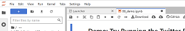
In Jupyter Lab you can double click any section to edit it, and you can press the triangle “run” button to run the code (or display the text).
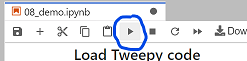
When the code runs, the little number to the left of the code block should change. There might also be some output from your action displyed below the code block.
So now you can go through the rest of this page and try out the practice exercises for yourself!
Variables
You will first practice saving values into variables. Remember, the way we save a value into a variable is like this:
First, save the piece of text “I am writing a computer program!” into a variable called my_progress
Viewing variables in the debugger
Before we continue, we are going to show you how to open the debugger so you can see what is being saved in your variables.
On the tp right of this tab, press the small bug icon to “enable debugging”:
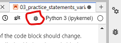
Then, if you did the step above correctly, you should see the variable my_progress with the value “I am writing a computer program!” next to it:
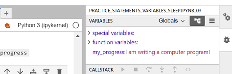
Practice number variables
First, write and run a line of code to save the value 5 into a variable named number_of_pies
Now, save the value 12.5 into a variable named cost_per_pie
Now make a new variable called total_pie_cost and save into the value of the number_of_pies multiplied by the cost_per_pie.
Note: In python (and many programming languages), the symbol for multiply is *
Now use the display function to display what is saved in total_pie_cost
More variable practice
Now, make a new variable called first_name and assign your first name to it
Now, make a variable calles last_name and save your last name to it
Create a variable called age and assign your age to it.
~ A year goes by ~
Increase the age variable by 1.
Now write three lines of code, with each line using display to show what is saved in first_name, last_name, and `age
Sleep
In order to use sleep, we must first import it from the time library
Now try displaying 5 messages of your choosing, with some pauses between each one:
Reddit Bot Practice
Now lets try a Reddit bot with variables and sleep!
Load Praw Library
First, we need to load the praw library
(Optional) Step 1b: Make a fake praw connection with the fake_praw library
For testing purposes, we’ve added this line of code, which loads a fake version of praw, so it wont actually connect to reddit. If you want to try to actually connect to reddit, don’t run this line of code.
Fake praw is replacing the praw library. Fake praw doesn't need real passwords, and prevents you from accessing real reddit
Step 2: Load your developer access passwords
To use this on your real Reddit account, copy your developer access passwords into the code below, replacing our fake passwords.
Step 4: Give praw (or fake_praw) your developer access passwords
Fake praw is pretending to collect account info to use on reddit
Step 5: Submit a post to Reddit
Post something you learned in the class so far:
Remember, the code to post a tweet looks like this:
reddit.subreddit(
"soc_media_ethics_auto"
).submit(
"This is the title of the post",
selftext = "This is the content of the post"
)
Post from a variable
Now try saving a piece of text in a variable for the title, and another for the content of a post, and then submitting a post of whatever you saved in the variables.
To do this, where the code has submit( ... ), you’ll replace the quoted text with the variable name, so it will look like:
reddit.subreddit(
"soc_media_ethics_auto"
).submit(
title_variable,
selftext = content_variable
)
(with whatever your variable name was instead of “title_variable” and “content_variable”)
Submit multiple posts
Next try submitting 3 posts, but use sleep to add pauses between each one (note that reddit might not want you to make more than 1 post every 15 minutes, so you can sleep for 15*60 seconds or more before posting again).
Social Media, Ethics, and Automation#
Automation drives our experience of social media platforms, from timeline feeds to disinformation bots. This book examines social media phenomena, like viral memes, parasocial relationships, and harassment campaigns. This book then explores the ethics of automation on social media platforms by experimenting with computer programs that automate social media actions. We assume no prior programming experience.
Warning
This book is still being created and therefore has incomplete sections, missing citations, etc.
What this book is about:
Social Media
What it does, how it works, how people use it, different uses and abuses
Ethics
Individual Behaviors
Group Behaviors
Design and management decisions
Automation
Learn basic programming skills in Python
Create Reddit bots
Find and process information from Reddit
What we hope you gain from this book:
As a social media user, we hope you learn how social media sites influence you, from how your data gets used or abused, to how harassment and spam bots operate, to how platforms manipulate your emotions and mental state. We hope you could then be a more knowledgeable consumer and participant on social media sites.
As a member of a society that is influenced by social media, we hope you learn about the societal impact of automated social media systems, and how those systems are designed under different economic, social, and governmental pressures. We hope you could then be more knowledgeable in what you might advocate for or vote for in how social media sites operate.
As a potential tech worker that might work for a social media site, we hope you learn how to analyze the ethical tradeoffs made in designing automated systems. We hope you could then bring those concerns into how you design and implement automated systems for social media sites.
Full Table of Contents
Authors and Acknowledgements#
Authors#
Dr. Kyle Thayer#
Kyle is an educator teaching classes that try to integrate social and ethical concerns with computer programming. Kyle is an Assistant Teaching Professor at the University of Washington Information School, and he recieved his PhD from the University of Washington Paul G. Allen School of Computer Science & Engineering.
Dr. Susan Notess#
Susan is a philosopher working in ethics (among other things). They did their PhD at Durham University in England, and they are originally from Colorado. Susan tweets at @susannotess. Susan is currently a freelance researcher working on a variety of collaborative projects, primarily in the UK.
Contributors#
We would like to thank the following people for their contributions: Emily Giverts (who made the first version of the programming exercises) and Kristen Thayer (for programming ideas, explanations, and analogies)
Feedback and insights:#
We would like to thank the following people for their feedback and insights: Anna Lauren Hoffmann and Professor Annie Searle.
Image and Materials Attributions (placeholder)#
Logo phone image is from pixabay
Land Acknowledgement#
We want to respectfully acknowledge that the land on which we did the majority of this work is the traditional home of the Coast Salish people, the traditional home of all tribes and bands within the Duwamish, Suquamish, Tulalip and Muckleshoot nations. This land was taken from these tribes mainly by means of conquest and the rule of force rather than through legal process or transfer of ownership based on free will of all involved. We cannot undo the past; however, we feel obliged to acknowledge wrongdoing and work to ensure the sovereignty of tribes today.
Perspectives and Biases#
As white Americans (though one of us now lives in the UK), we have a tendency to pull from examples from America, the UK, and other English speaking social media. We also have more experience with social media networks of Twitter, Facebook, and Youtube, and tend to use those in our examples.
1. Introduction#
How does social media influence our world and us, in good and bad ways?
How do the decisions made by the creators of social media platforms affect how it is used and what people do?
How do social media bots change the dynamics on the platform?
What can we learn about people from social media data?
What are the ethical trade-offs made in all of these situations?
In this book, we will try to start answering questions like this. To get us started let’s look at a particular situation that happened on Social Media: the case of Justine Sacco’s racist joke tweet, and then read actor Kumail Nanjiani’s reflections on ethics in tech.
1.1. The case of Justine Sacco’s racist joke tweet#
In 2013, Justine Sacco, a PR director at IAC, was boarding a flight to South Africa, and posted the following racist and insensitive joke tweet, which went viral while she was in-flight and unable to check Twitter:
1.1.1. Timeline of events:#
Justine Sacco, a PR director at IAC with only 170 followers posted a racist joke tweet right before getting on an 11-hour flight to South Africa
Someone emailed the tweet to valleywag.gawker.com. Valleywag wrote a post on it and tweeted the post.
Word spread, and Justine’s tweet went viral. Twitter users found other recent offensive tweets by Justine about countries she was traveling in.
IAC (Justine’s employer) called the tweet “outrageous, offensive” but “Unfortunately, the employee in question is unreachable on an international flight.”
Twitter users, now knowing that Justine is on a flight, started the hashtag #hasjustinelanedyet, which started trending on Twitter (including some celebrities tweeting about it).
Twitter users were able to deduce which flight Justine was on.
One Twitter user got a photo of Justine turning on her phone after getting off the plane. That user also talked to her father at the airport and tweeted about the photo and their responses.
Justine lost her job at IAC, apologized, and was later rehired by IAC.
Sources: Buzzfeed, IBTimes, later Vox, later New York Times profile
1.1.2. What our focus will be#
Rather than talk about whether any or all of the responses to Justine’s racist joke tweet were deserved, let’s instead talk about why it played out as it did:
Why did so many people see it?
How did it spread?
What enabled someone to be able to get a photo of her checking the phone at the airport?
1.1.3. Reflection questions#
What motivated Twitter users to put time and energy into this?
What things about the design of Twitter enabled these events to happen?
For example, you might notice that the interface shows where Sacco was located when tweeting, Hillingdon, London, which is where Heathrow Airport is located, helping people deduce which flight she was on.
What financial motivations does Twitter have? How does that influence Twitter’s design?
What changes to Twitter could have changed how this story went?
1.2. Kumail Nanjiani’s Reflections on Ethics in Tech#
Kumail Nanjiani was a star of the Silicon Valley TV Show, which was about the tech industry. He posted these reflections on ethics in tech on Twitter (@kumailn) on November 1, 2017:
1.2.1. Reflection questions:#
What do you think is the responsibility of tech workers to think through the ethical implications of what they are making?
Why do you think the people who Kumail talked with didn’t have answers to his questions?
2. Definitions#
Before we continue to specific topics, we want to define and give some background on our three main subjects: Social Media, Ethics, and Automation
2.1. Social Media#
This book will be centered in the world of Social Media, and all the things that happen there. So what is Social Media?
2.1.1. What is Social Media?#
There is no clear single definition for what counts as social media. John Hartley points out that you could consider almost all of culture as “social media.”
This means that media, which includes painting, movies, books, speech, songs, dance, etc., all communicates in some way, and thus are social. And every social thing humans do is done through various mediums. So, for example, a war is enacted through the mediums of speech (e.g., threats, treaties, battle plans), coordinated movements, clothing (uniforms), and, of course, the mediums of weapons and violence.
But when we use the phrase “social media,” we mean something much more specific, something involving computers (or smartphones), the internet, communication, and networks of connected people.
We will think of social media in terms of internet-based social media platforms, along the lines of these definitions:
But, even though our focus is on internet-based social media platforms, since all media are social and all society is mediated, we will find that much of what we observe is also common throughout the rest of human culture.
2.1.2. Social Media Platform Examples#
There are a wide variety of social media platforms with different aims and ways of engaging with them.
We can’t give every example, but here is a range of different things social media platforms do (though this is all an oversimplification).
Some platforms are used for sharing text and pictures (e.g., Facebook, Twitter, LinkedIn, WeChat, Weibo, QQ), some for sharing video (e.g., Youtube, TickTock), some for sharing audio (e.g., Clubhouse), some for sharing fanfiction (e.g., Fanfiction.net, AO3), some for gathering and sharing knowledge (e.g., Wikipedia, Quora, StackOverflow), some for sharing erotic content (e.g, OnlyFans).
Some platforms are primarily intended for forming connections and building networks, like Facebook for friends and family, and LinkedIn for business connections.
There are also platforms built around activities like gaming (Discord), and dating and hookups (e.g. Bumble, Tinder, OKCupid, etc.).
Platforms can be minimalist, like Yo, which only lets you say “yo” to people and nothing else.
Platforms can also be tailored for specific groups of people, like a social media platforms for low-income blind people in India.
Additionally, some sites are primarily built for other purposes but have a social media component as well, such as the Amazon online store that has user reviews and customer questions & answers, or news sites that have comment sections.
There are many other varieties of social media sites, though hopefully we have at least covered a decent range of them.
2.1.3. Social Media and “Real Life”#
When we (the authors) were young, as internet-based social media was starting to become commonly used, a popular sentiment we often heard was:
This was used as a way to devalue time spent on social media sites, and to dismiss harms that occurred on them.
Versions of this phrase are still around, such as in this tweet from statistician Nate Silver:
In that tweet, Nate Silver seems to be saying that conversations and views represented on Twitter are not representative of most people, thus devaluing the conversations and views expressed on Twitter.
We also see this phrase used to say that things seen on social media are not authentic, but are manipulated, such as people only posting their good news and not bad news, or people using photo manipulation software to change how they look.
We’re curious to see how this phrase is continued to be used, and how these sentiments are continuing, being rejected, or evolving.
Reflection questions#
How often do you hear phrases like “social media isn’t real life”?
How do you think about the relationship between social media and “real life”?
2.2. Ethics#
As we look at social media, we will be looking at ethical concerns around decisions be social media users, designers, moderators, etc.
So what is ethics1?
2.2.1. What is Ethics?#
Have you ever paused to decide what to do in a situation, and found yourself wondering what would be the ‘right’ thing to do? Or perhaps you might think, as a good person, how should I handle this situation?
These questions are examples of ethical thinking. Ethics is a way of investigating these habits of thought about what is morally right and good, about what we should do, and about how the world should be. Most people have ethical beliefs; for example, many believe that stealing is wrong. When we stop and ponder why stealing is wrong, or what makes it wrong, or when it is wrong, we are doing ethics.
Because humans have pretty much always been interested in these kinds of questions, we already have several different ‘systems’ of ethical thought available to us as tools for thinking through how to guide ourselves in a course of action. These ethical systems vary in many ways, such as whether they focus on individuals or communities, or focus on rights or relationships.
Now, you might be thinking… isn’t ethics something that people NEVER agree on? We don’t exactly have firm answers, right? And more than a few wars have been fought over ethical disagreements that couldn’t be resolved. So how is ethics supposed to help us decide about how things should go in the world of social media? How does ethics help us to know what to do?
It might help to think about ethical frameworks as tools for seeing inside of a situation. In medicine, when doctors need to see what’s going on inside someone’s body, they have many different tools for looking in, depending on what they need to know. An x-ray, an ultra-sound, and an MRI all show different information about what’s happening inside the body. A doctor chooses what tool to use based on what she needs to know. An x-ray is great for seeing what’s happening with bones, but isn’t particularly helpful for seeing how a fetus’s development is progressing.
When we are trying to see inside the many complicated factors of a situation and decide what to do, there are various different kinds of information we might want to gather. When facing a moral decision, we might want to know about:
how a certain course of action would impact other people. Will more people be hurt if I take this or that course of action?
what course of action would leave us feeling okay with ourselves and our desires to be good people. Maybe I could cheat in a situation and many people would be helped or spared pain, but could I live with myself knowing I had cheated?
what course of action should we take, if it will be carried out by many different people across an organization? When I need to depend on others to act in certain ways to achieve a good outcome, what course of action can be accomplished even when some of those different people disagree about what should be done?
One question many people have about using ethical reasoning as a tool for analysis is: what about cultural disagreements? What about the idea that there is no absolute truth, that a moral claim is only true for me or you, or for my culture or your culture? In an increasingly globalized world, there is an opportunity to learn to respect and accommodate the differences between cultures and values, and this is a good thing! It means that we have even more tools at our disposal for thinking through the ethical considerations packed into a situation, as we learn from those who see things differently.
In this class, you will be building up a ‘toolbox’ for thinking about ethics. We won’t get into the more abstract philosophical side of questions about ultimate moral truths or where they come from (that discussion is called metaethics, and it is fun, but quite a brain-twister). When using ethical tools to analyze a situation concerning social media and automation, you will be encouraged to always choose at least two different ethical frameworks and compare them. This is not about finding one theory you like and sticking with it. Rather, it’s about learning how to use multiple tools to see multiple different factors in a situation (using an MRI and an x-ray), getting a more complete picture of what is going on and what is at stake.
So, with that said, let’s get to know some of the tools that will be in your toolbox!
2.2.2. The “Golden Rule”#
One widespread ethical principle is what English speakers sometimes call the “Golden Rule”:
“Tsze-kung asked, saying, ‘Is there one word which may serve as a rule of practice for all one’s life?’ The Master said, ‘Is not reciprocity such a word? What you do not want done to yourself, do not do to others.’”
Confucius, Analects 15.23 (~500 BCE China)
“There is nothing dearer to man than himself; therefore, as it is the same thing that is dear to you and to others, hurt not others with what pains yourself.”
Gautama Buddha, Udānavarga 5:18 (~500 BCE Nepal/India)
“That which is hateful to you do not do to another; that is the entire Torah, and the rest is its interpretation.”
Hillel the Elder, Talmud Shabbat, folio 33a (~0 CE Palestine)
“So in everything, do to others what you would have them do to you, for this sums up the Law and the Prophets.”
Jesus of Nazareth, Matthew 7:12 (~30 CE Palestine)
And many more…
2.2.3. Ethics Frameworks#
Below are some summaries of a selection ethics frameworks. There are many more ethics frameworks which we haven’t included here, and these explanations are all way oversimplified. We hope that this gives you a start to understanding each framework, and a range of options for how to think through ethics in social media and programming.
Ancient Ethics#
Here are few ancient ethics systems. These examples are mostly about qualities of a good person.
Confucianism (another link)#
Being and becoming an exemplary person (e.g., benevolent; sincere; honoring and sacrificing to ancestors; respectful to parents, elders and authorities, taking care of children and the young; generous to family and others). These traits are often performed and achieved through ceremonies and rituals (including sacrificing to ancestors, music, and tea drinking), resulting in a harmonious society.
Key figures:
Taoism#
Act with unforced actions in harmony with the natural cycles of the universe. Trying to force something to happen will likely backfire.
Rejects Confucian focus on ceremonies/rituals. Prefers spontaneity and play.
Like how water (soft and yielding), can, over time, cut through rock.
Key figures:
Virtue Ethics#
Acting in ways consistent with the virtues (e.g., courage, truthfulness, wittiness, friendliness, etc.) leads to flourishing of an individual.
In acting virtuously, you are training yourself to become more virtuous, and you will subsequently be able to act even more virtuously.
Different groups have different sets of virtues:
Quaker SPICES (Simplicity, Peace, Integrity, Community, Equality, Stewardship)
US Army LDRSHP: Loyalty, Duty, Respect, Selfless Service, Honor, Integrity, Personal Courage
Key figures:
Aztec Virtue Ethics (another link)#
Live a rooted, balance d life of moderation.
Virtue is a group effort. Individuals can’t be virtuous on their own because “the earth is slippery, slick” (meaning it is easy for an individual to fall into bad actions, they need support and moderation)
1600s - 1700s European Ethics#
A few ethics systems that originated in the 1600s and 1700s in Europe. Note that in this selection of ethics frameworks motive and inner qualities don’t matter, only outward actions or outcomes.
Natural Rights#
Locke: Everyone has a right to life, liberty, and property
Jefferson in the Declaration of Independence: “We hold these truths to be self-evident, that all men are created equal, that they are endowed by their Creator with certain unalienable Rights, that among these are Life, Liberty and the pursuit of Happiness.”
Discussions of “human rights” fit in the Natural Rights ethics framework
Key figures:
Consequentialism:#
Actions are judged on the sum total of their consequences (utility calculus)
The ends justify the means.
Utilitarianism: “It is the greatest happiness of the greatest number that is the measure of right and wrong.”
That is, What is moral is to do what makes the most people the most happy.
Key figures:
Deontology#
There are absolute moral rules and duties to follow (regardless of the consequences). They can be deduced by reasoning about the objective reality.
Kantianism: “Act only according to that maxim whereby you can, at the same time, will that it should become a universal law.”
Meaning: only follow rules that you are ok with everyone else following.
For example, you might conclude that it is wrong to lie no matter what the consequences are. Kant certainly thought so, but many have disagreed with him.
Deontological thinking comes out of the same era as Natural Rights thinking, and they are rooted in similar assumptions about the world. Deontology is often associated with Kant, because at that time, he gave us one of the first systematic, or comprehensive, interpretations of those ideas in a fully-fledged ethical framework. But deontological ethics does not need to be based on Kant’s ethics, and many ethicists working in the deontological tradition have suggested that reasoning about the objective reality should lead us to derive different sets of principles.
Key figures:
Relational Ethics#
These are a few ethics systems which center on maintaining proper relationships.
Ethics of Care (another link)#
Focuses on responsibilities and relational issues in the relationships you are invested in.
Balancing your needs and the needs of those you care for, and sometimes strangers too.
Rejects frameworks that focus on scenarios of competing for resources (justice, fairness).
Started out as a critique of the idea, popular in some circles following World War 2, that men are naturally more fully developed, and more morally mature, than women. As the first care theorists pointed out, the only way this could be true is if we try to learn about ethics only by considering the lives and views of men. In American society at the time, male and female socialization were starkly different from each other. Of course socializing males and females to act in different ways will lead to them having different moral responses to situations. It is absurd, then, to come back and say that one way is more morally advanced than the other!
Care Ethics began by contrasting the American socially male way of considering ethics, especially valued behaviors in business and government contexts, vs. the American socially female way of considering ethics in relationships, especially in the female-coded spaces of the family and the home.
Key figures:
Ubuntu#
“A person is a person through other people.”
The concept of Ubuntu is traditional in Sub-Saharan Africa, but this summary of Ubuntu is more modern and was popularized globally by Nelson Mandela and Desmond Tutu. There are also other different definitions of Ubuntu.
“Actions are right roughly insofar as they are a matter of living harmoniously with others or honouring communal relationships.” (source) (alternate interpretation)
Key figures:
(More on African Ethics here)
American Indigenous Ethics#
Like Ubuntu, American Indigenous ethics is actually a wide family of differing views. But there are some particularly common ideas that show up again and again in American Indigenous thought, and which philosophers from those traditions have identified as being reasonably central to the ethical theories espoused by the nations of this continent.
Distrust of abstract propositional claims, focus on experiential / lived knowledge.
Including distrust of abstract includes grand abstract claims about ethics as opposed to the lived knowledge of practicing ethics. This would include community experiences of ethics shared through stories. Still, we can list some common commitments in the form of principles, below.
Anti-hierarchy. No one should be fully dependent or independent.
Learn to perceive the needs of others in order to help the group and maintain equality.
Equality for people, but also air, water, plants, etc. (everything is part of one process).
(Based on book American Indian Thought. You can also search google scholar)
Key figures:
Alternative Ethics#
Divine Command Theory#
Something is right or wrong because God(s) said so.
Euthyphro Dilemma: “Is the pious [action] loved by the gods because it is pious, or is it pious because it is loved by the gods?” (Socrates, 400s BCE Greece)
If the gods love an action because it is morally good, then it is good because it follows some other ethics framework. If we can figure out which ethics framework the gods are using, then we can just apply that one ourselves without the gods.
If, on the other hand, an action is morally good because it is loved by the gods, then it doesn’t matter whether it makes sense under any ethics framework, and it is pointless to use ethics frameworks.1
Egoism#
“Rational Selfishness”: It is rational to seek your own self-interest above all else. Great feats of engineering happen when brilliant people ruthlessly follow their ambition.
That is, Do whatever benefits yourself. Altruism is bad.
Key figure:
Ayn Rand is sometimes popular with tech people and CEOs. Understandably, some CEOs view themselves as brilliant and like being told that ruthlessly pursuing their ambition is morally good. (Though the end-goal can’t be great feats of engineering, that self-interest must come first and great feats of engineering can only be a side-effect).
Nihilism#
There is no right or wrong. Nothing matters.
There are many different types of moral nihilism. But they all boil down, one way or another, to the idea that moral reasoning or trying to think about ethics is not real, or is based on a mistake.
Even if one is inclined towards nihilism, there is still truth in the anthropological observation that people do deliberate about how to act and how to live, and that these deliberations consistently take the shape of one or more of the ethical frameworks above, considering principles, character, virtues, consequences, responsibilities, and so on. So it is still interesting to look at ethics, even if you like the idea of nihilism.
Existentialism#
Like nihilism, existentialism starts with a claim that there is no fundamental meaning or morality. But in existentialism, people must create their own meaning and morality.
In philosophical terms: “existence precedes essence.” That is, things exist first without meaning or value. They only have value because we choose to create meaning or value for them.
Existential ethics: your actions have consequences, but the consequences are unknowable. Even though you desire to do what’s right, there is no objective morality to follow (part of existential angst). You are forced to invent some sort of meaning-giving basis for life that can tell you what to care about. This might include constructing a kind of “morality” to follow.
Key figures:
More on Ethics#
There are many more ethics frameworks that we haven’t mentioned here. You can look up some more here.
Also, many of these ethics frameworks overlap and different ones can be considered versions of another. So the Confucianist definition of an exemplary person could be considered as virtues in virtue ethics. Existentialism can be considered a form of Nihilism. Moral Relativism (saying that what is good or bad is just totally subjective, and depends on who you ask.) can also be considered a form of Nihilism, etc.
You can also follow any of the other links in this page or read books like this, or watch the TV show The Good Place (currently streaming on nbc.com and Netflix)
Ethics Frameworks Don’t Guarantee Moral Goodness#
One final note we’d like to make here is that, as we said before, we can use ethics frameworks as tools to help us see into situations. But just because we use an ethics framework to look at a situation doesn’t mean that we will come out with a morally good conclusion. This is perhaps most obvious with something like nihilism, which rejects the very existence of a morally good conclusion. But we can also see this with other frameworks, such as egoism, which we (the authors) believe often gives morally wrong results, or with consequentialist/utilitarianist reasoning reasoning, which has been challenged at many points in history (e.g., A Modest Proposal from 1729, the character Ivan arguing with his brother in Brothers Karamazov fromn 1880, and the two articles Effective Altruism Is Pushing a Dangerous Brand of ‘AI Safety’ [archived here] and Effective altruism’s most controversial idea from 2022). Still, we hope that in using different frameworks (even ones you often disagree with) you are able to understand situations better and with more nuance.
As an example of how religion and divine command theory can work with other frameworks, let’s consider a few different versions of Christian thinking. In the white Evangelical Christian community the authors grew up in, we often tried to figure out deontology-type rules based on Bible verses (e.g., based on Exodus 20:16, we might conclude that lying is always wrong regardless of the consequences). But this is quite different from the Archbishop Desmond Tutu who helped popularize Ubuntu philosophy globally and chaired the Truth and Reconciliation Commission, or George E. Tinker of the Osage Nation, who wrote American Indian Liberation: A Theology of Sovereignty.
2.2.4. Practice Using Frameworks#
To practice using ethical frameworks as tools, here is an exercise.
Scenario: A Parent With Alzheimer’s#
Suppose you are in the position of needing to decide what to do to care for a parent. Although they are used to an active and independent life, it is clear that they have been showing signs of worsening, early stages Alzheimer’s. You believe they are no longer able to safely live on their own, but they get upset at the suggestion that they might need help.
You have two options. Either you can intervene, by ignoring your parent’s wishes and securing a professional carer or care home to support them, or you can choose not to intervene, hoping that they will finally realize they need care. You have consulted with your siblings, and they left the final decision to you. The cost of professional care will come out of your parent’s financial reserves (they can afford it), but you will need to spend their money for them against their will.
You don’t know what to do, so you sit down and work through your options with a list of ethical frameworks.
Trying Out Different Frameworks#
Your job in this exercise is to articulate a reason for intervening (forcing your parent to get care) AND a reason against intervening (hoping your parent comes to their own realization they need care), for each framework listed.
The goal of this exercise is to practice using the ethical frameworks as tools for looking at the insides of a complex ethical dilemma, and to see how each tool gives you slightly different information about what is at stake.
This scenario will be hypothetical for some of you, but for others, like for one of the authors, this will be a decision you have been very close to in real life.
If you are able to, work with others in filling out this chart or compare with others to compare what you came up with. Every real-life instance of this is a little bit different, so make sure to respect whatever decisions your groupmates may have made. One suggestion is to ask if anyone has seen a situation like this unfold in their family, and to invite them to share first about the reasons that were most salient to the decision that was made. Once anyone who wishes to offer experience has volunteered, then you can begin working through the theories in the list.
Framework
Intervene
Do Not Intervene
Confucianism: become an exemplary person, i.e. generous and respectful, through rituals, i.e. sacrifice to ancestors
Be generous and resepectful to your parent and siblings by taking the hard decision and absorbing whatever upset follows. It might be a substantial sacrifice to let your parent be angry with you, but an exemplary person would respectfully accept the difficulty in order to secure proper care for their parent.
Be respectful of your parent’s authority and don’t intervene and try to take the decision away from them. Instead be generous in helping provide for your parent while your parent makes their own decision.
Taoism: Act in harmony with universe; trying to force things will backfire
Act in harmony with the natural process of what’s going on with your parent’s health and what needs to be done for their care; trying to ignore the natural process of Alzheimer’s and not intervening now will cause more problems later
Act in harmony with the natural process of your parent’s journey coming to terms with their illness; trying to force them to accept care before they are ready will backfire.
Virtue Ethics (Aristotle): Act in a way consistent with the virtues to promote your flourishing. Practicing virtuous actions makes us more virtuous in the future.
Virtue Ethics (Aztec): Virtue is a group effort; we all need support to help us live lives of balance and moderation.
Natural Rights
Care Ethics
Consequentialism
Deontology
Ubuntu
American Indigenous
Divine Command
Egoism
Nihilism
Existentialism
Once your table is completed, think back over the different rationales given for each decision option. What ‘reasons’ felt most compelling to you? Some will seem unpersuasive, and some will seem to really get to the heart of the issue. Which framework best supports your decision to intervene? Which framework best supports your decision not to intervene?
English language note: As you may notice here, ‘ethics’ is, by convention, a singular word. An ‘ethics’ is a way of describing how people think about something. There is also a word, ‘ethic’, but that has different usage. So for example, someone’s ‘work ethic’ is different from the ‘ethics of work’ to which they might subscribe. On a related note, some people will tell you that ‘data’ and ‘media’ are both plural. These words come from Latin, and those word forms are indeed plural in Latin! But we are using English, and conventions vary as to whether these terms should be treated as grammatically plural or singular. You will see variation in how people use these forms in your studies (and perhaps even in this book!), but it should not alarm you. The rule of thumb is to be consistent across a document or project in how you treat such things, so we have tried to be consistent in this book, with the exception of where we are quoting someone else’s words. TODO: decide whether we will treat media and data as plural or singular, and ensure compliance
2.3. Automation#
As we look at ethical considerations in social media, we will be focused on automation (actions that run on their own) done by computers. We will particularly look at computer programming code that performs actions on social media.
Let’s start with an analogy: language translation.
2.3.1. Language Translation (Analogy)#
In order to have computers do an automated activity, we will need to communicate with the computer. Let’s start by looking at how communication works between different human languages.
Imagine I am an English speaker who wants to communicate with someone else who speaks Arabic. Neither of us speaks the other one’s language. If we have access to people who speak multiple languages, it is possible for them to act as translators, taking what someone says and repeating it in another language, until we are able to get our messages back and forth.
So, given the set of bilingual translators in the above diagram, how can we translate between English and Arabic?
In my example, we use two translators: The English-French speaker and the French-Arabic speaker. Then in order for me to communicate with the Arabic speaker, we pass our message to the translators, and they communicate with each other using French as an intermediate language. So messages will be translated from English to French and then to Arabic one way, and from Arabic to French to English the other.
As we look at communicating with computers, we will see a similar translation path, including the use of intermediate languages.
Now let’s look at the history of computers and communication with them.
2.3.2. Human Computers#
Before electronic computers were generally available, when scientists wanted the results of some calculations, they sometimes hired “computers,” which were people trained to perform the calculations.
When scientists wanted these human computers to do a task for them, they would give these human computers instructions for what they wanted calculated. These instructions were given in a regular human language (like English), and in math notation. Then the human computers would send back the results of whatever calculation they had been asked to perform.
But human computers were eventually replaced by electronic computers, and communication with electronic computers was not straightforward.
Learn More#
When Computers Were Human
https://www.history.com/news/human-computers-women-at-nasa
Read the book or watch the movie Hidden Figures
2.3.3. Computers Speak Binary#
As electronic computers became faster and more available, scientists began to rely on electronic computers to automatically perform their calculations instead of on human computers.
But computers don’t speak human languages like the human computers did. Instead, computers speak binary:
I speak English, and so I can come up with an English statement of what I want the computer to do, like:
But a computer only understands instructions that are written in binary, which is composed entirely of 0s and 1s. So somehow I’ll need to turn my English instruction into binary instructions, so the computer can understand.
Binary#
Early in the history of computers, the designers of computers decided that the easiest way of making them work was to use the binary numbering system, since the 0s and 1s could be represented easily through physical means like a switch being on (which represents 1) or off (which represents 0).
These 0s and 1s, can then be used to represent numbers, like this:
decimal 0 → binary 0
decimal 1 → binary 1
decimal 2 → binary 10
decimal 3 → binary 11
decimal 4 → binary 100
decimal 5 → binary 101
decimal 6 → binary 110
decimal 7 → binary 111
decimal 8 → binary 1000
decimal 9 → binary 1001
decimal 10 → binary 1010
…
But these binary 0s and 1s can be used for more than just representing numbers. In 1842, Ada Lovelace realized that a full computer (which was only a theoretical possibility at the time) could represent and work with all sorts of things:
Everything a modern computer does happens through binary. So all information is stored in binary, such as:
Text (like in this book). For example: “A” can be stored as “1000001” and “B” can be stored as “1000010”
Images are represented as a grid of points called pixels, and each pixel has a number representing its color in terms of Red, Green, and Blue. So a pixel with the color of “000000001111111100000000” would be green.
Social media connections. For example, somewhere in Facebook’s computer systems is information stored with your ID number, and it has a list of the ID numbers of the people you are friends with.
Additionally, all the instructions which tell a computer what to do are stored in binary as well. For example, in the Intel 8080 computer:
“00010100” means “add 1 to the number stored in register #2”
“11010010” means “jump to another set of instructions if condition #2 is true”
These instructions and information are combined together to make any website you use, any computer game you play, and any online textbook you read.
So how do people turn their ideas into binary computer instructions?
2.3.4. First Programmers#
The way the first computer programmers told computers what to do was by learning the binary language of computers and then translating their goals directly into binary instructions by themselves.
The photo above shows the ENIAC computer (built with US Army funds in 1945, this was the first electronic general-purpose computer), being programmed by three of the six women who were the original programmers on this computer: Kay McNulty, Betty Jennings, Betty Snyder, Marlyn Meltzer, Fran Bilas, and Ruth Lichterman.
The job of these women was to take a request for a task to be done on the ENIAC, and to turn it into computer instructions, and enter those instructions into the computer (though this early computer happened to use decimal numbers and not binary).
Note: Since this book is also about ethics, we should mention that the first thing these women were asked to program on the ENIAC was some calculations to help build thermonuclear bombs. How do you think they might have felt about being asked to do this? The building of those bombs involved many scientists and other professionals along the way, several of whom were not on board with the idea of what their calculations were being used for. This has raised questions about moral responsibility: were the women made complicit in whatever moral wrongs may have come about using calculations they performed using the ENIAC?
So, at this stage of computer history, giving a task to a computer involved a programmer translating the task directly into the computer’s language (generally binary):
Now, this task of translating a task into the binary a computer speaks is a very slow, tedious, and difficult process. So why bother to go through all that trouble?
The reason it was worth it to go through the trouble of translating tasks into a computer’s language is that computers can do two things very quickly: Arithmetic (e.g., 2 + 2 = 4), and following logical steps (e.g., when you press this button, then close the program). So if you can get your task translated into arithmetic and logical steps, the computer can work faster than a human could.
But this process of translating tasks into computer code was still a big pain, so couldn’t there be a better way?
2.3.5. Compilers and Programimng Languages#
History#
In the early 1950s, Grace Hopper proposed a better way of programming a computer. She suggested creating a “programming language” based on English words with a “compiler” computer program that would turn the computer language code into binary computer instructions.
photo of Grace Hopper c. 1960, at that time a Commander in the US Navy.
When Hopper’s ideas were mostly ignored, she proceeded to create her own compiler and later helped design some of the most important and influential early programming languages and compilers.
The new set-up for programming#
So, thanks to Grace Hopper, we now have a new set-up for computer programming, which is what programmers still use today:
When someone wants a computer to perform a task (that hasn’t already been programmed), a human programmer will act as a translator to translate that task into a programming language. Next, a compiler (or interpreter) program will translate the programming language code into the binary code that the computer runs. In this set-up, the programming language acts as an intermediate language the way that French did in my earlier analogy.
In this set-up, a programmers basic task is to do these three things:
Given a problem, break it down into steps for a computer
Write those steps down in a programming language
Run the compiler or interpreter, so the computer program can run on the computer
Programming languages#
Programming languages (e.g., Python, R, Java) are specially designed languages that attempt to split the difference between how a computer thinks and communicates and how people think and communicate. There are many programming languages, with different specializations and trade-offs.
In this book, we will use Python, which is commonly used in data science tasks, and has support for writing programs that work with Reddit.
Compilers / Interpreters#
Compilers are special programs that translate code written in a programming language into the binary 0s and 1s that a computer runs.
There are two varieties of compilers:
standard compiler: takes a whole computer program and turn it all into binary so it can be run later
interpreter: turns the computer language code into binary as it is running the program
Python uses an interpreter, so when you run a Python program, the interpreter translates the Python code into binary while it’s running it.
Programming in this book#
Throughout the rest of this book, we will take ideas for programs written in English and translate them into Python code, and we will look at Python code and translate it back into English descriptions of what the code does. The Python Interpreter will then translate this code into binary instructions, which the computer will then run.
Next, let’s look at an example computer program that posts one tweet.
2.3.6. A program that makes one reddit post#
Below is a computer program written in the Python programming language. The program will make a reddit post in the subreddit “soc_media_ethics_auto”. The post will be titled “A bot post” and say: “This post was made by a computer program!”. Since this is a computer program that posts on reddit, we would call this program a reddit bot.
Don’t worry if you don’t understand any of this Python code yet; we will build an understanding of code like this throughout the book.
Though you may not understand anything in the above code yet, I want to point out a couple things:
The code above is full of English words like “import”, “username”, “password”, and “secret,” which may help you guess the meaning of the code.
There are also other symbols as well, though being used in a different way than in normal English, symbols like
=,_,.,(, and)The final lines of code gives good hints as to what it is doing:
subredditchooses which subreddit the post will be made on, andsubmithas the information to submit as a new post.There are four pieces of text with random numbers and letters that include things like “username” and “client_secret” inside. These pieces of text are meant to be replaced with your reddit username and password and a pair of special passwords for running a reddit bot. You can get these special passwords if you get developer access to reddit (see the page on Making a Reddit Bot Account). Once you put your special passwords in those locations then this code will post a tweet on your account.
Fig. 2.1 A reddit post made by running the code above with the account information for “kthayer_teacher_bot”.#
We will go through that example code in more detail next.
2.3.7. Understanding the Reddit Bot Code#
Let’s look more at that program that creates one Reddit post.
There are a number of ways of looking at the code, but first, let’s look at it as a template with a couple pieces we can change.
The program as a template#
Below I’ve highlighted the text of the sections of the program that you might want to modify.
import praw username="fake_reddit_username" password="sa@#4*fdf_fake_password_$%DSG#%DG" client_id="45adf$TW_fake_client_id_JESdsg1O" client_secret="56sd_fake_client_secret_%Yh%" reddit = praw.Reddit( username=username, password=password, client_id=client_id, client_secret=client_secret, user_agent="a custom python script" ) reddit.subreddit( "soc_media_ethics_auto" ).submit( "A bot post", selftext = "This post was made by a computer program!" )The first four highlighted pieces of code are for the special passwords that let you run a bot. You can get when you get those passwords by following these steps to get developer access to reddit (I’ve put fake values in them for now):
username
password
client_id
client_secret
The final three highlighted pieces of code are the information for what to post on reddit. First, in the parentheses after
subredditis which subreddit to post on. In the parentheses after thesubmitis first the title of the post, and next is the text of the post itself. You can change any of these values ot change which subreddit you post to, and what title and text to post.So, by changing those sections of code, you run this program to post whatever reddit you want to post on a subreddit. It is, of course, much easier to just open reddit and post something, but as we get to more complicated programs, we’ll start to see more of the power (and pitfalls) of automation on social media.
Note: all the highlighted sections of code are surrounded by double quotes. In the Python programming language, putting something in quotes indicates that you want the computer to think of the things inside the quotes as pieces of text, in this case passwords and reddit post information.
Adding code comments#
The goal of programming language code is to be readable by both humans and computers, but sometimes the meaning of code isn’t always clear to humans trying to read it. In order to aid humans reading the code, programming languages allow programmers to do things to make the code more readable, such as adding extra blank lines between sections of code. Blank lines can be used to have some lines of code be visually grouped together, and some be separated, so humans can better follow the outline of the code.
Most programming languages also allow “comments,” which are pieces of code that the computer will ignore. These comments allow the person writing the code to leave a note to future people reading the code, knowing that the computer won’t read it (like an aside in a play).
In Python, you can add a comment by using the
#symbol. Python will ignore everything on a line that comes after the#. But human programmers will often look for the meaning of the program in these comments.So, in order to make the program above easier for future humans to understand, let’s add two comments telling these future humans where to add their special passwords and where they can change the text of the tweet:
With those, hopefully a future human reader will have a better chance of understanding how to modify the program to do what they want.
Note: I started each comment with “TODO” to tell the future human that there is a task they have to do to get the program to work for them. Since this is only intended for human readers, I could have written it in any way I want, but all capital letter TODOs are commonly used like this by programmers.
Purpose of each section of code#
Now that we’ve looked at the code as a modifiable template, let’s break the code into sections and look at what the purpose of each part is. The code is run starting at the top and going down from there, so we will go through the code in that order.
Note: It’s normal if you don’t understand everything here. Over the course of this book you will learn to understand more of how programs work, but also, even professional programmers often don’t understand parts of the programs they are working on, they just understand enough to modify the parts they need to.
The first line of code is:
The purpose of this line of code that loads another set of code. The code it loads is called praw (The Python Reddit API Wrapper), which is code specially written to help make programs that work with Reddit.
The next section of code is four lines long:
This is code to store all of the reddit password information we need to use a bot. You need your reddit username and password, and then a special client_id and client_secret for the bot. Again, you’ll have to get your actual developer access passwords and replace the fake ones currently in the code.
The next section of code is five lines long:
The purpose of this code is to take all the developer access passwords you entered above, and give them to the praw code so that the praw code can log into your reddit account and provide the needed passwords for running a reddit bot.
Note that the last line is setting the
user_agentwhich is a description of which program is being used to post from. For example, it might be “Reddit web page” or “Reddit iPhone app” or “Sprout social media manager.” For our programs, I’ve just labeled our posts as being from “a custom python script.”The final lines of code are:
These are the lines of code where a reddit post is actually made. First, the
subredditsection selects which subreddit an action will be taken on, and thensubmitcreates a new post with the given title and text.Adding more code comments#
Now that we’ve looked at the purpose of each section of code, we can add additional comments explaining what each section does, so that future humans reading the code are more likely to understand it.
Following the common practice of programmers, we will put the comment before the section of code that the comment is explaining. We can also make multiple comment lines as needed if our comments are long.
Now that we’ve looked over the code and commented it, let’s go to the next page, where you can try running it!
2.3.8. Demo: Try Running the Reddit Bot!#
Running this Jupyter Notebook#
This page is called a “Jupyter Notebook” which it is a text page that has runnable Python code in it.
In order to run the code, you can look for the rocket button at the top which will give you an option to “launch binder”
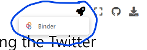
If you launch binder, it will take a while to load, but eventually show you a version of this page Jupyter Notebook in a code editor called Jupyter Lab
In Jupyter Lab you can double click any section to edit it, and you can press the triangle “run” button to run the code (or display the text).
When the code runs, the little number to the left of the code block should change. There might also be some output from your action displyed below the code block.
So now you can go through the rest of this page and select and run each section of code.
Here is the bot code you can run!#
Our demo Reddit bot code is below, broken up into different sections.
You can select each section of the code below and run it to see what it does.
By default this code uses a fake version of our reddit connection so it doesn’t connect to a real reddit account.
If you want to actually connect to your reddit account, you can put your special developer access passwords in the right code section below, and then when you run the code make sure to skip the code section that makes a fake twitter connection with “fake_praw”.
Step 1: Load praw code#
(Optional) Step 1b: Make a fake praw connection with the fake_praw library#
For testing purposes, we’ve added this line of code, which loads a fake version of praw, so it wont actually connect to reddit. If you want to try to actually connect to reddit, don’t run this line of code.
Step 2: Load your developer access passwords#
To use this on your real Reddot account, copy your developer access passwords into the code below, replacing our fake passwords.
Step 4: Give praw (or fake_praw) your developer access passwords#
Step 5: Submit a post to Reddit#
Step 6: Modify the code above to create a different reddit post#
2.3.9. Reflections on the Reddit Bot#
When one of us ran the program, who made those reddit posts (me? you? the bot?)?
Notice that there are at least three times of actions for posting reddit post with this bot, one is when the code was originally written, another is when the code was modified, and and the other is when the code is run. These could even be done by different people.
How do you divide out responsibility for a bots actions between the person writing the code and the person running the program?
2.3.10. Automation in Social Media#
Now that we have looked at what automation is and seen one example of automation on social media (a Reddit bot), let’s consider some different ways automation shows up on social media:
External Programs#
Some automation on social media is done with programs that are separate from the social media platform.
Bots#
Bots are computer programs that act through a social media account. We will talk about them more in the next (Chapter 3).
There are also various applications that are made to help users interact with social media. For example, there are social media manager programs that help people schedule posts and let multiple people use the same account (particularly useful if you are something like a news organization).
Data Gathering#
Various groups want to gather data from social media, such as advertisers and scientists. This data is gathered and analyzed with computer programs. We will cover these programs later, particularly in Chapter 8: Data Mining.
The Social Media Platform#
Social media platforms themselves also have many places where automation occurs.
Code#
Social media platforms have code that automates many of the tasks it takes to keep a social media platform running. These are things like the code that saves and loads the data on the platform (ses Chapter 4: Data), the code that displays that data to users (including the visual layout) and gives users ways of interacting with the platform, the code that decides which posts a user sees (see Chapter 12: Recommendation Algorithms).
Policies#
Finally, social media platforms have various policies on how they will operate, such as what people are allowed to have for user names, or what behaviors will get you banned from the platform. The policies are often partly supported by code on the social media platform, but also done by actions of humans, such as content moderators (chapter 15). These humans are acting as human computers to enforce the policies.
2.4. Tying It Together#
Now that we have defined social media, ethics, and programming, we will spend the rest of this book tying them together in different ways.
To give one example, let’s look at the experience of people who use social media but can’t view images (they may be blind or low vision, or their device or internet might have restrictions). In order to make the information from the image accessible to these users, social media platforms allow images to be posted with an “alt text”, which the user can read (or have the computer read to them). See Fig. 2.2 below for an example.
Fig. 2.2 A tweet with a photo that has an “alt text” (seen in the popup over the image), so those who cannot see the photo still have access to the information in the tweet.#
Now, people who design and program social media platforms can do things to encourage or discourage users adding alt-text to their photos. For example, they could require or forbid users from adding alt-text to their photos, or they could do more subtle versions of those by putting reminders to add alt-text, or making the option of adding alt-text hard to find. Additionally, they could run a machine learning program to try to automatically generate alt-text for photos, though those programs may make mistakes or have biases.
So what are the ethical questions facing the designers and programmers of social media platforms? Are they responsible for designing their platforms around this accessibility issue, or is it the responsibility of users uploading image data to make their content accessible by using alt-text?
Imagine a debate on this question between someone using the Aztec Virtue Ethics framework, and someone using the Natural Rights framework.
Have a think about your answers, and then click to see some sample answers
Natural Rights (all humans have rights that should not be violated):
Every individual has the right to post how they see fit, for whichever audiences they choose. If they do not want to include alt-text (perhaps because they do not consider anyone who can’t view images to be part of their community or audience), then that is their prerogative.
OR
Every individual has a right to the information posted on social media, even if they can’t view images. So not including alt-text is a violation of their rights and platforms should force users to include alt-text.
Aztec Virtue Ethics (virtue is a group effort and we all need support to find balance and moderation):
It is everyone’s responsibility to support others, so the platform should make everyone support those who can’t view images by forcing them to include alt-text.
OR
Everyone should be supported in finding balance and moderation, and so a platform shouldn’t force users to include alt-text even when it doesn’t make sense or is unnecessarily burdensome (that wouldn’t be moderation).
Now imagine we propose letting the platforms wait and add the ability to include alt-text when users are really ready for it. How might a Taoist and a Consequentialist respond?
Have a think about your answers, and then click to see some sample answers
Taoist:
Trying to force this issue will likely backfire. Just leave things as they are, until the users are themselves asking for this option to be integrated into the platform’s design.
OR
You should make adding alt-text part of the natural flow of posting images.
Consequentialist:
There are actually very few people who can’t view images, so having people do extra work for those very few people is a waste of time.
OR
The difficulty caused to people who can’t view images when there is no alt-text is very significant, so a minor burden of having users add alt-text is worth the trade-off.
Now look back through how those frameworks framed the issues. Remember, each framework is a tool to help us see inside the problem. What does each tool show us? What do you learn from comparing the different approaches?
Note
While we show how these frameworks might argue for different approaches to image alt-text, we don’t want to give the impression that we are neutral about an issue like alt-text. Please provide alt-texts for images and encourage others to do the same! We will talk more about accessibility in chapter 10.
This is a small example of the kind of reflection that we will be returning to again and again throughout the course. As we get more deeply acquainted with the automation side of things, we will be able to use these ethical tools to look deeper into questions of Social Media, Ethics, and Automation.
2.5. Learn more#
Ethical Tech Starts With Addressing Ethical Debt
(just for fun) Parody video
3. Bots#
One kind of automation done on social media is what are called “bots.”
3.1. Definition of a bot#
There are several ways computer programs are involved with social media. One of them is a “bot,” a computer program that acts through a social media account.
There are other ways of programming with social media that we won’t consider a bot (and we will cover these at various points as well):
The social media platform itself is run with computer programs, such as recommendation algorithms (chapter 12).
Various groups want to gather data from social media, such as advertisers and scientists. This data is gathered and analyzed with computer programs, which we will not consider bots, but will cover later, such as in Chapter 8: Data Mining.
Bots, on the other hand, will do actions through social media accounts and can appear to be like any other user. The bot might be the only thing posting to the account, or human users might sometimes use a bot to post for them.
Note that sometimes people use “bots” to mean inauthentically run accounts, such as those run by actual humans, but are paid to post things like advertisements or political content. We will not consider those to be bots, since they aren’t run by a computer. Though we might consider these to be run by “human computers” who are following the instructions given to them, such as in a click farm:
Fig. 3.1 A photo that is likely from a click-farm, where a human computer is paid to do actions through multiple accounts, such as like a post or rate an app. For our purposes here, we consider this a type of automation, but we are not considering this a “bot,” since it is not using (electrical) computer programming.#
3.2. Examples of Bots (or apps)#
There are many types of bots in the social media world. Here are some examples of different bots:
3.2.1. Friendly bots:#
Some bots are intended to be helpful, using automation to make tasks easier for others or to provide information, such as:
Auto caption: https://twitter.com/headlinerclip
Vaccine progress: https://twitter.com/vax_progress
Blocking groups of people: https://twitter.com/blockpartyapp_
Social Media managing programs that help people schedule and coordinate posts
Delete old tweets: https://tweetdelete.net/
See a new photo of a red panda every hour: https://twitter.com/RedPandaEveryHr
Bots might have significant limits on how helpful they are, such as tech support bots you might have had frustrating experiences with on various websites.
3.2.2. Antagonistic bots:#
On the other hand, some bots are made with the intention of harming, countering, or deceiving others. For example, people use bots to spam advertisements at people. You can use bots as a way of buying fake followers, or making fake crowds that appear to support a cause (called Astroturfing).
As one example, in 2016, Rian Johnson, who was in the middle of directing Star Wars: The Last Jedi, got bombarded by tweets that all originated in Russia (likely making at least some use of bots).
After the Star Wars: Last Jedi was released, there was a significant online backlash. When a researcher looked into it:
Antagonistic bots can also be used as a form of political pushback that may be ethically justifiable. For example, the “Gender Pay Gap Bot” bot on Twitter is connected to a database on gender pay gaps for companies in the UK. Then on International Women’s Day, the bot automatically finds when any of those companies make an official tweet celebrating International Women’s Day and it quote tweets it with the pay gap at that company:
Fig. 3.2 When Loughborough University tweeted in celebration of International Women’s Day, the Gender Pay Gap Bot automatically quote tweeted pointing out how much less the median salary of women was then men at Loughborough University.#
3.2.3. Corrupted bots#
As a final example, we wanted to tell you about Microsoft Tay a bot that got corrupted.
In 2016, Microsft launched a Twitter bot that was intended to learn to speak from other Twitter users and have conversations. Twitter users quickly started tweeting racist comments at Tay, which Tay learned from and started tweeting out within one day.
Read more about what went wrong from Vice How to Make a Bot That Isn’t Racist
3.2.4. Registered vs. Unregistered bots#
Most social media platforms provide an official way to connect a bot to their platform (called an Application Programming Interface, or API). This lets the social media platform track these registered bots and provide certain capabilities and limits to the bots (like a rate limit on how often the bot can post).
But when some people want to get around these limits, they can make bots that don’t use this official API, but instead, open the website or app and then have a program perform clicks and scrolls the way a human might. These are much harder for social media platforms to track, and they normally ban accounts doing this if they are able to figure out that is what is happening.
3.2.5. Fake Bots#
We also would like to point out that there are fake bots as well, that is real people pretending their work is the result of a Bot. For example, TikTok user Curt Skelton posted a video claiming that he was actually an AI-generated / deepfake character:
But Kurt Skelton was an actual human (in spite of the well done video claiming he was fake). He was just trolling his audience. Professor Casey Fiesler talked about it on her TikTok channel:
3.3. Anatomy of a Bot#
Since bots are computer programs, let’s look at the structure of code written in programming languages.
With all languages (including programming languages), you combine pieces of the language together according to specific rules in order to create meaning. For example: Consider this sentence in English:
In our constructing that sentence, we used a number of English language rules, such as:
Putting the subject
Ibefore the verbwasEnding the sentence with a period
.Making a parenthetical remark with a matching opening parenthesis
(and closing parenthesis). This parenthetical remark clarified the part of the sentence before itUW.Programming languages also have their own set of rules for combining and organizing pieces of code in order to create meaning. We will look at some of these rules in these sections:
3.3.1. Organizing a Computer Program#
In order to understand how a bot is built and can work, we will now look at the different ways computer programs can be organized. We will cover a bunch of examples quickly here, to hopefully give you an idea of many options for how to write a program. Don’t worry if you don’t follow all of it, as we will go back over these one at a time in more detail throughout the book.
In this section, we will not show actual Python computer programs (that will be in the next section). Instead, here we will focus on what programmers call “psuedocode,” which is a human language outline of a program. Psuedocode is intended to be easier to read and write. Pseudocode is often used by programmers to plan how they want their programs to work, and once the programmer is somewhat confident in their pseudocode, they will then try to write it in actual programming language code.
Note
The programs outlined below in pseudocode are meant to demonstrate what could be done with a computer program, not what should be done or what would necessarily be a good idea.
Statements: Steps that Run In Order#
Python is in a group of programming languages called imperative programming languages1. At their core, programs written in imperative programming languages consist of a list of “statements” to be run in order.
So a program in one of these languages would look like:
And when the program is run, statement 1 runs first, then statement 2, then, finally, statement 3.
You might recognize this as the same style of instructions as a cooking recipe, like making dumplings:
In fact, the format of a cooking recipe is basically an imperative programming language where the cook acts as a “human computer” following the cooking instructions.
Twitter bots are generally organized in this same way, so one bot might be organized like this:
Click to see actual code
You are not expected to understand all this code. It is here to give you an examples of what code looks like.
Also, you’ll notice that the actual code has a lot more steps then our psuedocode above has.
Note: This code is untested and we may have made programming errors
We will show how to use statements in Python in the next section of this chapter: ().
Variables: Save information for later#
Variables are a way of saving information on the computer, so we can use it later in the computer program.
In a cooking recipe, the equivalent would be spaces, containers, bowls, or cups to hold ingredients. So you might place the ingredients on the counter in preparation for cooking. Or you might combine some ingredients in a mixing bowl, so the mixing bowl holds the combined ingredients through each step, like:
Sometimes in cooking, you use multiple mixing bowls to mix different parts of the recipe separately:
In a computer program, when you save information for later use, instead of putting it in a bowl, you give it a name. The computer then makes a place in its memory with that name, and saves the information you asked it to save. Then you can use that name later in the program to ask the computer what was saved in that spot.
For example, I might save my first and last name separately in the computer, then combine them together to make my full name (which I save), and then use that full name to send a private message to introduce myself:
Click to see actual code
You are not expected to understand all this code. It is here to give you an examples of what code looks like.
Note: This code is untested and we may have made programming errors
Or, when I am looking something up, like my latest tweets, I can save that in a variable so I can look up replies to those tweets the next step:
Click to see actual code
You are not expected to understand all this code. It is here to give you an examples of what code looks like.
Note: This code is untested and we may have made programming errors
We will show how to use variables in Python in the next section ().
Events: When you do something depends#
Events let us perform a programming action in response to something happening. The computer may sit and do nothing while waiting for an event to happen.
Within cooking this might look like:
Within programming, it might look like:
Click to see a note on Python
Note: Python isn’t by default set up with event style programming. We won’t be directly doing event programming in this book.
We will be doing the Pausing/Scheduling below, which you can use to do some of the same things (e.g., check in every five minutes to see if there are new tweets that tag me).
Pausing/Scheduling#
One of the most common events to program for is around time: We can also tell programs to wait for a period of time, or start at a given time.
In cooking this might look like:
or
In programming, it might look like:
Click to see actual code
You are not expected to understand all this code. It is here to give you an examples of what code looks like.
Note: This code is untested and we may have made programming errors
Or
Click to see actual code
You are not expected to understand all this code. It is here to give you an examples of what code looks like.
Note: This code is untested and we may have made programming errors
We will show how to use pausing in the next section ().
We will show how to use other Events and Scheduling in Python in Chapter 18: Public Shaming.
Conditionals: What you do depends#
Conditionals let us change what we do depending on the situation.
In cooking, we might taste for seasoning and change our course of action depending on that test:
- Taste the filling. - If it is good, proceed to the next section. - Otherwise (if it is not quite right) - If it needs more salt, add more salt - If it needs some brightness, add a small amount for lemon juice or white rice vinegarIn programming, we might do this:
Click to see actual code
You are not expected to understand all this code. It is here to give you an examples of what code looks like.
Note: This code is untested and we may have made programming errors
We will show how to use conditionals in Chapter 7: Trolling.
Loops: Repeating Actions#
Loops are used to repeat actions, though there are several different types of repetitive actions.
In cooking you can repeat an action a set number of times:
Or you can repeat the same action, but to different items:
Or you can repeat the same action until you get a certain result:
In computer programming, you can repeat an action a set number of times
Click to see actual code
You are not expected to understand all this code. It is here to give you an examples of what code looks like.
If you try this yourself, it wont post 100 times, since the twitter blocks you from repeating the same exact tweet repeatedly.
Note: This code is untested and we may have made programming errors
Or a computer program can repeat an action to a set of items
Click to see actual code
You are not expected to understand all this code. It is here to give you an examples of what code looks like.
Note: This code is untested and we may have made programming errors
Or a computer program can repeat an action until a condition is met:
Click to see a note
Note: I am not going to directly give you code for harassing someone.
As for repeating an action until a condition is met, those are done with while loops. Feel free to use while loops when you have a legitimate, non-harassment use.
We will show how to use loops in Chapter 5: History of Social Media.
Code Blocks: Grouping statements#
Sometimes in programming, we want to group several steps (i.e., statements) together. When we group these steps together we call it a code “block.” These blocks of code often used with conditionals (e.g., if this condition is true, do these five steps), and with loops (e.g., for each of these items, do these five steps).
In a recipe, you might create a block of instructions like this:
In a computer program, you might make a code block of statements like this:
- for each of the latest tweets that mention me: - look up the time of the tweet (in your time zone) - look up the location the tweet was posted in - calculate the local time of the person tweeting when they tweeted - reply to their tweet ("you posted that tweet at ___ in your time zone")Using code blocks allows you to do things like put conditionals inside of loops
- for each of the latest tweets that mention me: - look up if the tweet was posted from android or an iPhone - if it was from an android, like the tweet - if it was from an iPhone, block the user who made the tweetWe will show how to use code blocks in Chapter 5: History of Social Media.
Functions/Libraries: Run another program#
The final programming organization feature we will cover here is functions and libraries, which basically allow you to run another computer program. This could be a small program that you made that want to use, or it could be a program written by someone else that you are using.
In cooking, this might look like a step of asking the cook to make something from another recipe.
The recipe also could ask you to make a different version of a recipe from another page:
In programming, a function is a small program that you can run from another place in the code (programmer call this “calling” a function). Functions also can accept data and options for how they run. Code libraries are a collection of functions and data that help with certain tasks.
In this book, we will be using the praw code library, which comes with many pre-written functions that help us do actions on Reddit, functions like:
subreddit(to select a subreddit)submit(to submit to a subreddit)submit_image(to submit an image to a subreddit)top(to get the current top posts off a subreddit)upvote(to upvote a post or comment)etc.2
If you look back over the various psuedocode and code examples above, most of them involve calling various functions, (though those examples use the tweepy library for Twitter). Additionally, the scheduling example code includes defining a new function and using it.
We will show examples of calling functions starting in the next section.
We will show how to write functions in Chapter 9 (Privacy and Security).
There are other types of programming organizations as well, such as functional programming (like Excel and Google Sheets), visual programming (like the educational Scratch, or the 3D Graphics Blender node editor), declarative programming (like HTML and CSS web content) object oriented programming (can be done in Python, JavaScript, and many others), and many more.
You can get a full list of praw functions by starting from this Praw documentation page. That page has links for each type of thing on reddit, such as a comment, redditor, submission, etc. If you follow one of those you will get information on the different things you can do with those on using praw. Unfortunately, it is not easy to read this information, but we will cover pieces of it as w ego in this book.
3.3.2. Demo: Statements, Variables, and Sleep#
Statements#
As we said before, a computer program in a programming language like Python is often composed of a list of statements, that is steps to be run in order (like a recipe):
In Python, generally each new line of code is a new statement, to be run after the previous statement.
We will start writing statements using a line of code that looks like this which runs a function called
display:display("Ethics might be relevant!")Below you will see this line of code (one statement), and right below it will be displayed the text in the quotes (“Ethics might be relevant!”).
Now let’s try several statements in a row, with mulitple lines of code that display text:
Now that we’ve made multple statements in a row, let’s do something a little more complicated than just displaying text by using variables.
Variables and assignment (single “=”)#
As we said in the previous section, Variables are a way of saving information on the computer, so we can use it later in the computer program, similar to how we might put mix ingredients in different bowls, using the mix from each bowl at the relevant time.
In a computer program, these variables are given names so we can more easily get the information back out again.
Saving a text value#
To store something in a variable (called “assigning” it a value), write the variable name, followed by an “=” symbol, followed by whatever we want to save in the variable. For example:
The line of code above saved the text “Hello and welcome to programming with variables!” into a variable called “
greetings_message”Since this was just saving something into the computer, there is nothing displayed after we run that line of code.
Note: The
=symbol in Python does not mean the same thing it does in a math formula. In a math formula, “=” means that both sides of the equation are the same (like “1 + 1 = 2”). In Python,=means that the value on the right gets stored into the variable on the left (this is called “assignment”, that is, assigning a value into a variable).Variable names#
When we choose a variable name for storing information, we try to choose a name that will help us remember what was save there and what we will use that information for. So
greeting_messagehelps us remember that what we saved in there was a greeting.One thing you might notice is that the variable name
greeting_messagehas an underscore (_) instead of a space between the words. That’s because one of Python’s rules is that variable names can’t have spaces in them, so we just use_instead. You can read some more variable naming rules here.Displaying a value#
If we want to see what we saved in the variable we can display it using the display function.
Storing numbers#
We can also store numbers in variables. For example, we can save
the number of likes a tweet has in a variable called “
number_likes”the number of replies a tweet has in a variable called “
number_replies”the number of quote tweets a tweet has in a variable called “
number_quote_tweets”(We’re just invent numbers for these for now)
Again, the computer shows no output after running these lines of code, but the computer now has numbers saved for “
number_likes”, “number_replies”, and “number_quote_tweets”Displaying multiple variables#
We can see what is saved in those variables by calling the
displayfunction again:Taking from variables and storing in new variable#
In python we can look up variables and do something with them and save them into new variables. For example, if we consider “total engagement” of a tweet to be the sum of all the number of likes, replies, and quote tweets, we can calculate that and store it into a new variable:
And then we can see what was saved in that new variable:
Updating a variable value#
One particular trick we can do with variables is look up what is currently stored in the variable, update the value, and resave it into the same variable.
For example if I have a variable called
current_likesthat has the the number 5 stored in it:Now, if someone pressed the like button, we’d want to make that number one higher (6).
To do this, we can look up the value in current likes and add 1 to it by writing
current_likes + 1, and then we can store this updated value into current_likes but puttingcurrent_likes =in front, like this:Remember: the
=sign in programming isn’t saying both sides are equal like in math, it is saying, take the value on the right of the=, and store it into the variable on the left of the=.We can display the current_likes and see it is now 6
We can run the same line of code again and see the number get higher each time
Other options for displaying#
Before we move on we wanted to show you two more ways of viewing a variable:
There is a function called
printthat does almost the exact same thing asdisplay, it “prints” the output to the screen (not to paper). Note:printis a commonly used function in Python, so you may seeprintif you look at other Python code.just write variable name (if it is the last thing in the code block
print()
The other way of displaying a variable value is to just write the name of the variable.
current_likesBut this way of displaying a variable will only work if it is the last line of code in the code block. So if I write a bunch of variables on their own lines, only the last one will be displayed:
Sleep (pausing)#
One thing we can make our code do is pause before continuing. To do this we will use a function called
sleepthat comes from a code library calledtime.So we will start by importing that
sleepfunction fromtime:Now that we have sleep imported, we can use it to pause between code actions. This will be most noticeable when we are displaying something, like this:
If you run the code above you will see that the program pauses as it displays the output above.
These pauses may come in handy when posting tweets, to make it look like your bot is taking time to type in the text. You will get a chance to try that in the next practice section.
3.3.3. Practice: Statements and Variables#
This Python Notebook is a chance for you to try out the programming concepts we have covered thus far.
As we mentioned previously in the first bot demo (2.3.8), in order to run the code, you can look for the rocket button at the top which will give you an option to “launch binder”
If you launch binder, it will take a while to load, but eventually show you a version of this page Jupyter Notebook in a code editor called Jupyter Lab
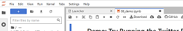
In Jupyter Lab you can double click any section to edit it, and you can press the triangle “run” button to run the code (or display the text).
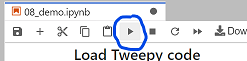
When the code runs, the little number to the left of the code block should change. There might also be some output from your action displyed below the code block.
So now you can go through the rest of this page and try out the practice exercises for yourself!
Variables#
You will first practice saving values into variables. Remember, the way we save a value into a variable is like this:
First, save the piece of text “I am writing a computer program!” into a variable called
my_progress# TODO: enter your code hereViewing variables in the debugger#
Before we continue, we are going to show you how to open the debugger so you can see what is being saved in your variables.
On the tp right of this tab, press the small bug icon to “enable debugging”:
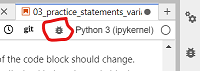
Then, if you did the step above correctly, you should see the variable
my_progresswith the value “I am writing a computer program!” next to it: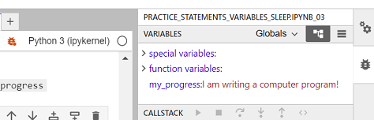
Practice number variables#
First, write and run a line of code to save the value 5 into a variable named
number_of_pies# TODO: enter your code hereNow, save the value 12.5 into a variable named
cost_per_pie# TODO: enter your code hereNow make a new variable called
total_pie_costand save into the value of the number_of_pies multiplied by the cost_per_pie.Note: In python (and many programming languages), the symbol for multiply is
*# TODO: enter your code hereNow use the
displayfunction to display what is saved in total_pie_cost# TODO: enter your code hereMore variable practice#
Now, make a new variable called
first_nameand assign your first name to it# TODO: enter your code hereNow, make a variable calles
last_nameand save your last name to it# TODO: enter your code hereCreate a variable called
ageand assign your age to it.# TODO: enter your code here~ A year goes by ~
Increase the
agevariable by 1.# TODO: enter your code hereNow write three lines of code, with each line using
displayto show what is saved infirst_name,last_name, and `age# TODO: enter your code hereSleep#
In order to use sleep, we must first import it from the time library
Now try displaying 5 messages of your choosing, with some pauses between each one:
# TODO: enter your code hereReddit Bot Practice#
Now lets try a Reddit bot with variables and sleep!
Load Praw Library#
First, we need to load the praw library
(Optional) Step 1b: Make a fake praw connection with the fake_praw library#
For testing purposes, we’ve added this line of code, which loads a fake version of praw, so it wont actually connect to reddit. If you want to try to actually connect to reddit, don’t run this line of code.
Step 2: Load your developer access passwords#
To use this on your real Reddit account, copy your developer access passwords into the code below, replacing our fake passwords.
Step 4: Give praw (or fake_praw) your developer access passwords#
Step 5: Submit a post to Reddit#
Post something you learned in the class so far:
Remember, the code to post a tweet looks like this:
# TODO: enter your code herePost from a variable#
Now try saving a piece of text in a variable for the title, and another for the content of a post, and then submitting a post of whatever you saved in the variables.
To do this, where the code has
submit( ... ), you’ll replace the quoted text with the variable name, so it will look like:(with whatever your variable name was instead of “title_variable” and “content_variable”)
# TODO: enter your code hereSubmit multiple posts#
Next try submitting 3 posts, but use
sleepto add pauses between each one (note that reddit might not want you to make more than 1 post every 15 minutes, so you can sleep for 15*60 seconds or more before posting again).# TODO: enter your code here3.4. Bots and Responsibility#
As we think about the responsibility in ethical scenarios on social media, the existence of bots causes some complications.
3.4.1. A Protesting Donkey?#
To get an idea of the type of complications we run into, let’s look at the use of donkeys in protests in Oman:
In this example, some clever protesters have made a donkey perform the act of protest: walking through the streets displaying a political message. But, since the donkey does not understand the act of protest it is performing, it can’t be rightly punished for protesting. The protesters have managed to separate the intention of protest (the political message inscribed on the donkey) and the act of protest (the donkey wandering through the streets). This allows the protesters to remain anonymous and the donkey unaware of it’s political mission.
3.4.2. Bots and responsibility#
Bots present a similar disconnect between intentions and actions. Bot programs are written by one or more people, potentially all with different intentions, and they are run by others people, or sometimes scheduled by people to be run by computers.
This means we can analyze the ethics of the action of the bot, as well as the intentions of the various people involved, though those all might be disconnected.
3.4.3. Reflection questions#
How are people’s expectations different for a bot and a “normal” user?
Choose an example social media bot (find on your own or look at Examples of Bots (or apps).)
What does this bot do that a normal person wouldn’t be able to, or wouldn’t be able to as easily?
Who is in charge of creating and running this bot?
Does the fact that it is a bot change how you feel about its actions?
Why do you think social media platforms allow bots to operate?
Why would users want to be able to make bots?
How does allowing bots influence social media sites’ profitability?
We haven’t been able to get the original chapter to load to see if it indeed says that, but I found it quoted here and here. We also don’t know if this is common or representative of protests in Oman, nor that we fully understand the cultural importance of what is happening in this story. Still, we are using it at least as a thought experiment.
3.5. Activity: Find Lists of Bots#
In order to get more of a sense of what bots are out there, try searching for social media bots and see what you can find. Try strategies like:
Google: “Most useful Instagram bots”
Google: “Funniest Twitter bots”
Read through the Reddit “botwatch” subreddit
Read through a list of registered bots on Wikipedia
3.5.1. Reflection Questions:#
What bots do you find surprising?
What bots do you like?
What bots do you dislike?
3.6. Learn more#
How to Make a Bot That Isn’t Racist
4. Data#
Now that we’ve looked at the ways a bot is constructed (statements, variables, events, conditionals, loops, code blocks, and functions/libraries), let’s now look at how bots and social media programs represent data.
4.1. Anatomy of a Tweet#
In order to understand how data is represented on a computer (following up on Chapter 2.3.3: Computers Speak Binary), we will look at all the data in an example a tweet:
Fig. 4.1 A tweet with photos of a cute puppy! (source)#
4.1.1. Data in a Tweet#
Let’s look at all the data that we can see when we look at a tweet on twitter:
Fig. 4.2 A tweet with photos of a cute puppy! (source)#
In this screenshot of Twitter, we can see the following information:
The account that posted it:
User handle is @dog_rates
User name is WeRateDogs®
User profile picture is a circular photo of a white dog
This user has a blue checkmark
The date of the tweet: Feb 10, 2020
The text of the tweet: “This is Woods. He’s here to help with the dishes. Specifically, the pre-rinse, where he licks every item he can. 12/10”
The photos in the tweet: Three photos of a puppy on a dishwasher
The number of replies: 1,533
The number of retweets: 26.2K
The number of likes: 197.8K
Data and Metadata#
One way we can categorize the data in this tweet is to separate it into data and metadata, like this:
Fig. 4.3 The “data” of a tweet consists of the tweet text and the photos. The “metadata” of a tweet is all the rest of the information about that tweet, such as who tweeted it, and when, and how people responded.#
Metadata is information about some data. So we often think about a dataset as consisting of the main pieces of data (whatever those are in a specific situation), and whatever other information we have about that data (metadata).
For example:
If we think of a tweet’s contents (text and photos) as the main data of a tweet, then additional information such as the user, time, and responses would be considered metadata.
If we download information about a set of tweets (text, user, time, etc.) to analyze later, we might consider that set of information as the main data, and our metadata might be information about our download process, such as when we collected the tweet information, which search term we used to find it, etc.
Now that we’ve looked some at the data in a tweet, let’s look next at how different pieces of this information are saved.
4.1.2. Basic Data Types#
First, we’ll look at a few basic data storage types. We’ll also be including some code examples you can look at, though don’t worry yet if you don’t understand the code, since we’ll be covering these in more detail throughout the rest of the book.
Booleans (True / False)#
Binary consisting of 0s and 1s make it easy to represent true and false values, where 1 often represents true and 0 represents false. Most programming languages have built-in ways of representing True and False values.
Fig. 4.4 A blue checkmark is something an account either has or doesn’t so it can be stored as a binary value.#
Booleans are often created when doing sort of comparison or test, like:
Do I have enough money in my wallet to pay for the item?
Does this tweet start with “hello” (meaning it is a greeting)?
Click to see example Python code
Numbers#
Numbers are normally stored in two different ways:
Integer: whole numbers like 5, 37, -10, and 0
Floating point numbers: these can represent decimals like: 0.75, -1.333, and 3 x 10 ^ 8
Fig. 4.5 The number of replies, retweets, and likes can be represented as integer numbers (197.8K can be stored as a whole number like 197,800).#
Click to see example Python code
When computers store numbers, there are limits to how much space is can be used to save each number. This limits how big (or small) the numbers can be, and causes rounding with floating-point numbers.
Additionally, programming languages might include other ways of storing numbers, such as fractions, complex numbers, or limited number sets (like only positive integers).
Strings (Text)#
Computers typically store text by dividing the text into characters (the individual letters, spaces, numerals, punctuation marks, emojis, and other symbols). These characters are then stored in order and called strings (that is a bunch of characters strung together, like in Fig. 4.6 below).
Fig. 4.6 A physical string of the characters: “H”, “A”, “P”, “P”, “Y”, ” “, “B”, “I”, “R”, “T”, “H”, “D”, “A”, “Y”. (image source)#
In our example tweet, we can see some different pieces of information that might be represented with strings:
Fig. 4.7 The user name, twitter handle, and the tweet text can all be represented with strings.#
Click to see example Python code
Text can be stored with extra formatting information, such as fonts and colors, in different document file formats like Word Documents, PDF files, html website files, etc.
Note: We’ll demonstrate strings later in this chapter, and in more detail in Chapter 7: Trolling
4.1.3. Grouping data#
Once we have some types of data representation on a computer, we can create different groupings of data to represent more types of data. We’ll look at two types of groupings here: Lists and Dictionaries.
Lists#
The first way of combining data is by making a list.
So we can make a list of the numbers from 1 to 10:
1, 2, 3, 4, 5, 6, 7, 8, 9, 10
Click to see example Python code
In our example tweet we can see several places where data could be saved in lists:
Fig. 4.8 There are several lists in the tweet. There is a list of three images, and there are links that will take you to the lists of replies, retweets, and likes.#
Click to see example Python code
Additionally the text strings we saw before are actually stored internally as lists of characters.
The items in lists are normally numbered with an “index”, so you can ask for the 1st item, or 2nd item, or any other.
Note: Largely due to historical peculiarities in the development of programming languages, most programming languages (including Python) number the 1st item in a list as item “0”. So:
1st item has index 0
2nd item has index 1
3rd item has index 2
etc.
Click to see example Python code
There are many types of list data structures in different programming languages with subtle differences (we won’t worry about those in this book). Python has lists, tuples, and sets. Other languages have a list type called arrays. We will just focus on lists and not worry about the other similar data types.
We’ll demonstrate lists later in Chapter 5: History of Social Media.
Dictionaries#
The other method of grouping data that we will discuss here is called a “dictionary” (sometimes also called a “map”).
You can think of this as like a language dictionary where there is a word and a definition for each word. Then you can look up any name or word and find the value or definition.
Example: An English Language Dictionary with definitions of three terms:
Social Media: An internet-based platform used for people to form connections to each other and share things.
Ethics: Thinking systematically about what makes something morally right or wrong, or using ethical systems to analyze moral concerns in different situations
Automation: Making a process or activity that can run on its own without needing a human to guide it.
The Dictionary data type allows programmers to combine several pieces of data by naming each piece. When we do this, the dictionary will have a number of names, and for each of those names a piece of information (called a “value” in this context).
Dictionary:
Name 1: Value 1
Name 2: Value 2
Name 3: Value 3
So if we look at the example tweet, we can combine all the data in a dictionary.
Fig. 4.9 A tweet with photos of a cute puppy! (source)#
Dictionary (with some of the data):
user_name: “WeRateDogs®”
user_handle: “@dog_rates”
user_has_blue_checkmark: True
tweet_text: “This is Woods. He’s here to help with the dishes. Specifically the pre-rinse, where he licks every item he can. 12/10”
number_of_replies: 1533
number_of_retweets: 26200
number_of_likes: 197800
Click to see example Python code
Note: We’ll demonstrate dictionaries later in Chapter 5: History of Social Media, and Chapter 8: Data Mining.
Groups within Groups#
We can use dictionaries and lists together to make lists of dictionaries, lists of lists, dictionaries of lists, or any other combination.
So for example, I could make a list of Twitter users. Each Twitter user could be a dictionary with info about that user, and one piece of information it might have is a list of who that user is following.
List of users:
User 1:
Username: kylethayer (a String)
Twitter handle: @kylemthayer (a String)
Profile Picture: [TODO picture here] (an image)
Follows: @SusanNotess, @UW, @UW_iSchool, @ajlunited, … (a list of Strings)
User 2:
Username: Dr Susan Notess (a String)
Twitter handle: @SusanNotess (a String)
Profile Picture: [TODO picture here] (an image)
Follows: @kylemthayer, @histoftech, @j_kalla, @dbroockman, @qaxaawut, @shengokai, @laniwhatison (a list of Strings)
Click to see example Python code
4.1.4. Additional Data Types#
You might have noticed that there are still a couple pieces of data on the example tweet that we haven’t discussed yet. Let’s look at those now.
Images / Sounds / Videos#
Our example tweet has several images in it:
Fig. 4.10 The profile picture and the puppy photos in the tweet are images.#
While you won’t need to know the details of how images, sound, and video are stored for this book, we wanted to at least briefly discuss it here just to give you a rough idea of how computers store these kinds of data.
Images are created by defining a grid of dots, called pixels. Each pixel has three numbers that define the color (red, green, and blue), and the grid is created as a list (rows) of lists (columns).
Fig. 4.11 When viewing the fire emoji (🔥) close-up on a screen, you can see the bands of red, green, and blue that make up each pixel. If you try squinting your eyes or looking at the image from far away, it should blur back into the emoji.#
Sounds are represented as the electric current needed to move a speaker’s diaphragm back and forth over time to make the specific sound waves. The electric current is saved as a number, and those electric current numbers are saved at each time point, so the sound information is saved as a list of numbers.
Fig. 4.12 A computer representation of the sound of Kyle saying “this.”#
Fig. 4.13 How sound information turns into an electric signal, which then works with a magnet to push and pull on a diaphragm inside a speaker to create physical sound waves. Microphones do this process in exactly the reverse, the sound waves in the air make the speaker diaphragm go back and forth, making an electric current in the wire which gets measured and saved by the computer.#
Videos are represented as a sequence of images (a list of images) called frames, often with a sound wave to be played at the same time.
In most cases, after the initial data representation is created, the computer runs a compression algorithm, which takes the image, sound, or video, and finds a way of storing it in much less computer memory, often losing some of the quality when doing so.
Metadata#
In addition to the main components of the images, sound, and video data, this information is often stored with metadata, such as:
The time the image/sound/video was created
The location where the image/sound/video was taken
The type of camera or recording device used to create the image/sound/video
etc.
For our purposes in this class, most of the time we run into images, we will find a string that tells us where the image, video, or sound is saved (e.g., we’ll get something like “kylethayer.jpg”), and we might additionally get some metadata.
Dates and Times#
The final piece of data from the tweet we will cover is the date when the tweet was posted:
Fig. 4.14 The tweet includes the date when it was posted.#
There are several options for how to save dates and times. Some options include a series of numbers (year, month, day, hour, minute, and second), or a string that with all of those pieces of information written out. Sometimes only the date is saved, with no time information, and sometimes the time information will include the timezone.
Dates turn out to be one of the trickier data types to work with in practice. One of the main reasons for this is that what time or day it depends on what time zone you are in.
So, for example, when Twitter tells me that the tweet was posted on Feb 10, 2020, does it mean Feb 10 for me? Or for the person who posted it? Those might not be the same. Or if I want to see for a given account, how much they tweeted “yesterday,” what do I mean by “yesterday?” We might be in different time zones and have different start and end times for what we each call “yesterday.”
Note: We’ll work with dates and times a little bit in chapter 18: Public Shaming
4.1.5. Data Constraints#
In addition to representing data with different data storage methods, computers can also let you add additional constraints on what can be saved. So, for example, you might limit the length of a tweet to 280 characters, even though the computer can store longer strings.
There are many places these constraints might be used such as:
for an age (integer), only allow ages between 0 and 120
for a country name (string), have a pre-set list of valid country names
for a legal name (string), disallow emojis
4.1.6. Reflection Questions#
Let’s look at an example of information we might want to store on a computer:
If we look at a data field like gender, there are different ways we might try to represent it. We might try to represent it as a binary field, but that would exclude people who don’t fit within a gender binary. So we might try a string that allows any values, but taking whatever text users end up typing might make data that is difficult to work with (what if they make a typo or use a different language?). So we might store gender using strings, but this time use a preset list of options for users to choose from, perhaps with a way of choosing “other,” and only then allow the users to type their own explanation if our categories didn’t work for them. Perhaps you question whether you want to store gender information at all.
Now it’s your turn, choose some data that you might want to store on a social media type, and think through the storage types and constraints you might want to use:
Age
Name
Address
Relationship status
etc.
4.2. All data is a simplification of reality#
We’ve talked about how we represent data on a computer, but let’s now step back and think about the nature of data itself.
Note: This section was inspired by Kareem Carr
https://twitter.com/kareem_carr/status/1551950155330600960
Why Some People Think 2+2=5 …and why they’re right.
4.2.1. Twitter Users vs. Bots#
Let’s look at a debate around a specific data point:
The data in question here is over what percentage of Twitter users are spam bots, which Twitter claimed was less than 5%, and Elon Musk claimed is higher than 5%.
Data points often give the appearance of being concrete and reliable, especially if they are numerical. So when Twitter initially came out with a claim that less than 5% of users are spam bots, it may have been accepted by most people who heard it. Elon Musk then questioned that figure and attempted to back out of buying Twitter, and Twitter is accusing Musk’s complaint of being an invented excuse to back out of the deal, and the case is now in court.
When looking at real-life data claims and datasets, you will likely run into many different problems and pitfalls in using that data. Any dataset you find might have:
missing data
erroneous data (e.g., mislabeled, typos)
biased data
manipulated data
Any one of those issues might show up in Twitter’s claim or Musk’s counterclaim, but even in the best of situations there is still a fundamental issue when looking at claims like this, and that is that:
Let’s consider a concrete example involving apples:
4.2.2. Counting Apples#
We all know simple math facts, like 2 + 2 = 4, and 4 = 1 x 4. So that means that if we had two apples like this:
And if we added two more apples, we would have 4 apples (because 2 + 2 = 4), like this:
And if there were four of us who wanted to have apples, we could give each person 1 apple, and they would have the same number of apples (because 4 = 1 x 4), like this:
Now, while each person has 1 apple, you might complain that it isn’t fair (and if you try this with children, they will almost certainly let you know it isn’t fair), since the apples weren’t all the same size. Two of the four apples were particularly small.
So, there was a simplification here. In this example, I decided that each of these would count as “1 apple.” This way of looking at things might not work well in some situations:
If we want everyone to get the same amount of apples by weight, we would have to cut the apples into pieces so we could give each person the same amount.
If we wanted to give everyone some amount of apple that they could keep for a few days before eating, then we would want to not cut the apples, so keeping them as whole apples might be the best solution.
4.2.3. What we lose in simplifying#
As you can see in the apple example, any time we turn something into data, we are making a simplification.1 If we are counting the number of something, like apples, we are deciding that each one is equivalent. If we are writing down what someone said, we are losing their tone of voice, accent, etc. If we are taking a photograph, it is only from one perspective, etc.
Different simplifications are useful for different tasks. Any given simplification will be helpful for some tasks and be unhelpful for others.
See also, this saying in statistics: All models are wrong, but some are useful
4.2.4. More examples of simplifications#
So all data that you might find is a simplification. There are many seemingly simple questions that in some situations or for some people, have no simple answers, questions like:
What country are you from?
What if you were born in one country, but moved to another shortly after? What if you are from a country that no longer exists like Czechoslovakia? Or from an occupied territory?
How many people live in this house?
Does a college student returning home for the summer count as living in that house?
How many words are in this chapter?
Different programs use different rules for what counts as a “word”
E.g., this page has “2 + 2 = 4”, which Microsoft Word counts as 5 words, and Google Docs counts as 3 words.
4.2.5. Revisiting Twitter Users vs. Bots#
Let’s go back to the question of whether less than 5% of Twitter users are spam bots.
In this claim are several places where there are simplifications being made, particularly in the definitions of “Twitter users” and “spam bots.”
Measuring Twitter users:#
How do we count how many users are on Twitter?
It depends on if we mean how many accounts have been registered vs. how many people are logged into Twitter on a given day. And it also depends on how we count situations where one person has many accounts, or many people share a corporate account.
Measuring spam bots#
How do we count how many spam bots are on Twitter?
The Bloomberg article we quoted mentions “spam bots” as what is being measured, but Elon Musk has used phrases like “fake or spam” accounts and “fake/spam/duplicates,” which might lead to different numbers.
Parag Agrawal, the Twitter CEO, additionally clarified the complications of measuring “spam” accounts, saying:
What changes with these measures?#
While we don’t have direct access to all the data ourselves, we can imagine that different definitions would lead to different results. And there isn’t a “best” or “unbiased” definition we should be using, since all definitions are simplifications that will help with some tasks and hurt with others.
We have to be aware that we are always making these simplifications, try to be clear about what simplifications we are making, and think through the ethical implications of the simplifications we are making.
There is one exception where you can have data that isn’t a simplification, and that is if the data source is symbolic (e.g., numbers) and you are applying unambiguous rules (e.g., math). Since it starts out as a symbol, it doesn’t need to be simplified to be represented with symbols. For example, data that can be made without simplification include:
4.3. Who does data fit?#
Because all data is a simplification of reality, those simplifications work well for some people and some situations but can cause problems for other people and other situations.
Thus, when designers of social media systems make decisions about how data will be saved and what constraints will be put on the data, they are making decisions about who will get a better experience. Based on these decisions, some people will fit naturally into the data system, while others will have to put in extra work to make themselves fit, and others will have to modify themselves or misrepresent themselves to fit into the system.
So, for example, if we made a form that someone needed to enter their address, we could assume everyone is in the United States and not have any country selection.
Address fields:
Street address
City
State
Zip Code
Someone in another country would have to try to find a way to indicate that they aren’t in the United States even though there is no clear place to indicate that. If this is a form for shipping to people in the US only, then this limitation might make sense.
If we wanted people to be able to enter other countries we could make a country drop-down tool to select a country, but then would we auto-fill it with a country? If there is a list of countries to scroll through, what order do we put them in? If it’s alphabetical, that will make it easier for people in countries whose name starts with “A.”
4.3.1. Form fails#
Let’s look at some examples where forms show problems with data entry and representation:
Name Length#
Here are some screenshots from a help forum discussion on the United States tax software TurboTax:
As you can see, TurboTax has a limit on how long last names are allowed to be, and people with too long of names have different strategies with how to deal with not fitting in the system.
Gender#
Data collection and storage can go wrong in other ways as well, with incorrect or erroneous options. Here are some screenshots from a thread of people collecting strange gender selection forms:
You can see more of these types of forms at https://genders.wtf/
4.4. How Data Informs Ethics#
Think for a minute about consequentialism. On this view, we should do whatever results in the best outcomes for the most people. One of the classic forms of this approach is utilitarianism, which says we should do whatever maximizes ‘utility’ for most people. Confusingly, ‘utility’ in this case does not refer to usefulness, but to a sort of combo of happiness and wellbeing. When a utilitarian tries to decide how to act, they take stock of all the probable outcomes, and what sort of ‘utility’ or happiness will be brought about for all parties involved. This process is sometimes referred to by philosophers as ‘utility calculus’. When I am trying to calculate the expected net utility gain from a projected set of actions, I am engaging in ‘utility calculus’ (or, in normal words, utility calculations).
Now, there are many reasons one might be suspicious about utilitarianism as a cheat code for acting morally, but let’s assume for a moment that utilitarianism is the best way to go. When you undertake your utility calculus, you are, in essence, gathering and responding to data about the projected outcomes of a situation. This means that how you gather your data will affect what data you come up with. If you have really comprehensive data about potential outcomes, then your utility calculus will be more complicated, but will also be more realistic. On the other hand, if you have only partial data, the results of your utility calculus may become skewed. If you think about the potential impact of a set of actions on all the people you know and like, but fail to consider the impact on people you do not happen to know, then you might think those actions would lead to a huge gain in utility, or happiness.
When we think about how data is used online, the idea of a utility calculus can help remind us to check whether we’ve really got enough data about how all parties might be impacted by some actions. Even if you are not a utilitarian, it is good to remind ourselves to check that we’ve got all the data before doing our calculus. This can be especially important when there is a strong social trend to overlook certain data. Such trends, which philosophers call ‘pernicious ignorance’, enable us to overlook inconvenient bits of data to make our utility calculus easier or more likely to turn out in favor of a preferred course of action.
Can you think of an example of pernicious ignorance in social media interaction? What’s something that we might often prefer to overlook when deciding what is important?
One classic example is the tendency to overlook the interests of children and/or people abroad when we post about travels, especially when fundraising for ‘charity tourism’. One could go abroad, and take a picture of a cute kid running through a field, or a selfie with kids one had traveled to help out. It was easy, in such situations, to decide the likely utility of posting the photo on social media based on the interest it would generate for us, without thinking about the ethics of using photos of minors without their consent. This was called out by The Onion in a parody article, titled “6-Day Visit To Rural African Village Completely Changes Woman’s Facebook Profile Picture”.
The reckoning about how pernicious ignorance had allowed many to feel comfortable leaving the interests of many out of the utility calculus for use of images online continued. You can read an article about it here, or see a similar reckoning discussed by National Geographic: “For Decades, Our Coverage Was Racist. To Rise Above Our Past, We Must Acknowledge It”.
4.5. Data in Python and Reddit#
Now we will look at ways data is represented in Python and what data is available from Reddit.
4.5.1. Demo: Python Basic Data Types#
Let’s now look specifically at how Python stores and lets you work with basic data types:
Booleans (True / False)
Numbers
Strings (Text)
But first we need to look a little more about how to use functions, since we’ll be using them with the data types.
Calling Functions#
A function is a named section of pre-written code, which we can “call,” making that section of code run.
We have already been calling two different functions in particular:
displayandcreate_tweet:display("Ethics might be relevant!")client.create_tweet(text="This is the tweet text")The structure of a standard function call has the following pieces:
function_name(input_parameters)So we first write the name of the function (e.g.,
displayorclient.create_tweet), then we put matching parentheses after that, and inside the parentheses we put the input arguments, which are data or options for how the function should run.input arguments#
These inputs are called “parameters” or “arguments”
Inputs go in parentheses after the function name
If there are multiple inputs, they are separated by commas
You can also specify which input you are giving within the parenthesis by putting parameter_name=value
Additionally, some functions produce a result, which can be saved in a variable, or used in a calculation or some other fashion. When we save the result of running a function into a variable, it looks like this:
save_result_variable = function_name(input_parameters)function results#
Functions can have outputs that are called “returns” or “results”
When the code intepreter sees the function call, it runs the code in the function with the inputs, and then puts the output in the place where that function call was
The results of the function can be stored in a variable, used in a formula, or used as an argument for another function
That was all a bit theoretical, so set’s look at some data types now, and some specific functions that we can use with them.
Boolean (True / False)#
In Python there are two options for boolean:
TrueandFalseNote that the first letter is capitalized and the rest is lower case. Python only lets you write these True and False values in that way.
Let’s save a boolean value in a variable, and then display it:
Display lets us see what was in the variable, but we can also use a new function
typeto see what type of value is in the variable (it should be ‘bool’ which is short for boolean):Numbers#
integers and floats#
Python allows you to use two main types of numbers:
Integers (whole numbers), called “int”
A “floating point” number with a decimal point, called a “float”
We can now do normal math operations on the numbers, like addition
+, subtraction-, multiplication*, and division/.Even though there are two types of numbers, most of the time they work together pretty seemlessly, switching to whichever type makes the most sense. For example, let’s look at what happens when we add and int and a float:
functions for numbers#
Python provides functions that we can use with numbers, like:
find the maximum number in a set of numbers with
max()find the minimum number in a set of numbers with
min()round a floating point number into an integer with
round()Each of these functions produces a result at the end, which we can save into a variable
number comparisons#
Python also lets us compare numbers in various ways, producing a boolean True or False value depending on if the comparison was true or false.
For example, we can see if one number is bigger than another by using the greater than comparison:
>We can check if two numbers are equal by using two equals signs:
==Note: this is an unfortunately confusing system that most programming languages are now stuck with since it became the standard:
One equals sign (
=) means save the value into a variableTwo equals signs (
==) mean check if two numbers are the sameStrings (text)#
In order to make a string (piece of text) in Python, you can write your text with either double quotes
"or single quotes'at the beggining and end.Note: If you are copying from a word processor like word, you might get angled quotes like
’or”, which Python doesn’t like. So, if you try to run code like this:tweet_text_3 = “What normal weather today”you will get an error message like this:
adding strings together#
If we want to add strings together to make a larger string, we can do that with the
+operation.If we want to add something like a number, like my age, into the string though, it won’t let us do it directly.
If we try running:
example_text = "how old are you? I am " + 3Then we will get an error that 3 was an int and not a string, so it can’t be added:
To fix this, we have to turn the number into a string before we add it. We do this by using the
str()function:Adding strings and numbers together is particularly useful for displaying information in a more readable fashion:
actions with strings#
There are various actions Python let’s us do with strings. For example, let’s look for a smaller string (“cat”) and see if it is in the bigger one (producing a True or False boolean value) using
inWe can also do actions like make a string all uppercase or all lowercase using the
upper()andlower()functions.Unlike previous uses of functions, for these we write the name of the variable we are using, then a
.and then name of the function:save_result_variable = variable_name.function_name()We can also see how many characters long a string is by using the function
len()like this:You can read more about Python data types at w3schools explanation of Python data types
4.5.2. Practice: Python Basic Data Types#
Greeting#
Make a new variable called
greeting_part_1and assign it the string:"Welcome, "Note: There is an extra space after the word
# TODO: enter your code hereMake a new variable called
greeting_part_2and assign it the string:"! It is nice to meet you!"Note: this string starts with an exlamation mark.
# TODO: enter your code hereMake a variable called name_1 and assign it with a string of someone’s name.
# TODO: enter your code hereNow, combine them all together into a new variable called
full_greeting. Combine the parts together by takinggreeting_part_1then addingnamethen addinggreeting_part_2.Then display the variable
full_greeting.# TODO: enter your code hereNow make a variable called
name_2with another name in it and make a variablecalled_full_greeting_2the same way you didfull_greeting, but withname_2instead.Then display the variable
full_greeting_2# TODO: enter your code hereEngagement report#
Make up numbers for tweet metrics and save them into variables:
number_likes,number_retweets,number_quote_tweets# TODO: enter your code hereWrite three different
display()function calls, one to report on each of those variables.Inside the parentheses first put a string like,
"The number of likes is: "and then add the relevant variable to it, but remember, since the variable has a number in it, you have to put astr()function call around that variable name# TODO: enter your code hereMake a new variable called
total_engagementand save the total number of all the likes, retweets and quote tweets.Then display that information the way you did the other variables.
# TODO: enter your code hereIs your tweet too long#
Make a variable called
tweet_1with a string of your choosing that is fairly short# TODO: enter your code hereMake a variable called
tweet_1_length, and save the length of the stringtweet_1into it (using thelen()function)# TODO: enter your code hereCheck if the
tweet_1_lengthis less than or equal to 280 characters (the max length of a tweet) using the less than or equal operator:<=, and save the result into a variable calledis_tweet_1_short_enough# TODO: enter your code hereUse the
display()function to display a string ("Is tweet 1 short enough? "), adding the variableis_tweet_1_short_enoughto that string.Remember, since the variable has a boolean and not a string in it, you have to put a str() function call around that variable name
# TODO: enter your code hereMake a variable called
tweet_2with a string of your choosing that is very long (over 280 characters)# TODO: enter your code hereRepeat the rest of the steps from before, but with tweet_2
find tweet_2_length
make a variable is_tweet_2_short_enough
display the result
# TODO: enter your code here4.5.3. Demo: Data from a Reddit Post#
Let’s see what the data actually looks like from a Reddit Post!
First we need to do our normal Reddit login steps (and optional fake praw step)
Log into Praw (or fake praw)#
Load Praw library#
(Optional) Step 1b: Make a fake praw connection with the fake_praw library#
For testing purposes, we’ve added this line of code, which loads a fake version of praw, so it wont actually connect to reddit. If you want to try to actually connect to reddit, don’t run this line of code.
Step 2: Load your developer access passwords#
To use this on your real Reddit account, copy your developer access passwords into the code below, replacing our fake passwords.
Step 4: Give praw (or fake_praw) your developer access passwords#
Find a Reddit submission#
Below I have the code to find a recent Reddit submission on the subreddit “cuteanimals” (we’ll get the top post on the default reddit view, called “hot”)..
Don’t worry if you don’t understand this part yet. We are just doing this, so we can get to the point of seeing what tweet data looks like.
Note: If you run this on real reddit, we can’t gurantee anything about how offensive what you might find is.
Look at data in Reddit submission#
Now we will look at some of the data that came back!
Again, don’t worry too much about the code, we want to look at the data and data types.
submission title:#
As you can see above, the title of a submission is a string (
str) data type.submission id#
The submission id is a piece of text (
str) that looks like random letters and numbers. This is how the submission is referred to inside Reddit’s computers. So if someone is commenting on a submission, Reddit just puts uses submission ID they were commenting on to see where to display it.submission author name#
The author name is an string (
str). Note recent_submission.author has other information about the author as well as the name.submission edited#
The “edited” field represents whether a submission has been edited or not. It is a boolean true/false value (
bool).tweet created at#
The created at time for the submission is a floating point number (
float), which is in Unix Time, which is the number of seconds since Jan 1, 1970 in the Coordinated Universal Time zone.This is not a very useful number, so we use a python library called
datetimeto convert it into a more readabledatetimedata type, which we then can display and read easier.number of upvotes (score)#
The number of upvotes is called
scoreand it is a whole number (int).upvote ratio#
The upvote ratio (how many upvotes divided by total number of votes including downvotes) is a floating point number (
float).number of comments#
The number of comments is a whole number (
int). Note: You can also get a data structure of all the comments, but we will look at that later.submission text (selftext)#
The submission selftext (the contents of the post if the post isn’t a link url), is a string (
str). Note that a submission can either be text saved asselftext, or a link (e.g., image or news story) saved asurl.submission url (link)#
The submission url is a string (
str).Still more!#
In addition to the data we looked at above, there are even more options for reddit submissions, which you can see in the table of “attributes” at the top of the PRAW library page on Submissions. You can also see the “attributes tables in the PRAW library pages for Redditors and Comments
4.5.4. Design Activity: Data and Social media#
Evaluate a social media site#
Open a social media interface (not Reddit) and choose a view (e.g., a list of posts, an individual post, an author page etc.).
First identify as many pieces of information you can see the screen (without doing anything). For each piece of information:
What data types might be used to represent that data on a computer?
How is this data a simplification of reality? That is, what does it not capture? Who does it work best for, and who does it not work well for?
Did the user(s) directly provide that data, or was it collected automatically by the social media site?
Next, start listing what additional pieces of information are available through one action (e.g., clicking on user profile picture, clicking on comments link, etc.).
Design a social media site#
Now it’s your turn to try designing a social media site.
Decide a type of social media site (e.g., a video site like youtube or tiktok, or a dating site, etc.), and a particular view of that site (e.g., profile picutre, post, comment, etc.).
Draw a rough sketch of the view of the site, and then make a list of:
What pieces of information you think should be immediately visible to users
What pieces of information should be available to users by taking one action (e.g., clicking on a comment, or profile picture).
4.6. Reflection: Ethics of Choosing Data Representation#
We’ve now looked at how different ways of storing data and putting constraints on data can make social media systems work better for some people than others, and we’ve looked at how this data also informs decision-making and who is taken into account in ethics analyses.
Given all that can be at stake in making decisions on how data will be stored and constrained, choose one type of data a social media site might collect (e.g., name, age, location, gender, posts you liked, etc.), and then choose two different ethics frameworks and consider what each framework would mean for someone choosing how that data will be stored and constrained.
4.7. Learn more#
4.7.1. Systemic Power#
Systems have power to “bestow humanity on marginalized others” (Professor Anna Lauren Hoffmann)
Blog Post: Data Violence and How Bad Engineering Choices Can Damage Society
Video: What We Really Talk About When We Talk About Ethics: Navigating History, Privilege, and Power in Information and Data Science
Video: Beyond Fairness: Discourse, Violence, and Justice in a Datafied World
4.7.2. Design Justice#
“Design justice is a framework for analysis of how design distributes benefits and burdens between various groups of people. Design justice focuses explicitly on the ways that design reproduces and/or challenges the matrix of domination (white supremacy, heteropatriarchy, capitalism, ableism, settler colonialism, and other forms of structural inequality).”
It’s also about which groups get to be part of the design process itself.
Sasha Costanza-Chock, present USA
5. History of Social Media#
Now that we’ve seen some of how social media sites work, let’s look back at the history of social media.
5.1. Pre-Internet Social Media#
As we talked about previously in a section of Chapter 2 (What is Social Media?), pretty much anything can count as social media, and the things we will see in internet-based social media show up in many other places as well.
The book Writing on the Wall: Social Media - The First 2,000 Years by Tom Standage outlines some of the history of social media before internet-based social media platforms such as in times before the printing press:
Graffiti and other notes left on walls were used for sharing updates, spreading rumors, and tracking accounts
Books and news write-ups had to be copied by hand, so that only the most desired books went “viral” and spread
Later, sometime after the printing press, Stondage highlights how there was an unusual period in American history that roughly took up the 1900s where, in America, news sources were centralized in certain newspapers and then the big 3 TV networks. In this period of time, these sources were roughly in agreement and broadcast news out to the country, making a more unified, consistent news environment (though, of course, we can point out how they were biased in ways like being almost exclusively white men).
Before this centralization of media in the 1900s, newspapers and pamphlets were full of rumors and conspiracy theories. And now as the internet and social media have taken off in the early 2000s, we are again in a world full of rumors and conspiracy theories.
See also: the segment of the TV show Drunk History on the election of 1800
5.2. Web 1.0 Social Media#
The first versions of internet-based social media started becoming popular in the late 1900s. The internet of those days is now called “Web 1.0.”
The Web 1.0 internet had some features that make it stand out compared to later internet trends:
If you wanted to make a profile to talk about yourself, or to show off your work, you had to create your own personal webpage, which others could visit.
These pages had limited interaction, so you were more likely to load one thing at a time and look at a separate page for each post or piece of information.
Communication platforms were generally separate from these profiles or personal web pages.
Let’s look at some of the history of Web 1.0 Social Media.
5.2.1. Email#
One of the early ways of social communication across the internet was with Email, which originated in the 1960s and 1970s. These allowed people to send messages to each other, and look up if any new messages had been sent to them.
5.2.2. Bulletin board system (BBS)#
In the 1980s and 1990s, Bulletin board system (BBS) provided more communal ways of communicating and sharing messages. In these systems, someone would start a “thread” by posting an initial message. Others could reply to the previous set of messages in the thread.
Fig. 5.1 An early bulletin board system. The entire interface was just plain text, and you had to type in commands to navigate to the different threads and read or reply with messages.#
Fig. 5.2 An newer bulletin board system. In this one you can click on the thread you want to view, and threads can include things like images.#
5.2.3. Internet Relay Chat (IRC)#
The 1980s and 1990s also saw an emergence of more instant forms of communication with chat applications. Internet Relay Chat (IRC) lets people create “rooms” for different topics, and people could join those rooms and participate in real-time text conversations with the others in the room.
Fig. 5.3 An irc chat application, where you can join a room, and watch and participate in the live conversation.#
5.2.4. AOL Instant Messenger (AIM)#
In 1997, the internet service provider AOL introduced a chat system called AOL Instant Messenger (AIM) that anyone could join and maintain a list of friends. You could then see what friends were currently available, and start sending them messages. You could also leave away messages or profile quotes.
Fig. 5.4 AIM let you organize your contacts and see who was currently online.#
5.2.5. Texting#
Around the same time, phone texting capabilities (SMS) started becoming popular as another way to send messages to your friends, family and acquaintances.
Additionally, many news sites and fan pages started adding built-in comment sections on their articles and bulletin boards for community discussion.
5.3. Web 2.0 Social Media#
In the first decade of the 2000s the way websites worked on the Internet went through a transition to what is called “Web 2.0.”
In Web 2.0 websites (and web applications), the communication platforms and personal profiles merged. Many websites now let you create a profile, form connections, and participate in discussions with other members of the site. Platforms for hosting content without having to create your own website (like Blogs) emerged. And all of these websites became much more interactive, with updates appearing on users’ screens without the user having to request them.
Let’s look at some examples:
5.3.1. Weblogs (Blogs)#
In the mid-1990s, some internet users started manually adding regular updates to the top of their personal websites (leaving the old posts below), using their sites as an online diary, or a (web) log of their thoughts. In 1998/1999, several web platforms were launched to make it easy for people to make and run blogs (e.g., LiveJournal and Blogger.com). With these blog hosting sites, it was much simpler to type up and publish a new blog entry, and others visiting your blog could subscribe to get updates whenever you posted a new post, and they could leave a comment on any of the posts.
Fig. 5.5 An example blogger blog. Visitors can comment on any of the posts, making this much more interactive and communal (though Kyle’s old blog here has 0 followers and 0 comments).#
5.3.2. Social Networking Services#
2003 saw the launch of several popular social networking services: Friendster, Myspace, and LinkedIn. These were websites where the primary purpose was to build personal profiles and create a network of connections with other people, and communicate with them. Facebook was launched in 2004 and soon put most of its competitors out of business, while YouTube, launched in 2005 became a different sort of social networking site built around video.
Note
This history is all very US focused. In future versions of this book, I hope to incorporate a more global history of social media.
5.4. Looping with Lists and Dictionaries in Social Media#
We mentioned previously in chapter 4, we can use lists and dictionaries to represent social media data:
Example list of dictionaries of user data
User 1:
Username: kylethayer (a String)
Twitter handle: @kylemthayer (a String)
Profile Picture: (an image)
Follows: @SusanNotess, @UW, @UW_iSchool, @ajlunited, … (a list of Strings)
User 2:
Username: Dr Susan Notess (a String)
Twitter handle: @SusanNotess (a String)
Profile Picture: (an image)
Follows: @kylemthayer, @histoftech, @j_kalla, @dbroockman, @qaxaawut, @shengokai, @laniwhatison (a list of Strings)
Click to see example Python code
Now, in order for us to work with this kind of data, we need to look more at lists and dictionaries, as well as how to loop over them.
5.4.1. Demo: Lists and Loops#
Lists#
Many types of data on social media platforms are organized as lists, such as
lists of friends or followers
lists of posts
lists of photos in a post
lists of people who liked a post
etc.
The way to create a list in Python is to make a list of values, separated by commas, inside of square brackets, like this:
If we are making a list and it gets too long, Python will let us use several lines to do this:
Lists are in order, so Python let’s us use the “index” to ask for a specific entry, like the 1st, 2nd, 3rd, etc.
As we stated in the Data chapter, many programming languages, for historical reasons, make a list’s first entry have index 0, it’s 2nd entry have index 1, it’s 3rd entry have index 2, etc.
So if we want to see the first chapter in my
some_book_chapterslist, I select it by putting the index number inside square brackets ([,]) after the variable name:And if I want the 4th chapter, I’d select it like this
Now, let’s say we have a list of users who liked our latest social media post:
What if we wanted to follow all of them?
If our list was long, it would take a lot of code to pull out each one and try to follow them. But Python gives us an easy way to perform actions on all the items in a list, by using
forloops.forLoops#forloops let us perform an action or a set of actions for all of the items in a list.So, if we wanted to go through all the the users that liked our tweet and display a message for each one, we could do this:
Now, there are several things that went into making that for loop code above:
Start the line with a
forMake up a new variable name that will be a temporary variable to hold whichever item from the list we are doing our actions on. In this case each item in the list will be a user, so we call our variable
userThen we write the word
inThen we put the list that we want to go through, in this case `users_who_liked_our_post’
Then put a colon (
:). In Python, a colon like this means that what comes next is a block of statements that goes together. This block of statements is indented over to indicate that it is part of the block.Then, on the next line and indented over, we have our display function that uses the
uservariable. This is the line of code that is repeated for each item in the list.If we want to do several actions in our loop, all we need to do is add more lines of code spaced over the same amount, like this (note: We’ll use
printinstead ofdisplay, which mostly work the same, but we thinkprinthappens to look a little better in this situation):In the above code our for loop runs a block of code that has four statements, each doing a
print. You’ll notice we added an extra blankprintwhich makes a blank line and helps us see in the output what each loop did.Loop a set number of times#
In order to loop a set number of times, we can use the
rangefunction to effectively make a list of numbers to go over, so we can loop that many times.For example, if we wanted to ask “Are we there yet?” repeatedly, 10 times, we can do this:
Now, if we look at what the numbers were in
range(10), we can output theiwe saved the numbers in.You’ll notice that, while there are 10 numbers, it starts with 0, just like how list indices start with 0.
If we want to do a list from 1 to 10 instead, we can do that by either making a new variable and saving i + 1 to it, like this:
Or, the
rangefunction let’s you set a start and stop, with the first number being the number it starts with, and the last number being the one it stops before:5.4.2. Demo: Dictionaries#
We’ve talked about lists, but the other data organization we need to work with social media data is
dictionaries.As we mentioned in chapter 4, dictionaries allow us to combine pieces of information by naming them (sort of like variables).
So for example, the information about a user might have the following pieces of data:
Username
Twitter handle
Profile Picture:
Follows
Python has two ways of doing these types of dictionaries:
dictand objectsDictionaries (
dict)#We can create dictionaries in Python by storing values into
keys inside of curly braces{}, like this:In the code above, inside of the curly braces are a set of lines. Each line has a string (the
key, or name of the value), followed by a colon (:), followed by a value that is to be saved for the key. At the end of all but the last line is a comma (,) which indicates that anotherkeyand value will come next.Now that we’ve saved some values for some keys in the dictionary now saved in user_1, we can look up the values by using square brackets (
[,]) with the key name inside, like this:Objects#
The other way of saving information that works similarly in Python is through an object. We won’t be creating any in this book, but we will have to get data from some.
The main difference from what we will need is that while in dictionaries we use square brackets and put the key name in quotes as a string (e.g.,
user_1["profile_picture"]), in an object you use a period (.) and don’t put they key name (called afield) in quotes (e.g.,user_1.profile_picture)We have already seen code that used this period to get something from an object a few times, specifically getting functions from them, like:
client.create_tweet(...normal_message.upper()When we go through data from twitter, sometimes we will need to use
.to get parts of the information out of objects, and sometimes we will need to use[" "]to get information out of dictionaries.Looping through lists of dictionaries#
Now that we’ve seen loops, lists, and dictionaries, we can go to Reddit, run a search and look through multiple submissions:
load praw library#
(Optional) make a fake praw connection with the fake_praw library#
For testing purposes, we’ve added this line of code, which loads a fake version of praw, so it wont actually connect to reddit. If you want to try to actually connect to reddit, don’t run this line of code.
For testing purposes, we’ve added this line of code, which loads a fake version of tweepy, so it wont actually connect to twitter. If you want to try to actually connect to twitter, don’t run this line of code.
load your developer access passwords#
give praw (or fake_praw) your developer access passwords#
find a list of submissions#
We can now do a search and find a list of submissions.
Note: If you run this on real reddit, we can’t gurantee anything about how offensive what you might find is.
Loop through the list of submissions#
The variable
submissions_listnow has a list of Reddit submissions. So we can use a for loop to go through each submission, and then use.to access info from each tweet (other pieces of information would need[" "]to access).For each of the tweets, we will use
printto display information about the tweet5.4.3. Practice: Looping through lists and dictionaries#
Try out these coding problems to practice looping, lists, and dictionaries
Make a loop that displays “Are you awake yet?” 5 times
# TODO: enter your code hereMake a list of names (at least three), and save it in a variable called
names# TODO: enter your code hereNow loop over each of those names, and for each name display “[name] is awesome!”
# TODO: enter your code hereNow, do the same thing as before, but for each name, first make a string that has “[name] is awesome!” and save it in a variable, then use the
.upper()function on the string to make it all uppercase and save it into a variable, then display the final string.# TODO: enter your code hereNow, we are going to make a dictionary with information on a photo
Select and display the width of the photo
# TODO: enter your code hereSelect and display the location of the photo
# TODO: enter your code hereNow we are going to make a list of photo info for you to go through
Now, make a for loop to go through each set of phone info in
photo_info_list, and for each one, useprintcommands to display the width, height, location, and device# TODO: enter your code here5.5. Antisocial Media#
While mainstream social media platforms grew in popularity, there was a parallel growth of social media platforms that were based on having “no rules”, and were sources for many memes and pieces of internet culture, as well as hubs of much anti-social behavior (e.g., trolling, harassment, hate-groups, murders, etc.).
Note
This page is about various toxic online communities.
5.5.1. Something Awful#
The comedy website Something Awful was created in 1999, and it included web forums where many popular memes of the day originated.
While the Something Awful forums had edgy content, one 15-year-old member of the Something Awful forum called “Anime Death Tentacle Rape Whorehouse” was frustrated by content restrictions on Something Awful, and created his own new site with less restrictions: 4Chan.
5.5.2. 4Chan#
4Chan was created in 2003 by copying the code from a Japanese image-sharing bulletin board called Futaba or 2chan.
4Chan has various image-sharing bulletin boards, where users post anonymously. Perhaps the most infamous board is the “/b/” board for “random” topics. This board emphasizes “free speech” and “no rules” (with exceptions for child pornography and some other illegal content). In these message boards, users attempt to troll each other and post the most shocking content they can come up with. They also have a history of collectively choosing a target website or community and doing a “raid” where they all try to join and troll and offend the people in that community.
Many memes, groups, and forms of internet slang come from 4Chan, such as:
lolcats
Rickroll
ragefaces
“Anonymous” the hacker group
Bronies (male My Little Pony fans)
much of trolling culture (we will talk more about in Chapter 7: Trolling)
But one 4Chan user found 4chan to be too authoritarian and restrictive and set out to create a new “free-speech-friendly” image-sharing bulletin board, which he called 8chan.
5.5.3. 8Chan (now 8Kun)#
8Chan (now called 8Kun) is an image-sharing bulletin board site that was started in 2013. It has been host to white-supremacist, neo-nazi and other hate content. 8Chan has had trouble finding companies to host its servers and internet registration due to the presence of child sexual abuse material (CSAM), and for being the place where various mass shooters spread their hateful manifestos. 8Chan is also the source and home of the false conspiracy theory QAnon
5.6. Social Media Design#
As we’ve looked through the history of social media platforms, we’ve seen different ways of making them work, such as:
How you can send messages to other people?
Will these messages be public or private?
Does the user have to refresh the site to check for messages, or does the message automatically appear, or perhaps even make their phone buzz?
What restrictions are there on the content of messages sent?
What information can a user provide about themselves in a profile?
etc.
Let’s look at some of these design decisions more closely:
5.6.1. Social Media Connection Types#
One difference you may notice with different social media sites is in how you form connections with others.
Some social media sites don’t have any formal connections. Like two users who happen to be on the same bulletin board.
Some social media sites only allow reciprocal connections, like being “friends” on Facebook
Some social media sites offer one-way connections, like following someone on Twitter or subscribing to a YouTube channel.
There are, of course, many variations and nuances besides what we mentioned above, but we wanted to get you started thinking about some different options.
Ethics Reflection#
Look at the different ethics frameworks and see which ones might have something to say about those different ways of forming connections with others.
5.6.2. User Interfaces#
The user interface of a computer system (like a social media site), is the part that you view and interact with. It’s what you see on your screen and what you press or type or scroll over. Designers of social media sites have to decide how to layout information for users to navigate and decide how the user performs various actions (like, retweet, post, look up user, etc.). Some information and actions will be made larger and easier to access while others will be smaller or hidden in menus or settings.
As we look at these interfaces, there are two key terms we want you to know:
Affordances are what a user interface lets you do. In particular, it’s what a user interface makes feel natural to do. So for example, an interface might have something that looks like it should be pressed, or an interface might open by scrolling a little so it is clear that if you touch it you can make it scroll more (see a more nuanced explanation here)
Friction is anything that gets in the way of a user performing an action. For example, if you have to open and navigate through several menus to find the privacy settings, that is significant friction. Or if one of the buttons has a bug and doesn’t work when you press it, so you have to find another way of performing that action, which is significant friction.
Designers sometimes talk about trying to make their user interfaces frictionless, meaning the user can use the site without feeling anything slowing them down.
Sometimes designers add friction to sites intentionally. For example, ads in mobile games make the “x” you need to press incredibly small and hard to press to make it harder to leave their ad:
Fig. 5.6 An ad on a mobile device, which has an incredibly small, hard to press “x” button. You need to press that button to close the ad. If you miss the “x”, it takes you to more advertising.#
Another example of intentionally adding friction was a design change Twitter made in an attempt to reduce misinformation: When you try to retweet an article, if you haven’t clicked on the link to read the article, it stops you to ask if you want to read it first before retweeting.
Fig. 5.7 When Kyle attempted to retweet this article, twitter stopped me to ask if he wanted to read the article first.#
One famous example of reducing friction was the invention of infinite scroll. When trying to view results from a search, or look through social media posts, you could only view a few at a time, and to see more you had to press a button to see the next “page” of results. This is how both Google search and Amazon search work at the time this is written. In 2006, Aza Raskin invented infinite scroll, where you can scroll to the bottom of the current results, and new results will get automatically filled in below. Most social media sites now use this, so you can then scroll forever and never hit an obstacle or friction as you endlessly look at social media posts. Aza Raskin regrets what infinite scroll has done to make it harder for users to break away from looking at social media sites.
With that in mind, you can look at a social media site and think about what pieces of information could be available and what actions could be possible. Then for these you can consider whether they are:
low friction (easy)
high friction (possible, but not easy)
disallowed (not possible in any way)
5.7. Reflection Activities: Actions on Social Media Designs#
5.7.1. Comparing social media actions#
Open two social media sites and choose equivalent views on each (e.g., a list of posts, an individual post, an author page etc.).
List what actions are immediately available.
Then explore and see what actions are available after one additional action (e.g., opening a menu), then what actions are two steps away.
What do you notice about the similarities and differences in these sites?
5.7.2. Design a social media site#
Now it’s your turn to try designing a social media site.
Decide a type of social media site (e.g., a video site like youtube or tiktok, or a dating site, etc.), and a particular view of that site (e.g., profile picture, post, comment, etc.).
Draw a rough sketch of the view of the site, and then make a list of:
What actions would you want available immediately
What actions would you want one or two steps away?
What actions would you not allow users to do (e.g., there is no button anywhere that will let you delete someone else’s account)?
5.8. Learn More#
Watch a clip from the movie The Social Network
Read a US Federal Trade Commission complaint on Facebook
Read The Rise and Fall of MySpace on The Atlantic
See book: Writing on the Wall: Social Media - The First 2,000 Years by Tom Standage: https://www.amazon.com/Writing-Wall-Social-Media-First/dp/1620402831
6. Authenticity#
Let’s turn our attention now to a topic from a user perspective: authenticity.
6.1. Authenticity#
Early in the days of YouTube, one YouTube channel (lonelygirl15) started to release vlogs (video web logs) consisting of a girl in her room giving updates on the mundane dramas of her life. But as the channel continued posting videos and gaining popularity, viewers started to question if the events being told in the vlogs were true stories, or if they were fictional. Eventually, users discovered that it was a fictional show, and the girl giving the updates was an actress.
Many users were upset that what they had been watching wasn’t authentic. That is, users believed the channel was presenting itself as true events about a real girl, and it wasn’t that at all. Though, even after users discovered it was fictional, the channel continued to grow in popularity.
6.1.1. Why We Care About Authenticity#
As a rule, humans do not like to be duped. We like to know which kinds of signals to trust, and which to distrust. Being lulled into trusting a signal only to then have it revealed that the signal was untrustworthy is a shock to the system, unnerving and upsetting. People get angry when they find they have been duped. These reactions are even more heightened when we find we have been duped simply for someone else’s amusement at having done so.
Fig. 6.1 A Cylinder Seal from ~3100 BCE, used to make a repeating pattern which would be used to indicate the authenticity.#
These reactions make sense. Try to imagine the early days of human social life, before we started attaching our welfare to the land in terms of planting crops and building structures designed for permanence. Our nomadic forebears functioned in groups who coordinated in highly specialized ways to ensure the survival of the whole. Although such communities are often pictured as being prehistoric, primitive, and obsolete, we now know that such societies were and are highly sophisticated, often developing and depending on highly specified legal codes, some of which are still in use today in Bedouin communities in North Africa. Other nomadic groups, such as Roma people (which you may have heard derogatorily called ‘gypsies’), live within and around land-based nations and their various borders and laws. To ensure the survival of their ethnicity, cultures, and languages, they depend on being able to trust each other. The nations whose land we are living and studying on here also knew the importance of being able to know who can be trusted.
These needs may not always be as obvious in highly individualized societies, like Post-Enlightenment Europe and the United States. The possibility for self-reliance has been created in part by making certain things dependable and institutionalized. You can go get yourself food without feeling like you have to trust anyone because you can just
go to the store (which has to adhere to corporate legal requirements)
and buy food (the supply of which is made stable by complex networks of growing, manufacturing, and transportation, covered by the assurances of FDA-compliant labeling)
from people who work there (and are subject to labor laws and HR regulations, which, if they are not followed, means the staff person does not get paid, so their wellbeing depends on them doing their job). The need to trust other people is obscured by the many institutions that we have created. Institutions have ways, sometimes, of getting around human whims and surprises. But at the end of the day, it is still hugely important to us that we feel clear about who can be trusted, and for what.
This need of ours is what leads us to place value on authenticity.
6.1.2. What Is Authenticity?#
Authenticity is a rich concept, loaded with several connotations. To describe something as authentic, we are often talking about honesty, in that the thing is what it claims to be. But we also describe something as authentic when we want to say that it offers a certain kind of connection. A knock-off designer item does not offer the purchaser the same sort of connection to the designer brand that an authentic item does. Authenticity in connection requires honesty about who we are and what we’re doing; it also requires that there be some sort of reality to the connection that is supposedly being made between parties. Authentic connections frequently place high value on a sense of proximity and intimacy. Someone who pretends to be your friend, but does not spend time with you (proximity) or does not open themselves up to trusting mutual interdependence (intimacy) is offering one kind of connection (being an acquaintance) under the guise of a different kind of connection (friendship).
This is not to say that there is no room for appreciating connections that are not fully honest, transparent, and earnest all the time. Social media spaces have allowed humor and playfulness to flourish, and sometimes humor and play are not, strictly speaking, honest. Often, this does not bother us, because the kind of connection offered by joke accounts matches the jokey way they interact on social media. We get to know a lot about public figures and celebrities, but it is not usually considered problematic for celebrity social media accounts to be run by publicist teams. As long as we know where we stand, and the kind of connection being offered roughly matches the sort of connection we’re getting, things go okay.
Inauthentic interaction can even be valuable. We might outright lie to someone to cover our tracks when planning them a surprise party. Once the surprise is revealed, the inauthentic interactions can be retrospectively reinterpreted, and offense is not taken. We play many different roles, and many different games, in the course of a social life, and sometimes we are more authentic than others. Inauthenticity can be a calculated risk, like that taken when planning someone a surprise party and using a few judicious lies in the process, or it can be an artifact of how complicated it is to be ourselves in a many-faceted world. But, you might notice, people don’t often use the word ‘inauthentic’ to refer to the kinds of surprises that do not bother or upset. Mostly, the term ‘authenticity’ points to a mismatch or incongruity between how a connection is offered and how it plays out, when that mismatch is problematic. (A professional ethicist would say this means that ‘authenticity’ is a “normatively loaded” term.)
There are many ways to define and talk about authenticity and why it matters to people, but for the purposes of this book, we will use the following definition:
Authenticity is a concept we use to talk about connections and interactions when the way the connection is presented matches the reality of how it functions. An authentic connection can be trusted because we know where we stand. An inauthentic connection offers a surprise because what is offered is not what we get. An inauthentic connection could be a good surprise, but usually, when people use the term ‘inauthentic’, they are indicating that the surprise was in some way problematic: someone was duped.
We value authenticity because it has a deep connection to the way humans use social connections to manage our vulnerability and to protect ourselves from things that threaten us. When we form connections, it is like all our respective vulnerabilities get entangled and tied together. We depend on each other, so if you betray me I face a loss in wellbeing. But also, since you did that, now you face a loss in wellbeing, as I no longer have your back. That means that both of us have an incentive not to betray or take advantage of each other, for our mutual protection.
When someone presents themselves as open and as sharing their vulnerabilities with us, it makes the connection feel authentic. We feel like they have entangled their wellbeing with ours by sharing their vulnerabilities with us. Think about how this works with celebrity personalities. Jennifer Lawrence became a favorite of many when she tripped at the Oscars, and turned the moment into her persona as someone with a cool-girl, unpolished, unfiltered way about her. She came across as relatable and as sharing her vulnerabilities with us, which let many people feel that they had a closer, more authentic connection with her. Over time, that persona has come to be read differently, with some suggesting that this open-styled persona is in itself also a performance. Does this mean that her performance of vulnerability was inauthentic?
6.2. Posting Sources#
As an example of a situation where we can think through what it means to be authentic on social media, let’s consider who or what is posting to a twitter account.
6.2.1. Example: Trump Tweet Sources#
In 2016, when Donald Trump was running a campaign to be the US President, one twitter user pointed out that you could see which of the Tweets on Donald Trump’s Twitter account were posted from an Android phone and which from an iPhone, and that the tone was very different. A data scientist decided to look into it more and found:
“My analysis … concludes that the Android and iPhone tweets are clearly from different people, “posting during different times of day and using hashtags, links, and retweets in distinct ways,
“What’s more, we can see that the Android tweets are angrier and more negative, while the iPhone tweets tend to be benign announcements and pictures. …. this lets us tell the difference between the campaign’s tweets (iPhone) and Trump’s own (Android).”
(Read more in this article from The Guardian)
Note: we can no longer run code to check this ourselves because first, Donald Trump’s account was suspended in January 2021 for inciting violence, then when Elon Musk decided to reinstate Donald Trump’s account (using a Twitter poll as an excuse, but how many of the votes were bots?), Elon Musk also decided to remove the ability to look up a tweet’s source.
Reflection Questions#
We can ask ourselves some questions about authenticity in this story:
How do you think about the authenticity of the Tweets that come from Trump himself?
Do you think it matters which human typed the Tweet? Does the emotional expression (e.g., anger) of the Tweet change your view of authenticity?
How do you think about the authenticity of the Tweets that come from others in Trump’s campaign?
6.2.2. Demo & Practice: Author Info#
Though Reddit collects the device/program sources of submissions (like we saw from former President Trump), it unfortunately doesn’t let us see them.
Instead we will look at other information about the author of posts on Reddit that can perhaps tell us something about their authenticity.
Log into Reddit (PRAW)#
These are our normal steps get PRAW loaded and logged into Reddit
(optional) make a fake praw connection with the fake_praw library
For testing purposes, we’ve added this line of code, which loads a fake version of praw, so it wont actually connect to reddit. If you want to try to actually connect to reddit, don’t run this line of code.
Load a set of Reddit posts and look up author information#
The code below searches for recent submissions from a subreddit, and then does a loop though all the tweets, printing out the information about the authors of the submissions, such as:
Link Karma (a measure of how much people like the links that person submits)
Comment Karma (a measure of how much people like the comments that person makes)
Try searching through other subreddits and see what you notice about the authors of posts in different subreddits.
To do this:
put in your special Reddit bot passwords
skip the fake_tweepy step above
take the first line of the code below and replace
cuteanimalswith a different subreddit name, likemovies6.3. Inauthenticity#
In 2016, the Twitter account @Sciencing_Bi was created by an anonymous bisexual Native American Anthropology professor at Arizona State University (ASU). She talked about her experiences of discrimination and about being one of the women who was sexually harassed by a particular Harvard professor. She gained a large Twitter following among academics, including one of the authors of this book, Kyle.
Separately, in 2018 during the MeToo movement, one of @Sciencing_Bi’s friends, Dr. BethAnn McLaughlin (a white woman), co-founded the MeTooSTEM non-profit organization, to gather stories of sexual harassment in STEM (Science, Technology, Engineering, Math). Kyle also followed her on Twitter until word later spread of Dr. McLaughlin’s toxic leadership and bullying in the MeTooSTEM organization (Kyle may have unfollowed @Sciencing_Bi at the same time for defending Dr. McLaughlin, but doesn’t remember clearly).
Then, in April 2020, in the early days of the COVID pandemic, @Sciencing_Bi complained of being forced to teach in person at ASU when it wasn’t safe, and then began writing about their COVID symptoms.
Fig. 6.2 Tweet from @Sciencing_Bi complaining about covid, sexual harassment (Title IX) descrimination for their race (BIPOC), and mentioning that they are still posting anonymously. (screenshot source)#
On July 31st, Dr. McLaughlin announced that @Sciencing_Bi had died of COVID.
Fig. 6.3 Tweet from Dr. McLaughlin reporting that @Sciencing_Bi died of COVID. (screenshot source)#
Many academics on Twitter expressed sympathy and outrage over what had happened to @Sciencing_Bi. Dr. McLaughlin held a memorial service for @Sciencing_Bi online via Zoom.
A few people showed up to Dr. McLaughlin’s online Zoom memorial service for @Sciencing_Bi, but the guests felt something was off.
Arizona State University confirmed that they had no professors who matched the description of @Sciencing_Bi. Dr. McLaughlin’s and @Sciencing_Bi’s accounts were suspended from Twitter for violating Twitter policies, and Dr. McLaughlin eventually confirmed that she had completely invented @Sciencing_Bi.
Many people were upset at being deceived, and at the many levels of inauthenticity of Dr. McLaughlin’s actions, such as:
Dr. McLaughlin pretended to be a person (@Sciencing_Bi) who didn’t exist.
Dr. McLaughlin, as a white woman, created an account where she pretended to be a Native American (see more on “pretendians”).
Dr. Mclaughlin put herself at the center of the MeToo movement as it related to STEM, but then Dr. Mclaughlin turned out to be a bully herself.
Dr. McLaughlin used the fake @Sciencing_Bi to shield herself from critizism. From the NYTimes article: “‘The fact that @Sci-Bi was saying all these things about BethAnn, saying that BethAnn had helped her, it didn’t make me trust BethAnn — but it made me less willing to publicly criticize her because I thought that public criticism would be felt by the people she was helping,’ he said. ‘Who turned out to be fake.’”
Though Dr. McLaughlin claimed a personal experience as a witness in a Title IX sexual harassment case, through the fake @Sciencing_Bi, she invented an experience of sexual harassment from a Harvard professor. This professor was being accused of sexual harassment by multiple real women, and these real women were very upset to find out that @Sciencing_Bi, who was trying to join them, was not a real person.
Dr. McLaughlin, through the @Sciencing_Bi account, pretended to have an illness she didn’t have (COVID). She made false accusations against Arizona State University’s role in the (fake) person getting sick, and she was able to get attention and sympathy through the fake illness and fake death of the fake @Sciencing_Bi.
Sources:
Sciencing_Bi & BethAnn McLaughlin Twitter Accounts Suspended in Bizarre Tale - The Heavy
The Anonymous Professor Who Wasn’t - The New York Times
She created a fake Twitter persona — then she killed it with COVID-19 - The Verge
6.3.1. Inauthentic Behaviors#
Inauthentic behavior is when the reality doesn’t match what is being presented. Inauthenticity has, of course, existed throughout human history, from Ea-nasir complaining in 1750 BCE that the copper he ordered was not the high quality he had been promised, to 1917 CE in England when Arthur Conan Doyle (the author of the Sherlock Holmes stories) was fooled by photographs that appeared to be of a child next to fairies.
Fig. 6.4 A 1917 photograph whose creators claimed was a photo of a child with fairies, proving that fairies exist (the fairies were actually cardboard cut-outs).#
There are many ways inauthnticity shows up on internet-based social media, such as:
Catfishing: Create a fake profile that doesn’t match the actual user, usually in an attempt to trick or scam someone
Sockpuppet (or a “burner” account): Creating a fake profile in order to argue a position (sometimes intentionally argued poorly to make the position look bad)
Fig. 6.5 US Congressional candidate Dean Browning in 2020 posting what appears to be a post intended for a sockpuppet account where he was pretending to be a gay Black man.#
Astroturfing: An artificially created crowd to make something look like it has popular support
Parody accounts: An account that is intentionally mimicking a person or position, but intended to be understood as fake.
Schrodinger’s asshole: the guy who says awful shit, and decides if he was “only kidding” depending on your reaction.
Various types of trolling, which we will cover in the next chapter
6.4. Personas, Code Switching, Context Collapse#
The way we present ourselves to others around us (our behavior, social role, etc.) is called our public persona. We also may change how we behave and speak depending on the situation or who we are around, which is called code-switching.
While modified behaviors to present a persona or code switch may at first look inauthentic, they can be a way of authentically expressing ourselves in each particular setting. For example:
Speaking in a formal manner when giving a presentation or answering questions in a courtroom may be a way of authentically sharing your experiences and emotions, but tailored to the setting
Sharing those same experiences and emotions with a close friend may look very different, but still can be authentic
Different communities have different expectations and meanings around behavior and presentation. So what is appropriate authentic behavior depends on what group you are from and what group you are interacting with, like this gif of President Obama below:
Fig. 6.6 President Obama giving a very different handshakes to a white man and a Black man (Kevin Durant). See also this Key & Peele comedy sketch on greeting differences with Jordan Peele playing Obama, and also Key & Peele’s Obama’s Anger Translator sketch.#
Read/watch more about code-switching here:
How Code-Switching Explains The World
‘Key & Peele’ Is Ending. Here Are A Few Of Its Code Switch-iest Moments
Still, modifications of behavior can also be inauthentic. In the YouTube Video Essay: YouTube: Manufacturing Authenticity (For Fun and Profit!) by Lindsay Ellis, Ellis explores nuances in authenticity as a YouTuber. She highlights the emotional labor of keeping emotional expressions consistent with their public persona, even when they are having different or conflicted feelings. She also highlights how various “calls to action” (e.g., “subscribe to my channel”) may be necessary for business and can be (and appear) authentic or inauthentic.
6.4.1. Context Collapse#
Since we have different personas and ways of behaving in different groups of people, what happens if different groups of people are observing you at the same time? For example, someone might not know how to behave if they were at a restaurant with their friends and they noticed that their parents were seated at the table next to them. This is phenomenon is called “context collapse.”
On social media, context collapse is a common concern, since on a social networking site you might be connected to very different people (family, different groups of friends, co-workers, etc.). Additionally, something that was shared within one context (like a private message), might get reposted in another context (publicly posted elsewhere).
6.4.2. Reflection Questions#
How do you notice yourself changing how you express yourself in different situations, particularly on social media?
Do you feel like those changes or expressions are authentic to who you are, do they compromise your authenticity in some way?
6.5. Parasocial Relationships#
Another phenomenon related to authenticity which is common on social media is the parasocial relationship.
Parasocial relationships are when a viewer or follower of a public figure (that is, a celebrity) feel like they know the public figure, and may even feel a sort of friendship with them, but the public figure doesn’t know the viewer at all.
Parasocial relationships are not a new phenomenon, but social media has increased our ability to form both sides of these bonds. As comedian Bo Burnham put it: “This awful D-list celebrity pressure I had experienced onstage has now been democratized.”
Learn more about parasocial relationships:
StrucciMovies: Fake Friends YouTube Series
Sarah Z: How Fans Treat Creators 33 min
6.5.1. Example: Mr. Rogers#
As an example of the ethically complicated nature of parasocial relationships, let’s consider the case of Fred Rogers, who hosted a children’s television program from 1968 to 2001.
In his television program, Mr. Rogers wanted all children to feel cared for and loved. To do this, he intentionally fostered a parasocial relationship with the children in his audience (he called them his “television friends”):
Now, as children, I (Kyle) and my sister watched this program and felt the effects of what Fred Rogers was doing and had different responses to it. I asked my mom to help me send him a letter asking if he was real, to which I got a letter back explaining that he was indeed a real person:
Fig. 6.7 Fred Rogers explaining he is a real person to me.#
My younger sister then wanted to send her own letter to Mr. Rogers, inviting him to stay at our house (he could sleep on the floor if he wanted).
Fig. 6.8 Fred Rogers explaining to my younger sister (Jessica), that he can’t come visit our house.#
Now, of the two of us at this time, I had some skepticism, but my younger sister, Jessica, had the strongest parasocial relationship with Mr. Rogers. Jessica probably believed that Mr. Rogers knew her and liked her. We can break this into two parts:
She believed Mr. Rogers knew her (or was at least close enough that he would come over to visit).
This belief was almost certainly false. He may have known who she was for a brief moment when responding to this letter (or signing one his secretary wrote or something).
She believed that if she saw Mr. Rogers (like if he came over to our house), he would like her.
Based on what is known publicly about Fred Rogers, this was probably true.
In the above example, you can see how Fred Rogers was trying to define and clarify the parasocial nature of the relationship (e.g., “television friends”, “television visits”). We can then ask what was authentic or inauthentic about this relationship, and we can analyze the ethics of what Fred Rogers was doing.
6.5.2. Reflection questions#
Where do you see parasocial relationships on social media?
In what ways are you in parasocial relationships?
What are the ways in which a parasocial relationship can be authentic or inauthentic?
both for the celebrity and for the viewer/follower
6.6. Authenticity and Anonymity#
We mentioned in the last chapter the cases of 4chan and 8chan, where anonymous users trolled each other and posted offensive content, and one question that might lead us to is:
The answer to this question might be yes in some circumstances, but also, the opposite might occur in others.
6.6.1. Anonymity encouraging inauthentic behavior#
Anonymity can encourage inauthentic behavior because, with no way of tracing anything back to you1, you can get away with pretending you are someone you are not, or behaving in ways that would get your true self in trouble.
6.6.2. Anonymity encouraging authentic behavior#
Anonymity can also encourage authentic behavior. If there are aspects of yourself that you don’t feel free to share in your normal life (thus making your normal life inauthentic), then anonymity might help you share them without facing negative consequences from people you know.
6.6.3. Is authentic self-expression good?#
We can next ask if authentic self-expression is a good thing or not. But that depends, what is the authentic thing about yourself that you would be expressing?
Are you authentically expressing hate or cruelty? If so, perhaps authentic self-expression is morally bad.
Are you part of an oppressed or marginalized group that has been restricted from self-expression? Then perhaps expressing yourself is morally good. (See Trans Twitter and the beauty of online anonymity)
In reality, while many times people can remain anonymous, surprisingly often, anonymous users’ identities can be discovered and revealed, whether through hacks or accidentally revealed information.
6.7. Example: Corporate Brand Authenticity#
Another example of authenticity we can consider is the authenticity (or fake authenticity) of corporate brand accounts.
In the late 2010s, a number of corporate brand Twitter accounts started breaking away from normal, safe and boring corporate topics and began interacting with each other playfully, or addressing real and serious human concerns.
This trend brought complicated issues of authenticity because presumably there was some human employee that got charged with running the company’s social media account. We are simultaneously aware that, on the one hand, that human employee may be expressing themselves authentically (whether playfully or about serious issues), but also that human is at the mercy of the corporation and the corporation can at any moment tell that human to stop or replace that human with another.
One particularly noteworthy corporate brand account was the Twitter account of Steak-Umms, which both delved into serious human topics and into the larger trend of corporate brand account authenticity:
And they also talked about the advertising motives behind supporting social causes (even if some employees do indeed support them), and the advertising motivation behind tweeting openly about how they are basing their decisions based on advertising.
See also: Brand Twitter Is Absurd, and It Will Only Get Worse
6.7.1. Reflection question#
What does authenticity look like when something has multiple sources like a corporate brand account being run by an individual employee? Do you think of whether the posts are authentic to the corporation? Or to the employee? Or both?
6.8. Design Analysis: Facebook Names Rules#
We want to provide you, the reader, a chance to explore authenticity more, particularly considering how the rules built into social media platforms influence authenticity.
In this activity, you will be looking at Facebook’s name policy, and thinking through who this version of authenticity works for, and who it doesn’t1.
Fig. 6.9 The Facebook name policy as of 8/24/2022. You can see the current version here#
This activity follows the five-step CIDER method (Critique, Imagine, Design, Expand, Repeat), created by Alannah Oleson, et. al.. This activity works best if you can do it with others (like in a classroom), so you can learn from their observations as well.
So read through the Facebook name policy above (for this activity ignore clarifications or exceptions Facebook may have made elsewhere, since those weren’t deemed important enough to put on this main policy page). Then do the following (preferably on paper or in a blank computer document):
6.8.1. Critique (3-5 minutes, by yourself):#
What assumptions does Facebook’s name policy make about its users’ identities and their needs that might not be true or might cause problems? List as many as you can think of (bullet points encouraged).
If you are having trouble getting started, click to see some sample assumptions
Facebook assumes that accounts will be controlled by individuals (instead of e.g., families)
Facebook assumes a real name is safe to use (not necessarily true for some LGBTQIA people whose families might kick them out or political dissidents)
6.8.2. Imagine (2-3 minutes, by yourself):#
Select one of the above assumptions that you think is important to address. Then write a 1-2 sentence scenario where a user could not use Facebook as expected because of the assumption you selected. This represents one way the design could exclude certain users.
6.8.3. Design (3-5 minutes, by yourself):#
Brainstorm ways to change Facebook’s name policy to avoid the scenario you wrote above. List as many different kinds of potential solutions you can think of – aim for ten or more (bullet points encouraged).
6.8.4. Expand (5-10 minutes, with others):#
Combine your list of critiques with someone else’s (or if possible, have a whole class combine theirs).
You can also consider looking at the Wikipedia page on the Facebook real-name policy controversy
6.8.5. Repeat the Imagine and Design Tasks:#
Select another assumption from the list above that you think is important to address. Make sure to choose a different assumption than you used before. Choose one that you didn’t come up with yourself, if possible. Repeat the Imagine and Design steps.
You could also try this with different social media authenticity systems, like How to Get Verified on Bumble, which has the user take photos while mimicking poses.
6.9. Learn More#
Lindsay Ellis: YouTube: Manufacturing Authenticity (For Fun and Profit!)
How Code-Switching Explains The World
‘Key & Peele’ Is Ending. Here Are A Few Of Its Code Switch-iest Moments
Parasocial relationships: (StrucciMovies: Fake Friends Series) (Sarah Z: How Fans Treat Creators 33 min)
Trans Twitter and the beauty of online anonymity
Brand Twitter Is Absurd, and It Will Only Get Worse
7. Trolling#
Now that we’ve looked at authenticity and inauthenticity, let’s look at one particular form of inauthenticity: Trolling.
Note
This chapter covers a toxic communities and offensive behavior and comments.
7.1. What is trolling#
Fig. 7.1 On Martin Luther King Day Jr. Day 2020, comedian Jaboukie Young-White, used his verified identity blue checkmark (before Elon Musk made blue checkmarks purchasable) to impersonate the official FBI account. He then made a trolling Tweet, pretending to be the FBI and referring to the theory that the FBI was behind the assassination of Martin Luther King Jr. (note: while this theory is not confirmed, the FBI definitely tried to get MLK to kill himself). Twitter quickly suspended Jaboukie’s account after this post, but many viewed his Tweet as a heroic (and funny) act of protest.#
7.1.1. Disruption and provoking reaction#
Trolling is when an Internet user posts inauthentically (often false, upsetting, or strange) with the goal of causing disruption or provoking an emotional reaction. When the goal is provoking an emotional reaction, it is often for a negative emotion, such as anger or emotional pain. When the goal is disruption, it might be attempting to derail a conversation (e.g., concern trolling), or make a space no longer useful for its original purpose (e.g., joke product reviews), or try to get people to take absurd fake stories seriously.
7.1.2. Why troll?#
If the immediate goal of the action of trolling is to cause disruption or provoke emotional reactions, what is it that makes people want to do this disruption or provoking of emotional reactions?
Some reasons people engage in trolling behavior include:
Amusement: Trolls often find the posts amusing, whether due to the disruption or emotional reaction. If the motivation is amusement at causing others’ pain, that is called doing it for the lulz.
Gatekeeping: Some trolling is done in a community to separate out an ingroup from outgroup (sometimes called newbies or normies). The ingroup knows that a post is just trolling, but the outgroup is not aware and will engage earnestly. This is sometimes known as trolling the newbies.
Feeling Smart: Going with the gatekeeping role above, trolling can make a troll or observer feel smarter than others, since they are able to see that it is trolling while others don’t realize it.
Feeling Powerful: Trolling sometimes gives trolls a feeling of empowerment when they successfully cause disruption or cause pain.**
Advance and argument / make a point: Trolling is sometimes done in order to advance an argument or make a point. For example, proving that supposedly reliable news sources are gullible by getting them to repeat an absurd gross story.
Punish or stop: Some trolling is in service of some view of justice, where a person, group or organization is viewed as doing something “bad” or “deserving” of punishment, and trolling is a way of fighting back.
See also: Wikipedia’s summary
7.2. Origins of trolling#
While the term “trolling” in the sense we are talking about in this chapter comes out of internet culture, the type of actions that we now call trolling have been happening as far back as we have historical records.
7.2.1. Pre-internet trolling#
Before the internet, there were many activities that we would probably now call “trolling”, such as:
Hazing: Causing difficulty or suffering for people who are new to a group
Satire: (e.g., A Modest Proposal) which takes a known form, but does something unexpected or disruptive with it.
Practical jokes / pranks
The video above is a 1957 April Fool’s Day hoax video broadcast by the BBC claiming to show how spaghetti noodles are harvested from trees.
Additionally, the enjoyment of causing others pain or distress (“lulz”) has also been part of the human experience for millennia:
Additionally, the inauthentic arguments have long been observed, and were memorably explored by Jean-Paul Sartre as “Bad Faith”. “Bad faith” here means pretending to hold views or feelings, while not actually holding them (this may be intentional, or it may be through self-deception). Sartre particularly observed this in arguments made by antisemites while he lived in Nazi-controlled Paris:
7.2.2. Origins of Internet Trolling#
We can trace Internet trolling to early social media in the 1980s and 1990s, particularly in early online message boards and in early online video games.
In the early Internet message boards that were centered around different subjects, experienced users would “troll for newbies” by posting naive questions that all the experienced users were already familiar with. The “newbies” who didn’t realize this was a troll would try to engage and answer, and experienced users would feel superior and more part of the group knowing they didn’t fall for the troll like the “newbies” did. These message boards are where the word “troll” with this meaning comes from.
One set of the early Internet-based video games were Multi-User Dungeons (MUDs), where you were given a text description of where you were and could say where to go (North, South, East, West) and text would tell you where you were next. In these games, you would come across other players and could type messages or commands to attack them. These were the precursors to more modern Massively multiplayer online role-playing games (MMORPGS). In these MUDs, players developed activities that we now consider trolling, such as “Griefing” where one player intentionally causes another player “grief” or distress (such as a powerful player finding a weak player and repeatedly killing the weak player the instant they respawn), and “Flaming” where a player intentionally starts a hostile or offensive conversation.
In the 2000s, trolling went from an activity done in some communities to the creation of communities that centered around trolling such as 4chan (2003), Encyclopedia Dramatica (2004), and some forums on Reddit (2005).
These trolling communities eventually started compiling half-joking sets of “Rules of the Internet” that both outlined their trolling philosophy:
and their extreme misogyny:
You can read more at: knowyourmeme and wikipedia
7.3. Activity: Evaluating Trolling Examples#
This page has several examples of trolling. For each one, consider the following:
What are the potential benefits of this example (e.g., it’s funny, in-group identifying)? And who would get the benefits?
What are the potential harms of this example? And who would suffer the harms?
These examples will range from mild to much more extreme.
7.3.1. Banana Slicer Reviews#
In 2011, Amazon users started leaving parody reviews of a banana slicer on Amazon
Fig. 7.2 The Hutzler 571 Banana Slicer on Amazon.#
Here are some examples of parody reviews of the banana slicer:
Fig. 7.3 A review about how hard it is to cut bananas without a banana slicer#
Fig. 7.4 A review about the slicer and bananas being curved the wrong way (you could just rotate it)#
Read more at knowyourmeme and see also the related Three Wolf Moon T-Shirt
7.3.2. Fake Pronunciation Guide#
Below is a fake pronunciation guide on youtube for “Hors d’oeuvres”:
Note: you can find the real pronunciation guide here, and for those who can’t listen to the video, there is an explanation in this footnote1
In the youtube comments, some people played along and others celebrated or worried about who would get tricked.
Fig. 7.5 Various comments on the fake pronunciation video#
7.3.3. Forever Alone Involuntary Flashmob#
In 2011, a group on 4chan started spreading a plan for making a “Forever Along Involuntary Flashmob.” You can see their instructions below:
Fig. 7.6 A meme spread on 4chan trying to recruit 4chan trolls to catfish single men and have all the single men show up to the same location at the same time with no one there to meet them. Then 4chan users can watch a webcam to laugh at the lonely men.#
Read more about what happened in this Vice article.
Note
As we look at more cruel trolling examples, be aware of this online troll’s explained the justification for trolling (though we, the authors, do not think this justifies the cruelty):
7.3.4. RIP trolling#
RIP trolling is where trolls find a memorial page and then all work together to mock the dead person and the people mourning them. Here’s one example from 2013:
7.3.5. Flooding Police app with K-pop videos#
To go in a different direction for our last example, let’s look at an example of trolling as a form of protest.
In the Black Lives Matters protests of 2020, Dallas Police made an app where they asked people to upload videos of protesters doing anything illegal. In support of the protesters, K-pop fans swarmed the app and uploaded as many K-pop videos as they could eventually leading to the app crashing and becoming unusable, and thus protecting the protesters from this attempt at Police surveillance.
Read more at the Verge: K-pop stans overwhelm app after Dallas police ask for videos of protesters
For another example of trolling as protests, this one with bots, see: A TikToker said he wrote code to flood Kellogg with bogus job applications after the company announced it would permanently replace striking workers
In American English, “Hors d’oeuvres” is pronounced like “or-dervs”. In the fake pronunciation video they pronounce it: “haars-doovs-dees” and then give an example sentence: “MMmm, what a die-loose-us [instead of delicious (dee-lish-us)] haars-doovs-dees”
7.5. Trolling a Reply Bot#
We’ve looked at some examples of trolling, but now let’s try one ourselves.
We are going to build a bot that replies to people who mention us. But we will then see how we can troll bot we made and make it say something offensive.
Before we make this bot though, we need to learn how to use conditionals in Python, and some additional ways of working with strings.
7.5.1. Demo: Conditionals and String Manipulation#
We are later going to build a bot that, if you message it:
Subject: “Wanting bot response”, body: “I want you to ___” (where the ___ is some action)
then the bot will reply, “I will now ____” (where the ___ is that same action).
But in order to build a bot that does this, we will first need to learn how to use conditionals (
if) and some string manipulation techniques.Conditionals#
ifstatements#Conditionals let us change what we do depending on the situation. In a Python we do this using an
ifstatement.Here is an example:
In the above code we can see the different pieces we need for an
if:We start by writing
ifAfter the
ifwe have a piece of code (an “expression”) that will produce a booolean. In this case1 < 2checks if 1 is less than 2, and since it is, it1 < 2comes out asTrueAfter expression that produced a boolean is a
:which indicates that next will come a block of code indented over. That block of code will only run if the expression came out asTrueInside the block of code we have a display statement, which runs because
1 < 2came out asTrueLet’s do another example, but where the expression comes out as false
In this case we test if 1 is greater than two, but
1 > 2comes out asFalse, so the code block in this if statement does not get run and we never display that “We have determined that 1 is greater than 2”elseandelifstatements#What if we want to do something different if the expression turned out to be
False?For that we can use
elseorelifstatements.Here’s an example with
else:In the above code, after the code block inside an
if, we have anelse(at the same indent as theif), with a:indicating that next will be a block of code to run in case theifexpression came back asFalse(which it did, because 1 is not greater than 2).Now, what if we have multiple courses of action we might want to take depending on several checks? For that we can use an
elif(short for “else if”) like this:The
elifabove works just like anifstatement, but the check in theelifis only run if theifstatement’s check came backFalse.Note: in a sequence of an
ifstatement, followed byelifs and ending with anelse, only one of the code blocks will run.variables in
ifstatements#In the above examples, all of our checks were based on specific numbers (like
1 > 2), which will always come out to the same answer. But we can make our code more useful by using variables, like below:In the above code we have variables that represent how much money we have in our wallet and the cost of the item. Note: You can change the values and run the code to get different results!
We then have a series of checks to see if we have more than enough money, or exactly the right amount of money. The final else will only run in the remaining situation where there wasn’t enough money, so we added a comment to clarify this, even though the code will work fine without the comment.
String Manipulation#
The next programming topics we need to cover have to do with string manipulation (which we will also use some with
ifstatements)using strings like lists of characters#
Python lets us treat strings like a list of characters, so we can do things like:
loop through each character in a string
get the first character of the string
You can loop through each character of a string like this:
The above code looped through the letters in “Ethics” and for each letter it printed the letter out on its own line (note: I use
printinstead ofdisplaybecause it happens to look better in the online textbook)We can select letters as well by their index, like this:
Python also lets us do more complicated selections (called a “slice”) by index using the format:
[start_index : stop_index]So, for example, to select the first 3 letters of our string, we can do this:
Note: The start index is the first index selected, and the stop index is the one it stops before. So our code
important_word[0 : 3]selected the letters at indexes: 0, 1, and 2.If we want to select the characters at index 2 and 3 (that is the 3rd and 4th letters), we would write:
If we leave have the
:in our square bracket selector but leave one side blank, that side will go to the beginning or end.So if we want to select the first three characters we can write:
And if we want to select everything after the first 3 letters we can write:
Python also lets us index backwards from the end of the string using negative numbers. So if we wanted to select the last two letters, we can do that like this:
You can read more about Python string slicing on GeeksforGeeks
ifstatements and strings#Now let’s see how we can use if statements together with strings.
First we will use
into see if a string appears as part of another stringIn the above code we are looking to see if the weather_report includes the text “cold” and “rainy” to decide whether we need a jacket or umbrella.
Note: you can see how this code could give bad advice if the weather report used unexpected words like: “The weather will be freezing and there will be a downpour.” Getting computers to correctly interpret human language can be very hard!
Now let’s look at an example of using string slices.
Now, in the above code I had to count the length of the text “
My favorite vegitable is” (25 characters long) so I could cut out the same length start of user_preference and see if it matched.I can improve this code by using variables and having Python count that length for me like using the
lenfunction:The above code is longer, but now I have python doing the counting for me, which makes it (hopefully) easier to modify and understand.
Python offers us one more way of improving this code, which is with a function called
startswithwhich does what we are trying to do (and if we looked at the source code forstartswith, it is probably similar to what we were doing)We can also use the length of the
vegitable_startstring to take theuser_preferencestring to select the thing the user said was their favorite:This gives us some of the pieces we need to build a bot that, if you tweet at it:
“Hi @mybotname, please ___” (where the ___ is some action)
will reply, “I will now ____” (where the ___ is that same action).
Though before we do that, we’ll give you some additional practice with conditionals and strings.
7.5.2. Practice: Conditionals and String Manipulation#
IF ELSE Statements#
Look at the following code example and try running it
Now what would happen if x was changed to 30? What would the output be?
Do Not Code. Please answer this question as a markdown block. Modify the code above to check your answer afterwords.
TODO: Put your answer here
What value would the
xvariable have to be in order to get the output ‘C’?Again, Do Not Code. Please answer this question as a markdown block Modify the code above to check your answer afterwords
TODO: Put your answer here
String Manipulation#
Now, make a variable with your name in it, called
my_name# TODO: enter your code hereWrite code to display the first letter of your name
# TODO: enter your code hereWrite code to display the last letter of your name
# TODO: enter your code hereIfs with Strings#
Save a string in a variable called
messageand have it end with either a question mark?, an exclamation mark!, or a period.# TODO: enter your code hereNow, make a set of if/elif/else statements which will display either:
The message was a questionThe message was an exclamationThe message was a statementThe message ended unexpectedlydepending on what character the message ended in a
?,!,., or something else. Hint: use theendswithfunction.# TODO: enter your code hereNow, go back and modify the message string to see if the different if/elif/else options all work
7.5.3. Demo: Trolling a Reply Bot#
We are later going to build a bot that, if you message it with:
Subject: “Wanting bot response”, body: “I want you to ___” (where the ___ is some action)
then the bot will reply, “I will now ____” (where the ___ is that same action).
Then we will try trolling it, and fixing it, and trolling it again.
Sending ourselves a message#
In order to send ourselves a message we can reply to, go to:
https://www.reddit.com/message/compose/
Then compose a message to your own account with the subject:
Wanting bot response and a message body of something like:
I want you to jump
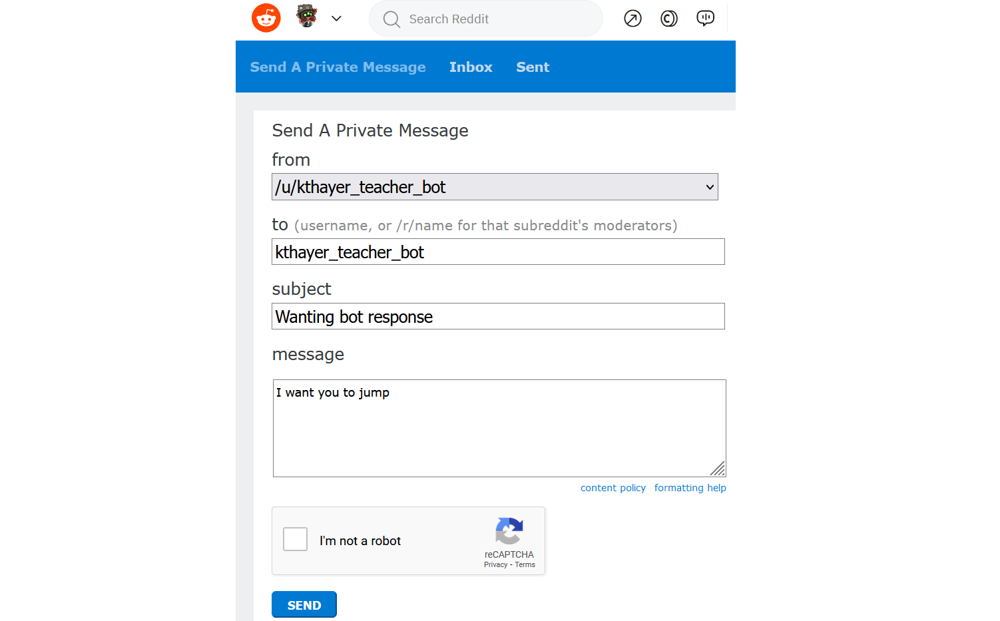
Log into Reddit (PRAW)#
Our code starts with our Redddit PRAW setup:
(optional) make a fake praw connection with the fake_praw library
For testing purposes, we’ve added this line of code, which loads a fake version of praw, so it wont actually connect to reddit. If you want to try to actually connect to reddit, don’t run this line of code.
Bot 1: do whatever we are told#
Our first bot will find our latest inbox message, and then reply with whatever it is told to do
find my latest message#
We need to find our latest message in our inbox
We do this by looking in our reddit inbox for messages (we limit it to one, since we just want the latest).
It doesn’t directly give us the one message (instead it is in something called an “iterator”), but we can use the
nextfunction to get the message out.We then display the subject of the message just so we can see that it found something..
If tweet matches our pattern, reply#
We will now see if our tweet matches our pattern of a message subject of “Wanting bot response” with a message body of “I want you to ___” and then we will reply.
First we will create strings with the patterns we are looking for and save them into variables.
We will check if the message has the subject we are expecting. If it does it will check if the essage body starts with the expected pattern. If it does, then we will find the action from the end of the message body text (based on the expected_pattern length), and reply using that action.
We also add “else” cases for when we didn’t match the patter, and display a message saying what didn’t match.
Yay! It worked! But there is a problem!
Trolling bot 1#
This bot is really easy to troll, so if I repeat my steps and get a new mention (this code is just a duplication of the code above):
Someone messaged us saying at us:
I want you to do something horrible!, and we repliedI will now do something horrible!.They could have made us tweet much worse!
Bot 2: Trying to limit actions#
Let’s try this again, but limit the actions we will do.
If someone asks us to “run”, “jump”, or “fly”, we will do it
If someone asks us to do something else we will say:
“I do not recognize the command ___” (with __ being whatever they said)
So, to go back through our steps:
find my latest mention#
If tweet matches our pattern, reply#
We do the same code for this as before, but after we get the action we are told to do, we put another
if/elseto either do the action if we recognize it, or say we didn’t recognize the action.We will use
into see if the action is in our list of allowed actions (called an allow_list)That one was in our allow list so it worked. Let’s do it all again, with the tweet that caused us problems last time
Note: the code below is just copied from the code sections above
Ok, this time we said
I do not recognize the command do something horrible!.That looks a little better! Are we safe now?
Trolling bot 2#
No, it turns out we are not safe.
Let’s find the latest mention again and see what happens
Oh no! Someone tweeted at us:
I want you to stop talking. But that doesn't mean I won't say horrible things like: I hate everybody!And we replied:
I do not recognize the command stop talking. But that doesn't mean I won't say horrible things like: I hate everybody!Making a bot that is troll proof is very difficult! You either need to severely limit how your bot engages with people, or do a ton of work trying to prevent trolling and fix problems when people find a new way of trolling you.
If you want to learn more, you can revisit the story of what went wrong with the Microsoft Tay bot: How to Make a Bot That Isn’t Racist
7.6. Ethics and Trolling#
7.6.1. Background: Forming Groups#
Every “we” implies a not-“we”. A group is constituted in part by who it excludes. Think back to the origin of humans caring about authenticity: if being able to trust each other is so important, then we need to know WHICH people are supposed to be entangled in those bonds of mutual trust with us, and which are not from our own crew. As we have developed larger and larger societies, states, and worldwide communities, the task of knowing whom to trust has become increasingly large. All groups have variations within them, and some variations are seen as normal. But the bigger groups get, the more variety shows up, and starts to feel palpable. In a nation or community where you don’t know every single person, how do you decide who’s in your squad?
One answer to this challenge is that we use various heuristics (that is, shortcuts for thinking) like stereotypes and signaling to quickly guess where a person stands in relation to us. Sometimes wearing items of a certain brand signals to people with similar commitments that you might be on the same page. Sometimes features that are strongly associated with certain social groups—stereotypes—are assumed to tell us whether or not we can trust someone. Have you ever tried to change or mask your accent, to avoid being marked as from a certain region? Have you ever felt the need to conceal something about yourself that is often stereotyped, or to use an ingroup signal to deflect people’s attention from a stereotyped feature?
There is a reason why stereotypes are so tenacious: they work… sort of. Humans are brilliant at finding patterns, and we use pattern recognition to increase the efficiency of our cognitive processing. We also respond to patterns and absorb patterns of speech production and style of dress from the people around us. We do have a tendency to display elements of our history and identity, even if we have never thought about it before. This creates an issue, however, when the stereotype is not apt in some way. This might be because we diverge in some way from the categories that mark us, so the stereotype is inaccurate. Or this might be because the stereotype also encodes value judgments that are unwarranted, and which lead to problems with implicit bias. Some people do not need to think loads about how they present in order to come across to people in ways that are accurate and supportive of who they really are. Some people think very carefully about how they curate a set of signals that enable them to accurately let people know who they are or to conceal who they are from people outside their squad.
Because patterns are so central to how our brains process information, patterns become extremely important to how societies change or stay the same.
TV tropes is a website that tracks patterns in media, such as the jump scare
The Seven Basic Plots
To create a social group and have it be sustainable, we depend on stable patterns, habits, and norms to create the reality of the grouping. In a diverse community, there are many subsets of patterns, habits, and norms which go into creating the overall social reality. Part of how people manage their social reality is by enforcing the patterns, habits, and norms which identify us; another way we do this is by enforcing, or policing, which subsets of patterns, habits, and norms get to be recognized as valid parts of the broader social reality. Both of these tactics can be done in appropriate, just, and responsible ways, or in highly unjust ways.
7.6.2. Ethics of Disruption (Trolling)#
Trolling is a method of disrupting the way things are, including group structure and practices. Like these group-forming practices, disruptive trolling can be deployed in just or unjust ways. (We will come back to that.) These disruptive tactics can also be engaged with different moods, ranging from playful (like some flashmobs), to demonstrative (like activism and protests), to hostile, to warring, to genocidal. You may have heard people say that the difference between a coup and a revolution is whether it succeeds and gets to later tell the story, or gets quashed. You may have also heard that the difference between a traitor and a hero depends on who is telling the story.
As this class discusses trolling, as well as many of the other topics of social media behavior coming up in the weeks ahead, you are encouraged to bear this duality of value in mind. Trolling is a term given to describe behavior that aims to disrupt (among other things). To make value judgments or ethical judgments about instances of disruptive behavior, we will need to be thoughtful and nuanced about how we decide to pass judgments. One way to begin examining any instance of disruptive behavior is to ask what is being disrupted: a pattern, a habit, a norm, a whole community? And how do we judge the value of the thing being disrupted? Returning to the difference between a coup and a revolution, we might say that a national-level disruption is a coup if it fails, and a revolution if it succeeds. Or we might say that such a disruption is a coup if it intends to disrupt a legitimate instance of political domination/statehood, but a revolution if the instance of political domination is illegitimate. If you take a close look at English-language headlines in the news about uprisings occurring near to or far from here, it should become quickly apparent that both of these reasons can drive an author’s choice to style an event as a coup. To understand what the author is trying to say, we need to look inside the situation and see what assumptions are driving their choice to characterize the disruption in the way that they do.
Trolling can be used, in principle, for good or bad ends.
7.6.3. Trolling and Nihilism#
While trolling can be done for many reasons, some trolling communities take on a sort of nihilistic philosophy: it doesn’t matter if something is true or not, it doesn’t matter if people get hurt, the only thing that might matter is if you can provoke a reaction.
We can see this nihilism show up in one of the versions of the self-contradictory “Rules of the Internet:”
Youtuber Innuendo Studios talks about the way arguments are made in a community like 4chan:
While there is a nihilistic worldview where nothing matters, we can see how this plays out practically, which is that they tend to protect their group (normally white and male), and tend to be extremely hostile to any other group. They will express extreme misogyny (like we saw in the Rules of the Internet: “Rule 30. There are no girls on the internet. Rule 31. TITS or GTFO - the choice is yours”), and extreme racism (like an invented Nazi My Little Pony character).
Is this just hypocritical, or is it ethically wrong? It depends, of course, on what tools we use to evaluate this kind of trolling.
If the trolls claim to be nihilists about ethics, or indeed if they are egoists, then they would argue that this doesn’t matter and that there’s no normative basis for objecting to the disruption and harm caused by their trolling. But on just about any other ethical approach, there are one or more reasons available for objecting to the disruptions and harm caused by these trolls! If the only way to get a moral pass on this type of trolling is to choose an ethical framework that tells you harming others doesn’t matter, then it looks like this nihilist viewpoint isn’t deployed in good faith1. Rather, with any serious (i.e., non-avoidant) moral framework, this type of trolling is ethically wrong for one or more reasons (though how we explain it is wrong depends on the specific framework).
7.6.4. Reflection Exercise#
Revisit the K-Pop protest trolling example in section 7.3. Take your list of ethical frameworks from Chapter 2 and work through them one by one, applying each tool to the K-Pop trolling. For each theory, think of how many different ways the theory could hook up with the example. For example, when using a virtue ethics type of tool, consider how many different people’s character and flourishing could be developed through this? When using a tool based on outcomes, like consequentialism, how many different elements of the outcome can you think of? The goal here is to come up with as many variations as you can, to see how the tools of ethical analysis can help us see into different aspects of the situation.
Once you have made your big list of considerations, choose 2-3 items that, in your view, feel most important. Based on those 2-3 items, do you evaluate this trolling event as having been morally good? Why? What changes to this example would change your overall decision on whether the action is ethical?
A good faith use of a nihilistic ethics framework would be for exploring normative features of situations.
7.7. Learn More#
Meet Dr. Troll (Whitney Phillips)
8. Data Mining#
For our next topic we are going to what can be done with the various forms of data on social media through “data mining.”
8.1. Sources of Social Media Data#
Social media platforms collect various types of data on their users.
Some data is directly provided to the platform by the users. Platforms may ask users for information like:
email address
name
profile picture
interests
friends
Platforms also collect information on how users interact with the site. They might collect information like (they don’t necessarily collect all this, but they might):
when users are logged on and logged off
who users interact with
What users click on
what posts users pause over
where users are located
what users send in direct messages to each other
Online advertisers can see what pages their ads are being requested on, and track users across those sites. So, if an advertiser sees their ad is being displayed on an Amazon page for shoes, then the advertiser can start showing shoe ads to that same user when they go to another website.
Additionally, social media might collect information about non-users, such as when a user posts a picture of themselves with a friend who doesn’t have an account, or a user shares their phone contact list with a social media site, some of whom don’t have accounts (Facebook does this).
Social media platforms then use “data mining” to search through all this data to try to learn more about their users, find patterns of behavior, and in the end, make more money.
8.2. Data From the Reddit API#
When we’ve been accessing Reddit through Python and the “PRAW” code library. The praw code library works by sending requests across the internet to Reddit, using what is called an “application programming interface” or API for short. APIs have a set of rules for what requests you can make, what happens when you make the request, and what information you can get back.
If you are interested in learning more about what you can do with praw and what information you can get back, you can look at the official documentation for those. But be warned they are not organized in a friendly way for newcomers and take some getting used to to figure out what these documentation pages are talking about.
So, if you are interested, you can look at the praw library documentation to find out what the library can do (again, not organized in a beginner-friendly way). You can learn a little more by clicking on the praw models and finding a list of the types of data for each of the models, and a list of functions (i.e., actions) you can do with them.
You can also look up information on the data that you can get from the Reddit API by looking at the Reddit API Documentation.
The Reddit API lets you access just some of the data that Reddit tracks, but Reddit and other social media platforms track much more than they let you have access to.
8.3. Mining Social Media Data#
Data mining is the process of taking a set of data and trying to learn new things from it.
Fig. 8.1 Clip from movie Everything Everywhere All at Once where the IRS agent talks about what information (“story”) she can mine from tax data.#
For example, social media data about who you are friends with might be used to infer your sexual orientation. Social media data might also be used to infer people’s:
Race
Political leanings
Interests
Susceptibility to financial scams
Being prone to addiction (e.g., gambling)
Additionally, groups keep trying to re-invent old debunked pseudo-scientific (and racist) methods of judging people based on facial features (size of nose, chin, forehead, etc.), but now using artificial intelligence.
Social media data can also be used to infer information about larger social trends like the spread of misinformation.
One particularly striking example of an attempt to infer information from seemingly unconnected data was someone noticing that the number of people sick with COVID-19 correlated with how many people were leaving bad reviews of Yankee Candles saying “they don’t have any scent” (note: COVID-19 can cause a loss of the ability to smell):
Fig. 8.2 Twitter user @zomsllama pointing out the correlation of COVID cases and candle reviews complaining of no scent.#
8.3.1. Spurious Correlations#
One thing to note in the above case of candle reviews and COVID is that just because something appears to be correlated, doesn’t mean that it is connected in the way it looks like. In the above, the correlation might be due mostly to people buying and reviewing candles in the fall, and diseases, like COVID, spreading most during the fall.
It turns out that if you look at a lot of data, it is easy to discover spurious correlations where two things look like they are related, but actually aren’t. Instead, the appearance of being related may be due to chance or some other cause. For example:
Fig. 8.3 An example spurious correlation from Tyler Vigen’s collection of Spurious Correlations#
By looking at enough data in enough different ways, you can find evidence for pretty much any conclusion you want. This is because sometimes different pieces of data line up coincidentally (coincidences happen), and if you try enough combinations, you can find the coincidence that lines up with your conclusion.
If you want to explore the difficulty of inferring trends from data, the website fivethirtyeight.com has an interactive feature called “Hack Your Way To Scientific Glory” where, by changing how you measure the US economy and how you measure what political party is in power in the US, you can “prove” that either Democrats or Republicans are better for the economy. Fivethirtyeight has a longer article on this called “Science Isn’t Broken: It’s just a hell of a lot harder than we give it credit for.”
8.4. How is this data used#
Social Media platforms use the data they collect on users and infer about users to increase their power and increase their profits.
One of the main goals of social media sites is to increase the time users are spending on their social media sites. The more time users spend, the more money the site can get from ads, and also the more power and influence those social media sites have over those users. So social media sites use the data they collect to try and figure out what keeps people using their site, and what can they do to convince those users they need to open it again later.
Social media sites then make their money by selling targeted advertising, meaning selling ads to specific groups of people with specific interests. So, for example, if you are selling spider stuffed animal toys, most people might not be interested, but if you could find the people who want those toys and only show your ads to them, your advertising campaign might be successful, and those users might be happy to find out about your stuffed animal toys. But targeting advertising can be used in less ethical ways, such as targeting gambling ads at children, or at users who are addicted to gambling, or the 2016 Trump campaign ‘target[ing] 3.5m black Americans to deter them from voting’
8.5. Activity: What platforms think of you#
In order to see more about what data mining does, we can look and see what some websites think about us.
The easiest one to do this with is Google.
Go to your google account (assuming you have one) profile information and go to “Data & Privacy” (this link might take you there). Then select the “Ad Settings” Ad personalization option (this link might take you there)
Fig. 8.4 The Data & Privacy settings have a place where you can find the ad personalization settings.#
Then you can hopefully see a really long list of who Google thinks you are and what Google thinks you might be interested in, like this:
Fig. 8.5 The start of Kyle’s Google ad profile#
Try this yourself and see what Google thinks of you!
You can try social media sites as well. Twitter’s ad profile is located here and Facebook’s Ad information is here.
8.5.1. Reflection#
After looking at your ad profile, ask yourself the following:
What was accurate, inaccurate, or surprising about your ad profile?
How comfortable are you with Google knowing (whether correctly or not) those things about you?
8.6. Sentiment Analysis on Twitter#
To see more how data mining works, we are going to look at how positive or negative tweets are (using a library that performs “sentiment analysis” on text).
8.6.1. Demo: Sentiment Analysis and Loop Variables#
Sentiment Analysis#
In order to test out data mining on Twitter, we are going to use a Natural Language Processing library, which gives us functions to work with langauge data such as sentences, words, etc.
You don’t need to know the details of how these work internally, but we will be using the “Natural Language Toolkit” along with the “Valence Aware Dictionary and sEntiment Reasoner” (or VADER) lexicon.
So let’s get the library and lexicon now.
We will now have the libary make a “Sentiment Intensity Analyzer” for us, which we save in a variable called
siaNow that we have the “Sentiment Intensity Analyzer” we can try it out on different sentences to have the computer guess how positive or negative they are. Let’s start with a really positive sentance:
In the above code, we ran a
polarity_scoresfunction on the sentence and pulled out thecompoundresult. In this case it came back as0.941, which is close to 1 and indicates a positive statement.Now let’s try a really negative one:
You can see that this sentence came out as
-0.9227, which is close to -1 and indiates a negative statement.Let’s try once more with a more neutral sentence
The sentiment analyzer showed this sentence as
0.1513, which is positve but close to 0, so indicates a slightly positive statement.The Sentiment Intensity Analyzer is far from perfect, but we can use it some to try and find trends in social media posts.
looping with sentiments#
If we want to look at trends over a series of sentences (or social media posts), we can use for loops.
So let’s make an array of sentences and then do a loop to look at the sentiment of each sentence.
We can now see at a glance the sentiments for each of our movie review sentences (and we can consider how accurate we think the sentiment scores are).
But what might be even more useful would be to do something like the average sentiment of all reviews, or what percentage were positive.
In order to figure this out, we are going to make use of variables to track information while we are looping.
Loop Variables#
First let’s consider how to count the number of movie reviews in our list.
Python provides us an easy way of counting the how many movie reviews there were, by using the
lenfunction like this:But we can also use a variable to keep track of how many reviews we’ve seen so far as we go through our loop.
Note: while this strategy requires more code than just doing
len(movie_reviews), it will build us to doing more complicate tracking as we looploop count#
We start by making a variable, which we will call
num_reviewsto track the number of reviews we’ve seen so far, and we’ll set it to 0 since we haven’t gone through any reviews yet.Then as part of our loop, each time we go through a review we will add 1 to our
num_reviewsvariableWe can rewrite the above code using a Python shorthand of
+=, which means:num_reviews = num_reviews + 1can be rewritten as
num_reviews += 1loop average#
Now let’s loop through the list of reviews again, but this time try to find the average sentiment of all reviews.
To find the average of all the sentiments, we need to add all the sentiments together and then divide by the number of reviews.
So what we will do is make another variable at the start of our loop called
total_sentimentand each time we loop through a new review, we will add that review’s sentiment to thetotal_sentiment. Then at the end, the average will be thetotal_sentimentdivided by thenum_reviews.So that let us find the average sentiment of our reviews, which were generally positive.
We could also find out what percentage of reviews were positive by finding the number of reviews that had a sentiment bigger than 0, and then dividing by the total number of reviews and multiplying the answer by 100.
In this case we make a variable before the loop called
num_positive_reviews, and add 1 to it whenever we find a review that is positive (using anifstatement), like this:8.6.2. Practice: Sentiment Analysis and Loop Variables#
Now it’s your turn to practice sentiment analysis and loop variables
Sentiment Analyasis#
First run the code to load up the Sentiment Intensity Analyzer
Also, look at this example from the demo of running sentiment analysis:
Now, copy that two lines of code above, and try out your own sentences, and run the sentiment analysis on them
# TODO: enter your code hereTry several sentences and see how the Sentiment Intensity Analyzer handles them
# TODO: enter your code hereLoop variables#
Now let’s practice with loop variables.
Below is a for loop which goes through each letter in the word “Mississipi”.
Make another copy of that loop, but add a variable before the loop called
num_lettersand use it count how many letters were in the word “Mississipi”. At the end display the number of letters.# TODO: enter your code hereMake another copy of what you just did, but this time also count the number of “i”s. Make a variable called
num_ito count how many “i”s.Hint: To see if a letter is an “i”, check if
letter == "i"At the end print out how many of the letters were “i”s and what percentage of the word was “i”s.
# TODO: enter your code here8.6.3. Demo: Sentiment Analysis on Reddit#
Now let’s try using sentiment analysis (and loop variables) on Reddit:
We’ll start by doing our normal steps to load Reddit PRAW (or fake praw)
Reddit PRAW Setup#
(optional) make a fake praw connection with the fake_praw library
For testing purposes, we’ve added this line of code, which loads a fake version of praw, so it wont actually connect to reddit. If you want to try to actually connect to reddit, don’t run this line of code.
Sentiment Analysis#
load sentiment analysis library and make analyzer#
loop through submissions, finding average sentiment#
We can now combine our previous examples of looping through reddit submissions with what we just learned of sentiment analysis and looping variables to find the average sentiment of a set of submission titles.
We can now see the average sentiment of a set of reddit post titles based on our search of a subreddit!
If you use your reddit bot keys, you can change the
subredditto be whatever one you want and see whether people are posting positively or negatively in it.note: You can change
limit=10to go up higher to get more submissions at a time to find the average of8.7. Data Poisoning#
People working with data sets always have to deal with problems in their data, stemming from things like mistyped data entries, missing data, and the general problem of all data being a simplification of reality.
Sometimes a dataset has so many problems that it is effectively poisoned or not feasible to work with.
8.7.1. Unintentional Data Poisoning#
Datasets can be poisoned unintentionally. For example, many scientists posted online surveys that people can get paid to take. Getting useful results depended on a wide range of people taking them. But when one TikToker’s video about taking them went viral, the surveys got filled out with mostly one narrow demographic, preventing many of the datasets from being used as intended.
See more in
A teenager on TikTok disrupted thousands of scientific studies with a single video – The Verge
Additionally, spam and output from Large Language Models like ChatGPT can flood information spaces (e.g., email, Wikipedia) with nonsense, useless, or false content, making them hard to use or useless.
See more in
CNET Is Reviewing the Accuracy of All Its AI-Written Articles After Multiple Major Corrections
Why posting GPT and ChatGPT generated answers is not currently acceptable - StackOverflow
8.7.2. Intentional Data Poisoning#
Data can be poisoned intentionally as well. For example, in 2021, workers at Kellogg’s were upset at their working conditions, so they agreed to go on strike, and not work until Kellogg’s agreed to improve their work conditions. Kellogg’s announced that they would hire new workers to replace the striking workers:
People in the antiwork subreddit found the website where Kellogg’s posted their job listing to replace the workers. So those Redditors suggested they spam the site with fake applications, poisoning the job application data, so Kellogg’s wouldn’t be able to figure out which applications were legitimate or not (we could consider this a form of trolling). Then Kellogg’s wouldn’t be able to replace the striking workers, and they would have to agree to better working conditions.
Then Sean Black, a programmer on TikTok saw this and decided to contribute by creating a bot that would automatically log in and fill out applications with random user info, increasing the rate at which he (and others who used his code) could spam the Kellogg’s job applications:
See also:
How to poison the data that Big Tech uses to surveil you – MIT Technology Review
8.8. Reflections on Data Mining#
Are you surprised by any of the things that can be done with data mining?
Do you think there is information that could be discovered through data mining that social media companies shouldn’t seek out (e.g., social media companies could use it for bad purposes, or they might get hacked and others could find it)?
Do you think there is information that could be discovered through data mining that social media companies should seek out (e.g., they can’t make their platform treat people fairly without knowing this)?
8.9. Learn More#
Your Friends’ Online Connections Can Reveal Your Sexual Orientation
Housing companies used Facebook’s ad system to discriminate against older people, according to new human rights complaints
9. Privacy and Security#
With all the data social media sites collect on you including with data mining, let’s look at privacy and security
9.1. Privacy#
There are many reasons, both good and bad, that we might want to keep information private.
There might be some things that we just feel like aren’t for public sharing (like how most people wear clothes in public, hiding portions of their bodies)
We might want to discuss something privately, avoiding embarrassment that might happen if it were shared publicly
We might want a conversation or action that happens in one context not to be shared in another (context collapse)
We might want to avoid the consequences of something we’ve done (whether ethically good or bad), so we keep the action or our identity private
We might have done or said something we want to be forgotten or make at least made less prominent
We might want to prevent people from stealing our identities or accounts, so we keep information (like passwords) private
We might want to avoid physical danger from a stalker, so we might keep our location private
We might not want to be surveilled by a company or government that could use our actions or words against us (whether what we did was ethically good or bad)
When we use social media platforms though, we at least partially give up some of our privacy.
For example, a social media application might offer us a way of “Private Messaging” (also called Direct Messaging) with another user. But in most cases those “private” messages are stored in the computers at those companies, and the company might have computer programs that automatically search through the messages, and people with the right permissions might be able to view them directly.
In some cases we might want a social media company to be able to see our “private” messages, such as if someone was sending us death threats. We might want to report that user to the social media company for a ban, or to law enforcement (though many people have found law enforcement to be not helpful), and we want to open access to those “private” messages to prove that they were sent.
9.1.1. Privacy Rights#
Some governments and laws protect the privacy of individuals (using a Natural Rights ethical framing). These include the European Union’s General Data Protection Regulation (GDPR), which includes a “right to be forgotten”, and the United State’s Supreme Court has at times inferred a constitutional right to privacy.
Fig. 9.1 Privacy tracking settings prompt on wired.com. These prompts were added as part of following the EU’s new GDPR regulations.#
9.2. Security#
While we have our concerns about the privacy of our information, we often share it with social media platforms under the understanding that they will hold that information securely. But social media companies often fail at keeping our information securely.
For example, the proper security practice for storing user passwords is to use a special individual encryption for each password. This way the database can only confirm that a password was the right one, but it can’t independently up what the password is. Therefore if someone had access to the database, the only way to figure out the right password is to use “brute force,” that is, keep guessing passwords until they guess the right one (and each guess takes a lot of time).
But while that is the proper security for storing passwords. So for example, Facebook stored millions of Instagram passwords in plain text, meaning the passwords weren’t encrypted and anyone with access to the database could simply read everyone’s passwords. And Adobe encrypted their passwords improperly and then hackers leaked their password database of 153 million users.
From a security perspectives there are many risks that a company faces, such as:
Employees at the company misusing their access, like Facebook employees using their database permissions to stalk women
Hackers finding a vulnerability and inserting, modifying, or downloading information. For example:
hackers stealing the names, Social Security numbers, and birthdates of 143 million Americans from Equifax
hackers posting publicly the phone numbers, names, locations, and some email addresses of 530 million Facebook users, or about 7% of all people on Earth
Hacking attempts can be made on individuals, whether because the individual is the goal target, or because the individual works at a company which is the target. Hackers can target individuals with attacks like:
Password reuse attacks, where if they find out your password from one site, they try that password on many other sites
Hackers tricking a computer into thinking they are another site, for example:
the US NSA impersonated Google
Social engineering, where they try to gain access to information or locations by tricking people. For example:
Phishing attacks, where they make a fake version of a website or app and try to get you to enter your information or password into it. Some people have made malicious QR codes to take you to a phishing site.
Many of the actions done by the con-man Frank Abagnale, which were portrayed in the movie Catch Me If You Can
One of the things you can do as an individual to better protect yourself against hacking is enable 2-factor authentication on your accounts.
9.3. Additional Privacy Violations#
Besides hacking, there are other forms of privacy violations, such as:
Unclear Privacy Rules: Sometimes privacy rules aren’t made clear to the people using a system. For example:
If you send “private” messages on a work system, your boss might be able to read them.
When Elon Musk purchased Twitter, he also was purchasing access to all Twitter Direct Messages
Others Posting Without Permission: Someone may post something about another person without their permission. See in particular: The perils of ‘sharenting’: The parents who share too much
Metadata: Sometimes the metadata that comes with content might violate someone’s privacy.
For example, in 2012, former tech CEO John McAfee was a suspect in a murder in Belize, John McAfee hid out in secret. But when Vice magazine wrote an article about him, the photos in the story contained metadata with the exact location in Guatemala.
Deanonymizing Data: Sometimes companies or researchers release datasets that have been “anonymized,” meaning that things like names have been removed, so you can’t tell who the data is about. But sometimes people can still deduce who the anonymized data is about. This happened when Netflix released anonymized movie ratings data sets, but at least some users’ data could be traced back to them.
Inferred Data: Sometimes information that doesn’t directly exist can be inferred through data mining (as we saw last chapter), and the creation of that new information could be a privacy violation.
This includes creation of Shadow Profiles, which are information about the user that the user didn’t provide or consent to
Non-User Information: Social Media sites might collect information about people who don’t have accounts, like how Facebook does
9.4. Tracking Use#
Let’s now look at how we might track use of something. We will first make our previous code to get average sentiment, which will make writing code easier! But then we will also start tracking how people are using the function we made (and potentially send that information elsewhere).
In order to do that, we need to learn how to use functions.
9.4.1. Demo: Writing Functions#
Before we can do our demo of tracking function use, we need to learn how to create functions in Python.
Functions allow us to run another computer program. In our recipe analogy earlier, we said it was like:
- Make the dumpling dough (see recipe on page 42).Or
- to make dumplings vegan, make the dumpling dough (see recipe on page 42), but instead of using the egg, subsititute 2 teaspoons olive oil and 2 tablespoons hot water.Benefits of Functions#
There are several advantages to creating and using functions in computer programs, such as:
Reusing code instead of repeating code: When we find ourselves repeating a set of actions in our program, we end up writing (or copying) the same code multiple times. If we put that repeated code in a function, then we only have to write it once and then use that function in all the places we were repeating the code.
Single, standardized definitions: Let’s say we made code that takes a name and tries to split it into a first name and last name, and we have that code copied in several places in our program. Then we realize that our code isn’t handling some last names correctly, like “O’Reilly” and “Del Toro.” If we fix this bug in one of the places the code is copied in our program it still will be broken elsewhere, so we have to find all the places and fix it there. If, on the other hand we had the code to split names in a function, and used that function everywhere else, then we only have to fix the bug inside that one function and our code everywhere is fixed.
Code organization: Making functions also can help us organize our code. It lets us give a name to a block of code, and when we use it, those function names can help make the code more understandable. Making code as functions also helps in letting us put those pieces of code in other files or in code libraries, so the file we are working on is smaller and easier to manage.
Using Functions#
We have been using many functions so far in this book, such as:
display(2 + 2)sleep(3)client.create_tweet(text="This is a tweet")sentence.upper()Now we will be defining our own functions, which we can then use later in our code.
Defining Functions#
In Python a function is defined using the ‘def’ keyword.
Creating a Function:
Using a Function that you previously made:
Let’s start with an example function that doesn’t use any arguments:
In the code above,
deftells Python we want to define a funciton,say_hiis the name we chose for our function, and the empty parentheses()mean that it doesn’t take any parameters. There is then a colon (:) to say what follows is a code block that will be what happens when the function is called.When we run the code above that defines our function, we don’t see any output, but now the function
say_hiexists and is ready for us to try using it:We can now call this function many times, for example in a
forloopWe can also re-define our functions by doing a new
defstatement. It will just replace the old functions definition with the new one:Parameters#
Parameters (also called “arguments”) are like variables for a function.
In the definition of the function, you can list inside the parentheses the parameters you want to be given for you to use in your function code.
Let’s redefine our
say_hifunction so it takes a paratemeter for the name of a person to say hi to:Now when we call the function
say_hiwe need to give it a value in the parentheses (or it gives us an error:missing required positional argument)We can again use a loop to call our function multiple times, but this time we will loop over a list of names and send a different name each time the function runs:
We can make a function that takes multiple parameters. Let’s redefined our function again to take first and last names:
Returns#
In the above examples, our
say_hiperforms an action of displaying text (we used theprintfunction).But if we try to save what comes back from running the function:
It says that nothing (
None) came back out of the function.There are other functions that we’ve run that have had things come back that we can save in a variable, like counting the number of characters in a string with
len.In Python, when we want to send something back that can be saved in a variable, we use a
returnin our function definition, like this function which creates the hi message and doesn’t display it:The return says what value to send back to wherever the function was called. In this case we are sending back what got saved in the
hi_messagevariable.When we use this function, we can save the result in a variable:
This time the variable had the message saved, but nothing was displayed. We can now display the variable to see what was saved:
If we want, we can simplify the code by telling return to just send back whatever
"Hi " + first_name + " " + last_name + "!"is instead of saving it in anhi_messagevariable first.9.4.2. Practice: Functions#
Create a function called
say_goodbyewhich displays the text “Goodbye!”# TODO: enter your code hereWrite code that calls the function
say_goodbye# TODO: enter your code hereRedefine the function
say_goodbyeto take a parameter calledname, and have it display “Goodbye name!” where “name” is replaced by whatever was in thenamevariable# TODO: enter your code hereWrite code that calls the function say_goodbye but with your name as a parameter
# TODO: enter your code hereTry out the code below which counts from 0 to 4 slowly:
We can put that for loop in a function like this:
And then we can call it:
Now redifine
counterbycopying the code above which defines
countermake the counter take a parameter called
maxHave the
rangecall use the parametermax# TODO: enter your code hereNow try calling the new version of
counterbut passing it the argument 7# TODO: enter your code hereCreate a function called
multiplywhich takes two arguments, multiplies them together (*), and then returns the multiplied value# TODO: enter your code hereCall the
mutliplyfunction with two numbers and save the result in a variable. Then print out the variable to see that the multiplied number was saved.# TODO: enter your code here9.4.3. Demo: Track Use of Sentiment Analysis Code#
In this code demo, we will take the sentiment analysis code we used in the last chapter (Data Mining), and we will turn it into a function which will make it easier to use.
After turning it into a function though, we will add code to that function to track how it is used. We could theoretically take this information we are tracking and send to results to some other account.
This sort of tracking can be part of tracking program telemetry, which can be useful in figure out where software is broken or where it is most or least useful. But it can also be violating the privacy of anyone using our funtion who doesn’t know we are tracking its use, or used maliciously to steal user information.
Reddit PRAW Setup#
(optional) use the fake version of Reddit praw, so you don’t have to use real Reddit developer access passwords
load sentiment analysis library and make analyzer#
original code to loop through submissions, finding average sentiment#
This is the code from chapter 8 that loops through submissions in the “cuteanimals” subreddit and calculates the average sentiment
Make a function using the code above for finding the average sentiment#
We now make a function of that code above by doing the following:
Add a
defline at the start to make a function calledfind_average_sentimentIndent all the old code so that it becomes the contents of the function
find_average_sentimentMake the function take two arguments:
subreddit_name, which takes place of “cuteanimals”, so the person calling the function can choose which subreddit to searchdisplay_progresswhich defaults to False. This decides whether or not the print statements are run when the function is run, so we can see the progress if we want, or just get the answer by defaultAt the end of the function, return the average_sentiment as the result
Now let’s try using the function
Modify the function so it tracks use#
Now we make another version of the same function, but with a small difference:
We make a list variable called
sentiment_searcheswhich exists outside the function.At the start of the function we add the subreddit being searched to that list. This way, as the function gets used, we’ll keep a history of its use in the
sentiment_searcheslistNow let’s run this version of the function
It looks like it works like normal, but our calls to the function have been tracked!
Now, if we were being malicious, we would hide this code in some other code library we would try to convince you to use, that way you wouldn’t notice the code. And instead of just saving those tweets to a variable, we would send it to ourselves, perhaps by putting code into our new_create_tweet to log into a different twitter account and private messaged that info to ourselves.
How can we trust code libraries?#
If people can make code libraries track us and violate our privacy, how can we trust them? We could try looking at the source code for the PRAW library to try and make sure the library we are using isn’t doing anything bad, but no programmer can be expected to read through all the libraries they use. There is unfortunately no simple answer to this.
In fact, there are cases where people have messed with code libraries:
The United States National Security Agency “paid massive computer security firm RSA $10 million to promote a flawed encryption system so that the surveillance organization could wiggle its way around security.”
Does US national security outweigh global computer security?
Shortly after the Russian invasion of Ukraine in 2022, someone modified a popular NodeJS code library so that it would automatically destroy files if it was run on a computer in Russia or Belarus.
Does opposing a military invasion justify sabatoging a code library?
And those are just the intentional problems with code libraries. All sorts of code libraries and computer programs are full of security flaws, which are regularly discovered and fixed (though who knows how much the flaws were exploited first).
9.5. Design Analysis: GDPR#
We want to provide you, the reader, a chance to explore online privacy more.
In this activity you will be looking at an official brochure on the EU’s GDPR privacy law1.
We will again follow the five step CIDER method (Critique, Imagine, Design, Expand, Repeat).
So read through the official brochure on the EU’s GDPR privacy law (for this activity ignore any additional details or clarifications made elsewhere in the GDPR, since those weren’t deemed important enough to put on this brochure). Then do the following (preferrably on paper or in a blank computer document):
9.5.1. Critique (3-5 minutes, by yourself):#
What assumptions does GDPR make about individuals or groups using social media, which might not be true or might cause problems? List as many as you can think of (bullet points encouraged).
9.5.2. Imagine (2-3 minutes, by yourself):#
Select one of the above assumptions that you think is important to address. Then write a 1-2 sentence scenario where a user face difficulties because of the assumption you selected. This represents one way the design could exclude certain users.
9.5.3. Design (3-5 minutes, by yourself):#
Brainstorm ways to change the GDPR policy to avoid the scenario you wrote above. List as many different kinds of potential solutions you can think of – aim for ten or more (bullet points encouraged).
9.5.4. Expand (5-10 minutes, with others):#
Combine your list of critiques with someone else’s (or if possible, have a whole class combine theirs).
You can also consider reading criticism of the GDPR:
What’s wrong with the GDPR? – Politico
How GDPR Is Failing – Wired (archive.org copy)
9.5.5. Repeat the Imagine and Design Tasks:#
Select another assumption from the list above that you think is important to address. Make sure to choose a different assumption than you used before. Choose one that you didn’t come up with yourself, if possible. Repeat the Imagine and Design steps.
You could also try this with a brochure for businiesses, or look at a privacy and security settings page on a social media site.
9.6. Reflection Questions#
What are your biggest concerns around privacy on social media?
What incentives do social media companies have to protect privacy?
What incentives to social media companies have to violate privacy?
What incentives do social media companies have to be careless with privacy?
9.7. Learn More#
533 million Facebook users’ phone numbers and personal data have been leaked online
Scientists Like Me Are Studying Your Tweets–Are You OK With That?
What’s ‘Context Collapse’? Understanding it Can Mean a More Fulfilling Online Life
10. Accessibility#
Now let’s look at who social media sites work for, who they don’t, and what it takes to make a social media site work for more people.
10.1. Disability#
A disability is an ability which a person doesn’t have, but their society expects them to have.1 For example:
If a building only has stair cases to get up to the second floor (it was built assuming everyone could walk up stairs), then someone who cannot get up stairs has a disability in that situation.
If a physical picture book was made with the assumption that people would be able to see the pictures, then someone who cannot see has a disability in that situation.
If tall grocery store shelves that were made with the assumption that people would be able to reach them, then people who are short, or who can’t lift their arms up, or who can’t stand up, all would have a disability in that situation.
If an airplane seat that was designed with little leg room assuming people’s legs wouldn’t be too long, then someone who is very tall, or who has difficulty bending their legs would have a disability in that situation.
Which abilities are expected of people, and therefore what things are considered disabilities, are socially defined. Different societies and groups of people make different assumptions about what people can do, and so what is considered a disability in one group, might just be “normal” in another.
There are many things we might not be able to do that won’t be considered disabilities because our social groups don’t expect us to be able to do them. For example, none of us have wings that we can fly with, but that is not considered a disability, because our social groups didn’t assume we would be able to. Or, for a more practical example, let’s look at color vision:
Most humans are trichromats, meaning they can see three base colors (red, green, and blue), along with all combinations of those colors. Human societies often assume that people will be trichromats. So people who can’t see as many colors are considered to be color blind, a disability. But there are also a small number of people who are tetrachromats, and can see four base colors (trying to name these base colors in trichromat terms is not straightforward) and all combinations of those colors. In comparison to tetrachromats, trichromats (the majority of people), lack an ability to see some colors. But our society doesn’t build things for tetrachromats, so their extra ability to see color doesn’t help them much, and trichromats’ relative reduction in seeing color doesn’t cause them difficulty, so being a trichromat isn’t considered to be a disability.
Some disabilities are visible disabilities that other people can notice by observing the disabled person (e.g., wearing glasses is an indication of a visual disability, a missing limb might be noticeable). Other disabilities are invisible disabilities that other people cannot notice by observing the disabled person (e.g., chronic fatigue syndrome, contact lenses for a visual disability, or a prosthetics for a missing limb covered by clothing). Sometimes people with invisible disabilities get unfairly accused of “faking” or “making up” their disability.
Disabilities can be accepted as socially normal, like is sometimes the case for wearing glasses or contacts, or it can be stigmatized as socially unacceptable, inconvenient, or blamed on the disabled person.
Some people (like many with chronic pain) would welcome a cure that got rid of their disability. Others (like many autistic people), are insulted by the suggestion that there is something wrong with them that needs to be “cured,” and think the only reason autism is considered a “disability” at all is because society doesn’t make reasonable accommodations for them the way it does for neurotypical people.
Many of the disabilities we mentioned above were permanent disabilities, that is, disabilities that won’t go away. But disabilities can also be temporary disabilities, like a broken leg in a cast, which will eventually get better. Disabilities can also vary over time (e.g., “today is a bad day for my back pain”). Disabilities can even be situational disabilities, like the loss of fine motor skills when wearing thick gloves in the cold, or trying to watch a video on your phone in class with the sound off, or trying to type on a computer while holding a baby.
As you look through all these types of disabilities, you might discover ways you have experienced disability in your life. Though please keep in mind that different disabilities can be very different, and everyone’s experience with their own disability can vary. So having some experience with disability does not make someone an expert in any other experience of disability.
As for our experience with disability, Kyle has been diagnosed with generalized anxiety disorder and Susan has been diagnosed with depression. Kyle and Susan also both have:
near sightedness: our eyes cannot focus on things far away (unless we use corrective lenses, like glasses or contacts)
ADHD: we have difficulty controlling our focus, sometimes being hyperfocused and sometimes being highly distracted, and also have difficulties with executive dysfunction.
There are a number of ways to think about disability, such as legal (what legally counts as a disability?), medical (what is a problem to be cured?), identity (who views themselves as “disabled”), etc. We are focused here more on disability as it relates to design and who things in our world are designed for.
10.2. Accessible Design#
There are a number of ways of managing disabilities. All of these ways of managing disabilities might be appropriate at different times for different situations.
10.2.1. Coping Strategies#
Those with disabilities often find ways to cope with their disability, that is, find ways to work around difficulties they encounter and seek out places and strategies that work for them (whether realizing they have a disability or not). Additionally, people with disabilities might change their behavior (whether intentionally or not) to hide the fact that they have a disability, which is called masking, and may take a mental or physical toll on the person masking, which others around them wont realize.
For example, kids who is near sighted and don’t realize their ability to see is different from others will often seek out seats at the front of classrooms where they can see better. As for us two authors, we both have ADHD and were drawn to PhD programs where our tendency to hyperfocus on following our curiosity was rewarded (though executive dysfunction with finishing projects created challenges).
This way of managing disabilities puts the burden fully on disabled people to manage their disability in a world that was not designed for them, trying to fit in with “normal” people.
10.2.2. Modifying the Person#
Another way for managing disabilities is assistive technology, which is something that helps a disabled person act as though they were not disabled. In other words, it is something that helps a disabled person become more “normal” (according to whatever a society’s assumptions are). For example:
Glasses help people with near-sightedness see in the same way that people with “normal” vision do
Walkers and wheelchairs can help some disabled people move around closer to the way “normal” people can (though stairs can still be a problem)
A spoon might automatically balance itself when held by someone whose hands shake
Stimulants (e.g., caffeine, Adderall) can increase executive function in people with ADHD, so they can plan and complete tasks more like how neurotypical people do.
This way of managing disability gives tools to disabled people to help them become more “normal.” So the disabled people person is able to move through a world that was not designed for them. But there is still an expectation that disabled people must become more “normal,” and they often these tools are very expensive.
10.2.3. Making an environment work for all#
Another strategy for managing disability is to use Universal Design, which originated in architecture. In universal design, the goal is to make environments and buildings have options so that there is a way for everyone to use it1. For example, a building with stairs might also have ramps and elevators, so people with different mobility needs (e.g., people with wheelchairs, baby strollers, or luggage) can access each area. In the elevators the buttons might be at a height that both short and tall people can reach. The elevator buttons might have labels both drawn (for people who can see them) and in braille (for people who cannot), and the ground floor button may be marked with a star, so that even those who cannot read can at least choose the ground floor.
In this way of managing disabilities, the burden is put on the designers to make sure the environment works for everyone, though disabled people might need to go out of their way to access features of the environment.
10.2.4. Making a tool adapt to users#
When creating computer programs, programmers can do things that aren’t possible with architecture (where Universal Design came out of), that is: programs can change how they work for each individual user. All people (including disabled people) have different abilities, and making a system that can modify how it runs to match the abilities a user has is called Ability based design. For example, a phone might detect that the user has gone from a dark to a light environment, and might automatically change the phone brightness or color scheme to be easier to read. Or a computer program might detect that a user’s hands tremble when they are trying to select something on the screen, and the computer might change the text size, or try to guess the intended selection.
In this way of managing disabilities, the burden is put on the computer programmers and designers to detect and adapt to the disabled person.
Universal Design has taken some criticism. Some have updated it, such as in acknowledging that different people’s needs may be contradictory, and others have replaced it with frameworks like Inclusive Design..
10.3. Why It Matters Who Designs#
10.3.1. Who gets designed for#
When designers and programmers don’t think to take into account different groups of people, then they might make designs that don’t work for everyone. This problem often shows up for how designs do or do not work for people with disabilities. But it also shows up in other areas as well.
The following tweet has a video of a soap dispenser that apparently was only designed to work for people with light-colored skin.1
Similarly, Twitter looked into bias in how their automatic image cropping algorithm worked.
10.3.2. Who gets to be designers#
In how we’ve been talking about accessible design, the way we’ve been phrasing things has implied a separation between designers who make things, and the disabled people who things are made for. And unfortunately, as researcher Dr. Cynthia Bennett points out, disabled people are often excluded from designing for themselves, or even when they do participate in the design, they aren’t considered to be the “real designers.” You can see Dr. Bennet’s research talk on this in the following Youtube Video:
10.3.3. Design Justice#
We mentioned Design Justice earlier, but it is worth reiterating again here that design justice includes considering which groups get to be part of the design process itself.
If you can’t see the video, it shows someone with light skin putting their hand under a soap dispenser, and soap comes out. Then a person with dark skin puts their hand under a soap dispenser, and nothing happens. The person with dark skin then puts a white paper towel on their hand and then when they put their hand under the soap dispenser, soap comes out. When the person with dark skin takes off the white paper towel, the soap dispenser won’t work for them anymore.
10.4. Alt-text on Social Media#
Let’s look more at a particular example of an accessibility design: alt-text on images (which we mentioned previously in chapter 2).
10.4.1. Alt-text#
Some users might not be able to see images on websites for a variety of reasons. The user might be blind or low-vision. Their device or internet connection might not support images. Or perhaps all the images got deleted (like what happened to The Onion).
In order for these users to still get the information intended from the images, the image can come with alt-text. You can read more about alt-text in this New York Times feature
Reddit unfortunately doesn’t allow alt-text for their images. So while we were going to have a programming demo here to look up the alt-text, there is no alt-text on images uploaded to reddit to look up, meaning this site is unfriendly to blind or low-vision users.
10.5. Design Analysis: Accessibility#
We want to provide you, the reader, a chance to explore accessibility more.
In this activity you will be looking at a social media site on your device (e.g., your phone or computer).
We will again follow the five step CIDER method (Critique, Imagine, Design, Expand, Repeat).
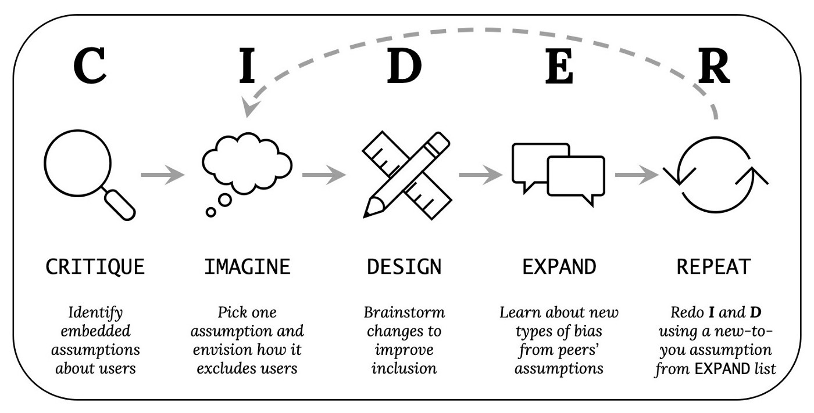
So open a social media site on your device (the website or app may have additional accessibility settings, but don’t use those for now, just consider how it works as it is currently). Then do the following (preferably on paper or in a blank computer document):
10.5.1. Critique (3-5 minutes, by yourself):#
What assumptions does the site and your device make about individuals or groups using social media, which might not be true or might cause problems? List as many as you can think of (bullet points encouraged).
10.5.2. Imagine (2-3 minutes, by yourself):#
Select one of the above assumptions that you think is important to address. Then write a 1-2 sentence scenario where a user face difficulties because of the assumption you selected. This represents one way the design could exclude certain users.
10.5.3. Design (3-5 minutes, by yourself):#
Brainstorm ways to change the site or your device to avoid the scenario you wrote above. List as many different kinds of potential solutions you can think of – aim for ten or more (bullet points encouraged).
10.5.4. Expand (5-10 minutes, with others):#
Combine your list of critiques with someone else’s (or if possible, have a whole class combine theirs).
10.5.5. Repeat the Imagine and Design Tasks:#
Select another assumption from the list above that you think is important to address. Make sure to choose a different assumption than you used before. Choose one that you didn’t come up with yourself, if possible. Repeat the Imagine and Design steps.
10.5.6. Explore accessibility settings#
Now, try to find the accessibility settings on the social media site and on your device.
For each setting you see, try to come up with what disabilities that setting would be beneficial for (there may be multiple).
11. Recommendation Algorithms#
Now let’s look at how social media platforms decide what content to show you or recommend for you: recommendation algorithms.
11.1. What Recommendation Algorithms Do#
When social media platforms show users a series of posts, updates, friend suggestions, ads, or anything really, they have to use some method of determining which things to show users. The method of determining what is shown to users is called a recommendation algorithm, that is an algorithm (a series of steps or rules, such as in a computer program) that recommends posts for users to see, people for users to follow, ads for users to view, or reminders for users.
Some recommendation algorithms can be simple such as reverse chronological order, meaning show users the latest posts (like how blogs work, or Twitter’s “See latest tweets” option). They can also be very complicated taking into account many factors, such as:
Time since posting (e.g., show newer posts, or remind me of posts that were made 5 years ago today)
Whether the post was made or liked by my friends or people I’m following
How much this post has been liked, interacted with, or hovered over
Which other posts I’ve been liking, interacting with, or hovering over
What people connected to me or similar to me have been liking, interacting with, or hovering over
What people near you have been liking, interacting with, or hovering over (they can find your approximate location, like your city, from your internet IP address, and they may know even more precisely)
This perhaps explains why sometimes when you talk about something out loud it gets recommended to you (because someone around you then searched for it). Or maybe they are actually recording what you are saying and recommending based on that.
Phone numbers, email addresses (sometimes collected deceptively) can be used to suggest friends or contacts.
And probably many more factors as well!
Now, how these algorithms precisely work is hard to know, because social media sites keep these algorithms secret, probably for multiple reasons:
They don’t want another social media site copying their hard work in coming up with an algorithm
They don’t want users to see the algorithm and then be able to complain about specific details
They don’t want malicious users to see the algorithm and figure out how to best make their content go viral
11.1.1. Reflections#
What experiences do you have of social media sites making particularly good recommendations for you?
What experiences do you have of social media sites making particularly bad recommendations for you?
11.2. Ethical Analysis of Recommendation Algorithms#
When we look at ethics and responsibility in regards to recommendation algorithms, it can be helpful to consider the difference between individual analysis and systemic analysis.
11.2.1. Individual vs. Systemic Analysis#
Individual analysis focuses on the behavior, bias, and responsibility an individual has, while systemic analysis focuses on the how organizations and rules may have their own behaviors, biases, and responsibility that aren’t necessarily connected to what any individual inside intends.
For example, there were differences in US criminal sentencing guidelines between crack cocaine vs. powder cocaine in the 90s. The guidelines suggested harsher sentences on the version of cocaine more commonly used by Black people, and lighter sentences on the version of cocaine more commonly used by white people. Therefore, when these guidelines were followed, they had have racially biased (that is, racist) outcomes regardless of intent or bias of the individual judges. (See: https://en.wikipedia.org/wiki/Fair_Sentencing_Act).
11.2.2. Recommendation Algorithms as Systems#
Similarly, recommendation algorithms are rules set in place that might produce biased, unfair, or unethical outcomes. This can happen whether or not the creators of the algorithm intended these outcomes. Once these algorithms are in place though, the have an influence on what happens on a social media site. Individuals still have responsibility with how they behave, but the system itself may be set up so that individual efforts cannot not be overcome the problems in the system.
Fig. 11.1 A tweet highlighting the difference between structural problems (systemic analysis) and personal choices (individual analysis).#
Sometimes though, individuals are still blamed for systemic problems. For example, Elon Musk, who has the power to change Twitters recommendation algorithm, blames the users for the results:
Fig. 11.2 A tweet from current Twitter owner Elon Musk blaming users for how the recommendation algorithm interprets their behavior.#
11.3. Individual Concerns with Recommendation Algorithms#
Let’s look at some of the concerns that an individual user might have with recommendation algorithms.
11.3.1. How recommendations can go well or poorly#
Friends or Follows:#
Recommendations for friends or people to follow can go well when the algorithm finds you people you want to connect with.
Recommendations can go poorly when they do something like recommend an ex or an abuser because they share many connections with you.
Reminders:#
Automated reminders can go well in a situation such as when a user enjoys the nostalgia of seeing something from their past.
Automated reminders can go poorly when they give users unwanted or painful reminders, such as for miscarriages, funerals, or break-ups
Ads:#
Advertisements shown to users can go well for users when the users find products they are genuinely interested in, and for making the social media site free to use (since the site makes its money from ads).
Advertisements can go poorly if they become part of discrimination (like only showing housing ads to certain demographics of people), or reveal private information (like revealing to a family that someone is pregnant)
Content (posts, photos, articles, etc.)#
Content recommendations can go well when users find content they are interested in. Sometimes algorithms do a good job of it and users are appreciative. TikTok has been mentioned in particular as providing surprisingly accurate recommendations, though Professor Arvind Narayanan argues that TikTok’s success with its recommendations relies less on advanced recommendation algorithms, and more on the design of the site making it very easy to skip the bad recommendations and get to the good ones.
Content recommendations can go poorly when it sends people down problematic chains of content, like by grouping videos of children in a convenient way for pedophiles, or Amazon recommending groups of materials for suicide.
11.3.2. Gaming the recommendation algorithm#
Knowing that there is a recommendation algorithm, users of the platform will try to do things to make the recommendation algorithm amplify their content. This is particularly important for people who make their money from social media content.
For example, in the case of the simple “show latest posts” algorithm, the best way to get your content seen is to constantly post and repost your content (though if you annoy users too much, it might backfire).
Other strategies include things like:
Clickbait: trying to give you a mystery you have to click to find the answer to (e.g., “you won’t believe what happened when this person tried to eat a stapler!”). They do this to boost clicks on their link, which they hope boosts them in the recommendation algorithm, and gets their ads more views
Trolling: by provoking reactions, they hope to boost their content more
Coordinated actions: have many accounts (possibly including bots) like a post, or many people use a hashtag, or have people trade positive reviews
Youtuber F.D. Signifier explores the YouTube recommendation algorithm and interviews various people about their experiences (particularly Black Youtubers like himself) in this video (it’s very long, so we’ll put some key quotes below):
A recommendation algorithm like YouTube’s tries to discover categories of content, so the algorithm can recommend more of the same type of content. F.D. Signifier explains:
Since recommendation algorithm bases its decisions on how users engage with content, the biases of users plays into what gets boosted by the algorithm. For example, one common piece of advice on YouTube is for creators to put their faces on their preview thumbnail, but given that many users have a bias against Black people (whether intentional or not), this advice might not work:
Additionally, because of how YouTube categorizes content, if someone tries to make content that doesn’t fill well in the existing categories, the recommendation algorithm might not boost it, or it might boost it in ill-fitting locations.
11.3.3. Reflections#
What responsibilities do you think social media platforms should have in what their recommendation algorithms recommend?
What strategies do you think might work to improve how social media platforms use recommendations?
11.4. Societal Concerns with Recommendation Algorithms#
Now let’s look at some larger societal concerns with the effects of recommendation algorithms.
11.4.1. Epistemic Bubbles / Echo Chambers#
One concern with how recommendation algorithms is that they can create echo chambers (or “epistemic bubbles”), where people get filtered into groups and the recommendation algorithm only gives people content that reinforces and doesn’t challenge their beliefs. These echo chambers allow people in the groups to freely have conversations among themselves without external challenge.
These echo chambers can include:
Hate groups, where people’s hate and fear of others gets reinforced and never challenged
Fan communities, where people’s appreciation of an artist, work of art, or something is assumed, and then reinforced and never challenged
Marginalized communities can find safe spaces where they aren’t constantly challenged or harassed (e.g., a safe space)
11.4.2. Amplifying Polarization and Negativity#
There are concerns that echo chambers increase polarization, where groups lose common ground and ability to communicate with each other. In some ways echo chambers are the opposite of context collapse, where contexts are created and prevented from collapsing. Though others have argued that people do interact across these echo chambers, but the contentious nature of their interactions increases polarization.
Along those lines, ff social media sites simply amplify content that gets strong reactions, they will often amplify the most negative and polarizing content. Recommendation algorithms can make this even works. For example: At one point, Facebook counted the default “like” reaction less than the “anger” reaction, which amplified negative content.
On Twitter, one study found (full article on archive.org):
According to another study on Twitter:
Though this is a big concern about Internet-based social media, traditional media sources also play into this: For example, this study: Cable news has a much bigger effect on America’s polarization than social media, study finds
11.4.3. Radicalization#
Building off of the amplification polarization and negativity, there are concerns (and real examples) of social media (and their recommendation algorithms) radicalizing people into conspiracy theories and into violence.
Rohingya Genocide in Myanmar#
A genocide of the Rohingya people in Myanmar started in 2016, and in 2018 Facebook admitted it was used to ‘incite offline violence’ in Myanmar. In 2021, the Rohingya sued Facebook for £150bn over how Facebook amplified hate speech and didn’t take down inflammatory posts.
The Flat Earth Movement#
The flat earth movement (an absurd conspiracy theory that the earth is actually flat, and not a globe) gained popularity in the 2010s. As YouTuber Dan Olson explains it in his (rather long) video In Search of a Flat Earth:
Dan Oleson then explained that by 2020, the flat earth content was getting less views:
See also: YouTube aids flat earth conspiracy theorists, research suggests
11.4.4. Discussion Questions#
What responsibilities do you think social media platforms should have in regards to larger social trends?
Consider impact vs. intent. For example, consequentialism only cares about the impact of an action. How do you feel about the importance of impact and intent in the design of recommendation algorithms?
What strategies do you think might work to improve how social media platforms use recommendations?
11.5. Recommendation Bot#
Let’s now make a bot to try out our own recommendation algorithm. Before we can do that though, we’ll need to look at how to use dictionaries for counting.
11.5.1. Demo: Dictionary Counters#
We’ve already seen in Chapter 8 how to make loop variables in order to keep track of something we are looping over. We are now going to learn a way of using dictionaries to do that which will help us solve more problems.
But first, let’s remember how we did loop variables
Loop Variables (review)#
To use loop variables, we create a variable before our loop, and give it an initial value (often 0). Then within the loop over each item in our list, we can optionally add something to our loop variable. After the loop, our variable will have our final result.
For example, here is code to count the number of “i”s in “Mississippi”:
In the code above we made a variable to count the number of “i”s. But what if we wanted to count the other letters? Then we’d need one variable for each letter. For the code above we could do this:
Now what if we didn’t know what letters were possibly in the word we wanted to check? We’d need to make 26 variables, or if we had capital and lowercase letters separate, then we’d need 52 variables. But what about numbers? Punctuation? Other symbols?
Making separate loop variables is going to become a real pain. But there is another strategy we can use:
Dictionary Counters#
We can make use of dictionaries, which are good for looking up values, to store information about each letter we come across.
So instead of having the variables:
num_M,num_i,num_s, andnum_p, we could have a dictionary calledletter_countsthat we want in the end to look like this:The way we can build up this dictionary in code is that we can create our
letter_countsdictionary before the loop, and initialize it empty ({}), with no letters or count values.Then, in our loop, when we see a letter, we can look it up in our dictionary. If we don’t find it in our dictionary, we add that letter and set it’s count to 1 (since we just saw one). If we did find a count already in our dictionary, then we add one to the count.
At the end, we will have entries in our dictionary for all the letters we found, showing their count. All the letters that don’t have entries in are dictionary are ones we didn’t find (implying their count is 0).
Here is the code re-written with a dictionary counter:
{'M': 1, 'i': 4, 's': 4, 'p': 2}Now we don’t have to figure out what letters we are expecting, and we will just add as many entries to our dictionary as letters we come accross. We we can change our string we are looking through and our code still works:
{'u': 1, 'n': 1, 'e': 5, 'x': 1, 'p': 1, 'c': 1, 't': 3, 'd': 1, ' ': 2, 'l': 1, 'r': 1, 's': 1, ':': 1, '&': 2, '$': 2, '*': 1}One final trick we’ll do with our count dictionary, is order it by the most common letters (with the most common ones first).
This code has a few different Python features, so don’t worry about it too much, but we’ll explain it a little below
[('e', 5), ('t', 3), (' ', 2), ('&', 2), ('$', 2), ('u', 1), ('n', 1), ('x', 1), ('p', 1), ('c', 1), ('d', 1), ('l', 1), ('r', 1), ('s', 1), (':', 1), ('*', 1)]The code above had a few new features. Again don’t worry about understanding it too much, but the pieces of this code are:
sorted()- a function that takes a list, and a function that gets the value to use for sortingletter_counts.items()- this takes a dictionary and gets all the key-value pairs (together in a list-like datatype called a “tuple”). So it has, for example (‘e’, 5) to mean the dictionary said the count for e was 5.key=lambda x: -x[1]- this part is for getting the key (that is, the thing to be sorted)it takes a function (in this case a function that we don’t give a name, which we call a
lambdafunction)the function for each of the key-value pairs (saved into a variable called
x), gets the value out (the second thing in the key-value pair, sox[1]) and makes it negative (-x[1]) so it puts the highest count first11.5.2. Practice: Dictionary Counters#
Now it’s your turn to practice dictionary counters
Copy the code from the demo that counts letters in a string. Modify the string to be something else and find the letter_counts (no need to sort)
# TODO: enter your code hereNow let’s try this with words.
The code below makes a string, and then splits it into words by dividing it apart at each space.
Make code that counts how often each word appears in the poem (it should be very similar to the code from problem 1 above
# TODO: enter your code here11.5.3. Demo: Recommend a Subreddit#
Now let’s look at a recommendation algorithm for a new subreddit to follow. Our algorithm will be
For a given subreddit:
Make a list of the accounts who made the most recent posts to the subreddit
For each of those accounts, look up what subreddits they also follow
While doing this, keep track of what subreddits showed up most
Recommend the subreddits that showed up the most (the subreddits followed by people posting in a given subreddit)
Normal Reddit PRAW Setup#
(optional) use the fake version of Reddit praw, so you don’t have to use real Reddit developer access passwords
Make a function to get subreddit suggestions#
Now we make a function that will generate subreddit suggestions.
The function takes a subreddit name to start with, and also two optional arguments:
num_subreddit_postsfor how many posts it should look through in the starting subreddit, andnum_author_postsfor how many other posts by the post authors it should look through.We first get a list of submissions to the given starting subreddit. Then we create a dictionary counter (
possible_suggestion_counts).For each of the submissions to the starting subreddit, we find the author. Then for the author we look at their recent submissions and see what subreddit that submission was on. We make sure it isn’t an over18 (NSFW) subreddit, and then call it a
possible_suggestionWe then check and see if our
possible_suggestionsubreddit is already in thepossible_suggestion_countsdictionary. If it wasn’t already in the dictionary we add it (starting with a count of 1), otherwise add 1 to the count if it was already there.After the for loop we have counts for our possible suggestion subreddits. So we sort the list to put the most commonly appearing ones at the top, and we return the results.
Test our function (suggest follows)#
Now that our function is ready, we can test it out and see who we suggest our “fake_user” should follow (if you skip fake_tweepy and log into real twitter, you can do this for real users)
[('science', 3), ('politics', 2), ('cats', 1), ('birds', 1)]Try it youself!#
If you skip the fake_praw step and run this on real Reddit, you might notice:
The top suggestion is often the subreddit you are already looking at
If the same author posted multiple times in our starting subreddit, we count all the places they posted again (double counting)
There might still be some offensive subreddits even after we tried to filter out specifically labeled NSFW ones
the suggestion lists can be very long, even if you are only looking at the default num_subreddit_posts=10 and num_author_posts=10
We could of course add more code to deal with those issues, but hopefully you can at least get the idea of how this recommendation algorithm works :)
11.6. Design Activity#
Come up with at least two different theoretical sets of rules (recommendation algorithms) for what would make a “good” social media post to recommend.
Consider all the information you could get about a post, both from the social media API, but also information social media company has internally. For example
post engagement
Information about the user
Information about the topic (that we can try to guess)
Other data mining strategies (like Sentiment Analysis)
Compare your two different strategies, and think about how users might try to behave in order to game the algorithm
11.7. Learn More#
I Called Off My Wedding. The Internet Will Never Forget
Five points for anger, one for a ‘like’: How Facebook’s formula fostered rage and misinformation
12. Virality#
We’ve now covered many of the aspects of how content spreads on social media platforms, (that is, content going “viral”), so now let’s turn specifically to the concept of virality in more depth.
12.1. Evolution and Memes#
In order to understand what we are talking about when we say something goes “viral”, we need to first understand evolution and memes.
12.1.1. Evolution#
Biological evolution is how living things change, generation after generation, and how all the different forms of life, from humans to bacteria, came to be.
Evolution occurs when three conditions are present:
Replication (with Inheritance)
An organism can make a new copy of itself, which inherits its characteristics
Variations / Mutations
The characteristics of an organism are sometimes changed, in a way that can be inherited by future copies
Natural Selection
Some characteristics make it more or less likely for an organism to compete for resources, survive, and make copies of itself
When those three conditions are present, then over time successive generations of organisms will:
be more adapted to their environment
divide into different groups and diversify
stumble upon strategies for competing with or cooperating with other organisms.
12.1.2. Memes#
In the 1976 book The Selfish Gene, evolutionary biologist Richard Dawkins1 said rather than looking at evolution of organism, it made even more sense to look at the evolution of the genes of those organism (sections of DNA that perform some functions and are inherited). For example, if a bee protects it’s nest by stinging an attacking animal and dying, then it can’t reproduce and it might look like a failure of evolution. But if the gene that told the bee to die protecting the nest was shared by the other bees in the nest, then that one bee dying allows the gene to keep being replicated, so the gene is successful evolutionarily.
Since genes contained information for how organisms would grow and live, then biological evolution could be considered to be evolving information. Dawkins then took this idea of evolution of information and applied it to culture, coining the term “meme” (intended to sound like “gene”).
A meme is a piece of culture that might reproduce in an evolutionary fashion, like a hummable tune that someone hears and starts humming to themselves, perhaps changing it, and then others overhearing next. In this view, any piece of human culture can be considered a meme that is spreading (or failing to spread) according to evolutionary forces. So we can use an evolutionary perspective to consider the spread of:
Technology (languages, weapons, medicine, writing, math, computers, etc.),
religions
philosophies
political ideas (democracy, authoritarianism, etc.)
art
organizations
etc.
We can even consider the evolutionary forces that play in the spread of true and false information (like an old saying: “A lie is halfway around the world before the truth has got its boots on.”)
While we value Dawkin’s contribution to evolutionary theory, we don’t want to make this an endorsement of any of his later statements or views.
12.2. Pre-internet Virality Examples#
Since we can look at any part of culture through an evolutionary perspective (memes), we can see how things “went viral” before the invention of the internet.
12.2.1. Books#
The book Writing on the Wall: Social Media - The First 2,000 Years describes how, before the printing press, when someone wanted a book, they had to find someone who had a copy and have a scribe make a copy. So books that were popular spread through people having scribes copy each others books. And with all this copying, there might be different versions of the book spreading around, because of scribal copying errors, added notes, or even the original author making an updated copy. So we can look at the evolution of these books: which got copied, and how they changed over time.
12.2.2. Chain letters#
When physical mail was dominant in the 1900s, one type of mail that spread around the US was a chain letter. Chain letter were letters that instructed the recipient to make their own copies of the letter and send them to people they knew. Some letters gave the reason for people to make copies might be as part of a pyramid scheme where you were supposed to send money to the people you got the letter from, but then the people you send the letter to would give you money. Other letters gave the reason for people to make copies that if they made copies, good things would happen to them, and if not bad things would, like this:
Fig. 12.2 An example chain letter from https://cs.uwaterloo.ca/~mli/chain.html.#
The spread of these letters meant that people were putting in effort to spread them (presumably believing making copies would make them rich or help them avoid bad luck). To make copies, people had to manually write or type up their own copy of the letters (or later with photocopiers, find a machine and pay to make copies). Then they had to pay for envelopes and stamps to send it in the mail. As these letters spread we could consider what factors made some chain letters (and modified versions) spread more than others, and how the letters got modified as they spread.
12.2.3. Sourdough starters#
Sourdough bread is made by baking something called a “starter,” which is a mix of flour, water, and a colony of microorganisms (like yeast).
Fig. 12.3 Sourdough starter. Photo by Janus Sandsgaard#
Fig. 12.4 Sourdough bread. Photo source#
The microorganisms in the starter will continue multiplying if you let them, and you can add flour and water to make it larger, then split it into multiple starters. You can repeat this process again and again, occasionally using some starters to bake bread, but you can share the starters with others.
In this way, as people split and share their starters, sourdough starters are spread, multiply and evolve (including the microorganisms evolving biologically). One sourdough starter even dates back to at least 1847.
12.3. Evolution in social media#
Let’s now turn to social media and look at how evolution happens there.
As we said before, evolution occurs when there is: replication (with inheritance), variations or mutations, and natural selection, so let’s look at each of those.
12.3.1. Replication (With Inheritance)#
For social media content, replications means that the content (or a copy or modified version) get seen by more people. Additionally, when a modified version gets distributed, future replications of that version will include the modification (a.k.a., inheritance).
There are ways of duplicating that are built into social media platforms:
Actions such as: liking, reposting, replying, and paid promotion get the original posting to show up for users more
Actions like quote tweeting, or the TikTok Duet feature let people see the original content, but modified with new context.
Social media sites also provide ways of embedding posts in other places, like in news articles
There are also ways of replicating social media content that aren’t directly built in to the social media platform, such as:
copying images or text and reposting them yourself
taking screenshots, and cross-posting to different sites
12.3.2. Variations / Mutations#
When content is replicated on social media, it may be modified. The Social media system might have built in ways to do this, like a quote tweet or reply adds some sort of comment to the original post, effectively making a new version of the post that can spread around.
Fig. 12.5 Monica Lewinsky posted this quote tweet that answers a question with a side-eye emoji, which her audiences will understand as referring to her affair with then-US-president Bill Clinton.#
Through quote tweeting, a modified version of the original tweet (now with Lewinsky’s emoji response) spread as people liked, retweeted, replied, and put it in Buzzfeed lists
Additionally, content can be copied by being screenshotted, or photoshopped. Text and images can be copied and reposted with modifications (like a poem about plums). And content in one form can be used to make new content in completely new forms, like this “Internet Drama” song whose lyrics are from messages sent back and forth between two people in a Facebook Marketplace:
12.3.3. “Natural” Selection#
It isn’t clear what should be considered as “nature” in a social media environment (human nature? the nature of the design of the social media platform? are bots unnatural?), so we’ll just instead talk about selection.
When content (and modified copies of content) is in a position to be replicated, there are factors that determine whether it gets selected for replicated or not. As humans look at the content they see on social media they decide whether they want to replicated it for some reason, such as:
“that’s funny, so I’ll retweet it”
“that’s horrible, so I’ll respond with an angry face emoji”
“reposting this will make me look smart”
“I am inspired to use part of this to make a different thing”
Groups and organizations make their own decisions on what social media content to replicate as well (e.g., a news organization might find a social media post newsworthy, so they write articles about it).
Additionally content may be replicated because of:
Paid promotion and ads, where someone pays money to have their content replicated
Astroturfing: where crowds, often of bots, are paid to replicated social media content (e.g., like, retweet)
Finally, the social media platforms use algorithms and design layouts which determine what posts people see. There are various rules and designs social media sites can use, and they can amplify the natural selection and unnatural selection in various ways. They can do this through recommendation algorithms as we saw last chapter, as well as choosing what actions are allowed, and what amount of friction is given to those actions, as well as what data is collected and displayed.
Different designs of social media platforms will have different consequences in what content has viral, just like how different physical environments determine which forms of life thrive and how they adapt and fill ecological niches.
12.4. Virality and Intention#
When someone creates content that goes viral, they didn’t necessarily intend it to go viral, or viral in the way that it does.
If a user posts a joke, and people share it because they think it is funny, then their intention and the way the content goes viral is at least somewhat aligned. If a user tries to say something serious, but it goes viral for being funny, then their intention and the virality are not aligned.
Let’s look at some examples of the relationship between virality and intent.
12.4.1. Building on the original intention#
Content is sometimes shared without modification fitting the original intention, but let’s look at ones where there is some sort of modification that aligns with the original intention.
We’ll include several examples on this page from the TikTok Duet feature, which allows people to build off the original video by recording a video of themselves to play at the same time next to the original. So for example, This tweet thread of TikTok videos (cross-posted to Twitter) starts with one Tiktok user singing a short parody musical of an argument in a grocery store. The subsequent tweets in the thread build on the prior versions, first where someone adds themselves singing the other half of the argument, then where someone adds themselves singing the part of their child, then where someone adds themselves singing the part of an employee working at the store1:
As another example, this tweet is instructions for how to interact with it (add a picture), and people keep copying the instructions with their reply.
Fig. 12.6 A quote-tweet thread with instructions to interact with it.#
Content might even have direct indication for how to modify it. For example, the original TikTok video in this compilation (cross-posted to YouTube) has a song, but during a section with no singing text appears on the video to say “You do something here?????” and then “Wow great job” and “Nice.” Other users then used the TikTok Duet feature to sing/play along and add their own verses to that section:
12.4.2. Antagonistic to original intention#
Sometimes content goes viral in a way that is against the intended purpose of the original content. For example, in this video started as of a TikToker introducing his girlfriend. Other TikTokers then used the duet feature to add an out of frame gun pointed at the girlfriend’s head, and her out of frame hands tied together, being held hostage. TikTokers continued to build on this with hostage negotiators, press conferences and news sources. All of this is almost certainly not the impression the original TikToker was trying to convey.
12.4.3. Viral for being “embarrassing”#
Similar to the previous example, social media content can go viral for being perceived as “embarrassing.” For example, in 2002, a 15 year old kid made a video of himself swinging a pretend lightsaber, that went viral and was mocked:
Fig. 12.7 “On November 2nd, 2002, Raza recorded an 8mm movie of himself pretend-fighting with a club in his high school studio, but forgot to take the cassette tape home with him. Unbeknownst to Raza, the footage was eventually discovered by three of his classmates and posted online via Kazaa, a popular P2P file-sharing network, on April 14th, 2003.” - From the Know Your Meme entry on Star Wars Kid#
Similarly, in 2011, a 13-year old Rebecca Black made a music video called “Friday,” which spread virally for being cheesy and bad.
Fig. 12.8 “As of March 30th, 2011, Rebecca Black’s “Friday” YouTube video officially surpassed Justin Bieber’s “Baby” in total number of user downvotes with over 1.1 million downvotes.” - From the Know Your Meme entry on Rebecca Black - Friday#
For another example, in 2021, John Roderick (who became known as “bean dad”) posted on twitter a story about how his 9-year-old daughter was hungry and had asked him to open a can of beans. He told her to figure out how to use the can-opener herself and refused to help her:
Fig. 12.9 Part of John Roderick telling his story of refusing to help his daughter use a can opener.#
Roderick said that six hours later his daughter finally figured out how to open the can. This story went viral as many shared their criticisms. As Know Your Meme puts it, “While Roderick tweeted the story as though it were a proud parenting moment, many criticized the story for teaching poor lessons to the daughter with some going so far as to call it abuse and others made jokes about the story.”
In response to this story going viral a Twitter user related this to larger social trends on Twitter, which quickly became common wisdom on the platform:
Fig. 12.10 The origin of the concept of the Twitter main character of the day who the whole Twitter community piles on to criticize.#
12.4.4. Intentionally bad or offensive content#
Users can also create intentionally bad or offensive content in an attempt to make it go viral (which is a form of trolling). So when criticism of this content goes viral, that is in fact aligned with the original purpose.
For example, this cooking video contains an unusual recipe (SpaghettiOs as a pie filling) and unusual cooking methods (like using forearms to spread butter).
In the comments, people post their horrified reactions, and the original poster responds naively (e.g., viewer reaction: “When she started mashing her forearms into the butter and garlic my soul left my body.”, video creator replied “in a good way, right? haha”). The video continued to spread as people tried the recipes themselves (link 1, link 2).
It turns out that this video and other similar cooking videos are intentionally made to be bad videos and intended to produce a reaction (see article: Your Least Favorite Gross Viral Food Videos Are All Connected to This Guy).
Saying and doing provocative, shocking, and offensive things can also be an effective political strategy, and getting viral attention through other’s negative reactions has been seen as a key component of Donald Trump’s political successes.
12.4.5. Content made about others#
Sometimes people make content about other people that then goes viral.
Sometimes the original source of the content doesn’t have intentions or awareness of social media, such as this cat, whose drinking sounds are used to build a musical piece (using TikTok Duet), eventually becoming the song Nature Boy by Nat King Cole and then with added original lyrics:
Other times, the subject has no limited or no awareness of social media because they are a child (see the article: Their children went viral. Now they wish they could wipe them from the internet.)
Content or recordings of others can also be shared in a way that may embarrass or harm the other person, such as is mocked in this parody headline from The Onion:
Fig. 12.11 Parody headline from The Onion.#
Posting content about others (that they don’t want go viral) can also be a way of trying to get justice, such as two videos recorded on May 25, 2020 that went viral:
A Black bird watcher named Christian Cooper talked to a white woman named Amy Cooper [coincidentally same last name] in Central Park in New York City. Amy’s dog was not on a leash (which was against the rules of the park), and when Christian confronted her she got angry. Christian then recorded Amy saying she was going to call the police and say “There’s an African American man threating my life,” and then she followed through and called 911 (this could have easily resulted in police violence against Christian Cooper).
On the same day in Minneapolis, Minnesota, a white police officer named Derek Chauvin murdered a Black man named George Floyd by kneeling on his neck until he died, while a crowd around him filmed the incident and begged Derek Chauvin to stop.
While neither Amy in New York, nor Derek Chauvin in Minneapolis likely wanted those videos to go viral, the posting of those videos brought consequences to both Amy Cooper and Derek Chauvin for their racist actions which they probably wouldn’t have faced if not for the viral videos.
The videos in this tiktok thread do not have captions (for those who cannot hear), and we could find no properly subtitled version of the videos, nor any separate copy of the lyrics. In future versions of the book, we may at least copy the lyrics somewhere for future viewers.
12.5. Ethics of copying#
Elon Musk, who purchased Twitter in 2022 has long been known to copy others’ images and jokes and post them as his own without attribution (often specifically cropping images to hide any attribution) (source, source, source). So let’s consider ethical issues and complications around how content is copied on the internet.
12.5.1. Remixing#
Much of the internet has developed a culture of copying without necessarily giving attribution to where it came from. Often, unlike with Elon Musk, this copying also involves modifying the content, recontextualizing the content to give it new meaning, or combining it with other content.
For example, let’s look at this meme about stealing memes:
Fig. 12.12 A meme about stealing memes. (It is unclear how we should or even could cite this).#
The meme above is composed of many pieces copied from elsewhere, and modified and put together. Here are the pieces we could identify:
A painting: SACRED HEART OF JESUS by Dona Gelsinger (which itself is copying its form from centuries of paintings of the sacred heart)
The background was switched out to make a yellow disk halo behind the head of Jesus
Jesus face is replaces with Keanu Reeves’ bearded face (perhaps from the spongebob movie)
A laughing emoticon is placed in Jesus’ hand.
A watermark from @AllMemes appears on Jesus’ shoulder.
The text about stealing memes added at the top
Communities based on this type of remixing have existed outside the Internet before showing up in internet-based social media platforms, such as sampling in hip hop music in the 1980s.
In an anthropological introduction to YouTube (from 2008), Michael Wesch observes this phenomenon:
12.5.2. Cultural appropriation#
The online community activity of copying and remixing can be a means of cultural appropriation, which is when one cultural group adopts something from another culture in an unfair or disrespectful way (as opposed to a fair, respectful cultural exchange). For example, many phrases from Black American culture have been appropriated by white Americans and had their meanings changed or altered (like “woke”, “cancel”, “shade”, “sip/spill the tea”, etc.).
Additionally, white Americans’ use of images and gifs of Black people reacting and expressing emotions has been compared to earlier (and racist) art forms of blackface, where white actors would paint their faces black and then act in exaggerated unintelligent ways.
12.5.3. Citation and giving credit#
Fig. 12.13 The “This is fine” meme image by K.C. Green#
On the 10th anniversary of the webcomic by K.C. Green where the “This is fine” meme came from, he reflected on his feelings about how those frames from his comic became a viral meme:
Given the community activities on social media of copying, remixing, cultural appropriate, and cultural exchange:
How do you think attribution should work when copying and reusing content on social media (like if you post a meme or gif on social media)?
When is it ok to not cite sources for content?
When should sources be cited, and how should they be cited?
How can you participate in cultural exchange without harmful cultural appropriation?
12.6. The Experience of Going Viral#
While many people on social media post in hopes of getting attention and even going viral, those who have actually had their content go viral often have mixed feelings about it. For example, author Roxane Gay has said, “Content going viral is overwhelming, intimidating, exciting, and downright scary..”
The Washington Post wrote a series of articles on the experience of going viral, first On TikTok, instant fame often comes with a price: Sleepless nights, shadowbans and viral cruelty, and then Sorry you went viral. TikTok’s explosive stardom has created a new kind of celebrity. But nothing goes viral like rage.. Researcher Dr. Casey Fiesler was interviewed for these articles and talks more about it in this TikTok video:
https://twitter.com/pixelatedboat/status/741904787361300481
12.7. Activity: Value statements in what goes viral#
12.7.1. Choose three scenarios#
When content goes viral there may be many people with a stake in it’s going viral, such as:
The person (or people) whose content or actions are going viral, who might want attention, or get financial gain, or might be embarrassed or might get criticism or harassment, etc. Different people involved might have different interests. Some may not have awareness of it happening at all (like a video of an infant).
Different audiences might have interests such as curiosity, or desire to bring justice to a situation, or desire to get attention for themselves or their ideas based on engaging the viral content, or desire to troll or harass others.
Social networking platforms might have interests such as increases attention to their platform, or increased advertizing, or increased or decreased reputation (in views of different audiences).
List at least three different scenarios of content going viral and list out the interests of different groups and people in the content going viral.
12.7.2. Create value statements#
Social media platforms have some ability to influence what goes viral and how (e.g., recommendation algorithms, what actions are available, what data is displayed, etc.), though they only have partial control, since human interaction and organization also plays a large role. Still, regardless of whether we can force any particular outcome, we can still think of what you think would be best for what content should go viral, how much, and in what ways.
Create a set of values statements for when and how you ideally you would want content to go viral. Try to come up with at least 10 values statements. We encourage you to consider different ethics frameworks as you try to come up with ideas.
12.8. Reflections#
In what ways have you participated in helping content go viral?
In what ways have you tried to make content go viral (or seen others do so)?
In what ways have you experienced going viral?
Would you like something you do or say to go viral?
12.9. Learn More#
Your Least Favorite Gross Viral Food Videos Are All Connected to This Guy
An anthropological introduction to youtube
On TikTok, instant fame often comes with a price: Sleepless nights, shadowbans and viral cruelty
Sorry you went viral. TikTok’s explosive stardom has created a new kind of celebrity. But nothing goes viral like rage.
13. Mental Health#
Now that we’ve looked at how information spreads through social media platforms, we’ll start looking at the consequences of this and how to deal with those consequences. We’ll start with mental health.
Note
This chapter is about mental health, so discusses many mental health problems, including self-harm.
13.1. Social Media Influence on Mental Health#
In 2019 the company Facebook (now called Meta) presented an internal study that found that Instagram was bad for the mental health of teenage girls, and yet they still allowed teenage girls to use Instagram.
So, what does social media do to the mental health of teenage girls, and to all it’s other users?
The answer is of course complicated and varies. Some have argued that Facebook’s own data is not as conclusive as you think about teens and mental health.
Many have anecdotal experience with their own mental health and those they talk to. For example cosmetic surgeons have seen how photo manipulation on social media has influenced people’s views of their appearance:
Comedian and director Bo Burnham has his own observations about how social media is influencing mental health:
It can be difficult to measure the effects of social media on mental health since there are so many types of social media, and it permeates our cultures even of people who don’t use it directly.
Some researchers have found that people using social media may enter a dissociation state, where they lose track of time (like what happens when someone is reading a good book).
Researchers at Facebook decided to try to measure how their recommendation algorithm was influencing people’s mental health. So they changed their recommendation algorithm to show some people more negative posts and some people more positive posts. They found that people who were given more negative posts tended to post more negatively themselves. Now, this while experiment was done without informing users that they were part of an experiment, and when people found out that they might be part of a secret mood manipulation experiment, they were upset.
13.1.1. Digital Detox?#
Some people view internet-based social media (and other online activities) as inherently toxic, and thus encourage a digital detox, where people take some form of a break from social media platforms and digital devices.
While taking a break from parts or all of social media can be good for someone’s mental health (e.g., doomscrolling is making them feel more anxious, or they are currently getting harassed online), viewing internet-based social media as inherently toxic and trying to return to an idyllic time from before the Internet is not realistic or honest view of the matter.
In her essay “The Great Offline,” Lauren Collee argues that this is just a repeat of earlier views of city-living and the “wilderness.” As white Americans were colonizing the American continent, they began idealized “wilderness” as being uninhabited land (either ignoring the Indigenous people who already lived there, or kicking them out).
Similarly, advocates for digital detox build an idealized “offline” separate from the complications of modern life:
But Lauren Collee argues that by placing the blame on the use of technology itself, and making not using technology (a digital detox) the solution, we lose our ability to deal with the nuances of how we use technology and how it is designed:
So in this chapter, we will not consider internet-based social media as inherently toxic or beneficial for mental health. We will be looking for more nuance and where things go well, where they do not, and why.
13.2. Unhealthy Activities on Social Media#
Given the complex relationship between internet-based social media and mental health, let’s first look at some social media activities that people may find harmful to their mental health. Here are a few examples:
13.2.1. Doomscrolling#
Doomscrolling is:
Fig. 13.1 Tweet on doomscrolling the day after insurrectionists stormed the US Capital (while still in the middle of the COVID pandemic).#
The seeking out of bad news, or trying to get news even though it might be bad, has existed as long as people have kept watch to see if a family member will return home safely. But of course new mediums can provide more information to sift through and more quickly, such as with the advent of the 24-hour news cycle in the 1990s, or, now social media.
13.2.2. Trauma Dumping#
While there are healthy ways of sharing difficult emotions and experiences (see the next section), when these difficult emotions and experiences are thrown at unsuspecting and unwilling audiences, that is called trauma dumping. Social media can make trauma dumping easier. For example, with parasocial relationships, you might feel like the celebrity is your friend who wants to hear your trauma. And with context collapse, where audiences are combined, how would you share your trauma with an appropriate audience and not an inappropriate one (e.g., if you re-post something and talk about how it reminds you of your trauma, are you dumping it on the original poster?).
Trauma dumping can be bad for the mental health of those who have this trauma unexpectedly thrown at them, and it also often isn’t helpful for the person doing the trauma dumping either:
13.2.3. Munchausen by Internet#
Munchausen Syndrome (or Factitious disorder imposed on self) is when someone pretends to have a disease, like cancer, to get sympathy or attention. People with various illnesses often find support online, and even form online communities. It is often easier to fake an illness for an online community than in an in-person community, so many have done so (like the fake professor @Sciencing_Bi in the authenticity chapter). People who fake these illnesses often do so as a result of their own mental illness, so, in fact, “they are sick, albeit it in a very different way than claimed.”
13.2.4. Digital Self-Harm#
Sometimes people will harm their bodies (called “self-harm”) as a way of expressing or trying to deal with negative emotions or situations.
Self-harm doesn’t always have to be physical though, and some people find ways of causing emotional self-harm through the internet.
Self-Bullying#
One form of digital self-harm is through self-bullying, where people set up fake alternate accounts which they then use to post bullying messages at themselves.
Negative Communities#
Another form of digital self-harm is through joining toxic negative communities built around tearing each other down and reinforcing a hopeless worldview. (Content warning: sex and self harm)
In 2018, Youtuber ContraPoints (Natalie Wynn) made a video exploring the extremely toxic online Incel community, and related it to her own experience with a toxic 4chan community. (Content warning: Sex, self-hatred, and self-harm)
Note: The video might not embed right, and if you want to watch it, you might have to click to open it in youtube.
Since you might not want to watch a 35 minute video, here are a few key points and quotes:
“Incel” is short for “involuntarily celibate,” meaning they are men who have centered their identity on wanting to have sex with women, but with no women “giving” them sex. Incels objectify women and sex, claiming they have a right to have women want to have sex with them. Incels believe they are being unfairly denied this sex because of the few sexually attractive men (”Chads”), and because feminism told women they could refuse to have sex. Some incels believe their biology (e.g., skull shape) means no women will “give” them sex. They will be forever alone, without sex, and unhappy. The incel community has produced multiple mass murderers / terrorists attacks.
In the video, ContraPoints says that in some forums, incels will post pictures of themselves, knowing and expecting that the community will proceed to criticize everything about their appearance and reinforce hopelessness:
ContraPoints then relates this to her experience with a 4chan message board that, unlike other in other online trans communities, consisted of trans women tearing down each others appearances, saying that no one would ever see them as a woman (they would never “pass” as a woman), and saying that no trans woman could ever pass. As a somewhat public trans woman, the community often posted about her:
ContraPoints says she regularly searched these forums to see what terrible things people said about her:
She then describes this as a form of digital self-harm, calling it “masochistic epistemology: whatever hurts is true” (note: “masochistic” means seeking pain, and “epistemology” means how you determine what is true):
ContraPoints then gives her advice to these incels who have turned inward with self-hatred and digital self-harm:
Note
If you are suffering from mental health problems (as both authors of this book have), please seek help, whether from friends, counselors, or mental health crisis hotlines such as the new 988 hotline.
13.3. Healthy Activities on Social Media#
Now let’s look at some of the more healthy sides of social media use.
First let’s consider that, while social media use is often talked as “addiction” or “junk food,” there might be better ways to think about social media use, as a place that you might enjoy, connect with others, learn new things, and express yourself.
One of the ways social media can be beneficial to mental health is in finding community (at least if it is a healthy one, and not toxic like in the last section). For example, if you are bullied at school (and by classmates on some social media platform), you might find a different online community online that supports you.
So you might find a safe space online to explore part of yourself that isn’t safe in public (e.g., Trans Twitter and the beauty of online anonymity). Or you might find places to share or learn about mental health (in fact, from seeing social media posts, Kyle realized that ADHD was causing many more problems his life than just having trouble sitting still, and he sought diagnosis and treatment). There are also support groups for various issues people might be struggling with, like ADHD, or having been raised by narcissistic parents.
13.4. Mental Health Detection#
Since social media platforms are able to gather so much data on their users, they can try to use data mining to figure out information about their users’ moods, mental health problems, or neurotypes (e.g., ADHD, Autism).
For example, Facebook has a suicide detection algorithm, where they try to intervene if they think a user is suicidal (Inside Facebook’s suicide algorithm: Here’s how the company uses artificial intelligence to predict your mental state from your posts). As social media companies have tried to detect talk of suicide and sometimes remove content that mentions it, users have found ways of getting around this by inventing new word uses, like “unalive.”
Larger efforts at trying to determine emotions or mental health through things like social media use, or iPhone or iWatch use, have had very questionable results, and any claims of being able to detect emotions reliably are probably false.
Additionally, these detection of mental health can be part of violating privacy, or used for unethical surveillance, such as:
your employer might detect that you are unhappy, and considering firing you since they think you might not be fully committed to the job
someone might build a system which tries to detect who is Autistic, and then force them into an abusive therapy system to try and “cure” them of their Autism (see also this more scientific explanation of that linked article)
13.5. Demo: Only positive news#
Let’s look at something we could try to do to improve the mental health for our users: Only show positive news!
We’ll use sentiment analysis again, but this time we’ll get posts from the news subreddit, but only display the tweets with a positive sentiment.
Would this actually improve someone’s mental health? It’s hard to say! But we can see something that we might try out if we wanted to improve mental health of our users.
13.5.1. Normal Reddit PRAW Setup#
(optional) make a fake praw connection with the fake_praw library
For testing purposes, we’ve added this line of code, which loads a fake version of praw, so it wont actually connect to reddit. If you want to try to actually connect to reddit, don’t run this line of code.
13.5.2. Load sentiment analyis code#
13.5.3. Code to search and display news#
Now let’s make code that will get submissions from the news subreddit (or from a fake_news_site), and display all of them. We will then make a modified version below to compare the results.
13.5.4. Search through news submissions and only display good news#
Now we will make a different version of the code that computes the sentiment of each submission title and only displays the ones with positive sentiment.
13.5.5. Try it out on real Reddit#
If you want, you can skip the fake_praw step and try it out on real Reddit, from whatever subreddit you want
Did it work like you expected?
You can also only show negative sentiment submissions (sentiment < 0) if you want to see only bad news.
13.6. Design Analysis: Mental Health#
We want to provide you, the reader, a chance to explore mental health more. We want you to be considering potential benefits and harms to the mental health of different people (benefits like reducing stress, feeling part of a community, finding purpose, etc. and harms like unnecessary anxiety or depression, opportunities and encouragement of self-bullying, etc.).
As you do this you might consider personality differences (such as introverts and extroverts), and neurodiversity, the ways people’s brains work and process information differently (e.g., ADHD, Autism, Dyslexia, Face blindness, depression, anxiety). But be careful generalizing about different neurotypes (such as Autism), especially if you don’t know them well. Instead try to focus on specific traits (that may or may not be part of a specific group) and the impacts on them (e.g., someone easily distracted by motion might…., or someone sensitive to loud sounds might…, or someone already feeling anxious might…).
We will be doing a modified version of the five step CIDER method (Critique, Imagine, Design, Expand, Repeat).
While the CIDER method normally assumes that making a tool accessible to more people is morally good, if that tool is potentially harmful to people (e.g., give people unnecessary anxiety), then making the tool accessible to more people might be morally bad. So instead of just looking at the assumptions made about people and groups using a social media site, we will be also looking at potential harms to different people and groups using a social media site.
So open a social media site on your device. Then do the following (preferably on paper or in a blank computer document):
13.6.1. Harms#
Critique (3-5 minutes, by yourself):#
How might the mental health of different people or groups be harmed by this social media site? List as many as you can think of (bullet points encouraged).
Imagine (2-3 minutes, by yourself):#
Select one of the above harms that you think is important to address. Then write a 1-2 sentence scenario where a user faces difficulties because of the harm you selected. This represents one way the design could harm certain users.
Design (3-5 minutes, by yourself):#
Brainstorm ways to change the site or your device to avoid the scenario you wrote above. List as many different kinds of potential solutions you can think of – aim for ten or more (bullet points encouraged).
Expand (5-10 minutes, with others):#
Combine your list of critiques with someone else’s (or if possible, have a whole class combine theirs).
Repeat the Imagine and Design Tasks:#
Select another harm from the list above that you think is important to address. Make sure to choose a different harm than you used before. Choose one that you didn’t come up with yourself, if possible. Repeat the Imagine and Design steps.
13.6.2. Benefits#
Critique (3-5 minutes, by yourself):#
How might the mental health of different people or groups be benefited by this social media site? List as many as you can think of (bullet points encouraged).
Imagine (2-3 minutes, by yourself):#
Select one of the above benefits that you think is important to consider. Then write a 1-2 sentence scenario where a user gets these benefits.
Design (3-5 minutes, by yourself):#
Brainstorm ways to change the site or your device to make the scenario more beneficial to that person or group, or beneficial to even more people. List as many different kinds of potential changes you can think of – aim for ten or more (bullet points encouraged).
Expand (5-10 minutes, with others):#
Combine your list of benefits with someone else’s (or if possible, have a whole class combine theirs).
Repeat the Imagine and Design Tasks:#
Select another benefit from the list above that you think is important to address. Make sure to choose a different benefit than you used before. Choose one that you didn’t come up with yourself, if possible. Repeat the Imagine and Design steps.
13.7. Reflection questions on mental health#
In what ways have you found social media bad for your mental health and good for your mental health?
What responsibility do you think social media platforms have for the mental health of their users?
Are there ways social media sites can be designed to be better for the mental health of its users?
What are the ways social media companies monitoring of mental health could be beneficial or harmful?
13.8. Learn more#
Social Media Has Become A Place To Talk About Mental Illness. But Is That Helpful?
When Teens Cyberbully Themselves
Everything We Know About Facebook’s Secret Mood-Manipulation Experiment
14. Content Moderation#
Let’s now look at content moderation, which is in some ways the opposite of recommendation algorithms. While recommendation algorithms push content to the view of users, in content moderation, content is banned, deleted, or hidden.
14.1. What Content Gets Moderated#
Social media platforms moderate (that is ban, delete, or hide) different kinds of content. There are a number of categories that they might ban things:
14.1.1. Quality Control#
In order to make social media sites usable and interesting to users, they may ban different types of content such as advertisements, disinformation, or off topic posts. Almost all social media sites (even the ones that claim “free speech”) block spam, mass produced unsolicited messages, generally advertisement, scams, or trolling.
Without quality control moderation, the social media site will likely fill up with content that the target users of the site don’t want, and those users will leave. What content is considered “quality” content will vary by site, with 4chan considering a lot of offensive and trolling content to be “quality” but still banning spam (because it would make the site repetitive in a boring way), while most sites would ban some offensive content.
14.1.2. Legal Concerns#
Social media sites also might run into legal concerns with allowing some content to be left up on their sites, such as copyrighted material (like movie clips) or child pornography.
So most social media sites will often have rules about content moderation, and at least put on the appearance of trying to stop illegal content (though a few will try to move to countries that won’t get them in trouble, like 8kun is now hosted in Russia).
With copyrighted content, the platform YouTube is very aggressive in allowing movie studios to get videos taken down, so many content creators on YouTube have had their videos taken down erroneously.
14.1.3. Safety#
Another concern is for the safety of the users on the social media platform (or at least the users that the platform cares about). Users who don’t feel safe will leave the platform, so social media companies are incentivize to help their users feel safe. So this often means moderation to stop trolling and harassment.
14.1.4. Potentially Offensive#
Another category is content that users or advertisers might find offensive. If users see things that offend them too often, they might leave the site, and if advertisers see their ads next to too much offensive content, they might stop paying for ads on the site. So platforms might put limits on language (e.g., racial slurs), violence, sex, and nudity. Sometimes different users or advertisers have different opinions on what should be allowed or not. For example, “The porn ban of 2018 was a defining event for Tumblr that led to a 30 percent drop in traffic and a mass exodus of users that blindsided the company.”
14.2. Moderation Tools#
We’ve looked at what type of content is moderated, now let’s look at how it is moderated. Sometimes individuals are given very little control over content moderation or defense from the platform, and then the only advice that is useful is: “don’t read the comments.” But some have argued that this shifts responsibility onto the individual users getting negative comments, when the responsibility should be on the people in charge of creating the platform.
So let’s look at the type of content moderation controls that might be given to individuals, and might be used by platforms.
14.2.1. Individual User Controls#
Individual users are often given a set of moderation tools they can use themselves, such as:
Block an account: a user can block an account from interacting with them or seeing their content
Mute an account: a user can allow an account to try interacting with them, but the user will never see what that account did.
Mute a phrase or topic: some platforms let users block content by phrases or topics (e.g., they are tired of hearing about cryptocurrencies, or they don’t want spoilers for the latest TV show).
Delete: Some social media platforms let users delete content that was directed at them (e.g., replies to their post, posts on their wall, etc.)
Report: Most social media sites allow users to report or flag content as needing moderation.
And there are other options and nuances as well, depending on the platform.
Fig. 14.1 Two YouTubers Tweeting about YouTube’s comment moderation options vs. Twitter.#
14.2.2. Platform Controls#
Social media platforms themselves have their own options for how they can moderate comments, such as:
Delete: Platforms can delete posts or comments.
Suspend: Platforms can temporarily lock a user out until, for a set amount of time, or until they agree to delete some content and behave differently
Ban: Platforms can permanently ban users, and also try to ban users coming from certain internet connections
Auto-detect: Platforms can also use computer programs to automatically detect potential violations of content to automatically block, or flag for follow-up.
14.3. Comparing Different Platforms#
Let’s now look at how some different platforms have handled content moderation:
14.3.1. 4chan/8chan (minimal moderation)#
Sites like 4chan and 8chan bill themselves as sites that support free-speech, in the sense that they don’t ban trolling and hateful speech, though they may remove some illegal content, like child pornography.
One thing these sites do ban though, is spam. While much of spam is certainly legal, and a form of speech, this speech is restricted on these sites. If the chat boards filled up with spam, the users would find it boring and leave, so for practical reasons, these sites still moderate for spam (though they may allow some uses of ironic spam, copypasta).
14.3.2. Reddit (subreddits with volunteer moderators)#
Reddit is composed of many smaller discussion boards, called subreddits. These subreddits range from friendly to very toxic, with different moderators in charge of each subreddit.
Reddit as a larger platform decided to ban and remove some of it’s most toxic and hateful subreddits, including r/c***town (note: I censored out a racial slur for Black people), and r/fatpeoplehate. In a study of what happened after this ban:
14.3.3. Facebook (hired moderators)#
Facebook uses hired moderators to handle content moderation on the platform at large (though Facebook groups are moderated by users). When users (or computer programs) flag content, the hired moderators will look at it and decide what to do.
Facebook also discovered in internal research that, “the more likely a post is to violate Facebook’s community standards, the more user engagement it receives, because the algorithms that maximize engagement reward inflammatory content.”
14.3.4. Removing the option of feedback#
For a period of time, most news organizations allowed comments on their articles, but around 2013 many of these sites simply removed the possibility of leaving comments, as they felt allowing comments did more harm than good.
14.3.5. Public Figure Exception#
Twitter, Facebook, and other platforms had an exception to their normal moderation policies for political leaders, where they wouldn’t ban them even if they violated site policies (most notably applied to Donald Trump). After the January 6th insurrection at the US Capital, Donald Trump was banned first from Twitter, then from Facebook, and Facebook announced an end special treatment for politicians.
14.4. Government Censorship#
Governments might also have rules about content moderation and censorship, such as laws in the US against Child Sexual Abuse Material (CSAM). China additionally censors various news stories in their country, like stories about protests. In addition to banning news on their platforms, in late 2022 China took took advantage of Elon Musk having fired almost all Twitter content moderators to hide news of protests by flooding Twitter with spam and porn.
14.5. Moderation and Ethics#
In the contexts of social media and public debate, moderation has a meaning that is about creating limits and boundaries about what is posted to keep things working well. But this meaning of “moderation” grew out of a wider, more generic concept of moderation. You might remember seeing moderation coming up in lists of virtues in virtue ethics, back in Chapter 2. So what does moderation (the social practice of limiting what is posted) have to do with moderation (the abstract ethical quality)?
14.5.1. Origin Story for Moderation#
One concept that comes up in a lot of different ethical frameworks is moderation. Famously, Confucian thinkers prized moderation as a sound principle for living, or as a virtue, and taught the value of the ‘golden mean’, or finding a balanced, moderate state between extremes. This golden mean idea got picked up by Aristotle—we might even say ripped off by Aristotle—as he framed each virtue as a medial state between two extremes. You could be cowardly at one extreme, or brash and reckless at the other; in the golden middle is courage. You could be miserly and penny-pinching, or you could be a reckless spender, but the aim is to find a healthy balance between those two. Moderation, or being moderate, is something that is valued in many ethical frameworks, not because it comes naturally to us, per se, but because it is an important part of how we form groups and come to trust each other for our shared survival and flourishing.
Moderation also comes up in deontological theories, including the political philosophy tradition that grew out of Kantian rationalism: the tradition that is often identified with John Rawls, although there are many other variations out there too. In brief, here is the journey of the idea:
Kant was influenced by ideas that were trending in his time–the European era we call the “Enlightenment”, which became very interested in the idea of rationality. We could write books about what they meant by the idea of “rationality”, and Kant certainly did so, but you probably already have a decent idea of what rationality is about. Rationalism tries to use reasoning, logical argument, and scientific evidence to figure out what to make of the world. Kant took this idea and ran with it, exploring the question of what if everything, even morality, could be derived from looking at rationality in the abstract.
Many philosophers and, let’s face it, many sensible people since Kant have questioned whether his project could succeed, or whether his question was even a good question to be asking. Can one person really get that kind of “god’s-eye view” of ultimate rationality? People disagree a lot about what would be the most rational way to live.
Some philosophers even suggested that it is hard to think about what is rational or reasonable without our take being skewed by our own aims and egos. We instinctively take whatever suits our own goals and frame it in the shape of reasons. Those who do not want their wealth taxed have reasons in the shape of rational arguments for why they should not be taxed. Those who do believe wealth should be taxed have reasons in the shape of rational arguments for why taxes should be imposed. Our motivations can massively effect which of those rationales we find to be most rational. This is what John Rawls wanted to address.
14.5.2. Rawls and Contractualism#
Rawls proposed a famous thought experiment. Imagine we were going to redesign America. A huge lottery was done to gather people from all walks of life into a committee to decide how the society should be structured and how it should function. Naturally, they will all have their own interests in mind, so Rawls proposed that they all be hidden behind a “veil of ignorance”, making it so that while they are on the committee, the people have no idea who they are, or what sort of life they will have once the new design is implemented. (The veil of ignorance is not a real thing, and it is extremely unclear how such an obscuring could be accomplished, although science fiction writers have had fun trying to imagine it.)
Rawls’s thought was that if you don’t know whether you will be in one of society’s more powerful roles or more disadvantaged roles, then you will have a motivation to make sure you will be okay, whatever role you get in the end. Therefore, the committee members would design a just and fair society, so that they would be okay no matter where they end up. The design the committee agrees to forms the basis of a new “social contract”, or agreement about how society works.
Theoretically, a social contract would guide us in how to live safely and fairly with each other, although injustice in the social contract means that these benefits are not always achieved. By “agreeing” to a social contract, we agree to let that contract moderate our natural rights as individual moral and rational agents. Natural Rights theory says no one should restrict my freedoms. Social Contract theory says that we use our freedom to accept certain restrictions, in order to make life better for all of us.
Rawlsian thought is usually classified as a form of Contractualism: although Rawls imagined the contractual agreement process as happening formally and explicitly, we can describe any society in a state of functioning equilibrium as operating on an implicit “social contract”. The social contract that guides a society can show up in informal guidelines (like customs, manners, and habits) and formal guidelines (like laws and regulations, such as we have for things like driving on roads, or for taxes). Those guidelines tell us how to function within the society.
Of course, a social contract involves more than just the formal, explicit parts. There are tacit and informal parts too, and that is where we find a lot of nuance. The United States’ Congress is not allowed to pass laws inhibiting your freedom of speech, but if you come over to my house and use your freedom in ways that I don’t care for, I can ask you to stop, or kick you out of my house. The existence of private property and private domains within that broader social contract means that we have the right to moderate spaces which belong to us. Like we saw with trolling, in Chapter 7, there are many ways that people can enforce patterns, habits, and norms, even without resorting to legal means.
Fig. 14.2 An xkcd webcomic expressing an a view of free speech as related to the US Constitutions’ 1st amendment#
Because social media spaces involve a complicated interplay of privacy and publicity, they raise really complicated questions about what kinds of moderation are or should be legitimated by social contracts (either explicitly, by being spelled out in the Terms of Service, or implicitly, via downvoting, muting, or blocking), and what kinds of moderation are illegitimate obstructions to the rights of the individual to exercise free speech.
14.5.3. Charles W. Mills and The Racialized Contract#
Some philosophers, like Charles W. Mills, have pointed out that social contracts tend to be shaped by those in power, and agreed to by those in power, but they only work when a less powerful group is taken advantage of to support the power base of the contract deciders. This is a rough way of describing the idea behind Mills’s famous book, The Racial Contract. Mills said that the “we” of American society was actually a subgroup, a “we” within the broader community, and that the “we” of American society which agrees to the implicit social contract is a racialized “we”. That is, the contract is devised by and for, and agreed to by, white people, and it is rational–that is, it makes sense and it works–only because it assumes the subjugation and the exploitation of people of color. Mills argued that a truly just society would need to include ALL subgroups in devising and agreeing to the imagined social contract, instead of some subgroups using their rights and freedoms as a way to impose extra moderation on the rights and freedoms of other groups.
Reflection questions:
What people are in charge of different social media sites and the content moderation rules? How does this affect the rules that are made?
How might content moderation rules be different if all racial groups had power to set the rules?
14.5.4. Relational Ethics Frameworks#
You might be thinking here, what about all those other frameworks that didn’t focus so much on the individual, because they see the individual as inherently tied to and constituted by the social community? How do we determine what forms of moderation are legitimate or illegitimate if we begin from a place less obsessed with individual freedoms, and more attentive to the underlying elements of interconnectedness and care that we see forming the baseline for moral frameworks, like we see in the Ubuntu principle of some African Philosophies or in the care-based ecological ethics of many American Indigenous Philosophies?
Look at the Relational Ethics frameworks in chapter 2, and using those different frameworks:
What would be considered bad actions that need to be moderated?
What would be the goals of doing content moderation?
How might this look different than current content moderation systems?
14.6. Activity and Reflections on Moderation#
14.6.1. Activity: Try reporting a comment#
Go to a social media site and try to find spam or some other disallowed comment and report it.
YouTube comments can be a place to find these, particularly replies to comments. It’s hard to know where the spammers are currently getting away with spam, but you might try the latest honest trailer from ScreenJunkies, sort comments by “newest first” and then look for replies and see if any are spam. If you find one, try reporting it.
What did you think of the options you were given for reporting spam?
14.6.2. Reflection Questions#
Have you ever reported a post/comment for violating social media platform rules?
Have you ever faced consequences for breaking social media rules (or for being accused of it)?
In unmoderated online spaces who has the most power and ability to speak and be heard? Who has the least power and ability to speak and be heard?
14.7. Viewing Tweets and Replies#
In order to explore automated content moderation, we are going to now look at how we can view a tweet and its replies (and replies to those replies, etc.). Once we have a way of displaying these tweets, then we can add a rules to show or hide specific tweets.
As a first step, we need to look at how tweets and replies are saved in a data structures called a “trees.”
14.7.1. Tree Structures#
Let’s look at an example of a comment with replies, and replies to those replies, etc. (this could be on twitter or any other social media system):
Fig. 14.3 A comment with replies.#
Seeing comments and replies like this is hopefully familiar to you.
Let’s look at this organized in a different organization, which is called a “tree” structure in programming and in math:
Fig. 14.4 A “tree” of tweets and replies and replies to those.#
In the “tree” structure, each comment or reply is called a “node,” with the initial comment being the “root node.” Each of these nodes has lines showing which nodes are replies (in math terminology the replies are “children”).
So given this tree structure, how do we represent it in code, and how do we navigate it?
14.7.2. Demo: Navigating Trees (recursion)#
Structure of Comments & Replies#
Let’s look at our example from before of comments and replies:![Initial tweet: "That last exam in sure was hard!" Two main replies, the first is "It sure was hard, what score did you get?" and that replies has two replies: "I got a 67% :(" and "I got a 73%". The second main reply is "I didn't think it was that bad". That second main reply has two replies, the first is "how was that not a super hard exam?" and the second is "of course you didn't", which has a reply "what's that supposed to mean?" which has a reply "you're an overacheiver" which has a reply "and that's bad how?"](_images/comments_replies_trees.png)
When we want to represent Trees (like comments and replies) in code, one way of doing so is by using dictionaries.
Our initial tweet will be a dictionary with
text(the comment text), andreplies(a list of dictionaries).Each of those replies will in turn be a dictioary with
text(the reply text), andrepliesto that reply (a list of dictionaries).And so on.
Below is code to store that in a variable (though it looks kind of messy):
We’ll also make a function that will help us display a message in a box that is indented over. Don’t worry about the details, but this uses HTML display styling, which is how websites do styling.
The function above takes the
textto be displayed, and optionally theleft_marginfor how much to indent the text box.Below are some examples of how it works:
Navigating tree#
Now let’s consider how we can navigate this tree of comments and replies.
First, we can just print out the initial tweet (the root):
Navigate with for loops#
If we want to print the initial tweet, and just the replies to that tweet, we can use a for loop, like this:
If we also want to include the replies to those initial replies, we can put another for loop inside of there:
If we want to get all of the replies in our example though, we’ll need to have a for loop for each level, but the code is going to be getting messy:
Our code was messy, and if there were even more levels, we’d need even more for loops. This could go on endlessly.
Navigate with recursion: a function that calls itself#
We can use a clever programming trick that will work better.
We make a function that prints a comment and all the replies (
print_comment_and_replies). So our function will first print the text of the comment, and then it will go through each reply, but instead of printing the reply directly, there is a function that will print that comment and all replies to it:print_comment_and_replies(which is the function we are writing).This trick can be confusing to understand (and it’s ok if you don’t), but let’s look at it again in psuedocode:
The function
print_comment_and_repliesdoes the followingPrint the text of the comment
For each of the replies to that comment, use the
print_comment_and_repliesfunction to print it outSo, we will call
print_comment_and_replieswith our initial comment, and that function will then callprint_comment_and_repliesfor each of the replys to that comment, and then those new calls toprint_comment_and_replieswill callprint_comment_and_repliesfor all the replies to those comments, and so on, until all the comments are printed out.Note: In computer science terms, this is called a “depth-first search” algorithm
The actual code for
print_comment_and_repliesis here:And we can test it out on our tweet and see it work
In the above result, there were no indents, but we can use another trick (getting more confusing) where we track how many indents to make when the function is called (by default, it starts at 0). When the function calls itself to print the replies, we adde:
And when we test this out, we can see the result
14.7.3. Demo: Hide Some Comments#
Now we will use our code from before, but we will skip displaying some comments, and we can make up whatever rule we want to do this.
First let’s make our fake conversation data:
We’ll copy that function to help us display the tweets nicely again too
Display everything#
If we want to display everything, we can use the recursive function from the last section:
And when we test this out, we can see the result
Display only some#
If we want to make a rule for what to display, we will first make a new function called
should_displaywhich will look at a comment/reply and returnTrueif it should be displayed, orFalseif it should be hidden.For our first rule, let’s say we will display all messages that are more than 16 characters long. If a comment/reply is shorter than that, we won’t display it or any of the replies to it.
Now we will make a new version of our recursive
print_tweet_and_replieswith an addedifstatement that checks whether theshould_displayfunction says if we should display that comment and its replies:Now let’s test it out and see that fewer of the messages were printed out (only the long ones)
Making up new rules#
We can make up whatever rules we want for what to display. For example, we might search for offensive words and hide those, or we could hide ones with negative sentiment.
As one more simple example here, we will make a new rule that only displays a message if it got replies (we will assume that if no one bothered to reply, than it isn’t worth displaying).
To make this change we will redefine our
should_displayfunction with the new rule, and then re-runprint_tweet_and_replies14.8. Learn More#
Against “Don’t read the comments”
Facebook’s race-blind practices around hate speech came at the expense of Black users, new documents show
15. Content Moderators#
We’ve just looked at how social media sites do content moderation, but now let’s look at the people who do that content moderation: the content moderators.
15.1. Types of Content Moderator Set-Ups#
There are a number of different types of content moderators and ways of organizing them, such as:
15.1.1. No Moderators#
Some systems have no moderators. For example, a personal website that can only be edited by the owner of the website doesn’t need any moderator set up (besides the person who makes their website).
If a website does let others contribute in some way, and is small, no one may be checking and moderating it. But as soon as the wrong people (or spam bots) discover it, it can get flooded with spam, or have illegal content put up (which could put the owner of the site in legal jeopardy).
15.1.2. Untrained Staff#
If you are running your own site and suddenly realize you have a moderation problem you might have some of your current staff (possibly just yourself) start handling moderation. As moderation is a very complicated and tricky thing to do effectively, untrained moderators are likely to make decisions they (or other users) regret.
15.1.3. Dedicated Moderation Teams#
After a company starts working on moderation, they might decide to invest in teams specifically dedicated to content moderation.
These teams of content moderators could be considered human computers hired to evaluate examples against the content moderation policy of the platform they are working for.
15.1.4. Individuals moderating their own spaces#
You can also having people moderate their own spaces. For example:
when you text on the phone, you are in charge of blocking numbers if you want to (though the phone company might warn you of potential spam or scams)
When you make posts on Facebook, or upload videos to YouTube, you can delete comments and replies
Also in some of these systems you can allow friends access to your spaces to let them help you moderate them.
15.1.5. Volunteer Moderation#
Letting individuals moderate their own spaces is expecting individuals to put in their own time and labor. You can do the same thing with larger groups, and have volunteers moderate them. Reddit does something similar where subreddits are moderated by volunteers, and Wikipedia moderators (and editors) are also volunteers.
15.1.6. Automated Moderators (bots)#
Another strategy for content moderation is using bots, that is computer programs that look through posts or other content and try to automatically detect problems. These bots might remove content, or they might flag things for human moderators to review.
15.2. Example Moderator Set-ups#
Let’s look in more detail at some specific examples of moderator set-ups:
15.2.1. Reddit#
Reddit is divided into subreddits which are often about a specific topic. Each subreddit is moderated by volunteers who have special permissions, who reddit forbids from making any money:
In addition to the subreddit moderators, all reddit users can upvote or downvote comments and posts. The reddit recommendation algorithm promotes posts based on the upvotes and downvotes, and comments that get too many downvotes get automatically hidden.
Finally, reddit itself does some moderation as a platform in determining which subreddits can exist, and has on occasion shut down some.
Reflection Question:#
What is your take on the ethical trade-offs of unpaid reddit moderators? What do you think Reddit should do?
15.2.2. Wikipedia#
Wikipedia is an online encyclopedia that is crowdsourced by volunteer editors. You can go right now and change a Wikipedia page’s content if you want (as long as the page isn’t locked)! You can edit anonymously, or you can create an account. The Wikipedia community gives some editors administrator access, so they can perform more moderation tasks like blocking users or locking pages. Editors and administrators are generally not, paid, though they can be paid by other groups if they disclose and fill out forms
Wikipedia exists in multiple languages (each governed somewhat independently). When looking at the demographics of who writes the English Wikipeda articles, editors of wikipedia skew heavily male (around 80% or 90%), and presumably administrators skew heavily male as well. This can produce bias in how things are moderated. For example, Donna Strickland had no Wikipedia page before her Nobel. Her male collaborator did:
Reflection Question:#
How should Wikipedia handle their editor/administrator demographics?
15.2.3. Facebook#
While Facebook groups and individual pages can be moderated by users, for the platform as a while, Facebook has paid moderation teams to make moderation decisions (whether on content flagged by bots, or content flagged by users).
As Facebook has grown, it has sought users from all over the globe, but as of 2019:
Facebook had menus and prompts in 111 different languages, which were deemed to be “officially supported”
Facebook’s “Community standards” rules were only translated into 41 of those languages
Facebook’s content moderators know about 50 languages (though they say they hire professional translators when needed)
Automated tools for identifying hate speech only work in about 30 languages
Reflection Questions:#
What dangers are posed with languages that have limited or no content moderation?
What do you think Facebook should do about this?
15.3. The Toll on Moderators#
When social media companies like Facebook hire moderators, they often hire teams in countries where they can pay workers less. The moderators then are given sets of content to moderate and have to make quick decisions about each item before looking at the next one. They have to get through many posts during their time, and given the nature of the content (e.g., hateful content, child porn, videos of murder, etc.), this can be traumatizing for the moderators:
Facebook Is Ignoring Moderators’ Trauma: ‘They Suggest Karaoke and Painting’
In addition to the trauma, by finding places where they can pay workers less and get them to do undesirable work, they are exploiting current inequalities to increase their profits. So, for example, “[Colombia’s Ministry of Labor has launched an investigation into TikTok subcontractor Teleperformance [for content moderators], relating to alleged union-busting, traumatic working conditions and low pay]”(https://time.com/6231625/tiktok-teleperformance-colombia-investigation/)
15.3.1. Reflection Questions#
What support should content moderators have from social media companies and from governments?
Do you think there are ways to moderate well that involve less traumatizing of moderators or taking advantage of poor people?
15.4. Learn More#
Book: Behind the Screen Sarah Roberts
Book: Custodians of the Internet by Tarleton Gillespie
16. Crowdsourcing#
Many of the social media phenomena we’ve been looking at already are caused by people working together, that is crowdsourcing. So let’s look more specifically at crowdsourcing.
16.1. Crowdsourcing Definition#
When tasks are done through large groups of people making relatively small contributions, this is called crowdsourcing. The people making the contributions generally come from a crowd of people that aren’t necessarily tied to the task (e.g., all internet users can edit Wikipedia), but then people from the crowd either get chosen to participate, or volunteer themselves.
When a crowd is providing financial contributions, that is called crowdfunding (e.g., patreon, kickstarter, gofundme).
Humans have always collaborated on tasks, and crowds have been enlisted in performing tasks long before the internet existed. What social media (and other internet systems) have done is expand the options for how people can collaborate on tasks.
16.1.1. Different Ways of Collaborating and Communicating#
There have been many efforts to make computer replicate the experience of communicating with someone in person, through things like video chats, or even telepresence robots]. But there are ways that attempts to recreate in-person interactions inevitably fall short and don’t feel the same. Instead though, we can look at different characteristics that computer systems can provide, and find places where computer-based communication works better, and is Beyond Being There (pdf here).
Some of the different characteristics that means of communication can have include (but are not limited to):
Location: Some forms of communication require you to be physically close, some allow you to be located anywhere with an internet signal.
Time delay: Some forms of communication are almost instantaneous, some have small delays (you might see this on a video chat system), or have significant delays (like shipping a package).
Synchronicity: Some forms of communication require both participants to communicate at the same time (e.g., video chat), while others allow the person to respond when convenient (like a mailed physical letter).
Archiving: Some forms of communication automatically produce an archive of the communication (like a chat message history), while others do not (like an in-person conversation)
Anonymity: Some forms of communication make anonymity nearly impossible (like an in-person conversation), while others make it easy to remain anonymous.
Because of these (and other) differences, different forms of communication might be preferable for different tasks. For example, you might send an email to the person sitting next at work to you if you want to keep an archive of the communication (which is also conveniently grouped into email threads). Or you might send a text message to the person sitting next to you if you are criticizing the teacher, but want to do so discretely, so the teacher doesn’t notice.
These different forms of communication can then support different methods of crowdsourcing.
16.2. Planned Crowdsourcing Examples#
Let’s now consider some examples of planned crowdsourcing, meaning a system or task was intentionally created and given to a crowd to work on.
16.2.1. Crowdsourcing Platforms#
Some online platforms are specifically created for crowdsourcing. For example:
Wikipedia: Is an online encyclopedia whose content is crowdsourced. Anyone can contribute, just go to an unlocked Wikipedia page and press the edit button. Institutions don’t get special permissions (e.g., it was a scandal when US congressional staff edited Wikipedia pages), and the expectation that editors do not have outside institutional support is intended to encourage more people to contribute.
Quora: An crowdsourced question and answer site.
Stack Overflow: A crowdsourced question and answer site specifically for programming questions.
Amazon Mechanical Turk: A site when you can pay for crowdsourcing small tasks (e.g., pay a small amount for each task, and then let a crowd of people choose to do the tasks and get paid).
Upwork: A site that lets people find and contract work with freelancers (generally larger and more specialized tasks than Amazon Mechanical Turk.
Project Sidewalk: Crowdsourcing sidewalk information for mobility needs (e.g., wheelchair users).
16.2.2. Example Crowdsourcing Tasks#
You probably already have some ideas of how crowds can work together on things like editing articles on a site like Wikipedia or answer questions on a site like Quora, but let’s look at some other examples of how crowds can work together.
Fold-It is a game that lets players attempt to fold proteins. At the time, researchers were having trouble getting computers to do this task for complex proteins, so they made a game for humans to try it. Researchers analyzed the best players results for their research and were able to publish scientific discoveries based on the contributions of players.
Fig. 16.1 Screenshot of the fold-it game.#
A research study demonstrated the power of crowd work by having Mechanical Turk workers build off of the work done by previous workers. To demonstrate, they wrote a note with intentionally bad and almost undecipherable handwriting:
Fig. 16.2 A note written with intentionally bad handwriting.#
Turkers (the people who do Mechanical Turk tasks) were then given the handwritten note and after the first few attempts at deciphering it, Turkers were either a previous attempt at deciphering the note, or asked to vote on which interpretations were improvements. They were instructed to leave parentheses around sections they weren’t sure about. Here is a selection of subsequent attempts at interpreting the note (from the paper):
16.3. Ad-hoc Crowdsourcing Examples#
Crowdsourcing isn’t always pre-planned or designed for. Sometimes a crowd stumbles into crowd tasks in an unplanned, ad hoc manner. Like identifying someone and sharing the news in this scene from the movie Crazy Rich Asians:
16.3.1. “Solving” a “Problem”#
When social media users work together, we can consider what problem they are solving. For example, for some of the Tiktok Duet videos from the virality chapter, the “problem” would be something like “how do we create music out of this source video” and the different musicians contribute their own piece to the solution. For some other examples:
In the case of a missing hiker rescued after Twitter user tracks him down using his last-sent photo, the “problem” was “where did the hiker disappear?” and the crowd investigated whatever they could to find the solution of the hiker’s location.
In the case of Canucks’ staffer uses social media to find fan who saved his life, the “problem” was “who is the fan who saved the Canucks’ staffer’s life?” and the solution was basically to try to identify and dox the fan (though hopefully in a positive way).
In the case of Twitter tracks down mystery couple in viral proposal photos, the problem was “who is the couple in the photo?” and the solution was again to basically dox them, though in the article they seemed ok with it.
16.3.2. Well Intentioned Harm#
Sometimes even well intentioned efforts can do significant harm.
For example, in the immediate aftermath of the 2013 Boston Marathon bombing, FBI released a security photo of one of the bombers and asked for tips. A group of Reddit users decided to try to identify the bomber(s) themselves. They quickly settled on a missing man (Sunil Tripathi) as the culprit (it turned out had died by suicide and was in no way related to the case), and flooded the Facebook page set up to search for Sunil Tripathi, causing his family unnecessary pain and difficulty. The person who set up the “Find Boston Bomber” reddit board said “It Was a Disaster” but “Incredible”, and Reddit apologized for online Boston ‘witch hunt’.
16.3.3. Social and political movements#
Some ad hoc crowdsourcing can be part of a social or political movement. For example, Social media organizing played a role in the Arab Spring revolutions in the 2010s, and Social Media platforms were a large part of the #MeToo movement, where victims of sexual abuse/harassment spoke up and stood together.
16.3.4. Crowd harassment#
Social media crowdsoucing can also be used for harassment, which we’ll look at more in the next couple chapters. But for some examples: the case of Justine Sacco involved crowdsourcing to identify and track her flight, and even get a photo of her turning on her phone.
16.3.5. Spreading rumors and disinformation#
Crowds on social media can also share rumors, and can be an essential (if unreliable) way of spreading information during a crises.
Disinformation campaigns also make use of crowdsoucing. An academic research paper Disinformation as Collaborative Work (pdf) lays out a range of disinformation campaigns:
Orchestrated: Entirely fake and astro-turfed, no genuine users contributing.
Cultivated: Intentionally created misinformation that is planted in a community. It is then spread by real users not aware they are part of a disinformation campaign.
Emergent and self-sustaining: Communities creating and spreading their own rumors or own conspiracy narratives.
16.4. Power Users and Lurkers#
When looking at who contributes in crowdsourcing systems, or with social media in generally, we almost always find that we can split the users into a small group of power users who do the majority of the contributions, and a very large group of lurkers who contribute little to nothing. For example, Nearly All of Wikipedia Is Written By Just 1 Percent of Its Editors, and on StackOverflow “A 2013 study has found that 75% of users only ask one question, 65% only answer one question, and only 8% of users answer more than 5 questions..” We see the same phenomenon on Twitter:
Fig. 16.3 Summary of Twitter use by Pew Research Center#
16.5. Visualizing Networks#
Visualizing crowds and social media networks can be done with Python. Unfortunately I don’t have time to put this together at the moment (maybe by the time class starts).
So for now, I’ll point you to the Network Analysis section of Melanie Walsh’s Introduction to Cultural Analytics & Python online textbook.
16.6. Reflection Questions#
In what ways do you think you’ve participated in any crowdsourcing online?
What do you think a social media company’s responsibility is for the crowd actions taken by users on its platform?
Do you think there are ways a social media platform can encourage good crowdsourcing and discourage bad crowdsourcing?
16.7. Learn More#
If you want to learn more about crowdsourcing, you can look at the research from the ACM Conference On Computer-Supported Cooperative Work And Social Computing. For example, you can see:
Best paper awards from 2022
Best paper awards from 2021
Best paper awards from 2020
17. Harassment#
We’ve referenced harassment a number of times already, but let’s look at it in more detail.
17.1. Individual harassment#
Individual harassment (one individual harassing another individual) has always been part of human cultures, bur social media provides new methods of doing so.
There are many methods by which through social media.
This can be done privately through things like:
Bullying: like sending mean messages through DMs
Cyberstalking: Continually finding the account of someone, and creating new accounts to continue following them. Or possibly researching the person’s physical location.
Hacking: Hacking into an account or device to discover secrets, or make threats.
Tracking: An abuser might track the social media use of their partner or child to prevent them from making outside friends. They may even install spy software on their victim’s phone.
Death threats / rape threats
Etc.
Individual harassment can also be done publicly before an audience (such as classmates or family). For example:
Bullying: like posting public mean messages
Impersonation: Making an account that appears to be from someone and having that account say things to embarrass or endanger the victim.
Doxing: Publicly posting identifying information about someone (e.g., full name, address, phone number, etc.).
Revenge porn / deep-fake porn
Etc.
17.1.1. Reflections#
Have you experienced or witnessed harassment on social media (that you are willing to share about)?
17.2. Crowd Harassment#
Harassment can also be done through crowds. Crowd harassment has also always been a part of culture, such as riots, mob violence, revolts, revolution, government persecution, etc.
Social media then allows new ways for crowd harassment to occur.
Crowd harassment includes all the forms of individual harassment we already mentioned (like bullying, stalking, etc.), but done by a group of people.
Additionally, we can consider the following forms of crowd harassment:
Dogpiling: When a crowd of people target or harass the same person.
Public Shaming (this will be our next chapter)
Cross-platform raids (e.g., 4chan group planning harassment on another platform)
Stochastic terrorism
The use of mass public communication, usually against a particular individual or group, which incites or inspires acts of terrorism which are statistically probable but happen seemingly at random.
See also: An atmosphere of violence: Stochastic terror in American politics
In addition, fake crowds (e.g., bots or people paid to post) can participate in crowd harassment. For example:
17.2.1. Reflection Question#
Do you believe crowd harassment is ever justified?
17.3. Who gets harassed?#
While anyone is vulnerable to harassment online (and offline as well), some people and groups are much more prone to harassment, particularly marginalized and oppressed people in a society.
Historically of course, different demographic groups have been subject to harassment or violence, such as women, LGBTA+ people, and Black people (e.g., the FBI trying to convince Martin Luther King Jr. to commit suicide).
On social media this is true as well. For example, the last section mentioned the (partially bot driven) harassment campaign against Meghan Markle and Prince Henry was at least partially driven by Meghan Markle being Black (the same racism shown in the British Press).
When Amnesty International looked at online harassment, they found that:
17.3.1. Intersectionality#
As we look at the above examples we can see examples of intersectionality, which means that not only are people are treated differently based on their identities (e.g., race, gender, class, disability, weight, height, etc.), but combinations of those identities can compound unfair treatment in complicated ways.
For example, you can test a resume filter and find that it isn’t biased against black people, and it isn’t biased against women. But it might turn out that it is still biased against black women. This could happen because the filter “fixed” the gender and race bias by over-selecting white women and black men, while under-selecting black women.
Key figures:
Kimberlé Crenshaw, present USA
bell hooks, present USA
17.4. Ethics and Harassment#
17.4.1. Moderation and Violence#
You might remember from Chapter 14 that social contracts, whether literal or metaphorical, involve groups of people all accepting limits to their freedoms. Because of this, some philosophers say that a state or nation is, fundamentally, violent. Violence in this case refers to the way that individual Natural Rights and freedoms are violated by external social constraints. This kind of violence is considered to be legitimated by the agreement to the social contract. This might be easier to understand if you imagine a medical scenario.
Say you have broken a bone and you are in pain. A doctor might say that the bone needs to be set; this will be painful, and kind of a forceful, “violent” action in which someone is interfering with your body in a painful way. So the doctor asks if you agree to let her set the bone. You agree, and so the doctor’s action is construed as being a legitimate interference with your body and your freedom.
If someone random just walked up to you and started pulling at the injured limb, this unagreed violence would not be considered legitimate. Likewise, when medical practitioners interfere with a patient’s body in a way that is non-consensual or not what the patient agreed to, then the violence is considered illegitimate, or morally bad.
We tend to think of violence as being another “normatively loaded” word, like authenticity. But where authenticity is usually loaded with a positive connotation–on the whole, people often value authenticity as a good thing–violence is loaded with a negative connotation. Yes, the doctor setting the bone is violent and invasive, but we don’t usually call this “violence” because it is considered to be a legitimate exercise of violence. Instead, we reserve the term “violence” mostly for describing forms of interference that we consider to be morally bad.
17.4.2. A Bit of History#
In much of mainstream Western thought, the individual’s right to freedom is taken as a supreme moral good, and so anything that is viewed as an illegitimate interference with that individual freedom is considered violence or violation. In the founding of the United States, one thing on people’s minds was the way that in a Britain riddled with factions and disagreement, people of one subgroup could not speak freely when another subgroup was in power. This case was unusual because instead of one group being consistently dominant, the Catholic and Protestant communities alternated between being dominant and being oppressed, based on who was king or queen. So the United States wanted to reinforce what they saw as the value of individual freedoms by writing it into the formal, explicit part of our social contract. Thus, we got the famous First Amendment to the Constitution, saying that individuals’ right to freely express themselves in speech, in their religion, in their gatherings, and so on could not legally be interfered with.
As a principle, the concept is pretty clear: let people do their thing. But we do still live in a society which does not permit total freedom to do whatever one wants, with no consequences. Some actions do too much damage, and would undermine the society of freedom, so those actions are written into the law (that is, proscribed) as a basis for reprisals. This happens a few ways:
Some are proscribed as crimes that lead to arrest, trial, and possibly incarceration.
Some are proscribed as concepts or categories of thing, which a person could use to take someone else to court. For example, copyright infringement doesn’t usually result in someone showing up to arrest and imprison in the States. But if someone believes their copyrights have been violated, they can sue the offending party for damages pay, etc. The concept of copyright is proscribed in law, so it forms the basis for such lawsuits.
Beyond what is proscribed by law, there are plenty of other actions and behaviors we don’t want people to be doing in our society, but they are not such as should be written into law. I don’t want my friends to lie to me, generally speaking, but this is not against the law. It would be weird if it was! Plain old lying isn’t proscribed, but perjury is (lying under oath in a court of law). The protections of freedom in the First Amendment were designed to help articulate a separation between what we might not like (e.g., someone having a different faith, or someone lying) and what is actually damaging enough to warrant formal legal mechanisms for reprisal (e.g. perjury). The Catholics and the Protestants don’t need to like each other, but they have the right to coexist in this society regardless of which group currently has a monarch on the throne.
17.4.3. So what is harassment?#
One useful way to think about harassment is that it is often a pattern of behavior that exploits the distinction between things that are legally proscribed and things that are hurtful, but not so harmful as to be explicitly prohibit by law given the protection of freedoms. Let’s use an example to clarify.
Suppose it’s been raining all day, and as I walk down the sidewalk, a car drives by, spraying me with water from the road. This does not make me happy. It makes me uncomfortable, since my clothes are wet, and it could hurt me if wet clothes means I get so cold I become ill. Or it could hurt me if I were on my way to an important interview, for which I will now show up looking sloppy. But the car has done nothing wrong, from a legal standpoint. There is no legal basis for reprisals, and indeed it would seem quite ridiculous if I tried to prosecute someone for having splashed me by driving near me. In a shared world, we sometimes wind up in each others’ splash zones.
Now, suppose it was more dramatic than that. Suppose the car had to really veer to spray me with the puddle, such that they could be described as driving recklessly, if anyone happened to be describing it. This is not the splash zone of regular living; it’s malice. But it’s still not illegal, nor the basis for legal action.
Finally, suppose it’s not just one car. There is a whole caravan of cars. I recognize the drivers as classmates whom I don’t get along with. They have planned a coordinated strike, each driving through the puddles so fast I can’t hardly catch a breath between splashes. My bag is soaked; my laptop and phone permanently damaged. Since damaging someone else’s private property is proscribed, I could try to prosecute the drivers. I have no idea if this hypothetical case would get anywhere in a real court, but if I could get a judge onside, they might issue a fine, to be paid by the drivers, to answer for my damages (that is, to pay for the replacement of my private property which was destroyed, specifically my laptop and phone).
At a guess, I would suspect that it would be very difficult to get anywhere with such a suit in court. Puddle-based harassment isn’t something that is recognized by law. This is what harassment does: it uses a pattern of minorly hurtful actions, so that the harasser can maintain plausible deniability about intent to harm, or at least, failing that, can avoid formal consequences.
When harassment concepts get proscribed, this situation shifts. Think about employment law in the States. Depending on what State you’re in and what sector, employment law does not permit racial harassment in the workplace. This means that if you can show a pattern of repeating behavior which is hurtful and based on racially coded comments, then you might have a viable case for a racial harassment suit. (Practically, this probably doesn’t mean suing. It means notifying HR that you have evidence of the pattern and request that they take disciplinary action. What the law does is say that if the harassing party subsequently sues for something like wrongful termination, the company has a legal basis for construing your evidence as showing a pattern of harassment.)
If there were a rise in, or a new recognition of, widespread and harmful puddle-based harassment, we might gather with activists and fight to get puddle-based harassment recognized by law, in order to reduce its occurrence. Not that this would be easy, but it would give us the legal basis for pressing charges when coordinated puddle-attacks occur. Getting the action proscribed by the law doesn’t stop people from taking that action. They are still free to puddle-splash at will. But there would be a possibility of consequences, should their pedestrian victims seek reprisal.
Variations:
Where a relevant harassment definition exists in law, there can be legal consequences.
Other institutions can also make their own harassment policies. The consequences would not arise at the legal level, but at the social level. Many universities have policies about sexual harassment which are much richer and more detailed than statutory law. If behavior is reported which is defined by the university policy as harassment, then they can issue consequences such as suspension of the student.
Implicit policies can be implemented as well. I don’t have a formal harassment policy that I require my houseguests to sign before entering my home; but it is my home, and if they start behaving in ways that I consider problematic, I do have the right to kick them out of my house.
Harassment in social media contexts can be difficult to define, especially when the harassment pattern is created by a collective of seemingly unconnected people. Maybe each individual action can be read as unpleasant but technically okay. But taken together, all the instances of the pattern lead up to a level of harm done to the victim which can do real damage.
Because social media spaces are to some extent private spaces, the moderators of those spaces can ask someone to leave if they wish. A Facebook group may have a ‘policy’ listed in the group info, which spells out the conditions under which a person might be blocked from the group. As a Facebook user, I could decide that I don’t like the way someone is posting on my wall; I could block them, with or without warning, much as if I were asking a guest to leave my house.
In the next section, we will look in more detail about when harassment tactics get used; how they get justified, and what all this means in the context of social media.
17.5. Justifying Harassment#
So let’s look at how harassment gets justified.
One research paper (Morally Motivated Networked Harassment as Normative Reinforcement) suggests a process that often happens with online harassment, where the harassers feel thier actions are justified. They say these play out as follows:
A target is identified as breaking the norm of a community (often not their own community, so this is a case of context collapse). This provides a justification for people to harass the target.
A key social media aaccount (the amplifier), promotes the accusation in their community (again, often not the one the target is in).
The amplifier’s audience then harass the target.
The target experiences negative emotions (stress, depression, etc.), and self-censors and withdaws. The targets’ speech (and others who might have said something similar) is therefore silenced.
The apmlifier’s network found a common enemy and cause, and this reinforces their values and norms.
Does this sound bad? Let’s look at some more specific examples and see what you think.
17.5.1. Examples Attempts at Justifying Harassment#
Doxing Racist Organization Members#
We’ll start in a time before the Internet:
The Ku Klux Klan (KKK) is an American white-supremacist terrorist organization known to harass and murder Black people and others. Members of the KKK keep their identity secret by wearing white robes and hoods over their faces. Often influential and powerful members of society were part of the KKK, such as police officers and government officials.
In the 1920s, a magazine colled Tolerance published lists of members of the KKK and their addresses, what we would now call “doxing.” They hoped to end the hateful and violent KKK organization.
Fig. 17.1 Tolerance magazine from 1923.#
Fig. 17.2 Part of the East St. Louis list of KKK members.#
As a more recent event on internet-based social media, we find Twitter users trying to identify participants at a white supremacist rally:
Fig. 17.3 Results of the modern doxing campaign#
Related: Is it ethical to punch a Nazi?
The Lion-Killing Dentist#
In 2015, a US dentist named Walter Palmer went to Zimbabwe, lured a lion out of a protected area, and killed it. Many people were upset about this, and that there seemed to be no legal consequences for Dr. Palmer.
Dr. Palmer later apologized for killing the lion, but then in 2020, he went to Mongolia and killed a protected wild ram.
Billionaires#
One phrase that became popular on Twitter in 2022, especially as Elon Musk was in the process of buying Twitter, was: “It is always morally correct to bully billionaires.” (Note: We could not find the exact origins of this phrase or its variations).
Trolling#
We already mentioned this in the trolling chapter, but we thought we’d copy it here again, but this is one troll’s justification for trolling:
Gamergate#
Gamergate was a harassment campaign in 2014-2015 that targeted non-men in gaming: Zoë Quinn, Brianna Wu, and Anita Sarkeesian. The harassment was justified by various false claims (e.g., journalistic malpractice), but mostly motivated by either outright misogyny or feeling threatened by critiques of games/gaming culture from a not straight-white-male viewpoint. The video below talks about how two factions within gamergate fed off each other (you can watch the whole gamergate series here)
17.5.2. Reflection Questions#
When do you think crowd harassment is justified (or do you think it is never justified)?
Do you feel differently about crowd harassment if the target is rich, famous, or powerful (e.g., a politician)? Do you feel different about crowd harassment depending on what the target has been doing or saying?
17.6. Stopping Harassment?#
So how can platforms and individuals stop themselves from being harassed?
Well, individuals can block or mute harassers, but the harassers may be a large group, or they might make new accounts.
They might also try to use the legal system, but online harassment is often not taken seriously, and harassers often use tactics that avoid being illegal.
The platform itself sometimes can be helpful. Reporting harassment might result in the user being banned, or the platform might decide to take out entire problematic sections, such as when Reddit banned its most toxic subreddits, and found it reduced toxic behavior on the site overall.
There are also other tools to help individuals that are getting harassment from a crowd. For example, the Twitter app “block-party” supports mass blocking and other advanced features.
17.7. Design Example: Quoting#
17.7.1. Quote Tweets#
The way social media sites are designed can encourage and discourage different forms of harassment.
For example, people have made complaints about how Quote Tweets Have Turned Us All Into Jerks. And the way that even trying to defend people can increase the harassment they face. One of the arguments is that by allowing quote Tweets, users will find a Tweet they disagree with, and quote the Tweet with a joke, insult, or comment to show how bad the original Tweet was (“dunking”). Then the original Tweet will spread through communities who disagree with it, all trying to do their own version of their best dunk or insult. As it spreads, some users may turn to other means of harassment, like direct messaging threats, or doxing the original Tweeter. Katherine Cross argues in It’s Not Your Fault You’re a Jerk on Twitter: The design of the internet lets you harass and harm people without ever once interacting with them directly. Even if you’re trying to defend them. that even people jumping in to defend the original Tweet may only cause it to go more viral and get even more negative attention.
In 2019 Twitter began considering how to measure “health” of interactions on the platform and figure out how to optimize their platform for healthier interactions. In 2020 Twitter began giving users a warning before posting something that it’s algorithm guessed could be offensive, and made further updates in 2021.
17.7.2. Mastodon#
When creating the Twitter-like social media protocol Mastodon, its creator, Eugen Rochko, decided not to allow quote-tweet like posts:
But others have argued that design decisions and community decisions made on Mastodon, such as no quotes (as well as their content-warning system) have made it more outwardly polite. But they also complain that this has made the platform very white, hostile to people of color talking about experiences of racism, and difficult to make a social movement. When masses of Twitter users migrated to Mastodon following Elon Musk’s purchase of Twitter in the fall of 2022, there was renewed discussion:
@mekkaokereke@mastodon.cloud questions:
And Dr. Jonathan Flowers argues:
(See also an interview with Dr. Jonathan Flowers on The Whiteness of Mastodon)
Writer Leslie Ye argued about some of the advantages of what Twitter:
Professor John R. Marks, IV argued that the spread of negative content was actually a good thing on Twitter.
Fig. 17.4 When the FBI account made a Tweet in honor of Martin Luther King Jr. on the MLK holiday, author Marc Lamont Hill used a quote tweet to dunk on the FBI Tweet by posting a copy of the letter the FBI sent Martin Luther King Jr. encouraging him to kill himself. This is a different style of making the same point as the Tweet we showed in the Trolling chapter where Jaboukie Young-White impersonated the FBI account.#
On January 2nd, 2023, Mastodon creator Eugen Rochko said:
17.7.3. Reflection Questions#
How does social media design enable or reduce harassment?
What good things are lost in trying to reduce harassment?
How do you balance these different concerns?
17.7.4. Further Reading#
Quote Tweeting: Over 30 Studies Dispel Some Myths
Black Twitter, quoting, and white views of toxicity on Mastodon
17.8. Reflection Questions#
How do social media platforms make harassment possible?
How do you think social media platforms should handle crowd harassment? Are there things they should do to reduce it? Should the consider whether harassment is justified in some instances?
17.9. Learn More#
I’ve Had a Cyberstalker Since I Was 12
It’s Not Your Fault You’re a Jerk on Twitter: The design of the internet lets you harass and harm people without ever once interacting with them directly. Even if you’re trying to defend them.
Why social networks need better blocking tools
Chrissy Teigen’s fall from grace: The rise and fall of Chrissy Teigen shows how drastically Twitter changed in 10 years.
18. Public Shaming#
In the previous chapter we talked about harassment, including crowd harassment. Now let’s look more specifically at public shaming.
18.1. Shame vs. Guilt in childhood development#
Before we talk about public shaming and adults, let’s look at the role of shame in childhood.
In at least some views about shame and childhood1, shame and guilt hold different roles in childhood development:
Shame is the feeling that “I am bad,” and the natural response to shame is for the individual to hide, or the community to ostracize the person.
Guilt is the feeling that “This specific action I did was bad,” and the natural response to feeling of guilt is for the guilty person to want to repair the harm of their action.
In this view, a good parent might see their child doing something bad or dangerous, and tell them to stop. The child may feel shame (they might not be developmentally able to separate their identity from the momentary rejection). The parent may then comfort the child to let the child know that they are not being rejected as a person, it was just their action that was a problem. The child’s relationship with the parent is repaired, and ver time the child will learn to feel guilt instead of shame, and seek to repair harm instead of hide.
This view of shame/guilt is perhaps more individualistic and perhaps more common in individualistic cultures. It might work differently in other cultures (e.g., face)
18.2. Online Shaming#
While public shaming has always been a part of human culture, the Internet and social media have created new ways of doing so.
We’ve seen examples of this before with Justine Sacco, and with crowd harassment (particularly dogpiling).
Another example we can look at is Jimmy Kimmel’s annual Halloween prank, where he has parents film their children as they tell the parents tell children that the parents all ate all the kids’ halloween candy. Parents post these videos online, where viewers are intended to laugh at the distress, despair, and sense betrayal the children express. I will not link to these videos which I find horrible, but instead link you to these articles:
Jimmy Kimmel’s Halloween prank can scar children. Why are we laughing? (archived copy)
Jimmy Kimmel’s Halloween Candy Prank: Harmful Parenting?
We can also consider events in the #MeToo movement as at least in part public shaming of sexual harassers (but also of course solidarity and organizing of victims of sexual harassment, and pushes for larger political, organizational, and social changes).
18.2.1. Aside on “Cancel Culture”#
The term “cancel culture” can be used for public shaming, but is used in a variety of ways, and it doesn’t refer to just one thing.
The offense that someone is being canceled for can range from sexual assault of minors (e.g., R. Kelly, Woody Allen, Kevin Spacey), to minor offenses or even misinterpretations.
The consequences for being “canceled” can range from simply the experience of being criticized, to loss of job or criminal charges.
Given the range of things “cancel culture” can be referring to, we’ll mostly stick to talking here about “public shaming.”
18.3. Perspectives on the Ethics of Public Shaming#
We just looked at how shame might play out in childhood development, let’s look at different views of people being shamed in public.
18.3.1. Weak against strong#
Jennifer Jacquet argues that shame can be morally good as a tool the weak can use against the strong:
18.3.2. Schadenfreude#
Another way of considering public shaming is as schadenfreude, meaning the enjoyment obtained from the troubles of others.
A 2009 satirical article from the parody news site The Onion satirizes public shaming as being for objectifying celebrities and being entertained by their misfortune:
18.3.3. Normal People#
While the example from The Onion above focuses on celebrity, in the time since it was written, social media has taken a larger role in society and democratized celebrity,. As comedian Bo Burnham puts it:
Also Rebecca Jennings worries about how public shaming is used against “normal” people who are plucked out of obscurity to be shamed by huge crowds online:
18.3.4. Enforcing Norms#
In the philosophy paper Enforcing Social Norms: The Morality of Public Shaming, Paul Billingham and Tom Parr discuss under what conditions public shaming would be morally permissible. They are concerned not with actions primarily intended to induce shame in the target, but rather actions that may cause a person to shame, but are motivated by “seeking to draw attention to a social norm violation, and to rally others to their cause.”
In this situation they outline the following constraints that must be considered when publicly shaming someone in this way:
Proportionality: The negative consequences of shaming someone should not be worse than the positive consequences
Necessity: There must not be another more effective method of achieving goal
Respect for Privacy: There must not be unnecessary violations of privacy
Non-Abusiveness: The shaming must not use abusive tactics.
Reintegration “Public shaming must aim at, and make possible, the reintegration of the norm violator back into the community, rather than permanently stigmatizing them.”
18.3.5. Reflection questions#
What do you consider to be the most important factors in making an instance of public shaming bad?
What do you consider to be the most important factors in making an instance of public shaming good (if you think that is possible)?
18.4. Repair and Reconciliation#
The idea of repair (or reconciliation) has shown up a couple times already, both in the role of shame in child development, and in the Enforcing Social Norms: The Morality of Public Shaming paper. Let’s look more at what a repair might or might not look like.
18.4.1. Limits of Reconciliation#
When we think about repair and reconciliation, many of us might wonder where there are limits. Are there wounds too big to be repaired? Are there evils too great to be forgiven? Is anyone ever totally beyond the pale of possible reconciliation? Is there a point of no return?
One way to approach questions of this kind is to start from limit cases. That is, go to the farthest limit and see what we find there by way of template, then work our way back toward the everyday. Let’s look at two contrasting limit cases: one where philosophers and cultural leaders declared that repairs were possible even after extreme wrongdoing, and one where the wrongdoers were declared unforgivable.1
Nuremberg Trials#
After the defeat of Nazi Germany, prominent Nazi figures were put on trail in the Nuremberg Trials. These trials were a way of gathering and presenting evidence of the great evils done by the Nazis, and as a way of publicly punishing them. We could consider this as, in part, a large-scale public shaming of these specific Nazis and the larger Nazi movement.
Some argued that there was no type of reconciliation or forgiveness possible given the crimes committed by the Nazis. Hannah Arendt argued that not even any punishment that could ever be sufficient:
See also:
Eichmann in Jerusalem: A Report on the Banality of Evil by Hannah Arendt
Truth and Reconciliation Commission#
In South Africa, when the oppressive and violent racist apartheid system ended, Nelson Mandela and Desmond Tutu set up the Truth and Reconciliation Commission. The commission gathered testimony from both victims and perpetrators of the violence and oppression of apartheid. We could also consider this, in part, a large-scale public shaming of apartheid and those who hurt others through it. Unlike the Nuremberg Trials, the Truth and Reconciliation Commission gave a path for forgiveness and amnesty to the perpetrators of violence who provided their testimony.
See also:
What Archbishop Tutu’s ubuntu credo teaches the world about justice and harmony
18.4.2. Steps for Repentance#
For when reconciliation is possible, what would it look like?
In the article Famous abusers seek easy forgiveness. Rosh Hashanah teaches us repentance is hard. by Rabbi Danya Ruttenberg, she outlines a set of steps for “repentance” needed for someone to have their relationship with others repaired:
“The bad actor must own the harm perpetrated, ideally publicly”
“They must do the hard internal work to become the kind of person who does not harm in this way — which is a massive undertaking, demanding tremendous introspection and confrontation of unpleasant aspects of the self”
“They must make restitution for harm done, in whatever way that might be possible”
“Then — and only then — they must apologize sincerely to the victim”
“Lastly, the next time they are confronted with the opportunity to commit a similar misdeed, they must make a different, better choice”
18.4.3. Repair Example#
On February 6, 2022, Jeremy Schneider became the Twitter “main character of the day” for posting the following Tweet, which was widely condemned as being mean and not understanding of other people’s experiences:
Fig. 18.1 Jeremy Schneider’s Tweet#
In what was an unusual turn of events for a Twitter “main character of the day,” Jeremy Schneider later made an apology that was mostly accepted by the Twitter users who had criticized his Tweet:
Fig. 18.2 Part 1 of Jeremy Schneider’s apology#
Fig. 18.3 Part 2 of Jeremy Schneider’s apology#
18.4.4. Reflection questions#
Do you think there are situations where reconciliation is not possible?
What would reconciliation look like (if possible), when a social media platform is used in a genocide (see: Meta urged to pay reparations for Facebook’s role in Rohingya genocide)
Does Jeremy Schneider’s apology cover the five steps of repentance listed by Rabbi Danya Ruttenberg?
Pick a situation where someone is being publicly shamed. Who is responsible for accepting or rejecting their apology/repentance?
Pick a social media platform and a situation where someone is being publicly shamed. What might that person do to try to repair or reconciliation after the public shaming?
Pick a social media platform. In what ways does that platform make it difficult to repair or reconciliation after public shaming?
We give these two examples to illustrate how important it is to appreciate the breadth of views on this incredibly difficult question, not to imply that one view or the other is preferable. The Nuremberg Trials or the Truth and Reconciliation Commission are both attempts at responding to great evils, and we believe it is important to understand different views of people who suffered. So take your time to think through your intuitions about these limit cases, and research different perspectives on these events (and other atrocities), and then work your way back to the everyday context of social media posting.
18.5. Design a Retract Feature#
Professor Kate Starbird regularly called for Twitter to introduce a retract button. This would help with misinformation, as a user who realized they posted false information could leave a tweet up, but put a retraction over it. It also would solve a dilemma where people who tweeted something they regretted felt caught between the choice of deleting a tweet (making it look like they were hiding their history), or leaving it up (looking like they stood by their bad tweet). Therefore a retraction feature could be used by someone who was being publicly shamed as a means of apologizing.
So now, it’s your turn to think about how you would want a retraction feature to work on a social media site like Twitter:
How would a user do the retraction? What options would they have (e.g., can they choose to keep or delete the original tweet content)? What additional information would they be able to provide?
How would that retracted tweet look when viewed?
How would that retracted tweet look when it is part of a retweet or quote tweet?
Would there be any notifications sent when a tweet is retracted?
Outline 3 different examples of how and when a user might retract a tweet
E.g., misinformation, regret bad idea, regret mean tone, etc.
18.6. Learn More#
Trauma and Shame (in childhood development)
Famous abusers seek easy forgiveness. Rosh Hashanah teaches us repentance is hard. By Danya Ruttenberg
Twitter, the Intimacy Machine
“Twitter incentivizes its users to take trust falls, and then it rewards other users for blocking the catch. Twitter is a technology finely tuned to call forth, and then crush, intimacy.”
Nation Demands Fresh Celebrity Meat - The Onion (note: The Onion is a satire/joke newspaper)
19. Capitalism#
Now let’s step back and look at how capitalism, which will help explain many of the decisions made in the design and running many social media platforms.
19.1. What is Capitalism?#
Why do social media platforms make decisions that harm users? And why do social media platforms sometimes go down paths of self-destruction and alienating their users? Sometimes these questions can be answered by looking at the economic forces that drive decision making on social media platforms, in particular with capitalism.
So let’s start by defining capitalism.
19.1.1. Definition of Capitalism:#
Capitalism is:
In other words, capitalism is a system where:
Individuals or corporations own businesses
These business owners make what they want and set their own prices. They compete with other businesses to convince customers to buy their products.
These business owners then hire wage-laborers at predetermined rates for their work, while the owners get the excess business profits or losses.
Related Terms#
Here are a few more terms that are relevant to capitalism that we need to understand in order to get to the details of decision making and strategies employed by social media companies.
Shares / Stocks
Shares or stocks are ownership of a percentage of a business, normally coming with getting a percentage of the profits and a percentage of power in making business decisions.
Companies then have a board of directors who represent these shareholders. The board are in charge of choosing who runs the company (the CEO). They have the power to hire and fire CEOs
For example: in 1985, the board of directors for Apple Computers denied Steve Jobs (co-founded Apple) the position of CEO and then they fired him completely
CEOs of companies (like Mark Zuckerberg of Meta) are often both wage-laborers (they get a salary, Zuckerberg gets a tiny symbolic $1/year) and shareholders (they get a share of the profits, Zuckerberg owns 16.8%)
Free Market
Businesses set their own prices and customers decide what they are willing to pay, so prices go up or down as each side decides what they are willing to charge/spend (no government intervention)
See supply and demand
What gets made is theoretically determined by what customers want to spend their money on, with businesses competing for customers by offering better products and better prices
Especially the people with the most money, both business owners and customers
Monopoly
“a situation where a specific person or enterprise is the only supplier of a particular thing”
Monopolies are considered anti-competitive (though not necessarily anti-capitalist). Businesses can lower quality and raise prices, and customers will have to accept those prices since there are no alternatives.
Cornering a market is being close enough to a monopoly to mostly set the rules (e.g., Amazon and online shopping)
19.1.2. Socialism#
Let’s contrast capitalism with socialism:
Socialism, in contrast is a system where:
A government owns the businesses (sometimes called “government services”)
A government decides what to make and what the price is
the price might be free, like with public schools, public streets and highways, public playgrounds, etc.
A government then may hire wage-laborers at predetermined rates for their work, and the excess business profits or losses are handled by the government
For example, loses are covered by taxes, and excess may pay for other government services or go directly to the people (e.g., Alaska uses its oil profits to pay people to live there).
As an example, there is one Seattle City Sewer system, which is run by the Seattle government. Having many competing sewer systems could actually make a big mess of the underground pipe system.
19.1.3. Accountability in Capitalism and other systems#
Let’s look at who the leaders of businesses (or services) are accountable for in capitalism and other systems.
Democratic Socialism (i.e., “Socialists1”)#
With socialism in a representative democracy (i.e., “democratic socialism”), the government leaders are chosen by the people through voting. And so, while the governmental leaders are in charge of what gets made, how much it costs, and who gets it, those leaders are accountable to the voters. So, in a democratic socialist government, theoretically every voter has an equal say in business (or government service) decisions.
Note, that there are limitations to the government leaders being accountable to the people their decisions affect, such as government leaders ignoring voters’ wishes, or people who can’t vote (e.g., the young, non-citizens, oppressed minorities) and therefore don’t get a say.
Capitalism#
In capitalism, business decisions are accountable to the people who own the business. In a publicly traded business, that is the shareholders. The more money someone has invested in a company, the more say they have. And generally in a capitalist system, the rich have the most say in what happens (both as businesses owners and customers), and the poor have very little say in what happens.
When shareholders buy stocks in a company, they are owed a percentage of the profits. Therefore it is the company leaders’ fiduciary duty to maximize the profits of the company (called the Friedman Doctrine). If the leader of the company (the CEO) intentionally makes a decision that they know will reduce the company’s profits, then they are cheating the shareholders out of money the shareholders could have had. CEOs mistakenly do things that lose money all the time, but doing so on purpose is a violation of fiduciary duty.
There are many ways a CEO might intentionally lower profits unfairly, such as by having their company pay more than necessary when buying something from the CEO’s friend’s company. But even if a CEO decides to reduce profits for a good reason (e.g., it may be unethical to overwork the employees), then they are still violating their fiduciary duty, and the board of directors might fire them or pressure them into prioritizing profits above all else.
For example, the actor Stellan Skarsgård complained that in the film industry, it didn’t matter if a company was making good movies at a decent profit. If there is an opportunity for even more profit by making worse movies, then that is what business leaders are obligated to do:
Or as another example, if the richest man in the world offers to buy out a social media site for more than it’s worth, then it is the fiduciary duty of the leaders of the social media site to accept that offer. It doesn’t matter if it is clear that this rich man doesn’t know what he is doing and is likely to destroy the social media site, and potential cause harms to society-at-large; the fiduciary duty of the company leaders is to get as much money as possible to their shareholders, and they can’t beat being overpaid by the richest man in the world. Rejecting that deal would be cheating the stock holders out of money.
CEOs of social media companies, under the pressure from the board of directors, might also make decisions that prioritize short-term profits for the shareholders over long term benefits, leading to what author Corey Doctorow calls the “Enshittification” of platforms (See his article: The ‘Enshittification’ of TikTok: Or how, exactly, platforms die., also archived here).
Privately owned businesses or organizations are a little different in that the owner (or owners) have full say on what happens, and is free to make it as unprofitable or profitable as they want. Though, if the private ownership of the business was purchased with loans, then they have some responsibilities to the lenders.
Other Accountability Models#
Besides the privately owned and publicly traded businesses in capitalism, and government services in socialism, there are other accountability models as well. For example:
In a publicly funded organization, non-profit organization, or crowd funded project (e.g., Wikipedia, NPR, Kickstarter projects, Patreon creators, charities), the investors (or donors) are not investing in profits from the organization, but instead are investing in the product or work the organization does. Therefore the responsibility to investors is not to make profits, but to do the work investors are paying for. In this model, the more money someone invests or donates, the more say they have over what the organization does (like capitalism, and unlike democratic socialism). For example, when buying groceries, you might let the grocery store take an extra $5 from you to give to a charity that gives food to the needy. Then the grocery store corporation will give $5 to the charity, but the corporation also gets $5 more say in how the charity operates (and they can pressure the charity to not do anything that hurts the corporation’s profits, and thus look charitable without violating their fiduciary duty).
In a consumer co-operative businesses and organizations, the customers of the business have a say in how the business is run, and therefore the leaders are accountable to the customers. So if the customers want the business to do something that can only be done by treating the employees poorly, then the business leaders are obligated to follow the customer demands. If the company makes excess profits, that money is sent out to the customers. An example of a consumer co-operative is the outdoor recreation gear store REI.
In a worker co-operative businesses and organizations, the employees at the company are the people who have a say in how the business is run, and therefore the leaders are accountable to the employees (rather than vice-versa). Since the business leaders controlled by the workers, this is a system where the workers control the means of production (e.g., they control the factories, offices or other business resources). If the business makes excess profits, that money is sent out to the employees.
19.1.4. Reflection Questions#
In what ways do you see capitalism, socialism, and other funding models show up in the country you are from or are living in?
Advocates for socialism are often referring to democratic socialism. This is different than “National Socialists” which is shortened to “Nazi,” and is a form of Fascism. While Nazis do have government leaders deciding on what gets made and who gets it, that is because it is a totalitarian dictatorship run by one person (e.g., Adolf Hitler), who is accountable to no one. Nazis historically have been very opposed to socialism, and have a mixed relationship with capitalism. What Nazis are primarily concerned with is “cleansing” their nation from people who aren’t part of the “true people.” So their goal is identify all the “undesirable” people (e.g., Jewish people, Roma people, queer people, disabled people, etc.), and take their stuff, and then deport or murder them in a genocide. From an ethics perspective, we’d like to state that Nazis (and other Fascists) are very bad.
19.2. Meta’s Capitalist Strategy#
Now that we’ve looked at what capitalism is, let’s pick a particular example of a social media company (Meta, which owns Facebook, Instagram, WhatsApp, etc.), and look at it’s decisions through a capitalism lense.
19.2.1. Surveillance Capitalism#
Meta’s way of making profits fits in a category called Surveillance Capitalism.
Surveillance capitalism began when internet companies started tracking user behavior data to make their sites more personally tailored to users. These companies realized that this data was something that they could profit from, so they began to collect more data than strictly necessary (“behavioral surplus”) and see what more they could predict about users. Companies could then sell this data about users directly, or (more commonly), they could keep their data hidden, but use it to sell targeted advertizement. So, for example, Meta might let an advertizer say they want an ad to only go to people likely to be pregnant. Or they might let advertizes make ads go only to “Jew Haters” (which is ethically very bad, and something Meta allowed).
19.2.2. Meta’s Business Model#
So, what Meta does to make money (that is, how shareholders get profits), is that the collect data on their users to make predictions about them (e.g., demographics, interests, etc.). Then they sell advertisements, giving advertisers a large list of categories that they can target for their ads.
The way that Meta can fulfill their fiduciary duty in maximizing profits is to try to get:
More users: If Meta has more users, it can offer advertisers more people to advertize to.
More user time: If Meta’s users spend more time on Meta, then it has more opportunities to show ads to each users, so it can sell more ads.
More personal data: The more personal data Meta collects, the more predictions about users it can make. It can get more data by getting more users, and more user time, as well as finding more things to track about users.
Reduce competition: If Meta can become the only social media company that people use, then they will have cornered the market on access to those users. This means advertisers wont have any alternative to reach those users, and Meta can increase the prices on their ads.
19.2.3. How Meta Tries to Corner the Market of Social Media#
To increase profits, Meta wants to corner the market on social media. This means they want to get the most users possible to use Meta (and only Meta) for social media. Before we discuss their strategy, we need a couple background concepts:
Network effect: Something is more useful the more people use it (e.g., telephones, the metric system). For example, when the Google+ social media network started, not many people used it, which meant that if you visited it there wasn’t much content, so people stopped using it, which meant there was even less content, and it was eventually shut down.
Network power: When more people start using something, it becomes harder to use to alternatives. For example, Twitter’s large user base makes it difficult for people to move to a new social media network, even if they are worried the new owner is going to ruin it, since the people they want to connect with aren’t all on some other platform. This means Twitter can get much worse and people still won’t benefit from leaving it.
Let’s look at a scene from the move The Social Network (about the origins of Facebook), where Sean Parker (who created the music sharing app Napster) talks to Facebook founders Mark Zuckerberg and Eduardo Saverin about their strategy to grow Facebook:
In that clip you will notice strategies for trying to use the network effect (though they don’t call it that) by targeting specific users to try to make Facebook more desireable than competitors. They also discuss how they could start running ads now (making them a million dollars). But instead, if they don’t sell ads now (running the company at a loss) then they can maximize their growth. Then, when they have grown much larger and have enough network power, users wont quit when they start selling ads later (and they’ll make a billion dollars).
So, looking back at Meta’s goal (most users possible to use Meta, and only Meta for social media), let’s look at some obstacles and how Meta tries to overcome these obstacles:
Obstacle: Users don’t want ads on Facebook
Solution: No ads until Facebook has attracted enough users (network power) so that users won’t leave when ads are introduced (Facebook introduced ads in 2007)
Obstacle: People speak different languages
Solution: Increase language support of Facebook so more people can use the site
Obstacle: Not everyone has the internet
Solution: Give them free internet, but push them to Facebook while doing so (called Free Basic)
Obstacle: A competing company social media company has a user base (e.g., Instagram, Snapchat)
Solution: Try to purchase the company, or copy their features
19.3. Responses to Meta’s Business Strategies#
Let’s look at some responses to Meta’s business plan.
19.3.1. Competition#
When Facebook started, there were already other social media platforms in use that Facebook had to compete against, but Facebook became dominant. Since then other companies have tried to compete with Facebook, with different levels of success.
Google+ tried to mimic much of what Facebook did, but it got little use and never took off (not enough people to benefit from the network effect).
Other social media sites have used more unique features to distinguish themselves from Facebook and get a foothold, such as Twitter with its character limit (forcing short messages, so you can see lots of posts in quick succession), Vine and then TikTok based on short videos, etc.
Mastodon (Fediverse set of connected social media platforms that it is part of) has a different way of distinguishing itself as a social media network, in that it is an open-source, community funded social media network (no ads), and hopes people will join to get away from corporate control.
Other social media networks have focused on parts of the world where Facebook was less dominant, and so they got a foothold there first, and then spread, like the social media platforms in China (e.g., Sina Weibo, QQ, and TikTok).
19.3.2. Privacy Concerns#
Another source of responses to Meta (and similar social media sites), is concern around privacy (especially in relation to surveillance capitalism).
The European Union passed the General Data Protection Regulation (GDPR) law, which forces companies to protect user information in certain ways, and give users a “right to be forgotten” online.
Apple also is concerned about privacy, so it introduced app tracking transparency in 2021. In response, Facebook says Apple iOS privacy change will result in $10 billion revenue hit this year. Note that Apple can afford to be concerned with privacy like this because it does not make much money off of behavioral data. Instead, Apple’s profits are mostly from hardware (e.g., iPhone) and services (e.g., iCloud, Apple Music, Apple TV+).
19.4. Meta vs. Users#
Let’s take a moment and look at how Meta’s business decisions relate to what its users want.
Remember that Meta is a company owned by shareholders in a capitalist system, so decisions are driven by fiduciary duty, that is, maximizing the profits of the shareholders. And among shareholders, those who have invested the most money get the most say in what Meta does.
In this system, users of Meta’s social media platforms have very little say in decisions made by the company. The users of Meta have few actions they can take that influence the company, but what they can do is:
Use the site less or delete their account. Individually, this doesn’t do much, but if they do this in coordination with others (e.g., a boycott), then this can affect Meta.
For example, when Facebook would make interface changes, users would all complain together, and Facebook worried people would all leave together. In order to prevent this, they began slowly rolling out changes, only giving it to some users at a time, making it harder for users to coordinate leaving together.
Fig. 19.1 Tweet relating the crash of Tumblr value to the potential crash of Twitter value right after Elon Musk purchased Twitter.#
Vote for government representatives (or pressure the government) so that they will regulate social media sites
Meta spends a lot of money to lobby US government leaders, so they wont be inclined to regulate Meta in a way it doesn’t like
19.5. Imagining Alternatives#
Now try thinking about different ways online social media could work.
Are these alternatives good ideas? 🤷
Reflect on these prompts and try to work out what the consequences would be for different ways of social media working:
What if government regulations said that social media sites weren’t allowed make money based on personal data / targeted advertising.
What other business models could they use? How would social media sites be different?
What if government regulations were made to encourage a free market by requiring that users could switch social media sites easily (interoperability). How would this work?
Would you be able to move all your data? Would you still be able to see the content your friends post on the site you used to be on?
What if there were a social media site funded by the government as a government service (e.g., democratic socialism)?
What could this social media site do differently? What do you think would work well, what would work poorly?
Private companies are allowed to restrict speech in ways government entities are not. How would this impact content moderation if government funds were used?
What if social media sites were publicly funded or crowd funded (like NPR for radio, and PBS for TV, Wikipedia)? Note: Mastodon is trying to do this.
19.6. Programming, Gender, Status, and Money#
While we’ve been talking about capitalism and social media platforms, we also want to look at the world of programming as well. In particular, we want to highlight how the profession of programming went from being a disrespected, low-pay job for women, to being a highly respected and high paying job for men.
19.6.1. Programming as Women’s Work#
As you may have noticed in chapter 2 of the book, the first programmers were almost all women. When computers were being invented, men put themselves in charge of building the physical devices (hardware), and then gave the work of programming the computer (software) to their assistants, often women. So, for example, you can see this at various stages of computer development, such as:
1800s: Charles Babbage describes the first full computer (Analytical Engine), and Ada Lovelace writes down the first computer program for it.
1945: The first general-purpose electrical computer was created by men and programmed by women
1950s: Grace Hopper invents the compiler to help with programming the computers (built by men)
As women were advancing the field of computer programming, some of them became frustrated with how they were viewed, such as Margaret Hamilton:
Fig. 19.2 Photo of Margaret Hamilton next to the computer program source code (which she was in charge of) for the Apollo missions to the moon.#
When Margaret Hamilton was in charge of creating the software to run on the Apollo rockets, the men around her considered programming to be easy and less serious than the “engineering” they were doing in building the rocket. So, she began calling the programming she was doing “software engineering” to convey the complexity and rigor of the work she and her team were doing. She was able to convince her colleagues, and the term “software engineering” became common.
Still, up through the 1960s and 1970s, most computer companies made their money by selling the physical hardware. They happened to include some software to go with it, and people who bought the hardware would sometimes hire people to make more software. So software was still considered secondary, and up until the early 1980s, women were getting around 37% of computer science degrees.
Fig. 19.3 Graph showing percentage of women receiving degrees in different fields from NPR.#
19.6.2. Programming for Boys and Men#
In the early 1980s, a number of things changed which ended up with programming seen as a male profession, and a highly profitable and respected one.
One of the changes was that some men in the computer business figured out how to make money selling software. This was particularly the case for Bill Gates who convinced companies like IBM to license his software, so he could continue making money as more people used it.
Another change was that as computers became small enough for people to buy them for their homes, they became seen as toys for boys and not girls. The same transition is seen in video games consoles from being for the whole family, to being for boys only (e.g., the Nintendo Game Boy). In the end, computer programming became profitable and male dominated.
As many are trying to get women into programming, so that they aren’t cut out of profitable and important fields, Amy Nguyen warns that men might just decide that programming is low status again (as has happened before in many fields):
19.6.3. See Also#
The Gendered History of Human Computers
Twitter threads on women in professions
poultry industry
women’s sports
19.7. Learn More#
Shoshana Zuboff on Surveillance Capitalism’s Threat to Democracy
Demonopolizing the Internet with Interoperability
Your Power is in Another Castle
20. Colonialism#
Let’s take a final step back now and look at social media and how it plays out on a global scale, in particular through the lense of colonialism.
20.1. What is Colonialism?#
As most social media platforms are headquartered in a very set of locations (e.g., Silicon Valley in the US, and Beijing China), but used all over the world, it is important for us to look at the concepts and history of colonialism to understand what it means for social media to be controlled in these few places.
So let’s start by defining colonialism and some related concepts.
20.1.1. Colonialism Defined#
Colonialism is when one group or country subjugates another group, often imposing laws, religion, culture, and languages on that group, and taking resources from them. Colonialism is often justified by belief that the subjugated people are inferior (e.g., barbaric, savage, godless, backwards), and the superiority of the group doing the subjugation (e.g., civilized, advanced).
Key figures:
“White Saviors”#
Sometimes colonialism is a little bit more subtle. For example, the term “White Savior” is a sarcastic term for white people being seen as liberating or rescuing “helpless” non-white people. This is common in TV and movies (see the TVTropes entries on Mighty Whitey, and White Man’s Burden). For example, consider movies like James Cameron’s Avatar movies, Dances with Wolves, The Last Samuri (starring the Tom Cruise), The Blind Side, The Help, La La Land (where a white man is trying to save “real” Jazz music), etc.
Fig. 20.1 Poster for the movie The Last Samurai, starring white American Tom Cruise.#
20.1.2. Decolonization / Postcolonialism / Liberation / Landback#
Counter to colonialism, decolonization, postcolonialism, liberation, and landback are movements where the colonized/oppressed take back power from the colonialists/oppressors, and grapple with the consequences of having been colonized. This may be a response to colonization by:
Government occupation (e.g., England ruling India/Pakistan, USA removing Indigenous Americans from their land, USA ruling Cuba and the Philippines)
Key figures:
Oppressed group in a country with restricted rights or ability to make their voices heard (e.g., women’s rights and civil rights movements in USA)
Key figures:
Cultural and economic dominance (e.g., the global power centers of Silicon Valley, Hollywood, Wall Street, etc.)
Key figures:
20.2. Colonialism in Tech#
The tech industry is full of colonialist thinking and practices, some more subtle than others.
To begin with, much of the tech industry is centralized geographically, specifically in Silicon Valley, San Francisco, California. The leaders and decisions in how tech operates come out of this one wealthy location in a wealthy nation.
Then, much of tech is dependent on exploiting cheap labor, often in dangerous conditions, in other countries (thus extracting the resource of cheap labor, from places with “inferior” governments and economies). This labor might be physical labor, or dealing with dangerous chemicals, or the content moderators who deal with viewing horrific online content.
Tech industry leaders in Silicon Valley then take what they made with exploited labor, and sell it around the world, feeling good about themselves, believing they are benefitting the world with their “superior” products.
20.2.1. Example: One Laptop Per Child#
An example of how this can play out, is the failed One Laptop Per Child (OLPC) project.
OLPC wanted to give every child in the world a laptop, so they could learn computers, believing he would benefit the world. But this project failed for a number of reasons, such as:
The physical device didn’t work well. The hand-powered generator was unreliable, the screen to small to read. OLPC was not actually providing a “superior” product to the rest of the world.
When they did hand out some, it didn’t come with good instructions. Kids were just supposed to figure it out on their own. If this failed, it must be the fault of the poor people around the world.
It wasn’t designed for what kids around the world would actually want. They didn’t take input from actual kids around the world. OLPC thought they had superior knowledge and just assumed they knew what people would want.
In the end, this project fell apart, and most of tech moved on to whatever next big idea to save the world.
20.3. Colonialism in Programming#
Colonialism shows up in programming languages as well.
20.3.1. Programming in English#
Most programming languages are based in English, and there are very few non-English programming languages, and those that exist are rarely used.
The reason few non-English programming languages exist is due to the network effect, which we mentioned last chapter. Once English became the standard language for programming, people who learn programming learn English (or enough to program with it). Attempts to create a non-English programming language face an uphill battle, since even those that know that language would still have to re-learn all their programming terms in the non-English language.
Now, since many people do speak other languages, you can often find comments, variable names, and even sometimes coding libraries which use non-English languages, but the core coding terms (e.g.,
for,if, etc.), are still almost always in English.See also this academic paper: Non-Native English Speakers Learning Computer Programming: Barriers, Desires, and Design Opportunities
20.3.2. Programming Adoption Through Silicon Valley#
The book Coding Places: Software Practice in a South American City by Dr. Yuri Takhteyev explores how programming in Brazil differs from programming in Silicon Valley. Dr. Takhteyev points out that since tech companies are centralized in Silicon Valley, this then means they Silicon Valley determines which technologies (like programming languages or coding libraries) get adopted. He then compares this to a how the art world works: “If you want to show [your art] in Chicago, you must move to New York. He then rewords this for tech:
We can see this happening in a study by StackOverflow. They found that some technologies which are gaining in popularity in Silicon Valley (Python and R), are not commonly used in poorer countries, whereas programming tech that is considered outdated in Silicon Valley (android and PHP), is much more popular in poorer countries.
In his book, Takhteyev tracks the history of the Lua programming language, which was invented in Brazil, but became adopted in Silicon Valley. In order to gain popularity in Silicon Valley (and thus the rest of the world), the developers had to make difficult tradeoffs, no longer customizing it for the needs of their Brazilian users.
20.4. Mark Zuckerberg’s “Benevolent” Goals#
Let’s look more at Mark Zuckerberg and Meta as examples.
Fig. 20.2 Time Magazine article: Inside Facebook’s Plan to Wire the World, featuring a capitalist doing colonialism. This article is well worth reading.#
The subtitle of the above Time Magazine article is “Mark Zuckerberg is on a crusade to put every single human being online.” In it Mark Zuckerberg outlines his humanitarian goal of trying to get every human on earth an Internet connection. Zuckerberg claims he is doing this for benevolent reasons and not selfish ones. The article quotes Sheryl Sandberg (Meta’s Chief Operating Officer) saying:
We can see this too in Facebook’s 2017 mission statement: “Make the world more open and connected.”
20.4.1. Questioning Zuckerberg’s Plan#
Mark Zuckerberg here has put himself in the position of a “White Savior” who has come to fix the problems of people all over the world by giving them the Internet. But we can question whether his plan is a good one.
First: do users want the connection that Mark Zuckerberg is offering? The answer is at least in part yes, as people have signed up for the Internet through Zuckerberg’s program, and many are excited to access resources, be connected to the online world like everyone else.
Second: is connecting everyone a good thing? The answer to this is not necessarily yes. The 1979 comedic sci-Fi novel The Hitchhiker’s Guide to the Galaxy, mocks the idea of the good of connecting everyone:
In fact, there are ways Zuckerberg’s plan has already gone poorly. Meta changed motto after “connecting the world” after problems with genocide and the January 6th insurrection). So Mark Zuckerberg posted an update:
Meta now has a mission statement of “give people the power to build community and bring the world closer together.” But is this any better?
Again, you can read more about much of this in the Time Magazine article.
20.5. Colonialism and Meta’s Strategy#
We looked at Mark Zuckerbergs “benevolent” goals and saw his failed efforts at being a “white savior,” what about the Meta company? Is Meta being colonialist? What about Meta’s fiduciary duty to maximize profits?
Let’s go through our earlier definition of colonialism and apply it to Meta and Zuckerberg’s goals and actions.
20.5.1. Subjugation#
In colonialism, one group or country subjugates another group, often imposing laws, religion, culture, and languages on that group. In this case, Zuckerberg and Meta are imposing their version of the Internet on people around the world. In particular, when Zuckerberg offers free Internet, it only comes with access to a few sites, such as Wikipedia, and of course Facebook. So Zuckerberg is choosing what part of the Internet people get access to. And while the people might gladly accept this deal, the bargain is being made by two people in very unequal positions, and Zuckerberg has almost complete freedom to set the terms of the deal.
See also:
‘It’s digital colonialism’: how Facebook’s free internet service has failed its users
20.5.2. Taking Resources#
In colonialism, the colonialist group also takes resources from the subjugated group. But what resources is Meta getting out of this? Especially if the people they are giving free Internet to don’t have money to make it worth selling ads to show them?
In our view, Meta is getting two main benefits out of getting people with no Internet access onto the Internet with Facebook:
More Behavioral Data#
They get more behavioral data. Even if they can’t sell ads for this group of people yet, they are still accumulating a larger data set with a larger percentage of Earth’s population.
Preventing Competition#
Most importantly, they can prevent a competitor from taking hold. If these people got Internet access through a non-Facebook option, they might join a new or competing social media network, and through the network effect, that competing Network might take off. And that would be a threat to Meta trying to corner the market on Social Media.
A particularly telling example of this is the story of WhatsApp:
Though WhatsApp was founded in the US (in 2009), it became very popular outside the US, becoming much more commonly used than Facebook Messenger. Facebook was terrified of losing out on the non-US market, since they wanted to control everything, so in 2014 Facebook spent $19 billion dollars to purchase WhatsApp:
20.5.3. Belief in Inferiority of the Subjugated People#
Finally, colonialism is justified by belief in the inferiority of the subjugated people (e.g., barbaric, savage, godless, backwards), and the superiority of the group doing the subjugation (e.g., civilized, advanced). So how do we see this here?
In the Time Magazine article mentioned in the last section, Zuckerberg focuses on ways he notices that it is worse in rural India:
But this might not be the whole picture. Perhaps they have different and valuable community arrangements, or stories, or customs, or any number of things that Zuckerberg didn’t care to notice. Or if one of the people in rural India came and visited Zuckerberg, perhaps they would say: “Oh Mark, I see. You have no real friends or community. That’s sad.” So when Zuckerberg and Meta impose their products (and culture) on people in rural India, those people, and the world might be losing something.
Additionally, Zuckerberg also, ignores how he and Meta (and larger industry and world powers) might have exploited people in rural India and be partly responsible for the poverty there.
20.6. Imagining Alternatives#
Now try thinking about different ways online social media could work.
Are these alternatives good ideas? 🤷
Reflect on these prompts and try to work out what the consequences would be for different ways of social media working:
What if social media sites were governed by their users instead of by shareholders (e.g., governed by the subjugated instead of the colonialists)?
How would users participate in decision making?
Would non-users have a say (e.g., if the whole user base decides to harass a group of non-users)?
How do you think the sites would work differently?
What if social media sites were created in other countries and cultures? (Note: we already have various Chinese social media sites as one point of comparison)
What different values would be embedded and what would that look like?
For example, many cultures value family connections much more than white Americans do, but current American social media sites do not emphasize them.
20.7. Learn More#
OLPC’s $100 laptop was going to change the world — then it all went wrong
Inside Facebook’s Plan to Wire the World
‘It’s digital colonialism’: how Facebook’s free internet service has failed its users
21. Conclusions#
We’ve reached the end of the book! Let’s look back and what we covered and consider what to do with everything we’ve talked about.
21.1. What We Covered#
We covered a lot of topics in this book, and we hope you learned something and found it valuable!
21.1.1. Social Media#
We covered a number of topics in relation to social media:
Bots
Data
History of Social Media
Authenticity
Trolling
Data Mining
Privacy and Security
Accessibility
Recommendation Algorithms
Virality
Mental Health
Content Moderation
Content Moderators
Crowdsourcing
Harassment
Public Shaming
Capitalism
Colonialism
We hope that by the end of this book you know a lot of social media terminology (e.g., context collapse, parasocial relationships, the network effect, etc.), that you have a good overview of how social media works and is used, and what design decisions are made in how social media works, and the consequences of those decisions.
We also hope you are able to recognize how trends on internet-based social media tie to the whole of human history of being social creatures, and can apply lessons from that history to our current situations.
21.1.2. Ethics#
We covered a number of ethics frameworks and you got practice applying them in different situations:
Confucianism
Taoism
Virtue Ethics
Aztec Virtue Ethics
Natural Rights
Consequentialism
Deontology
Ethics of Care
Ubuntu
American Indigenous Ethics
Divine Command Theory
Egoism
Existentialism
Nihilism
We hope that by the end of this book, you have a familiarity in applying different ethics frameworks, and considering the ethical tradeoffs of uses of social media and the design of social media systems. Again, our goal has been not necessarily to come to the “right” answer, but to ask good questions and better understand the tradeoffs, unexpected side-effects, etc.
21.1.3. Automation#
We also covered a number of topics in automation, such as:
History of programming
Python Programming Language
JupyterHub and JupyterNotebooks
Variables
Data types (e.g., numbers, strings)
Reddit Praw library (posting, searching, etc.)
Other code libraries (e.g., time)
For Loops
Conditionals (if/else)
Lists
Dictionaries
Functions (calling, and writing our own)
Sentiment Analysis
Recursion (for printing tweets and replies)
We hope that by the end of this course you have a familiarity of what programming is and some of what you can do with it. We particularly hope you have a familiarity with basic Python programming concepts, and an ability to interact with Reddit using computer programs.
21.2. Ethics in Tech#
In the first chapter of our book we quoted actor Kumail Nanjiani on tech innovators’ lack of consideration of ethical implications of their work.
Of course, concerns about the implications of technological advancement are nothing new.
Fig. 21.1 The start of an xkcd comic compiling a hundred years of complaints about how technology has speed up the pace of life. (full transcript of comic available at explainxkcd)#
And inventors ignoring the ethical consequences of their creations is nothing new as well, and gets critiqued regularly:
Fig. 21.2 A major theme of the movie Jurassic Park (1993) is scientists not thinking through the implications of their creations.#
Fig. 21.3 Tweet parodying how tech innovator often do blatantly unethical things#
Many people like to believe (or at least convince others) that they are doing something to make the world a better place, as in this parody clip from the Silicon Valley show (the one Kumail Nanjiani was on, though not in this clip):
But even people who thought they were doing something good regretted the consequences of their creations, such as Eli Whitney who hoped his invention of the cotton gin would reduce slavery in the United States, but only made it worse, or Albert Einstein regretting his role in convincing the US government to invent nuclear weapons.
21.3. Going Forward#
Given all that we’ve covered and all the potential intended and unintended consequences of social media, here’s what we hope for you going forward.
21.3.1. As a Social Media User#
As a social media user, we hope you are informed about things like: how social media works, how they influence your emotions and mental state, how your data gets used or abused, strategies in how people use social media, and how harassment and spam bots operate.
We hope with this you can be a more informed user of social media, better able to participate, protect yourself, and make it a valuable experience for you and others you interact with.
For example, you can hopefully recognize when someone is intentionally posting something bad or offensive (like the bad cooking videos we mentioned in the Virality chapter, or an intentionally offensive statement) in an attempt to get people to respond and spread their content. Then you can decide how you want to engage (if at all) given how they are trying to spread their content.
21.3.2. As a Member of Society#
As a member of society, we hope you are informed about the role social media plays in shaping society, such as how design decisions and bots can influence social movements (polarizing, spreading, or stifling different them), and the different economic, social, and governmental pressures that social media platforms operate under.
We hope you are then able to advocate for ways of improving how social media operates in society. That might be through voting, or pressuring government officials, or spreading ideas and information, or organizing coordinated actions or protests.
21.3.3. As a Potential Tech Worker#
As a potential worker in the tech industry, you might someday find yourself in a position where you have influence over how social media platforms are designed, programmed, or operated (e.g., you could be a programmer, or designer, or content moderator).
We hope that if you find yourself in one of these positions, you consider the ethics of what you are doing. We hope you could then bring those concerns into how you design and implement automated systems for social media sites.
An Example of Action#
As an example of what someone in this position might do, let’s consider this story from Steve Krenzel, who was a software engineer at Twitter from 2015-2017.
You aren’t likely to end up in a situation as dramatic as this. If you find yourself making a stand for ethical tech work, it would probably look more like arguing about what restrictions to put on a name field (e.g., minimum length), or arguing that a small piece of data about users is not really needed and shouldn’t be tracked. But regardless, if you end up in a position to have an influence in tech, we want you to be able to think through the ethical implications of what you are asked to do and how you choose to respond.
21.4. Final Reflection Questions#
How have your views on social media changed (or been reinforced)?
How have your views on ethics changed (or been reinforced)?
How have your views on automation and programming changed (or been reinforced)?
If you could magically change anything about how people behave on social media, what would it be?
If you could magically change anything about how social media sites are designed, what would it be?
If you could magically change anything about how social media sites operate as businesses, what would it be?
If you could design a new social media site, what would you want to do that other social media sites do? What would you want to do differently than other social media sites?
21.5. More Resources#
We wanted to conclude by linking you to more resources that you might be interested, some of which we weren’t able to delve into in this book.
21.5.1. Recommended Articles#
A People’s History of Black Twitter
There Is No Replacement for Black Twitter | WIRED
Facebook won’t call itself a media company. Is it time to reimagine journalism for the digital age?
Social media and science, etc.
21.5.2. Recommended Books#
Gender specific
Data Feminism by Catherine D’Ingnazio and Lauren F. Klein
Recoding Gender: Women’s Changing Participation in Computing by Janet Abbate
Programmed Inequality: How Britain Discarded Women Technologists and Lost Its Edge in Computing by Mar Hicks
Race specific
Black Software by Charlton D. McIlwain
Dark Matters: On the Surveillance of Blackness by Simone Browne - Algorithms of Oppression: How Search Engines Reinforce Racism by Safiya Umoja Noble
Coded Bias (Netflix documentary)
Content Moderation
Custodians of the Internet: Platforms, Content Moderation, and the Hidden Decisions That Shape Social Media by Tarleton Gillespie
Behind the Screen: Content Moderation in the Shadows of Social Media by Sarah T. Roberts
General Social Media
The SAGE Handbook of Social Media
International programming
Coding Places: Software Practice in a South American City by Yuri Takhteyev
Economics
Automating Inequality: How High-Tech Tools Profile, Police, and Punish the Poor by Virginia Eubanks
Ghost Work: How to Stop Silicon Valley from Building a New Global Underclass by Mary L. Gray
The Age of Surveillance Capitalism: The Fight for a Human Future at the New Frontier of Power by Shoshana Zuboff
Other ethics of tech books
Weapons Of Math Destruction: How Big Data Increases Inequality And Threatens Democracy by Cathy O’Neil - Design Justice: Community-Led Practices to Build the Worlds We Need by Sasha Costanza-Chock
Your Computer Is on Fire
Technically Wrong: Sexist Apps, Biased Algorithms, and Other Threats of Toxic Tech by Sara Wachter-Boettcher
Media Ethics, Free Speech, and the Requirements of Democracy
Viral Justice: How We Grow the World We Want by Ruha Benjamin
21.5.3. Other Social Media Programming Options#
Note: We haven’t tried these out yet, but we are pointing to what looks like the information you’d need to set yourself up:
Facebook / Instagram / WhatsApp
Developer access: https://developers.facebook.com/
Python library: https://facebook-sdk.readthedocs.io/en/latest/api.html
TikTok
Python library: https://dteather.com/TikTok-Api/docs/TikTokApi.html
TikTok for developers appears to be geared toward making apps people can use on their accounts: https://developers.tiktok.com/
QQ Weibo
Developer access (with some python code): https://developers.weixin.qq.com/doc/offiaccount/en/Getting_Started/Getting_Started_Guide.html
Bot Account Set-Ups#
Making a Reddit Bot Account#
In using this textbook, you will have opportunities to create and run reddit bots on your own reddit account.
While we have made a fake version of Reddit for you to test all the code in this book, we highly encourage you to make a reddit bot account and try it out for real!
Sign up for Reddit#
https://www.reddit.com/register/
You might want to make a new, separate Reddit account, just for making reddit bots, since you don’t want to accidentally get your main reddit account banned or labeled as a bot.
Note: If you want to make a new account and you already have one, you may need to sign out from your current account, or use a different web browser (e.g., Mozilla, Google Chrome, Microsoft Edge, Safari).
Create Reddit bot “application”#
Once you are logged into Reddit, go to user settings:
In the user settings, go to the Safety & Privacy tab and click the Manage third-party app authorization link at the bottom. This should take you to an apps tab (you can also try going straight there with this link). Click on the bottom button that says “are you a developer? create an app…”
Once you are on the create application page, make up a name for your bot (I chose “class_testing_scripts”), then choose the “scripts” type, fill in a description, and for the redirect uri, use “http://www.example.com/unused/redirect/uri”
Once you are done, you should see the app information, which includes two key values: the client_id and the client_secret. Copy these so that you can use them later to run your bot.
Test your keys#
When you get to chapter 2.3.8 (Demo: Try Running the Reddit Bot!), you can try running the code and replacing the fake special passwords with the ones from your account, and see if you can use the code to post an actual tweet to your account.
Understand Reddit Rules for Bots#
Before you try doing anything too creative with reddit bots, make sure you look over the Reddit API Terms of Use and the Reddit API Rules, that way you don’t get yourself banned.
Making a Twitter Bot Account#
In using this textbook, you will have opportunities to create and run twitter bots on your own twitter account.
While we have made a fake version of Twitter for you to test all the code in this book, we highly encourage you to make a twitter bot account and try it out for real!
Sign up for Twitter#
https://twitter.com/signup
You might want to make a new twitter account, just for making twitter bots, since you don’t want to accidentally get your main twitter account banned or labeled as a bot.
Note: If you want to make a new account and you already have one, you may need to sign out from your current account, or use a different web browser (e.g., Mozilla, Google Chrome, Microsoft Edge, Safari).
Sign up for “developer access” (bot permisson)#
Now that you have a twitter account, you need to get permission to use it as a bot. This is called “developer access.” The fastest way of doing this is to sign up for “Essential access,” so go here to sign up for essential accesss: https://developer.twitter.com/en/portal/petition/essential/basic-info
Note when filling this out, that the information button on the question about sharing data with a government says that a government funded university doesn’t count.
Get special “bot” passwords#
Once you have developer access, you’ll need a set of 5 special passwords to be able to make a fully functional Twitter bot:
Bearer Token
Consumer Key (aka “API Key”)
Consumer Secret (aka “API Key Secret”)
Access Token
Access Token Secret
You’ll want to get all of these and then save them somewhere so that you can find them again (e.g., send yourself an email).
In order to get these 5 special passwords, do the following:
Go to the twitter developer portal (https://developer.twitter.com/en/portal)
In Projects & Apps, press “Add App” (note in my screenshot I already have an app added).
For the App Environment, select production
Then choose whatever name you want for this “project,” for example “testbotkylethayer”
Now save these keys somewhere on your computer. Later, when you write Twitter bots:
“API Key” will be called “consumer_key”
“API Key Secret” will be called “consumer_secret”
“Bearer Token” will be called “bearer_token”
Then go to the app settings for your project:
Under User Authentication Settings, click “Set-Up”
Enable both OAuth 2.0 and OAuth 1.0a and set your app type to “automated App or bot”: Note: (I am guessing you don’t need OAuth 2, but we’ll turn it on just in case)
Then Set OAuth 1 settings to allow read and write and direct message, and if it requires “Callback URI / Redirect URL” and “Website URL”, those can be anything, and just put “http://uw.edu”
Save your settings. You will be given a Oath2.0 Client ID and Client Secret. I don’t think you need these, but save them somewhere on your computer just in case
Now, in your app settings, press “Keys and tokens”
And press “Generate” for “Access Token and Secret”
Now save these keys, both somewhere on your computer. Later, when you write Twitter bots:
“Access Token” will be called “access_token”
“Access Token Secret” will be called “access_token_secret”
Note: If you ever lose these special passwords, or accidentally share them, you can regenerate them.
Test your keys#
When you get to chapter 2.3.8 (), you can try running the code and replacing the fake special passwords with the ones from your account, and see if you can use the code to post an actual tweet to your account.
Understand Twitters Rules for Bots#
Before you try doing anything too creative with twitter bots, make sure you look over Twitters Policy on what you are allowed to do, that way you don’t get yourself banned.
Practice Solutions#
These are solutions to the practice problems in the different chapters.
Ch 3 Practice: Statements and Variables#
This Python Notebook is a chance for you to try out the programming concepts we have covered thus far.
As we mentioned previously in the first bot demo (2.3.8), in order to run the code, you can look for the rocket button at the top which will give you an option to “launch binder”
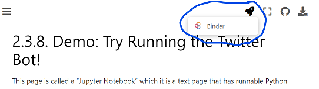
If you launch binder, it will take a while to load, but eventually show you a version of this page Jupyter Notebook in a code editor called Jupyter Lab
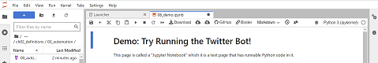
In Jupyter Lab you can double click any section to edit it, and you can press the triangle “run” button to run the code (or display the text).
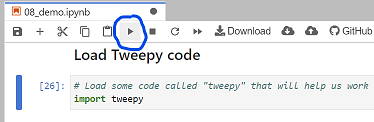
When the code runs, the little number to the left of the code block should change. There might also be some output from your action displyed below the code block.
So now you can go through the rest of this page and try out the practice exercises for yourself!
Variables#
You will first practice saving values into variables. Remember, the way we save a value into a variable is like this:
First, save the piece of text “I am writing a computer program!” into a variable called
my_progressViewing variables in the debugger#
Before we continue, we are going to show you how to open the debugger so you can see what is being saved in your variables.
On the tp right of this tab, press the small bug icon to “enable debugging”:
Then, if you did the step above correctly, you should see the variable
my_progresswith the value “I am writing a computer program!” next to it:Practice number variables#
First, write and run a line of code to save the value 5 into a variable named
number_of_piesNow, save the value 12.5 into a variable named
cost_per_pieNow make a new variable called
total_pie_costand save into the value of the number_of_pies multiplied by the cost_per_pie.Note: In python (and many programming languages), the symbol for multiply is
*Now use the
displayfunction to display what is saved in total_pie_costMore variable practice#
Now, make a new variable called
first_nameand assign your first name to itNow, make a variable calles
last_nameand save your last name to itCreate a variable called
ageand assign your age to it.~ A year goes by ~
Increase the
agevariable by 1.Now write three lines of code, with each line using
displayto show what is saved infirst_name,last_name, and `ageSleep#
In order to use sleep, we must first import it from the time library
Now try displaying 5 messages of your choosing, with some pauses between each one:
Reddit Bot Practice#
Now lets try a Reddit bot with variables and sleep!
Load Praw Library#
First, we need to load the praw library
(Optional) Step 1b: Make a fake praw connection with the fake_praw library#
For testing purposes, we’ve added this line of code, which loads a fake version of praw, so it wont actually connect to reddit. If you want to try to actually connect to reddit, don’t run this line of code.
Step 2: Load your developer access passwords#
To use this on your real Reddit account, copy your developer access passwords into the code below, replacing our fake passwords.
Step 4: Give praw (or fake_praw) your developer access passwords#
Step 5: Submit a post to Reddit#
Post something you learned in the class so far:
Remember, the code to post a tweet looks like this:
Post from a variable#
Now try saving a piece of text in a variable for the title, and another for the content of a post, and then submitting a post of whatever you saved in the variables.
To do this, where the code has
submit( ... ), you’ll replace the quoted text with the variable name, so it will look like:(with whatever your variable name was instead of “title_variable” and “content_variable”)
Submit multiple posts#
Next try submitting 3 posts, but use
sleepto add pauses between each one (note that reddit might not want you to make more than 1 post every 15 minutes, so you can sleep for 15*60 seconds or more before posting again).Ch 4 Practice: Python Basic Data Types#
Greeting#
Make a new variable called
greeting_part_1and assign it the string:"Welcome, "Note: There is an extra space after the word
Make a new variable called
greeting_part_2and assign it the string:"! It is nice to meet you!"Note: this string starts with an exlamation mark.
Make a variable called name_1 and assign it with a string of someone’s name.
Now, combine them all together into a new variable called
full_greeting. Combine the parts together by takinggreeting_part_1then addingnamethen addinggreeting_part_2.Then display the variable
full_greeting.Now make a variable called
name_2with another name in it and make a variablecalled_full_greeting_2the same way you didfull_greeting, but withname_2instead.Then display the variable
full_greeting_2Engagement report#
Make up numbers for tweet metrics and save them into variables:
number_likes,number_retweets,number_quote_tweetsWrite three different
display()function calls, one to report on each of those variables.Inside the parentheses first put a string like,
"The number of likes is: "and then add the relevant variable to it, but remember, since the variable has a number in it, you have to put astr()function call around that variable nameMake a new variable called
total_engagementand save the total number of all the likes, retweets and quote tweets.Then display that information the way you did the other variables.
Is your tweet too long#
Make a variable called
tweet_1with a string of your choosing that is fairly shortMake a variable called
tweet_1_length, and save the length of the stringtweet_1into it (using thelen()function)Check if the
tweet_1_lengthis less than or equal to 280 characters (the max length of a tweet) using the less than or equal operator:<=, and save the result into a variable calledis_tweet_1_short_enoughUse the
display()function to display a string ("Is tweet 1 short enough? "), adding the variableis_tweet_1_short_enoughto that string.Remember, since the variable has a boolean and not a string in it, you have to put a str() function call around that variable name
Make a variable called
tweet_2with a string of your choosing that is very long (over 280 characters)Repeat the rest of the steps from before, but with tweet_2
find tweet_2_length
make a variable is_tweet_2_short_enough
display the result
Ch 5 Practice: Looping through lists and dictionaries#
Try out these coding problems to practice looping, lists, and dictionaries
Make a loop that displays “Are you awake yet?” 5 times
Make a list of names (at least three), and save it in a variable called
namesNow loop over each of those names, and for each name display “[name] is awesome!”
Now, do the same thing as before, but for each name, first make a string that has “[name] is awesome!” and save it in a variable, then use the
.upper()function on the string to make it all uppercase and save it into a variable, then display the final string.Now, we are going to make a dictionary with information on a photo
Select and display the width of the photo
Select and display the location of the photo
Now we are going to make a list of photo info for you to go through
Now, make a for loop to go through each set of phone info in
photo_info_list, and for each one, useprintcommands to display the width, height, location, and deviceCh 7 Practice: Conditionals and String Manipulation#
IF ELSE Statements#
Look at the following code example and try running it
Now what would happen if x was changed to 30? What would the output be?
Do Not Code. Please answer this question as a markdown block. Modify the code above to check your answer afterwords.
It would print ‘B’
What value would the
xvariable have to be in order to get the output ‘C’?Again, Do Not Code. Please answer this question as a markdown block Modify the code above to check your answer afterwords
If x were 12, it would print C
String Manipulation#
Now, make a variable with your name in it, called
my_nameWrite code to display the first letter of your name
Write code to display the last letter of your name
Ifs with Strings#
Save a string in a variable called
messageand have it end with either a question mark?, an exclamation mark!, or a period.Now, make a set of if/elif/else statements which will display either:
The message was a questionThe message was an exclamationThe message was a statementThe message ended unexpectedlydepending on what character the message ended in a
?,!,., or something else. Hint: use theendswithfunction.Now, go back and modify the message string to see if the different if/elif/else options all work
Ch 8 Practice: Sentiment Analysis and Loop Variables#
Now it’s your turn to practice sentiment analysis and loop variables
Sentiment Analyasis#
First run the code to load up the Sentiment Intensity Analyzer
Also, look at this example from the demo of running sentiment analysis:
Now, copy that two lines of code above, and try out your own sentences, and run the sentiment analysis on them
Try several sentences and see how the Sentiment Intensity Analyzer handles them
Loop variables#
Now let’s practice with loop variables.
Below is a for loop which goes through each letter in the word “Mississipi”.
Make another copy of that loop, but add a variable before the loop called
num_lettersand use it count how many letters were in the word “Mississipi”. At the end display the number of letters.Make another copy of what you just did, but this time also count the number of “i”s. Make a variable called
num_ito count how many “i”s.Hint: To see if a letter is an “i”, check if
letter == "i"At the end print out how many of the letters were “i”s and what percentage of the word was “i”s.
Ch 9 Practice: Functions#
Create a function called
say_goodbyewhich displays the text “Goodbye!”Write code that calls the function
say_goodbyeRedefine the function
say_goodbyeto take a parameter calledname, and have it display “Goodbye name!” where “name” is replaced by whatever was in thenamevariableWrite code that calls the function say_goodbye but with your name as a parameter
Try out the code below which counts from 0 to 4 slowly:
We can put that for loop in a function like this:
And then we can call it:
Now redifine
counterbycopying the code above which defines
countermake the counter take a parameter called
maxHave the
rangecall use the parametermaxNow try calling the new version of
counterbut passing it the argument 7Create a function called
multiplywhich takes two arguments, multiplies them together (*), and then returns the multiplied valueCall the
mutliplyfunction with two numbers and save the result in a variable. Then print out the variable to see that the multiplied number was saved.Ch 12 Solution: Dictionary Counters#
Now it’s your turn to practice dictionary counters
Copy the code from the demo that counts letters in a string. Modify the string to be something else and find the letter_counts (no need to sort)
{'y': 1, 'o': 1, 'u': 1, 'r': 2, ' ': 2, 't': 2, 'e': 3, 'x': 1, 'h': 1}Now let’s try this with words.
The code below makes a string, and then splits it into words by dividing it apart at each space.
Make code that counts how often each word appears in
split_poem(it should be very similar to the code from problem 1 above, but you should haveword_countsinstead ofletter_counts, and you should loop overwords instead ofletters){'some': 2, 'say': 3, 'the': 1, 'world': 1, 'will': 1, 'end': 1, 'in': 2, 'fire': 2, 'ice': 2, 'from': 1, 'what': 1, 'i’ve': 1, 'tasted': 1, 'of': 2, 'desire': 1, 'i': 3, 'hold': 1, 'with': 1, 'those': 1, 'who': 1, 'favor': 1, 'but': 1, 'if': 1, 'it': 1, 'had': 1, 'to': 2, 'perish': 1, 'twice': 1, 'think': 1, 'know': 1, 'enough': 1, 'hate': 1, 'that': 1, 'for': 1, 'destruction': 1, 'is': 1, 'also': 1, 'great': 1, 'and': 1, 'would': 1, 'suffice': 1}Ch14 Demo: recursion with real tweets#
Normal Tweepy Set-Up#
(optional) use the fake version of tweepy, so you don’t have to use real twitter developer access passwords
(Just Run): Helper function to display text in an indented box#
Demo of using the display_with_left_margin function#
(Just Run): Helper code for getting a twitter conversation (that is a tweet and a bunch of its replies)#
You don’t need to know how this code works, but you can look through it if you want.
Also, if you want to use more includes or something, you can add them to the client.get_tweet() call and the client.search_recent_tweets() call. You might also need to do extra work to include them like I did with the author/users info
Recursively printing the tweets and replies#
loaded a set of tweets: {}Improved recursive print tweets and replies (more info)#
That last exam in sure was hard! -- Fake User (@fake_user) {'retweet_count': 10, 'reply_count': 2, 'like_count': 8, 'quote_count': 4}It sure was hard, what score did you get? -- Unreal User (@unreal_user) {'retweet_count': 4, 'reply_count': 2, 'like_count': 3, 'quote_count': 2}I got a 67% :( -- Fake User (@fake_user) {'retweet_count': 0, 'reply_count': 0, 'like_count': 2, 'quote_count': 0}I got a 73% -- Imaginary User (@imaginary_user) {'retweet_count': 0, 'reply_count': 0, 'like_count': 3, 'quote_count': 0}I didn't think it was that bad -- Pretend User (@pretend_user) {'retweet_count': 1, 'reply_count': 2, 'like_count': 1, 'quote_count': 6}how was that not a super hard exam? -- False User (@false_user) {'retweet_count': 2, 'reply_count': 0, 'like_count': 8, 'quote_count': 2}of coure you didn't -- Fake User (@fake_user) {'retweet_count': 1, 'reply_count': 1, 'like_count': 6, 'quote_count': 1}what's that supposed to mean? -- Pretend User (@pretend_user) {'retweet_count': 0, 'reply_count': 1, 'like_count': 1, 'quote_count': 0}you're an overachiever -- Fake User (@fake_user) {'retweet_count': 0, 'reply_count': 1, 'like_count': 3, 'quote_count': 0}and that's bad how? -- Pretend User (@pretend_user) {'retweet_count': 0, 'reply_count': 0, 'like_count': 0, 'quote_count': 0}Alternate Social Media APIs#
Ch 2.3.6 A program that posts one tweet#
Below is a computer program written in the Python programming language. The program will post a single tweet that says: “This tweet was posted by a computer program!”. Since this is a computer program that posts on twitter, we would call this program a twitter bot.
Don’t worry if you don’t understand any of this Python code yet; we will build an understanding of code like this throughout the book.
Though you may not understand anything in the above code yet, I want to point out a couple things:
The code above is full of English words like “import”, “key”, “secret”, which may help you guess the meaning of the code.
There are also other symbols as well, though being used in a different way than in normal English, symbols like
=,_,.,(, and)One particular piece of code gives a good hint as to what it is doing:
create_tweet. That indeed is the part of the program where the tweet is posted.There are five pieces of text with random numbers and letters that include things like “fake_consumer_key” inside. These pieces of text are meant to be replaced with a set of special passwords to your actual twitter account. You can get these special passwords if you get developer access to twitter (see the page on ). Once you put your special passwords in those locations then this code will post a tweet on your account.
We will go through that example code in more detail next.
Ch 2.3.7 Understanding the Twitter Bot Code#
Let’s look more at that program that posts one tweet.
There are a number of ways of looking at the code, but first, let’s look at it as a template with a couple pieces we can change.
The program as a template#
Below I’ve highlighted the text of the sections of the program that you might want to modify.
The first five highlighted pieces of code are for the special passwords you can get when you get developer access to twitter (I’ve put fake values in them for now):
bearer token
consumer key
consumer secret
access token
access token secret
These special passwords are needed for different actions on twitter. Rather than worry about which of these passwords are needed for which action, I’ll just always include all of them.
The final highlighted piece of code (in the parentheses after
create_tweet) is the text of what will be tweeted when this bot runs. You can change the text there to change what gets tweeted.So, by changing those sections of code, you run this program to post whatever tweet you want to your twitter account. It is, of course, much easier to just open twitter and tweet, but as we get to more complicated programs, we’ll start to see more of the power (and pitfalls) of automation on social media.
Note: all the highlighted sections of code are surrounded by double quotes. In the Python programming language, putting something in quotes indicates that you want the computer to think of the things inside the quotes as pieces of text, in this case passwords and tweet contents.
Adding code comments#
The goal of programming language code is to be readable by both humans and computers, but sometimes the meaning of code isn’t always clear to humans trying to read it. In order to aid humans reading the code, programming languages allow programmers to do things to make the code more readable, such as add extra blank lines between sections of code. Blank lines can be used to have some lines of code be visually grouped together, and some be separated, so humans can better follow the outline of the code.
Most programming languages also allow “comments,” which are pieces of code that the computer will ignore. These comments allow the person writing the code to leave a note to future people reading the code, knowing that the computer won’t read it (like an aside in a play).
In Python, you can add a comment by use the
#symbol. Python will ignore everything on a line that comes after the#. But humans programmers will often look for the meaning of the program in these comments.So, in order to make the program above easier for future humans to understand, let’s add two comments telling these future humans where to add their special passwords and where they can change the text of the tweet:
With those, hopefully a future human reader will have a better chance of understanding how to modify the program to do what they want.
Note: I started each comment with “TODO” to tell the future human that there is a task they have to do to get the program to work for them. Since this is only intended for human readers, I could have written it in any way I want, but all capital letter TODOs are commonly used like this by programmers.
Purpose of each section of code#
Now that we’ve looked at the code as a modifiable template, let’s break the code into sections and look at what the purpose of each part is. The code is run starting at the top and going down from there, so we will go through the code in that order.
Note: It’s normal if you don’t understand everything here. Over the course of this book you will learn to understand more of how programs work, but also, even professional programmers often don’t understand parts of the programs they are working on, they just understand enough to modify the parts they need to.
The first line of code is:
The purpose of this line of code that loads another set of code. The code it loads is called tweepy, which is code specially written to help make programs that work with twitter.
The next section of code is five lines long:
This is code to store all of our twitter developer access passwords into Python so we can use them later. Again, you’ll have to get your actual developer access passwords and replace the fake ones currently in the code.
The next section of code is five lines long:
The purpose of this code is to take all the developer access passwords you entered above, and give them to the tweepy code so that the tweepy code can log into your twitter account and provide the needed passwords for whatever twitter action you want to do.
The final line of code is:
This is the line of code where a tweet is actually posted. The action is called “create_tweet” since the code is creating a tweet. Inside the double quotes is the text that is going to be tweeted.
Adding more code comments#
Now that we’ve looked at the purpose of each section of code, we can add additional comments explaining what each section does, so that future humans reading the code are more likely to understand it.
Following the common practice of programmers, we will put the comment before the section of code that the comment is explaining. We can also make multiple comment lines as needed if our comments are long.
Now that we’ve looked over the code and commented it, let’s go to the next page, where you can try running it!
Ch 2.3.8 Demo: Try Running the Twitter Bot!#
Running this Jupyter Notebook#
This page is called a “Jupyter Notebook” which it is a text page that has runnable Python code in it.
In order to run the code, you can look for the rocket button at the top which will give you an option to “launch binder”
If you launch binder, it will take a while to load, but eventually show you a version of this page Jupyter Notebook in a code editor called Jupyter Lab
In Jupyter Lab you can double click any section to edit it, and you can press the triangle “run” button to run the code (or display the text).
When the code runs, the little number to the left of the code block should change. There might also be some output from your action displyed below the code block.
So now you can go through the rest of this page and select and run each section of code.
Here is the bot code you can run!#
Our demo Twitter bot code is below, broken up into different sections.
You can select each section of the code below and run it to see what it does.
By default this code uses a fake version of our twitter connection so it doesn’t connect to a real twitter account.
If you want to actually connect to your twitter account, you can put your special developer access passwords in the right code section below, and then when you run the code make sure to skip the code section that makes a fake twitter connection with “fake_tweepy”.
Step 1: Load Tweepy code#
(Optional) Step 1b: Make a fake twitter connection with the fake_tweepy library#
For testing purposes, we’ve added this line of code, which loads a fake version of tweepy, so it wont actually connect to twitter. If you want to try to actually connect to twitter, don’t run this line of code.
Step 2: Load your developer access passwords#
To use this on your real twitter account, copy your developer access passwords into the code below, replacing our fake passwords.
Step 4: Give tweepy (or fake_tweepy) your developer access passwords#
Step 5: Post a tweet#
Step 6: Modify the code above to post a different tweet#
Note: If you try to post the same exact tweet twice in a row on real twitter, you will get an error message (it will be a lot of red text, which can be intimidating, but it just means you aren’t allowed to post the same tweet twice in a row).
What To Do With Error Messages#
If you run this code trying to connect to a real twitter account, there are different error messages you might get.
When you get an error message, there is often a lot of text and details about when and where exactly the error happened, which can look very intimidating. But we’ll highlight the parts you need to pay attention to.
Unauthorized Error:#
If your special passwords in bot_keys.py aren’t working, you might a 401 unauthorized error. To fix this:
make sure you have all the special passwords in the bot_keys.py file (you may need to regenerate them)
make sure the bot_keys file is saved (a dark circle on the tab means it isn’t saved)
make sure to restart the kernal on this tab.
Hopefully that fixes it, otherwise talk to your TA or the instructor
Duplicate Error:#
If you get this message, it just means you are trying to post the same tweet again, which twitter doesn’t want you to do. Change the text of the tweet you are trying to make and it should hopefully work.
Ch 3.3.3 Practice: Statements and Variables (Twitter)#
This Python Notebook is a chance for you to try out the programming concepts we have covered thus far.
As we mentioned previously in the first bot demo (2.3.8), in order to run the code, you can look for the rocket button at the top which will give you an option to “launch binder”
If you launch binder, it will take a while to load, but eventually show you a version of this page Jupyter Notebook in a code editor called Jupyter Lab
In Jupyter Lab you can double click any section to edit it, and you can press the triangle “run” button to run the code (or display the text).
When the code runs, the little number to the left of the code block should change. There might also be some output from your action displyed below the code block.
So now you can go through the rest of this page and try out the practice exercises for yourself!
Variables#
You will first practice saving values into variables. Remember, the way we save a value into a variable is like this:
First, save the piece of text “I am writing a computer program!” into a variable called
my_progress# TODO: enter your code hereViewing variables in the debugger#
Before we continue, we are going to show you how to open the debugger so you can see what is being saved in your variables.
On the tp right of this tab, press the small bug icon to “enable debugging”:
Then, if you did the step above correctly, you should see the variable
my_progresswith the value “I am writing a computer program!” next to it:Practice number variables#
First, write and run a line of code to save the value 5 into a variable named
number_of_pies# TODO: enter your code hereNow, save the value 12.5 into a variable named
cost_per_pie# TODO: enter your code hereNow make a new variable called
total_pie_costand save into the value of the number_of_pies multiplied by the cost_per_pie.Note: In python (and many programming languages), the symbol for multiply is
*# TODO: enter your code hereNow use the
displayfunction to display what is saved in total_pie_cost# TODO: enter your code hereMore variable practice#
Now, make a new variable called
first_nameand assign your first name to it# TODO: enter your code hereNow, make a variable calles
last_nameand save your last name to it# TODO: enter your code hereCreate a variable called
ageand assign your age to it.# TODO: enter your code here~ A year goes by ~
Increase the
agevariable by 1.# TODO: enter your code hereNow write three lines of code, with each line using
displayto show what is saved infirst_name,last_name, and `age# TODO: enter your code hereSleep#
In order to use sleep, we must first import it from the time library
Now try displaying 5 messages of your choosing, with some pauses between each one:
# TODO: enter your code hereTwitter Bot Practice#
Now lets try a twitter bot with variables and sleep!
Load Tweepy Library#
First, we need to load the tweepy library
(Optional) Make a fake twitter connection with the fake_tweepy library#
For testing purposes, we’ve added this line of code, which loads a fake version of tweepy, so it wont actually connect to twitter. If you want to try to actually connect to twitter, don’t run this line of code.%run ../../fake_tweepy/fake_tweepy.ipynb
Load your developer access passwords#
To use this on your real twitter account, copy your developer access passwords into the code below, replacing our fake passwords.
Give tweepy (or fake_tweepy) your developer access passwords#
Post a tweet#
Post something you learned in the class so far:
Remember, the code to post a tweet looks like this:
client.create_tweet(text="This is the tweet text")# TODO: enter your code herePost from a variable#
Now try saving a piece of text in a variable, and then tweeting the whatever you saved in the variable.
To do this, where the code has
client.create_tweet(text="This is the tweet text"), you’ll replace the quoted text with the variable name, so it will look likeclient.create_tweet(text=variable_name)(with whatever your variable name was instead of “variable_name”)# TODO: enter your code herePost multiple tweets#
Next try posting 5 tweets, but use
sleepto add pauses between each one (if you make the pauses over 60 seconds, then the official “time” of the tweet should look different on the twitter interface).# TODO: enter your code hereCh 4.5.3 Demo: Data from a Tweet#
Let’s see what the data actually looks like from a Tweet!
First we need to do our normal twitter login steps (and optional fake tweepy step)
Log into tweepy (or fake tweepy)#
#
(optional) make a fake twitter connection with the fake_tweepy library#
For testing purposes, we’ve added this line of code, which loads a fake version of tweepy, so it wont actually connect to twitter. If you want to try to actually connect to twitter, don’t run this line of code.
load your developer access passwords#
To use this on your real twitter account, copy your developer access passwords into the code below, replacing our fake passwords.
give tweepy (or fake_tweepy) your developer access passwords#
Find a tweet#
Below I have the code to find a recent tweet that has the phrase “cute cat”.
Don’t worry if you don’t understand this part yet, We are just doing this, so we can get to the point of seeing what tweet data looks like.
Note: If you run this on real twitter, we can’t gurantee anything about how offensive what you might find is. We don’t know of any word search We could guarantee would be safe.
Look at data in tweet#
Now we will look at some of the data that came back!
Again, don’t worry too much about the code, we want to look at the data and data types.
tweet text:#
As you can see above, the tweet text is a string (
str) data type. And while we can’t see any indication here, we know from elsewhere that tweet text is limited to 280 characters in length.tweet id#
The tweet id is an integer number (
int). This is how the tweet is referred to inside Twitter’s computers. So if someone is replying to a tweet, Twitter just puts which tweet ID they were replying to, and then can look up that tweet if needed.tweet author id#
The author id is an integer number (int). This is how the user who posted the tweet is referred to inside Twitter’s computers. So when twitter wants to display the tweet with the user info, it uses this number to look up the information on that user.
tweet created at#
The created at time for the tweet is a special python datetime data type (
datetime). As you can see, it has the year, month, and day, and then the time in hours, minutes and seconds. It then shows the timezone it is in, in this case: 00:00, which is in Coordinated Universal Time.tweet lang (language)#
The language the tweet is made in is a string (
str). It comes from a set of standard language abbreviations and in this case it is “en” which is short for “English”.tweet source (device that made the tweet)#
The tweet source is a string (
str). In this case it is “Twitter for Android” meaning someone posted this tweet from the Twitter App on their Android phone.public metrics#
"The tweet tweet source is: {'retweet_count': 7, 'reply_count': 3, 'like_count': 6, 'quote_count': 2}"The public metrics of a tweet are saved in a dictionary (
dict), which holds a group of values. So let’s look at each of those:The counts for retweets, replies, likes, and quotes are each integer numbers (
int), indicating how many times the tweet has been retweeted, replied to, liked, or quoted.Still more!#
In addition to the data we looked at above, there are even more options for tweets such as:
conversation_id: For tracking which tweets are in the same conversation, like replies and threads)
geo: For the location where a tweet was posted (I think default privacy settings now leave this blank)
organic_metrics: For the account that made the tweet, they can see how many people looked at it, or clicked on the user profile
You can read more about all this data and more in the official twitter API documentation (which is admittedly, a little hard to read and make sense of).
Ch 5.4.2 Demo: Dictionaries (Twitter)#
We’ve talked about lists, but the other data organization we need to work with social media data is
dictionaries.As we mentioned in chapter 4, dictionaries allow us to combine pieces of information by naming them (sort of like variables).
So for example, the information about a user might have the following pieces of data:
Username
Twitter handle
Profile Picture:
Follows
Python has two ways of doing these types of dictionaries:
dictand objectsDictionaries (
dict)#We can create dictionaries in Python by storing values into
keys inside of curly braces{}, like this:In the code above, inside of the curly braces are a set of lines. Each line has a string (the
key, or name of the value), followed by a colon (:), followed by a value that is to be saved for the key. At the end of all but the last line is a comma (,) which indicates that anotherkeyand value will come next.Now that we’ve saved some values for some keys in the dictionary now saved in user_1, we can look up the values by using square brackets (
[,]) with the key name inside, like this:Objects#
The other way of saving information that works similarly in Python is through an object. We won’t be creating any in this book, but we will have to get data from some.
The main difference from what we will need is that while in dictionaries we use square brackets and put the key name in quotes as a string (e.g.,
user_1["profile_picture"]), in an object you use a period (.) and don’t put they key name (called afield) in quotes (e.g.,user_1.profile_picture)We have already seen code that used this period to get something from an object a few times, specifically getting functions from them, like:
client.create_tweet(...normal_message.upper()When we go through data from twitter, sometimes we will need to use
.to get parts of the information out of objects, and sometimes we will need to use[" "]to get information out of dictionaries.Looping through lists of dictionaries#
Now that we’ve seen loops, lists, and dictionaries, we can go back to Twitter, run a search and look through multiple tweets:
load tweepy library#
(optional) make a fake twitter connection with the fake_tweepy library#
For testing purposes, we’ve added this line of code, which loads a fake version of tweepy, so it wont actually connect to twitter. If you want to try to actually connect to twitter, don’t run this line of code.
load your developer access passwords#
give tweepy (or fake_tweepy) your developer access passwords#
find a list of tweets#
We can now do a search and find a list of tweets.
Note: If you run this on real twitter, we can’t gurantee anything about how offensive what you might find is. We don’t know of any word search we could guarantee would be safe.
Loop through the list of tweets#
The variable
tweets_listnow has a list of tweet. So we can use a for loop to go through each tweet, and then use.to access info from each tweet (other pieces of information would need[" "]to access).For each of the tweets, we will use
printto display information about the tweetCh 6.2.2 Demo & Practice: Tweet Sources#
Let’s now try out some code to see what device people are using to post their Tweets. We can’t look at Donald Trump’s Tweets, since his account was suspended in January 2021 for inciting violence, but we can look at other accounts and think about authenticity might mean for different types of accounts.
Log into Twitter#
These are our normal steps get Tweepy loaded and logged into Twitter
(optional) make a fake twitter connection with the fake_tweepy library
For testing purposes, we’ve added this line of code, which loads a fake version of tweepy, so it wont actually connect to twitter. If you want to try to actually connect to twitter, don’t run this line of code.
Load tweets with the source (what device they were posted on)#
The code below searches for recent tweets from an account, and then does a loop though all the tweets, printing out the source device of the Tweet and then the tweet itself. Hopefully most of the code looks familiar from last chapter when we covered loops over social media data.
Try searching for recent tweets from different types of accounts, like:
News organizations and other corporations, like: cnn
Politicians, like: BarackObama, JoeBiden,
Other celebrities, like MarkRuffalo, selenagomez
To do this:
put in your special Twitter bot passwords
skip the fake_tweepy step above
take the first line of the code below and replace
'from:fake_celebrity'with something like'from:cnn'Reflecting on what you find#
In our fake_celebrity example, you will see that some of the tweets are posted from a Social Media Manager, a program that helps people schedule posts and otherwise manage their social media accounts.
Reflect on what you feel that social media manager means for authenticity for different types of accounts.
Demo: Trolling a Reply Bot#
We are later going to build a bot that, if you tweet at it:
“Hi @mybotname, please ___” (where the ___ is some action)
then the bot will reply, “I will now ____” (where the ___ is that same action).
Then we will try trolling it, and fixing it, and trolling it again.
First though we need to do our tweepy setup:
Tweepy set-up#
(optional) make a fake twitter connection with the fake_tweepy library
For testing purposes, we’ve added this line of code, which loads a fake version of tweepy, so it wont actually connect to twitter. If you want to try to actually connect to twitter, don’t run this line of code.
Finding my twitter bot name#
We are going to be looking for people tweeting at us “Hi @mybotname, please ___”, except we will need to get our actual twitter handle instead of “@mybotname”. We’ll need our twitter id number as well to find tweets that mention us.
We do this by asking twitter for our user info, then getting the id and username from it:
Bot 1: do whatever we are told#
our first bot will find our latest mention, and then do whatever it is told
find my latest mention#
Next we need to find the latest tweet that mentioned us.
We do this by asking twitter for tweets that mention our user id, then pulling the first thing out of the list (index 0).
Then we get the tweet id and the text of the tweet.
Note: This code will crash, showing error messages if there are no recent tweets mentioning us
If tweet matches our pattern, reply#
We will now see if our tweet matches our pattern of “Hi @mybotname, please ___” and then we will reply.
First we will create a string with the correct pattern, but with our actual bot name
Now, if the mention text starts with that expected pattern, then we will find the action from the end of the mention text (based on the expected_pattern length), and reply using that action:
Yay! It worked! But there is a problem!
Trolling bot 1#
This bot is really easy to troll, so if I repeat my steps and get a new mention:
Someone tweeted at us:
Hi @fake_user, please do something horrible!, and we repliedI will now do something horrible!.They could have made us tweet much worse!
Bot 2: Trying to limit actions#
Let’s try this again, but limit the actions we will do.
If someone asks us to “run”, “jump”, or “fly”, we will do it
If someone asks us to do something else we will say:
“I do not recognize the command ___” (with __ being whatever they said)
So, to go back through our steps:
find my latest mention#
If tweet matches our pattern, reply#
We do the same code for this as before, but after we get the action, we have another
if/elseto tweet back our two options.We will use
into see if the action is in our list of allowed actions (called an allow_list)That one was in our allow list so it worked. Let’s do it all again, with the tweet that caused us problems last time
Note: the code below is just copied from the code sections above
Ok, this time we said
I do not recognize the command do something horrible!.That looks a little better! Are we safe now?
Trolling bot 2#
No, it turns out we are not safe.
Let’s find the latest mention again and see what happens
Oh no! Someone tweeted at us:
Hi @fake_user, please stop talking. But that doesn't mean I won't say horrible things like: I hate everybody!And we replied:
I do not recognize the command stop talking. But that doesn't mean I won't say horrible things like: I hate everybody!Making a bot that is troll proof is very difficult! You either need to severely limit how your bot engages with people, or do a ton of work trying to prevent trolling and fix problems when people find a new way of trolling you.
If you want to learn more, you can revisit the story of what went wrong with the Microsoft Tay bot: How to Make a Bot That Isn’t Racist
Data From the Twitter API#
When we’ve been accessing Twitter through Python and the “tweepy” code library. The tweepy code library works by sending requests across the internet to twitter, using what is called an “application programming interface” or API for short. APIs have a set of rules for what requests you can make, what happens when you make the request, and what information you can get back.
If you are interested in learning more about what you can do with tweepy and what information you can get back, you can look at the official documentation for those. But be warned they are not organized in a friendly way for newcomers and take some getting used to to figure out what these documentation pages are talking about.
So, if you are interested, you can look at the tweepy library documentation to see what tweepy functions you can run and what requests they make of the twitter API.
You can also look at information on the data that you can get from the Twitter API by looking at the Twitter API Documentation. For example, you can look at the documentation for getting a Tweet, and see that you can get public metrics of a Tweet (likes, replies, etc.), and if you are the owner of the tweet you can get private “organic” metrics (how many people saw the tweet, how many clicked the to see the profile of the person who made the tweet, etc.).
The Twitter API lets you access just some of the data that Twitter tacks, but Twitter and other social media platforms track much more than they let you have access to.
Demo: Sentiment Analysis on Twitter#
Now let’s try using sentiment analysis (and loop variables) on Twitter:
We’ll start by doing our normal steps to load tweepy (or fake tweepy)
Tweepy Setup#
(optional) make a fake twitter connection with the fake_tweepy library
For testing purposes, we’ve added this line of code, which loads a fake version of tweepy, so it wont actually connect to twitter. If you want to try to actually connect to twitter, don’t run this line of code.
Sentiment Analysis#
load sentiment analysis library and make analyzer#
loop through tweets, finding average sentiment#
We can now combine our previous examples of looping through tweets with what we just learned of sentiment analysis and looping variables to find the average sentiment of a set of tweets.
We can now see the average sentiment of a set of tweets based on our search of twitter!
If you use your twitter bot keys, you can change the
queryto be whatever twitter search you want and see whether people are tweeting positively or negatively about it.note: You can change
max_results=10to go up to 100 to get more tweets at a time to find the average ofCh10.5.2: Demo: Extra Data From Twitter#
In order to get alt-text data from images in Tweets, we’re going to have to look at how to get extra data from Twitter.
Note: You don’t really need to undestand this whole process, you can just take the final code pieces and copy/paste them to use them yourself. We are including this explanation in case you want to know how it is working.
The examples here are based on examples from this website
But first let’s do our normal tweepy set-up
Normal Tweepy Set-Up#
(optional) use the fake version of tweepy, so you don’t have to use real twitter developer access passwords
Get media (including image) data#
If we want to get media (including image) data from tweets, when we are using search_recent_tweets, then we have to include:
expansions='attachments.media_keys'which tells Tweepy to get the media information for the tweetmedia_fields=['preview_image_url', 'height', 'width']which tells Tweepy which information to get for each piece of media.Let’s do a search for tweets that include the word dog, and have an image, and are not retweets (so we don’t just get the same tweet for all the times it was retweeted):
Now, when our search comes back, it has both the Tweet information and the information about media (including images) in those Tweets.
Unfortunately the Tweet info and the media info come back in two separate parts of the tweet_search_results:
tweet_search_results.datahas the list of tweetstweet_search_results.includes['media']has a list of the pieces of media in the tweets[namespace(text='Look at my cute dog!', id=2342352355, author_id=213412413, data={'attachments': {'media_keys': ['7_4353463']}}), namespace(text='check out these dog photos', id=93298432, author_id=309453565, data={'attachments': {'media_keys': ['4_354354', '4_324654']}}), namespace(text='lol silly dog!', id=43954354, author_id=309453565, data={'attachments': {'media_keys': ['5_45353']}})][namespace(media_key='7_4353463', type='photo', height=600, width=800, alt_text='Photo of a small dog lying flat on floor, looking exhausted', url='fake_website_photo1.jpg'), namespace(media_key='4_354354', type='photo', height=300, width=400, alt_text=None, url='fake_website_photo2.jpg'), namespace(media_key='4_324654', type='photo', height=300, width=400, alt_text=None, url='fake_website_photo3.jpg'), namespace(media_key='5_45353', type='photo', height=1200, width=1024, alt_text='photo taken by fake user 2', url='fake_website_photo4.jpg')]The way this comes back doesn’t directly tell us which piece of media is part of which tweet. Instead, for each piece of media, there is a special id number called the
media_key, and for each tweet there is a list ofmedia_keys that are part of the tweet.for a
tweetintweets.data, the media_keys are intweet.data['attachments']['media_keys']for a piece of
mediain thetweets.includes['media'], the media_id is inmedia['media_key']So, if we are looking at a tweet, and look at the media keys, we will want to look up the media information that goes with that key. Looking up something based on a key is easiest to do with a dictionary in Python. So, what we will do is make a dictionary where the keys are media_keys, and the values are the media information. It will look something like this:
Below is the code to do this (using several Python short hand tricks at once):
{'7_4353463': namespace(media_key='7_4353463', type='photo', height=600, width=800, alt_text='Photo of a small dog lying flat on floor, looking exhausted', url='fake_website_photo1.jpg'), '4_354354': namespace(media_key='4_354354', type='photo', height=300, width=400, alt_text=None, url='fake_website_photo2.jpg'), '4_324654': namespace(media_key='4_324654', type='photo', height=300, width=400, alt_text=None, url='fake_website_photo3.jpg'), '5_45353': namespace(media_key='5_45353', type='photo', height=1200, width=1024, alt_text='photo taken by fake user 2', url='fake_website_photo4.jpg')}Now we can choose a tweet, find the media_keys for that tweet, and then look up the media information on each of those tweets
Get user information#
User information works the same way that media information did, though there will only be one author per tweet. We have to set an expansion and tell what user fields to download:
Then we make a lookup dictionary for the user information
{213412413: namespace(id=213412413, name='Fake User 1', username='fakeuser1', profile_image_url='fake_profile_image1.jpg'), 309453565: namespace(id=309453565, name='Fake User 2', username='fakeuser2', profile_image_url='fake_profile_image2.jpg')}Then we can find the
author_idof a tweet in tweet.author_id, and look it up in theuser_lookupdictionaryCh10.5.2: Demo: Alt-text From Twitter#
Now that we’ve seen how to select additional information about Tweet images and data, let’s search for images and look up some alt-text:
Normal Tweepy Set-Up#
(optional) use the fake version of tweepy, so you don’t have to use real twitter developer access passwords
Do a search for tweets, loop through the tweets and display the alt-text information#
What alt-texts do you find helpful?#
In the above output, you are in a position where you can read the alt-text of the image, but you can’t see the image (unless you open up the actual tweets, which if you are looking at the fake_tweepy output, there are no actual tweets).
Without seeing the images you can hopefully see what makes alt-text useful or not. Posts without alt-text will be hard to make sense of, and some alt text on photos might tell you information about the photo, but not the information you need.
Ch 11.4.3: Demo: Recommend a User to Follow#
Now let’s look at a recommendation algorithm for a new person to friend or follow. Our algorithm will be
For a given user:
Look at the people this user follows
For each of those follows, look at who they follow
While doing this, keep track of what accounts showed up most
Recommend the accounts that showed up the most (the users most followed by people followed by our given user)
Normal Tweepy Set-Up#
(optional) use the fake version of tweepy, so you don’t have to use real twitter developer access passwords
Make a helper function (id_from_username#
Now that we’ve learned functions, we will be putting much of our code in functions.
So in order to simplify our code later, we will make a function that, when given a username, looks up the user and gets their id number (since we’ll need to use that id later)
Make a function to get follow suggestions#
Now we make a function that will generate follow suggestions.
The function takes a username (who we are making suggestions for), and a num_followers_to_check, which limits how many follows of our user we check (since Twitter limits how many requests we can make)
We then get a list of the follows for our user, and we create a dictionary counter (
possible_suggestion_counts).For each of our user’s follows, we get a list of who they follow (the follow-follows). Then for each of the follow_follows, we see if that user is in the
possible_suggestion_countsdictionary, and add it if it wasn’t there (starting with 1), or add 1 to it if it was already there.After the for loop we have counts for our possible suggestions (how often the follow-follows appeared). So we sort the list to put the most common ones at the top, and we return the results.
Test our function (suggest follows)#
Now that our function is ready, we can test it out and see who we suggest our “fake_user” should follow (if you skip fake_tweepy and log into real twitter, you can do this for real users)
[('awesome_user', 3), ('great_user', 2), ('ok_user', 1), ('mediocre_user', 1), ('another_user', 1)]If you skip the fake_tweepy step and run this on real Twitter, you might see some issues with the suggestions that we haven’t accounted for, such as:
it might suggest the user follow themself, or someone they already follow
the follow lists can be very long and you might not be getting the whole list in the
client.get_users_following()function call (you could use pagination to get more)We could of course add more code to deal with those issues, but hopefully you can at least get the idea of how this recommendation algorithm works :)
Demo: Only positive news#
Let’s look at something we could try to do to improve the mental health for our users: Only show positive news!
We’ll use sentiment analysis again, but this time we’ll do a search for news from a news account, but only display the tweets with a positive sentiment.
Would this actually improve someone’s mental health? It’s hard to say! But we can see something that we might try out if we wanted to improve mental health of our users.
Normal Tweepy Set-Up#
(optional) use the fake version of tweepy, so you don’t have to use real twitter developer access passwords
Load sentiment analyis code#
Code to search and display news tweets#
Now let’s make code that will do a search for news tweets (tweets from a fake_news_site), and display all of them. We will then make a modified version below to compare the results.
Search through tweets and only display good news#
Now we will make a different version of the code that computes the sentiment of each tweet and only displays the ones with positive sentiment.
Try it out on real twitter#
If you want, you can skip the fake_tweepy step and try it out on real twitter with a query like “from:npr”, “from:msnbc”, “from:cnn”, etc.
Did it work like you expected?
You can also only show negative sentiment tweets (sentiment < 0) if you want to see only bad news.
Practice Solutions (Twitter)#
These are solutions to the practice problems in the different chapters.
Ch 3 (Twitter) Practice: Statements and Variables#
This Python Notebook is a chance for you to try out the programming concepts we have covered thus far.
As we mentioned previously in the first bot demo (2.3.8), in order to run the code, you can look for the rocket button at the top which will give you an option to “launch binder”
If you launch binder, it will take a while to load, but eventually show you a version of this page Jupyter Notebook in a code editor called Jupyter Lab
In Jupyter Lab you can double click any section to edit it, and you can press the triangle “run” button to run the code (or display the text).
When the code runs, the little number to the left of the code block should change. There might also be some output from your action displyed below the code block.
So now you can go through the rest of this page and try out the practice exercises for yourself!
Variables#
You will first practice saving values into variables. Remember, the way we save a value into a variable is like this:
First, save the piece of text “I am writing a computer program!” into a variable called
my_progressViewing variables in the debugger#
Before we continue, we are going to show you how to open the debugger so you can see what is being saved in your variables.
On the tp right of this tab, press the small bug icon to “enable debugging”:
Then, if you did the step above correctly, you should see the variable
my_progresswith the value “I am writing a computer program!” next to it:Practice number variables#
First, write and run a line of code to save the value 5 into a variable named
number_of_piesNow, save the value 12.5 into a variable named
cost_per_pieNow make a new variable called
total_pie_costand save into the value of the number_of_pies multiplied by the cost_per_pie.Note: In python (and many programming languages), the symbol for multiply is
*Now use the
displayfunction to display what is saved in total_pie_costMore variable practice#
Now, make a new variable called
first_nameand assign your first name to itNow, make a variable calles
last_nameand save your last name to itCreate a variable called
ageand assign your age to it.~ A year goes by ~
Increase the
agevariable by 1.Now write three lines of code, with each line using
displayto show what is saved infirst_name,last_name, and `ageSleep#
In order to use sleep, we must first import it from the time library
Now try displaying 5 messages of your choosing, with some pauses between each one:
Twitter Bot Practice#
Now lets try a twitter bot with variables and sleep!
Load Tweepy Library#
First, we need to load the tweepy library
(Optional) Make a fake twitter connection with the fake_tweepy library#
For testing purposes, we’ve added this line of code, which loads a fake version of tweepy, so it wont actually connect to twitter. If you want to try to actually connect to twitter, don’t run this line of code.%run ../../fake_tweepy/fake_tweepy.ipynb
Load your developer access passwords#
To use this on your real twitter account, copy your developer access passwords into the code below, replacing our fake passwords.
Give tweepy (or fake_tweepy) your developer access passwords#
Post a tweet#
Post something you learned in the class so far:
Remember, the code to post a tweet looks like this:
client.create_tweet(text="This is the tweet text")Post from a variable#
Now try saving a piece of text in a variable, and then tweeting the whatever you saved in the variable.
To do this, where the code has
client.create_tweet(text="This is the tweet text"), you’ll replace the quoted text with the variable name, so it will look likeclient.create_tweet(text=variable_name)(with whatever your variable name was instead of “variable_name”)Post multiple tweets#
Next try posting 5 tweets, but use
sleepto add pauses between each one (if you make the pauses over 60 seconds, then the official “time” of the tweet should look different on the twitter interface).Ch 4 (Twitter) Practice: Python Basic Data Types#
Greeting#
Make a new variable called
greeting_part_1and assign it the string:"Welcome, "Note: There is an extra space after the word
Make a new variable called
greeting_part_2and assign it the string:"! It is nice to meet you!"Note: this string starts with an exlamation mark.
Make a variable called name_1 and assign it with a string of someone’s name.
Now, combine them all together into a new variable called
full_greeting. Combine the parts together by takinggreeting_part_1then addingnamethen addinggreeting_part_2.Then display the variable
full_greeting.Now make a variable called
name_2with another name in it and make a variablecalled_full_greeting_2the same way you didfull_greeting, but withname_2instead.Then display the variable
full_greeting_2Engagement report#
Make up numbers for tweet metrics and save them into variables:
number_likes,number_retweets,number_quote_tweetsWrite three different
display()function calls, one to report on each of those variables.Inside the parentheses first put a string like,
"The number of likes is: "and then add the relevant variable to it, but remember, since the variable has a number in it, you have to put astr()function call around that variable nameMake a new variable called
total_engagementand save the total number of all the likes, retweets and quote tweets.Then display that information the way you did the other variables.
Is your tweet too long#
Make a variable called
tweet_1with a string of your choosing that is fairly shortMake a variable called
tweet_1_length, and save the length of the stringtweet_1into it (using thelen()function)Check if the
tweet_1_lengthis less than or equal to 280 characters (the max length of a tweet) using the less than or equal operator:<=, and save the result into a variable calledis_tweet_1_short_enoughUse the
display()function to display a string ("Is tweet 1 short enough? "), adding the variableis_tweet_1_short_enoughto that string.Remember, since the variable has a boolean and not a string in it, you have to put a str() function call around that variable name
Make a variable called
tweet_2with a string of your choosing that is very long (over 280 characters)Repeat the rest of the steps from before, but with tweet_2
find tweet_2_length
make a variable is_tweet_2_short_enough
display the result
Ch 5 (Twitter) Practice: Looping through lists and dictionaries#
Try out these coding problems to practice looping, lists, and dictionaries
Make a loop that displays “Are you awake yet?” 5 times
Make a list of names (at least three), and save it in a variable called
namesNow loop over each of those names, and for each name display “[name] is awesome!”
Now, do the same thing as before, but for each name, first make a string that has “[name] is awesome!” and save it in a variable, then use the
.upper()function on the string to make it all uppercase and save it into a variable, then display the final string.Now, we are going to make a dictionary with information on a photo
Select and display the width of the photo
Select and display the location of the photo
Now we are going to make a list of photo info for you to go through
Now, make a for loop to go through each set of phone info in
photo_info_list, and for each one, useprintcommands to display the width, height, location, and deviceCh 7 (Twitter) Practice: Conditionals and String Manipulation#
IF ELSE Statements#
Look at the following code example and try running it
Now what would happen if x was changed to 30? What would the output be?
Do Not Code. Please answer this question as a markdown block. Modify the code above to check your answer afterwords.
It would print ‘B’
What value would the
xvariable have to be in order to get the output ‘C’?Again, Do Not Code. Please answer this question as a markdown block Modify the code above to check your answer afterwords
If x were 12, it would print C
String Manipulation#
Now, make a variable with your name in it, called
my_nameWrite code to display the first letter of your name
Write code to display the last letter of your name
Ifs with Strings#
Save a string in a variable called
messageand have it end with either a question mark?, an exclamation mark!, or a period.Now, make a set of if/elif/else statements which will display either:
The message was a questionThe message was an exclamationThe message was a statementThe message ended unexpectedlydepending on what character the message ended in a
?,!,., or something else. Hint: use theendswithfunction.Now, go back and modify the message string to see if the different if/elif/else options all work
Ch 8 (Twitter) Practice: Sentiment Analysis and Loop Variables#
Now it’s your turn to practice sentiment analysis and loop variables
Sentiment Analyasis#
First run the code to load up the Sentiment Intensity Analyzer
Also, look at this example from the demo of running sentiment analysis:
Now, copy that two lines of code above, and try out your own sentences, and run the sentiment analysis on them
Try several sentences and see how the Sentiment Intensity Analyzer handles them
Loop variables#
Now let’s practice with loop variables.
Below is a for loop which goes through each letter in the word “Mississipi”.
Make another copy of that loop, but add a variable before the loop called
num_lettersand use it count how many letters were in the word “Mississipi”. At the end display the number of letters.Make another copy of what you just did, but this time also count the number of “i”s. Make a variable called
num_ito count how many “i”s.Hint: To see if a letter is an “i”, check if
letter == "i"At the end print out how many of the letters were “i”s and what percentage of the word was “i”s.
Ch 9 (Twitter) Practice: Functions#
Create a function called
say_goodbyewhich displays the text “Goodbye!”Write code that calls the function
say_goodbyeRedefine the function
say_goodbyeto take a parameter calledname, and have it display “Goodbye name!” where “name” is replaced by whatever was in thenamevariableWrite code that calls the function say_goodbye but with your name as a parameter
Try out the code below which counts from 0 to 4 slowly:
We can put that for loop in a function like this:
And then we can call it:
Now redifine
counterbycopying the code above which defines
countermake the counter take a parameter called
maxHave the
rangecall use the parametermaxNow try calling the new version of
counterbut passing it the argument 7Create a function called
multiplywhich takes two arguments, multiplies them together (*), and then returns the multiplied valueCall the
mutliplyfunction with two numbers and save the result in a variable. Then print out the variable to see that the multiplied number was saved.Ch 12 Solution: Dictionary Counters#
Now it’s your turn to practice dictionary counters
Copy the code from the demo that counts letters in a string. Modify the string to be something else and find the letter_counts (no need to sort)
{'y': 1, 'o': 1, 'u': 1, 'r': 2, ' ': 2, 't': 2, 'e': 3, 'x': 1, 'h': 1}Now let’s try this with words.
The code below makes a string, and then splits it into words by dividing it apart at each space.
Make code that counts how often each word appears in
split_poem(it should be very similar to the code from problem 1 above, but you should haveword_countsinstead ofletter_counts, and you should loop overwords instead ofletters){'some': 2, 'say': 3, 'the': 1, 'world': 1, 'will': 1, 'end': 1, 'in': 2, 'fire': 2, 'ice': 2, 'from': 1, 'what': 1, 'i’ve': 1, 'tasted': 1, 'of': 2, 'desire': 1, 'i': 3, 'hold': 1, 'with': 1, 'those': 1, 'who': 1, 'favor': 1, 'but': 1, 'if': 1, 'it': 1, 'had': 1, 'to': 2, 'perish': 1, 'twice': 1, 'think': 1, 'know': 1, 'enough': 1, 'hate': 1, 'that': 1, 'for': 1, 'destruction': 1, 'is': 1, 'also': 1, 'great': 1, 'and': 1, 'would': 1, 'suffice': 1}Ch14 Demo: recursion with real tweets#
Normal Tweepy Set-Up#
(optional) use the fake version of tweepy, so you don’t have to use real twitter developer access passwords
(Just Run): Helper function to display text in an indented box#
Demo of using the display_with_left_margin function#
(Just Run): Helper code for getting a twitter conversation (that is a tweet and a bunch of its replies)#
You don’t need to know how this code works, but you can look through it if you want.
Also, if you want to use more includes or something, you can add them to the client.get_tweet() call and the client.search_recent_tweets() call. You might also need to do extra work to include them like I did with the author/users info
Recursively printing the tweets and replies#
loaded a set of tweets: {}Improved recursive print tweets and replies (more info)#
That last exam in sure was hard! -- Fake User (@fake_user) {'retweet_count': 10, 'reply_count': 2, 'like_count': 8, 'quote_count': 4}It sure was hard, what score did you get? -- Unreal User (@unreal_user) {'retweet_count': 4, 'reply_count': 2, 'like_count': 3, 'quote_count': 2}I got a 67% :( -- Fake User (@fake_user) {'retweet_count': 0, 'reply_count': 0, 'like_count': 2, 'quote_count': 0}I got a 73% -- Imaginary User (@imaginary_user) {'retweet_count': 0, 'reply_count': 0, 'like_count': 3, 'quote_count': 0}I didn't think it was that bad -- Pretend User (@pretend_user) {'retweet_count': 1, 'reply_count': 2, 'like_count': 1, 'quote_count': 6}how was that not a super hard exam? -- False User (@false_user) {'retweet_count': 2, 'reply_count': 0, 'like_count': 8, 'quote_count': 2}of coure you didn't -- Fake User (@fake_user) {'retweet_count': 1, 'reply_count': 1, 'like_count': 6, 'quote_count': 1}what's that supposed to mean? -- Pretend User (@pretend_user) {'retweet_count': 0, 'reply_count': 1, 'like_count': 1, 'quote_count': 0}you're an overachiever -- Fake User (@fake_user) {'retweet_count': 0, 'reply_count': 1, 'like_count': 3, 'quote_count': 0}and that's bad how? -- Pretend User (@pretend_user) {'retweet_count': 0, 'reply_count': 0, 'like_count': 0, 'quote_count': 0}(Incomplete) Teaching With This Book#